Google scholar (43018 citations) , DBLP , arXiv .
Entry('inproceedings’, fields=FieldDict(’{FreeSOLO}: Learning to Segment Objects without Annotations’), ('booktitle’, “IEEE Conference on Computer Vision and Pattern Recognition (CVPR’22)”), ('year’, ’2022’), ('volume’, ’’), ('month’, ’’), ('pdf’, ’’), ('url’, ’’), ('eprint’, ’2202.12181’), ('project’, 'https:git.ioAdelaiDet’), ('venue’, 'CVPR’)), persons=OrderedCaseInsensitiveDict(Xinlong’), Person('Yu, Zhiding’), Person(’{De Mello}, Shalini’), Person('Kautz, Jan’), Person('Anandkumar, Anima’), Person('Shen, Chunhua’), Person('Alvarez, Jose’)))) Entry('inproceedings’, fields=FieldDict('Retrieval Augmented Classification for Long-Tail Visual Recognition’), ('booktitle’, “IEEE Conference on Computer Vision and Pattern Recognition (CVPR’22)”), ('year’, ’2022’), ('volume’, ’’), ('month’, ’’), ('pdf’, ’’), ('url’, ’’), ('eprint’, ’2202.11233’), ('project’, ’’), ('venue’, 'CVPR’)), persons=OrderedCaseInsensitiveDict(Alexander’), Person('Yin, Wei’), Person('Ajanthan, Thalaiyasingam’), Person('Nguyen, Vu’), Person('Purkait, Pulak’), Person('Garg, Ravi’), Person('Blair, Alan’), Person('Shen, Chunhua’), Person(’{van den Hengel}, Anton’)))) Entry('inproceedings’, fields=FieldDict('Boosting Robustness of Image Matting with Context Assembling and Strong Data Augmentation’), ('booktitle’, “IEEE Conference on Computer Vision and Pattern Recognition (CVPR’22)”), ('year’, ’2022’), ('volume’, ’’), ('month’, ’’), ('pdf’, ’’), ('url’, ’’), ('eprint’, ’2201.06889’), ('project’, ’’), ('venue’, 'CVPR’)), persons=OrderedCaseInsensitiveDict(Yutong’), Person('Price, Brian’), Person('Zhang, He’), Person('Shen, Chunhua’)))) Entry('inproceedings’, fields=FieldDict(’{FreeSOLO}: Learning to Segment Objects without Annotations’), ('booktitle’, “IEEE Conference on Computer Vision and Pattern Recognition (CVPR’22)”), ('year’, ’2022’), ('volume’, ’’), ('month’, ’’), ('pdf’, ’’), ('url’, ’’), ('eprint’, ’2202.12181’), ('project’, 'https:git.ioAdelaiDet’), ('venue’, 'CVPR’)), persons=OrderedCaseInsensitiveDict(Xinlong’), Person('Yu, Zhiding’), Person(’{De Mello}, Shalini’), Person('Kautz, Jan’), Person('Anandkumar, Anima’), Person('Shen, Chunhua’), Person('Alvarez, Jose’)))) Entry('inproceedings’, fields=FieldDict(’{FreeSOLO}: Learning to Segment Objects without Annotations’), ('booktitle’, “IEEE Conference on Computer Vision and Pattern Recognition (CVPR’22)”), ('year’, ’2022’), ('volume’, ’’), ('month’, ’’), ('pdf’, ’’), ('url’, ’’), ('eprint’, ’2202.12181’), ('project’, 'https:git.ioAdelaiDet’), ('venue’, 'CVPR’)), persons=OrderedCaseInsensitiveDict(Xinlong’), Person('Yu, Zhiding’), Person(’{De Mello}, Shalini’), Person('Kautz, Jan’), Person('Anandkumar, Anima’), Person('Shen, Chunhua’), Person('Alvarez, Jose’)))) Entry('inproceedings’, fields=FieldDict('Boosting Robustness of Image Matting with Context Assembling and Strong Data Augmentation’), ('booktitle’, “IEEE Conference on Computer Vision and Pattern Recognition (CVPR’22)”), ('year’, ’2022’), ('volume’, ’’), ('month’, ’’), ('pdf’, ’’), ('url’, ’’), ('eprint’, ’2201.06889’), ('project’, ’’), ('venue’, 'CVPR’)), persons=OrderedCaseInsensitiveDict(Yutong’), Person('Price, Brian’), Person('Zhang, He’), Person('Shen, Chunhua’)))) Entry('inproceedings’, fields=FieldDict('Retrieval Augmented Classification for Long-Tail Visual Recognition’), ('booktitle’, “IEEE Conference on Computer Vision and Pattern Recognition (CVPR’22)”), ('year’, ’2022’), ('volume’, ’’), ('month’, ’’), ('pdf’, ’’), ('url’, ’’), ('eprint’, ’2202.11233’), ('project’, ’’), ('venue’, 'CVPR’)), persons=OrderedCaseInsensitiveDict(Alexander’), Person('Yin, Wei’), Person('Ajanthan, Thalaiyasingam’), Person('Nguyen, Vu’), Person('Purkait, Pulak’), Person('Garg, Ravi’), Person('Blair, Alan’), Person('Shen, Chunhua’), Person(’{van den Hengel}, Anton’)))) Entry('inproceedings’, fields=FieldDict(’{FreeSOLO}: Learning to Segment Objects without Annotations’), ('booktitle’, “IEEE Conference on Computer Vision and Pattern Recognition (CVPR’22)”), ('year’, ’2022’), ('volume’, ’’), ('month’, ’’), ('pdf’, ’’), ('url’, ’’), ('eprint’, ’2202.12181’), ('project’, 'https:git.ioAdelaiDet’), ('venue’, 'CVPR’)), persons=OrderedCaseInsensitiveDict(Xinlong’), Person('Yu, Zhiding’), Person(’{De Mello}, Shalini’), Person('Kautz, Jan’), Person('Anandkumar, Anima’), Person('Shen, Chunhua’), Person('Alvarez, Jose’)))) Entry('inproceedings’, fields=FieldDict('Catching Both Gray and Black Swans: Open-set Supervised Anomaly Detection’), ('booktitle’, “IEEE Conference on Computer Vision and Pattern Recognition (CVPR’22)”), ('year’, ’2022’), ('volume’, ’’), ('month’, ’’), ('pdf’, ’’), ('url’, ’’), ('eprint’, ’’), ('project’, ’’), ('venue’, 'CVPR’)), persons=OrderedCaseInsensitiveDict(Choubo’), Person('Pan, Guansong’), Person('Shen, Chunhua’)))) Entry('inproceedings’, fields=FieldDict('Retrieval Augmented Classification for Long-Tail Visual Recognition’), ('booktitle’, “IEEE Conference on Computer Vision and Pattern Recognition (CVPR’22)”), ('year’, ’2022’), ('volume’, ’’), ('month’, ’’), ('pdf’, ’’), ('url’, ’’), ('eprint’, ’2202.11233’), ('project’, ’’), ('venue’, 'CVPR’)), persons=OrderedCaseInsensitiveDict(Alexander’), Person('Yin, Wei’), Person('Ajanthan, Thalaiyasingam’), Person('Nguyen, Vu’), Person('Purkait, Pulak’), Person('Garg, Ravi’), Person('Blair, Alan’), Person('Shen, Chunhua’), Person(’{van den Hengel}, Anton’)))) Entry('article’, fields=FieldDict('Joint classification and regression for visual tracking with fully convolutional {S}iamese networks’), ('journal’, 'International Journal of Computer Vision’), ('year’, ’2021’), ('eprint’, ’’), ('project’, ’’), ('venue’, 'IJCV’)), persons=OrderedCaseInsensitiveDict(Ying’), Person('Guo, Dongyan’), Person('Shao, Yanyan’), Person('Wang, Zhenhua’), Person('Shen, Chunhua’), Person('Zhang, Liyan’), Person('Chen, Shengyong’)))) Entry('inproceedings’, fields=FieldDict('Twins: Revisiting the Design of Spatial Attention in Vision Transformers’), ('booktitle’, “Advances in Neural Information Processing Systems (NeurIPS’21)”), ('year’, ’2021’), ('volume’, ’’), ('month’, 'December’), ('pdf’, ’’), ('url’, ’’), ('eprint’, ’2104.13840’), ('project’, 'https:github.comMeituan-AutoMLTwins’), ('venue’, 'NeurIPS’)), persons=OrderedCaseInsensitiveDict(Xiangxiang’), Person('Tian, Zhi’), Person('Wang, Yuqing’), Person('Zhang, Bo’), Person('Ren, Haibing’), Person('Wei, Xiaolin’), Person('Xia, Huaxia’), Person('Shen, Chunhua’)))) Entry('article’, fields=FieldDict('Auto-Rectify Network for Unsupervised Indoor Depth Estimation’), ('journal’, 'IEEE Transactions on Pattern Analysis and Machine Intelligence’), ('year’, ’2021’), ('eprint’, ’’), ('project’, ’’), ('venue’, 'TPAMI’)), persons=OrderedCaseInsensitiveDict(Jia-Wang’), Person('Zhan, Huangying’), Person('Wang, Naiyan’), Person('Chin, Tat-Jun’), Person('Shen, Chunhua’), Person('Reid, Ian’)))) Entry('article’, fields=FieldDict('Memory-Efficient Hierarchical Neural Architecture Search for Image Restoration’), ('journal’, 'International Journal of Computer Vision’), ('year’, ’2021’), ('eprint’, ’2012.13212’), ('project’, 'https:github.comhkzhang91HiNAS’), ('venue’, 'IJCV’)), persons=OrderedCaseInsensitiveDict(Haokui’), Person('Li, Ying’), Person('Chen, Hao’), Person('Gong, Chengrong’), Person('Bai, Zongwen’), Person('Shen, Chunhua’)))) Entry('article’, fields=FieldDict('Joint classification and regression for visual tracking with fully convolutional {S}iamese networks’), ('journal’, 'International Journal of Computer Vision’), ('year’, ’2021’), ('eprint’, ’’), ('project’, ’’), ('venue’, 'IJCV’)), persons=OrderedCaseInsensitiveDict(Ying’), Person('Guo, Dongyan’), Person('Shao, Yanyan’), Person('Wang, Zhenhua’), Person('Shen, Chunhua’), Person('Zhang, Liyan’), Person('Chen, Shengyong’)))) Entry('article’, fields=FieldDict('Auto-Rectify Network for Unsupervised Indoor Depth Estimation’), ('journal’, 'IEEE Transactions on Pattern Analysis and Machine Intelligence’), ('year’, ’2021’), ('eprint’, ’’), ('project’, ’’), ('venue’, 'TPAMI’)), persons=OrderedCaseInsensitiveDict(Jia-Wang’), Person('Zhan, Huangying’), Person('Wang, Naiyan’), Person('Chin, Tat-Jun’), Person('Shen, Chunhua’), Person('Reid, Ian’)))) Entry('article’, fields=FieldDict(’{SOLO}: A Simple Framework for Instance Segmentation’), ('journal’, 'IEEE Transactions on Pattern Analysis and Machine Intelligence’), ('year’, ’2021’), ('eprint’, ’2106.15947’), ('project’, 'https:git.ioAdelaiDet’), ('venue’, 'TPAMI’)), persons=OrderedCaseInsensitiveDict(Xinlong’), Person('Zhang, Rufeng’), Person('Shen, Chunhua’), Person('Kong, Tao’), Person('Li, Lei’)))) Entry('article’, fields=FieldDict('A Dual-Attention-guided network for ghost-free high dynamic range imaging’), ('journal’, 'International Journal of Computer Vision’), ('year’, ’2021’), ('eprint’, ’’), ('project’, 'https:github.comqingsenyangitAHDRNet’), ('venue’, 'IJCV’)), persons=OrderedCaseInsensitiveDict(Qingsen’), Person('Gong, Dong’), Person('Shi, Qinfeng’), Person(’{van den Hengel}, Anton’), Person('Shen, Chunhua’), Person('Reid, Ian’), Person('Zhang, Yanning’)))) Entry('article’, fields=FieldDict('Memory-Efficient Hierarchical Neural Architecture Search for Image Restoration’), ('journal’, 'International Journal of Computer Vision’), ('year’, ’2021’), ('eprint’, ’2012.13212’), ('project’, 'https:github.comhkzhang91HiNAS’), ('venue’, 'IJCV’)), persons=OrderedCaseInsensitiveDict(Haokui’), Person('Li, Ying’), Person('Chen, Hao’), Person('Gong, Chengrong’), Person('Bai, Zongwen’), Person('Shen, Chunhua’)))) Entry('article’, fields=FieldDict('A Dual-Attention-guided network for ghost-free high dynamic range imaging’), ('journal’, 'International Journal of Computer Vision’), ('year’, ’2021’), ('eprint’, ’’), ('project’, 'https:github.comqingsenyangitAHDRNet’), ('venue’, 'IJCV’)), persons=OrderedCaseInsensitiveDict(Qingsen’), Person('Gong, Dong’), Person('Shi, Qinfeng’), Person(’{van den Hengel}, Anton’), Person('Shen, Chunhua’), Person('Reid, Ian’), Person('Zhang, Yanning’)))) Entry('article’, fields=FieldDict('Joint classification and regression for visual tracking with fully convolutional {S}iamese networks’), ('journal’, 'International Journal of Computer Vision’), ('year’, ’2021’), ('eprint’, ’’), ('project’, ’’), ('venue’, 'IJCV’)), persons=OrderedCaseInsensitiveDict(Ying’), Person('Guo, Dongyan’), Person('Shao, Yanyan’), Person('Wang, Zhenhua’), Person('Shen, Chunhua’), Person('Zhang, Liyan’), Person('Chen, Shengyong’)))) Entry('inproceedings’, fields=FieldDict(’{FATNN}: Fast and Accurate Ternary Neural Networks’), ('booktitle’, “IEEE International Conference on Computer Vision (ICCV’21)”), ('year’, ’2021’), ('volume’, ’’), ('month’, ’’), ('pdf’, ’’), ('url’, ’’), ('eprint’, ’2008.05101’), ('project’, ’’), ('venue’, 'ICCV’)), persons=OrderedCaseInsensitiveDict(Peng’), Person('Zhuang, Bohan’), Person('Shen, Chunhua’)))) Entry('inproceedings’, fields=FieldDict(’{FATNN}: Fast and Accurate Ternary Neural Networks’), ('booktitle’, “IEEE International Conference on Computer Vision (ICCV’21)”), ('year’, ’2021’), ('volume’, ’’), ('month’, ’’), ('pdf’, ’’), ('url’, ’’), ('eprint’, ’2008.05101’), ('project’, ’’), ('venue’, 'ICCV’)), persons=OrderedCaseInsensitiveDict(Peng’), Person('Zhuang, Bohan’), Person('Shen, Chunhua’)))) Entry('inproceedings’, fields=FieldDict('Occluded Person Re-Identification with Single-scale Global Representations’), ('booktitle’, “IEEE International Conference on Computer Vision (ICCV’21)”), ('year’, ’2021’), ('volume’, ’’), ('month’, ’’), ('pdf’, ’’), ('url’, ’’), ('eprint’, ’’), ('project’, ’’), ('note’, 'Oral presentation’), ('venue’, 'ICCV’)), persons=OrderedCaseInsensitiveDict(Cheng’), Person('Pang, Guansong’), Person('Jiao, Jile’), Person('Bai, Xiao’), Person('Feng, Xuetao’), Person('Shen, Chunhua’)))) Entry('inproceedings’, fields=FieldDict(’{FATNN}: Fast and Accurate Ternary Neural Networks’), ('booktitle’, “IEEE International Conference on Computer Vision (ICCV’21)”), ('year’, ’2021’), ('volume’, ’’), ('month’, ’’), ('pdf’, ’’), ('url’, ’’), ('eprint’, ’2008.05101’), ('project’, ’’), ('venue’, 'ICCV’)), persons=OrderedCaseInsensitiveDict(Peng’), Person('Zhuang, Bohan’), Person('Shen, Chunhua’)))) Entry('inproceedings’, fields=FieldDict(’{BV-Person}: A Large-scale Dataset for Bird-view Person Re-identification’), ('booktitle’, “IEEE International Conference on Computer Vision (ICCV’21)”), ('year’, ’2021’), ('volume’, ’’), ('month’, ’’), ('pdf’, ’’), ('url’, ’’), ('eprint’, ’’), ('project’, ’’), ('venue’, 'ICCV’)), persons=OrderedCaseInsensitiveDict(Cheng’), Person('Pang, Guansong’), Person('Wang, Lei’), Person('Jiao, Jile’), Person('Feng, Xuetao’), Person('Shen, Chunhua’), Person('Li, Jingjing’)))) Entry('inproceedings’, fields=FieldDict(’{FATNN}: Fast and Accurate Ternary Neural Networks’), ('booktitle’, “IEEE International Conference on Computer Vision (ICCV’21)”), ('year’, ’2021’), ('volume’, ’’), ('month’, ’’), ('pdf’, ’’), ('url’, ’’), ('eprint’, ’2008.05101’), ('project’, ’’), ('venue’, 'ICCV’)), persons=OrderedCaseInsensitiveDict(Peng’), Person('Zhuang, Bohan’), Person('Shen, Chunhua’)))) Entry('inproceedings’, fields=FieldDict(’{BV-Person}: A Large-scale Dataset for Bird-view Person Re-identification’), ('booktitle’, “IEEE International Conference on Computer Vision (ICCV’21)”), ('year’, ’2021’), ('volume’, ’’), ('month’, ’’), ('pdf’, ’’), ('url’, ’’), ('eprint’, ’’), ('project’, ’’), ('venue’, 'ICCV’)), persons=OrderedCaseInsensitiveDict(Cheng’), Person('Pang, Guansong’), Person('Wang, Lei’), Person('Jiao, Jile’), Person('Feng, Xuetao’), Person('Shen, Chunhua’), Person('Li, Jingjing’)))) Entry('inproceedings’, fields=FieldDict('Occluded Person Re-Identification with Single-scale Global Representations’), ('booktitle’, “IEEE International Conference on Computer Vision (ICCV’21)”), ('year’, ’2021’), ('volume’, ’’), ('month’, ’’), ('pdf’, ’’), ('url’, ’’), ('eprint’, ’’), ('project’, ’’), ('note’, 'Oral presentation’), ('venue’, 'ICCV’)), persons=OrderedCaseInsensitiveDict(Cheng’), Person('Pang, Guansong’), Person('Jiao, Jile’), Person('Bai, Xiao’), Person('Feng, Xuetao’), Person('Shen, Chunhua’)))) Entry('inproceedings’, fields=FieldDict('A Simple Baseline for Semi-supervised Semantic Segmentation with Strong Data Augmentation’), ('booktitle’, “IEEE International Conference on Computer Vision (ICCV’21)”), ('year’, ’2021’), ('volume’, ’’), ('month’, ’’), ('pdf’, ’’), ('url’, ’’), ('eprint’, ’2104.07256’), ('project’, ’’), ('venue’, 'ICCV’)), persons=OrderedCaseInsensitiveDict(Jianlong’), Person('Liu, Yifan’), Person('Shen, Chunhua’), Person('Wang, Zhibin’), Person('Li, Hao’)))) Entry('article’, fields=FieldDict(’{SOLO}: A Simple Framework for Instance Segmentation’), ('journal’, 'IEEE Transactions on Pattern Analysis and Machine Intelligence’), ('year’, ’2021’), ('eprint’, ’2106.15947’), ('project’, 'https:git.ioAdelaiDet’), ('venue’, 'TPAMI’)), persons=OrderedCaseInsensitiveDict(Xinlong’), Person('Zhang, Rufeng’), Person('Shen, Chunhua’), Person('Kong, Tao’), Person('Li, Lei’)))) Entry('article’, fields=FieldDict('Virtual Normal: Enforcing Geometric Constraints for Accurate and Robust Depth Prediction’), ('journal’, 'IEEE Transactions on Pattern Analysis and Machine Intelligence’), ('year’, ’2021’), ('eprint’, ’2103.04216’), ('project’, 'https:git.ioDepth’), ('venue’, 'TPAMI’)), persons=OrderedCaseInsensitiveDict(Wei’), Person('Liu, Yifan’), Person('Shen, Chunhua’)))) Entry('article’, fields=FieldDict(’{ABCNet} v2: Adaptive Bezier-Curve Network for Real-time End-to-end Text Spotting’), ('journal’, 'IEEE Transactions on Pattern Analysis and Machine Intelligence’), ('year’, ’2021’), ('eprint’, ’2105.03620’), ('project’, 'https:git.ioAdelaiDet’), ('venue’, 'TPAMI’)), persons=OrderedCaseInsensitiveDict(Yuliang’), Person('Shen, Chunhua’), Person('Jin, Lianwen’), Person('He, Tong’), Person('Chen, Peng’), Person('Liu, Chongyu’), Person('Chen, Hao’)))) Entry('article’, fields=FieldDict(’{SOLO}: A Simple Framework for Instance Segmentation’), ('journal’, 'IEEE Transactions on Pattern Analysis and Machine Intelligence’), ('year’, ’2021’), ('eprint’, ’2106.15947’), ('project’, 'https:git.ioAdelaiDet’), ('venue’, 'TPAMI’)), persons=OrderedCaseInsensitiveDict(Xinlong’), Person('Zhang, Rufeng’), Person('Shen, Chunhua’), Person('Kong, Tao’), Person('Li, Lei’)))) Entry('article’, fields=FieldDict(’{ABCNet} v2: Adaptive Bezier-Curve Network for Real-time End-to-end Text Spotting’), ('journal’, 'IEEE Transactions on Pattern Analysis and Machine Intelligence’), ('year’, ’2021’), ('eprint’, ’2105.03620’), ('project’, 'https:git.ioAdelaiDet’), ('venue’, 'TPAMI’)), persons=OrderedCaseInsensitiveDict(Yuliang’), Person('Shen, Chunhua’), Person('Jin, Lianwen’), Person('He, Tong’), Person('Chen, Peng’), Person('Liu, Chongyu’), Person('Chen, Hao’)))) Entry('article’, fields=FieldDict(’{SOLO}: A Simple Framework for Instance Segmentation’), ('journal’, 'IEEE Transactions on Pattern Analysis and Machine Intelligence’), ('year’, ’2021’), ('eprint’, ’2106.15947’), ('project’, 'https:git.ioAdelaiDet’), ('venue’, 'TPAMI’)), persons=OrderedCaseInsensitiveDict(Xinlong’), Person('Zhang, Rufeng’), Person('Shen, Chunhua’), Person('Kong, Tao’), Person('Li, Lei’)))) Entry('article’, fields=FieldDict('Towards End-to-End Text Spotting in Natural Scenes’), ('journal’, 'IEEE Transactions on Pattern Analysis and Machine Intelligence’), ('year’, ’2021’), ('eprint’, ’1906.06013’), ('project’, ’’), ('venue’, 'TPAMI’)), persons=OrderedCaseInsensitiveDict(Peng’), Person('Li, Hui’), Person('Shen, Chunhua’)))) Entry('article’, fields=FieldDict(’{ABCNet} v2: Adaptive Bezier-Curve Network for Real-time End-to-end Text Spotting’), ('journal’, 'IEEE Transactions on Pattern Analysis and Machine Intelligence’), ('year’, ’2021’), ('eprint’, ’2105.03620’), ('project’, 'https:git.ioAdelaiDet’), ('venue’, 'TPAMI’)), persons=OrderedCaseInsensitiveDict(Yuliang’), Person('Shen, Chunhua’), Person('Jin, Lianwen’), Person('He, Tong’), Person('Chen, Peng’), Person('Liu, Chongyu’), Person('Chen, Hao’)))) Entry('article’, fields=FieldDict(’{PAN}: Towards Efficient and Accurate End-to-End Spotting of Arbitrarily-Shaped Text’), ('journal’, 'IEEE Transactions on Pattern Analysis and Machine Intelligence’), ('year’, ’2021’), ('eprint’, ’2105.00405’), ('project’, ’’), ('venue’, 'TPAMI’)), persons=OrderedCaseInsensitiveDict(Wenhai’), Person('Xie, Enze’), Person('Li, Xiang’), Person('Liu, Xuebo’), Person('Liang, Ding’), Person('Yang, Zhibo’), Person('Lu, Tong’), Person('Shen, Chunhua’)))) Entry('article’, fields=FieldDict(’{SOLO}: A Simple Framework for Instance Segmentation’), ('journal’, 'IEEE Transactions on Pattern Analysis and Machine Intelligence’), ('year’, ’2021’), ('eprint’, ’2106.15947’), ('project’, 'https:git.ioAdelaiDet’), ('venue’, 'TPAMI’)), persons=OrderedCaseInsensitiveDict(Xinlong’), Person('Zhang, Rufeng’), Person('Shen, Chunhua’), Person('Kong, Tao’), Person('Li, Lei’)))) Entry('article’, fields=FieldDict('Virtual Normal: Enforcing Geometric Constraints for Accurate and Robust Depth Prediction’), ('journal’, 'IEEE Transactions on Pattern Analysis and Machine Intelligence’), ('year’, ’2021’), ('eprint’, ’2103.04216’), ('project’, 'https:git.ioDepth’), ('venue’, 'TPAMI’)), persons=OrderedCaseInsensitiveDict(Wei’), Person('Liu, Yifan’), Person('Shen, Chunhua’)))) Entry('article’, fields=FieldDict('A Dual-Attention-guided network for ghost-free high dynamic range imaging’), ('journal’, 'International Journal of Computer Vision’), ('year’, ’2021’), ('eprint’, ’’), ('project’, 'https:github.comqingsenyangitAHDRNet’), ('venue’, 'IJCV’)), persons=OrderedCaseInsensitiveDict(Qingsen’), Person('Gong, Dong’), Person('Shi, Qinfeng’), Person(’{van den Hengel}, Anton’), Person('Shen, Chunhua’), Person('Reid, Ian’), Person('Zhang, Yanning’)))) Entry('article’, fields=FieldDict('Joint classification and regression for visual tracking with fully convolutional {S}iamese networks’), ('journal’, 'International Journal of Computer Vision’), ('year’, ’2021’), ('eprint’, ’’), ('project’, ’’), ('venue’, 'IJCV’)), persons=OrderedCaseInsensitiveDict(Ying’), Person('Guo, Dongyan’), Person('Shao, Yanyan’), Person('Wang, Zhenhua’), Person('Shen, Chunhua’), Person('Zhang, Liyan’), Person('Chen, Shengyong’)))) Entry('article’, fields=FieldDict('Learning Discriminative Region Representation for Person Retrieval’), ('journal’, 'Pattern Recognition’), ('year’, ’2021’), ('eprint’, ’’), ('project’, ’’), ('venue’, 'PR’)), persons=OrderedCaseInsensitiveDict(Yang’), Person('Yu, Xiaohan’), Person('Gao, Yongsheng’), Person('Shen, Chunhua’)))) Entry('inproceedings’, fields=FieldDict(’{DoDNet}: Learning to segment multi-organ and tumors from multiple partially labeled datasets’), ('booktitle’, “IEEE Conference on Computer Vision and Pattern Recognition (CVPR’21)”), ('year’, ’2021’), ('volume’, ’’), ('month’, ’’), ('pdf’, ’’), ('url’, ’’), ('eprint’, ’2011.10217’), ('project’, 'https:github.comaim-uofapartially-labelled’), ('venue’, 'CVPR’)), persons=OrderedCaseInsensitiveDict(Jianpeng’), Person('Xie, Yutong’), Person('Xia, Yong’), Person('Shen, Chunhua’)))) Entry('inproceedings’, fields=FieldDict(’{BoxInst}: High-Performance Instance Segmentation with Box Annotations’), ('booktitle’, “IEEE Conference on Computer Vision and Pattern Recognition (CVPR’21)”), ('year’, ’2021’), ('volume’, ’’), ('month’, ’’), ('pdf’, ’’), ('url’, ’’), ('eprint’, ’2012.02310’), ('project’, 'https:git.ioAdelaiDet’), ('venue’, 'CVPR’)), persons=OrderedCaseInsensitiveDict(Zhi’), Person('Shen, Chunhua’), Person('Wang, Xinlong’), Person('Chen, Hao’)))) Entry('inproceedings’, fields=FieldDict(’{AQD}: Towards Accurate Quantized Object Detection’), ('booktitle’, “IEEE Conference on Computer Vision and Pattern Recognition (CVPR’21)”), ('year’, ’2021’), ('volume’, ’’), ('month’, ’’), ('pdf’, ’’), ('url’, ’’), ('eprint’, ’2007.06919’), ('project’, ’’), ('note’, 'Oral presentation’), ('venue’, 'CVPR’)), persons=OrderedCaseInsensitiveDict(Peng’), Person('Liu, Jing’), Person('Zhuang, Bohan’), Person('Tan, Mingkui’), Person('Shen, Chunhua’)))) Entry('inproceedings’, fields=FieldDict(’{BoxInst}: High-Performance Instance Segmentation with Box Annotations’), ('booktitle’, “IEEE Conference on Computer Vision and Pattern Recognition (CVPR’21)”), ('year’, ’2021’), ('volume’, ’’), ('month’, ’’), ('pdf’, ’’), ('url’, ’’), ('eprint’, ’2012.02310’), ('project’, 'https:git.ioAdelaiDet’), ('venue’, 'CVPR’)), persons=OrderedCaseInsensitiveDict(Zhi’), Person('Shen, Chunhua’), Person('Wang, Xinlong’), Person('Chen, Hao’)))) Entry('inproceedings’, fields=FieldDict(’{FCPose}: Fully Convolutional Multi-Person Pose Estimation with Dynamic Instance-Aware Convolutions’), ('booktitle’, “IEEE Conference on Computer Vision and Pattern Recognition (CVPR’21)”), ('year’, ’2021’), ('volume’, ’’), ('month’, ’’), ('pdf’, ’’), ('url’, ’’), ('eprint’, ’’), ('project’, 'https:git.ioAdelaiDet’), ('venue’, 'CVPR’)), persons=OrderedCaseInsensitiveDict(Weian’), Person('Tian, Zhi’), Person('Wang, Xinlong’), Person('Shen, Chunhua’)))) Entry('inproceedings’, fields=FieldDict(’{AQD}: Towards Accurate Quantized Object Detection’), ('booktitle’, “IEEE Conference on Computer Vision and Pattern Recognition (CVPR’21)”), ('year’, ’2021’), ('volume’, ’’), ('month’, ’’), ('pdf’, ’’), ('url’, ’’), ('eprint’, ’2007.06919’), ('project’, ’’), ('note’, 'Oral presentation’), ('venue’, 'CVPR’)), persons=OrderedCaseInsensitiveDict(Peng’), Person('Liu, Jing’), Person('Zhuang, Bohan’), Person('Tan, Mingkui’), Person('Shen, Chunhua’)))) Entry('inproceedings’, fields=FieldDict(’{DoDNet}: Learning to segment multi-organ and tumors from multiple partially labeled datasets’), ('booktitle’, “IEEE Conference on Computer Vision and Pattern Recognition (CVPR’21)”), ('year’, ’2021’), ('volume’, ’’), ('month’, ’’), ('pdf’, ’’), ('url’, ’’), ('eprint’, ’2011.10217’), ('project’, 'https:github.comaim-uofapartially-labelled’), ('venue’, 'CVPR’)), persons=OrderedCaseInsensitiveDict(Jianpeng’), Person('Xie, Yutong’), Person('Xia, Yong’), Person('Shen, Chunhua’)))) Entry('inproceedings’, fields=FieldDict('Generic Perceptual Loss for Modelling Structured Output Dependencies’), ('booktitle’, “IEEE Conference on Computer Vision and Pattern Recognition (CVPR’21)”), ('year’, ’2021’), ('volume’, ’’), ('month’, ’’), ('pdf’, ’’), ('url’, ’’), ('eprint’, ’’), ('venue’, 'CVPR’)), persons=OrderedCaseInsensitiveDict(Yifan’), Person('Yin, Wei’), Person('Chen, Yu’), Person('Chen, Hao’), Person('Shen, Chunhua’)))) Entry('inproceedings’, fields=FieldDict(’{FCPose}: Fully Convolutional Multi-Person Pose Estimation with Dynamic Instance-Aware Convolutions’), ('booktitle’, “IEEE Conference on Computer Vision and Pattern Recognition (CVPR’21)”), ('year’, ’2021’), ('volume’, ’’), ('month’, ’’), ('pdf’, ’’), ('url’, ’’), ('eprint’, ’’), ('project’, 'https:git.ioAdelaiDet’), ('venue’, 'CVPR’)), persons=OrderedCaseInsensitiveDict(Weian’), Person('Tian, Zhi’), Person('Wang, Xinlong’), Person('Shen, Chunhua’)))) Entry('inproceedings’, fields=FieldDict(’{BoxInst}: High-Performance Instance Segmentation with Box Annotations’), ('booktitle’, “IEEE Conference on Computer Vision and Pattern Recognition (CVPR’21)”), ('year’, ’2021’), ('volume’, ’’), ('month’, ’’), ('pdf’, ’’), ('url’, ’’), ('eprint’, ’2012.02310’), ('project’, 'https:git.ioAdelaiDet’), ('venue’, 'CVPR’)), persons=OrderedCaseInsensitiveDict(Zhi’), Person('Shen, Chunhua’), Person('Wang, Xinlong’), Person('Chen, Hao’)))) Entry('inproceedings’, fields=FieldDict(’{DoDNet}: Learning to segment multi-organ and tumors from multiple partially labeled datasets’), ('booktitle’, “IEEE Conference on Computer Vision and Pattern Recognition (CVPR’21)”), ('year’, ’2021’), ('volume’, ’’), ('month’, ’’), ('pdf’, ’’), ('url’, ’’), ('eprint’, ’2011.10217’), ('project’, 'https:github.comaim-uofapartially-labelled’), ('venue’, 'CVPR’)), persons=OrderedCaseInsensitiveDict(Jianpeng’), Person('Xie, Yutong’), Person('Xia, Yong’), Person('Shen, Chunhua’)))) Entry('inproceedings’, fields=FieldDict(’{FCPose}: Fully Convolutional Multi-Person Pose Estimation with Dynamic Instance-Aware Convolutions’), ('booktitle’, “IEEE Conference on Computer Vision and Pattern Recognition (CVPR’21)”), ('year’, ’2021’), ('volume’, ’’), ('month’, ’’), ('pdf’, ’’), ('url’, ’’), ('eprint’, ’’), ('project’, 'https:git.ioAdelaiDet’), ('venue’, 'CVPR’)), persons=OrderedCaseInsensitiveDict(Weian’), Person('Tian, Zhi’), Person('Wang, Xinlong’), Person('Shen, Chunhua’)))) Entry('inproceedings’, fields=FieldDict(’{AQD}: Towards Accurate Quantized Object Detection’), ('booktitle’, “IEEE Conference on Computer Vision and Pattern Recognition (CVPR’21)”), ('year’, ’2021’), ('volume’, ’’), ('month’, ’’), ('pdf’, ’’), ('url’, ’’), ('eprint’, ’2007.06919’), ('project’, ’’), ('note’, 'Oral presentation’), ('venue’, 'CVPR’)), persons=OrderedCaseInsensitiveDict(Peng’), Person('Liu, Jing’), Person('Zhuang, Bohan’), Person('Tan, Mingkui’), Person('Shen, Chunhua’)))) Entry('inproceedings’, fields=FieldDict('Generic Perceptual Loss for Modelling Structured Output Dependencies’), ('booktitle’, “IEEE Conference on Computer Vision and Pattern Recognition (CVPR’21)”), ('year’, ’2021’), ('volume’, ’’), ('month’, ’’), ('pdf’, ’’), ('url’, ’’), ('eprint’, ’’), ('venue’, 'CVPR’)), persons=OrderedCaseInsensitiveDict(Yifan’), Person('Yin, Wei’), Person('Chen, Yu’), Person('Chen, Hao’), Person('Shen, Chunhua’)))) Entry('inproceedings’, fields=FieldDict('Learning to Recover {3D} Scene Shape from a Single Image’), ('booktitle’, “IEEE Conference on Computer Vision and Pattern Recognition (CVPR’21)”), ('year’, ’2021’), ('volume’, ’’), ('month’, ’’), ('pdf’, ’’), ('url’, ’’), ('eprint’, ’2012.09365’), ('project’, 'https:git.ioDepth’), ('venue’, 'CVPR’), ('note’, 'Listed as one of the Best Paper Candidates, 32 out of about 6000 submissions.’)), persons=OrderedCaseInsensitiveDict(Wei’), Person('Zhang, Jianming’), Person('Wang, Oliver’), Person('Niklaus, Simon’), Person('Mai, Long’), Person('Chen, Simon’), Person('Shen, Chunhua’)))) Entry('inproceedings’, fields=FieldDict('Generic Perceptual Loss for Modelling Structured Output Dependencies’), ('booktitle’, “IEEE Conference on Computer Vision and Pattern Recognition (CVPR’21)”), ('year’, ’2021’), ('volume’, ’’), ('month’, ’’), ('pdf’, ’’), ('url’, ’’), ('eprint’, ’’), ('venue’, 'CVPR’)), persons=OrderedCaseInsensitiveDict(Yifan’), Person('Yin, Wei’), Person('Chen, Yu’), Person('Chen, Hao’), Person('Shen, Chunhua’)))) Entry('inproceedings’, fields=FieldDict(’{AQD}: Towards Accurate Quantized Object Detection’), ('booktitle’, “IEEE Conference on Computer Vision and Pattern Recognition (CVPR’21)”), ('year’, ’2021’), ('volume’, ’’), ('month’, ’’), ('pdf’, ’’), ('url’, ’’), ('eprint’, ’2007.06919’), ('project’, ’’), ('note’, 'Oral presentation’), ('venue’, 'CVPR’)), persons=OrderedCaseInsensitiveDict(Peng’), Person('Liu, Jing’), Person('Zhuang, Bohan’), Person('Tan, Mingkui’), Person('Shen, Chunhua’)))) Entry('inproceedings’, fields=FieldDict(’{DyCo3D}: Robust Instance Segmentation of 3D Point Clouds through Dynamic Convolution’), ('booktitle’, “IEEE Conference on Computer Vision and Pattern Recognition (CVPR’21)”), ('year’, ’2021’), ('volume’, ’’), ('month’, ’’), ('pdf’, ’’), ('url’, ’’), ('eprint’, ’2011.13328’), ('project’, 'https:git.ioDyCo3D’), ('venue’, 'CVPR’), ('note’, ’’)), persons=OrderedCaseInsensitiveDict(Tong’), Person('Shen, Chunhua’), Person(’{van den Hengel}, Anton’)))) Entry('inproceedings’, fields=FieldDict(’{AQD}: Towards Accurate Quantized Object Detection’), ('booktitle’, “IEEE Conference on Computer Vision and Pattern Recognition (CVPR’21)”), ('year’, ’2021’), ('volume’, ’’), ('month’, ’’), ('pdf’, ’’), ('url’, ’’), ('eprint’, ’2007.06919’), ('project’, ’’), ('note’, 'Oral presentation’), ('venue’, 'CVPR’)), persons=OrderedCaseInsensitiveDict(Peng’), Person('Liu, Jing’), Person('Zhuang, Bohan’), Person('Tan, Mingkui’), Person('Shen, Chunhua’)))) Entry('inproceedings’, fields=FieldDict('Learning to Recover {3D} Scene Shape from a Single Image’), ('booktitle’, “IEEE Conference on Computer Vision and Pattern Recognition (CVPR’21)”), ('year’, ’2021’), ('volume’, ’’), ('month’, ’’), ('pdf’, ’’), ('url’, ’’), ('eprint’, ’2012.09365’), ('project’, 'https:git.ioDepth’), ('venue’, 'CVPR’), ('note’, 'Listed as one of the Best Paper Candidates, 32 out of about 6000 submissions.’)), persons=OrderedCaseInsensitiveDict(Wei’), Person('Zhang, Jianming’), Person('Wang, Oliver’), Person('Niklaus, Simon’), Person('Mai, Long’), Person('Chen, Simon’), Person('Shen, Chunhua’)))) Entry('inproceedings’, fields=FieldDict('Generic Perceptual Loss for Modelling Structured Output Dependencies’), ('booktitle’, “IEEE Conference on Computer Vision and Pattern Recognition (CVPR’21)”), ('year’, ’2021’), ('volume’, ’’), ('month’, ’’), ('pdf’, ’’), ('url’, ’’), ('eprint’, ’’), ('venue’, 'CVPR’)), persons=OrderedCaseInsensitiveDict(Yifan’), Person('Yin, Wei’), Person('Chen, Yu’), Person('Chen, Hao’), Person('Shen, Chunhua’)))) Entry('inproceedings’, fields=FieldDict(’{FCPose}: Fully Convolutional Multi-Person Pose Estimation with Dynamic Instance-Aware Convolutions’), ('booktitle’, “IEEE Conference on Computer Vision and Pattern Recognition (CVPR’21)”), ('year’, ’2021’), ('volume’, ’’), ('month’, ’’), ('pdf’, ’’), ('url’, ’’), ('eprint’, ’’), ('project’, 'https:git.ioAdelaiDet’), ('venue’, 'CVPR’)), persons=OrderedCaseInsensitiveDict(Weian’), Person('Tian, Zhi’), Person('Wang, Xinlong’), Person('Shen, Chunhua’)))) Entry('inproceedings’, fields=FieldDict(’{BoxInst}: High-Performance Instance Segmentation with Box Annotations’), ('booktitle’, “IEEE Conference on Computer Vision and Pattern Recognition (CVPR’21)”), ('year’, ’2021’), ('volume’, ’’), ('month’, ’’), ('pdf’, ’’), ('url’, ’’), ('eprint’, ’2012.02310’), ('project’, 'https:git.ioAdelaiDet’), ('venue’, 'CVPR’)), persons=OrderedCaseInsensitiveDict(Zhi’), Person('Shen, Chunhua’), Person('Wang, Xinlong’), Person('Chen, Hao’)))) Entry('inproceedings’, fields=FieldDict('Learning Spatial-Semantic Relationship for Facial Attribute Recognition with Limited Labeled Data’), ('booktitle’, “IEEE Conference on Computer Vision and Pattern Recognition (CVPR’21)”), ('year’, ’2021’), ('volume’, ’’), ('month’, ’’), ('pdf’, ’’), ('url’, ’’), ('eprint’, ’’), ('project’, ’’), ('venue’, 'CVPR’), ('note’, ’’)), persons=OrderedCaseInsensitiveDict(Ying’), Person('Yan, Yan’), Person('Chen, Si’), Person('Xue, Jing-Hao’), Person('Shen, Chunhua’), Person('Wang, Hanzi’)))) Entry('inproceedings’, fields=FieldDict('End-to-End Video Instance Segmentation with {T}ransformers’), ('booktitle’, “IEEE Conference on Computer Vision and Pattern Recognition (CVPR’21)”), ('year’, ’2021’), ('volume’, ’’), ('month’, ’’), ('pdf’, ’’), ('url’, ’’), ('eprint’, ’2011.14503’), ('project’, ’’), ('venue’, 'CVPR’), ('note’, 'Oral presentation’)), persons=OrderedCaseInsensitiveDict(Yuqing’), Person('Xu, Zhaoliang’), Person('Wang, Xinlong’), Person('Shen, Chunhua’), Person('Cheng, Baoshan’), Person('Shen, Hao’), Person('Xia, Huaxia’)))) Entry('inproceedings’, fields=FieldDict('Learning Spatial-Semantic Relationship for Facial Attribute Recognition with Limited Labeled Data’), ('booktitle’, “IEEE Conference on Computer Vision and Pattern Recognition (CVPR’21)”), ('year’, ’2021’), ('volume’, ’’), ('month’, ’’), ('pdf’, ’’), ('url’, ’’), ('eprint’, ’’), ('project’, ’’), ('venue’, 'CVPR’), ('note’, ’’)), persons=OrderedCaseInsensitiveDict(Ying’), Person('Yan, Yan’), Person('Chen, Si’), Person('Xue, Jing-Hao’), Person('Shen, Chunhua’), Person('Wang, Hanzi’)))) Entry('inproceedings’, fields=FieldDict('Learning Spatial-Semantic Relationship for Facial Attribute Recognition with Limited Labeled Data’), ('booktitle’, “IEEE Conference on Computer Vision and Pattern Recognition (CVPR’21)”), ('year’, ’2021’), ('volume’, ’’), ('month’, ’’), ('pdf’, ’’), ('url’, ’’), ('eprint’, ’’), ('project’, ’’), ('venue’, 'CVPR’), ('note’, ’’)), persons=OrderedCaseInsensitiveDict(Ying’), Person('Yan, Yan’), Person('Chen, Si’), Person('Xue, Jing-Hao’), Person('Shen, Chunhua’), Person('Wang, Hanzi’)))) Entry('inproceedings’, fields=FieldDict('End-to-End Video Instance Segmentation with {T}ransformers’), ('booktitle’, “IEEE Conference on Computer Vision and Pattern Recognition (CVPR’21)”), ('year’, ’2021’), ('volume’, ’’), ('month’, ’’), ('pdf’, ’’), ('url’, ’’), ('eprint’, ’2011.14503’), ('project’, ’’), ('venue’, 'CVPR’), ('note’, 'Oral presentation’)), persons=OrderedCaseInsensitiveDict(Yuqing’), Person('Xu, Zhaoliang’), Person('Wang, Xinlong’), Person('Shen, Chunhua’), Person('Cheng, Baoshan’), Person('Shen, Hao’), Person('Xia, Huaxia’)))) Entry('inproceedings’, fields=FieldDict('Learning Spatial-Semantic Relationship for Facial Attribute Recognition with Limited Labeled Data’), ('booktitle’, “IEEE Conference on Computer Vision and Pattern Recognition (CVPR’21)”), ('year’, ’2021’), ('volume’, ’’), ('month’, ’’), ('pdf’, ’’), ('url’, ’’), ('eprint’, ’’), ('project’, ’’), ('venue’, 'CVPR’), ('note’, ’’)), persons=OrderedCaseInsensitiveDict(Ying’), Person('Yan, Yan’), Person('Chen, Si’), Person('Xue, Jing-Hao’), Person('Shen, Chunhua’), Person('Wang, Hanzi’)))) Entry('inproceedings’, fields=FieldDict(’{HCRF-Flow}: Scene Flow from Point Clouds with Continuous High-order {CRFs} and Position-aware Flow Embedding’), ('booktitle’, “IEEE Conference on Computer Vision and Pattern Recognition (CVPR’21)”), ('year’, ’2021’), ('volume’, ’’), ('month’, ’’), ('pdf’, ’’), ('url’, ’’), ('eprint’, ’’), ('project’, ’’), ('venue’, 'CVPR’), ('note’, ’’)), persons=OrderedCaseInsensitiveDict(Ruibo’), Person('Lin, Guosheng’), Person('He, Tong’), Person('Liu, Fayao’), Person('Shen, Chunhua’)))) Entry('inproceedings’, fields=FieldDict('Diverse Knowledge Distillation for End-to-end Person Search’), ('booktitle’, “AAAI Conference on Artificial Intelligence (AAAI’21)”), ('year’, ’2021’), ('volume’, ’’), ('month’, ’’), ('pdf’, ’’), ('url’, ’’), ('eprint’, ’’), ('project’, ’’), ('venue’, 'AAAI’)), persons=OrderedCaseInsensitiveDict(Xinyu’), Person('Wang, Xinlong’), Person('Bian, Jia-Wang’), Person('Shen, Chunhua’), Person('You, Minyu’)))) Entry('article’, fields=FieldDict('Viral Pneumonia Screening on Chest X-ray Images Using Confidence-Aware Anomaly Detection’), ('journal’, 'IEEE Transactions on Medical Imaging’), ('year’, ’2020’), ('eprint’, ’2003.12338’), ('project’, ’’), ('venue’, 'TMI’)), persons=OrderedCaseInsensitiveDict(Jianpeng’), Person('Xie, Yutong’), Person('Liao, Zhibin’), Person('Pang, Guansong’), Person('Verjans, Johan’), Person('Li, Wenxin’), Person('Sun, Zongji’), Person('He, Jian’), Person('Li, Yi’), Person('Shen, Chunhua’), Person('Xia, Yong’)))) Entry('inproceedings’, fields=FieldDict('Soft Expert Reward Learning for Vision-and-Language Navigation’), ('year’, ’2020’), ('pages’, ’’), ('volume’, ’’), ('publisher’, ’’), ('eprint’, ’’), ('booktitle’, “European Conference on Computer Vision (ECCV’20)”), ('address’, ’’), ('venue’, 'ECCV’), ('url’, ’’), ('project’, ’’), ('note’, ’’)), persons=OrderedCaseInsensitiveDict(Hu’), Person('Wu, Qi’), Person('Shen, Chunhua’)))) Entry('inproceedings’, fields=FieldDict('Soft Expert Reward Learning for Vision-and-Language Navigation’), ('year’, ’2020’), ('pages’, ’’), ('volume’, ’’), ('publisher’, ’’), ('eprint’, ’’), ('booktitle’, “European Conference on Computer Vision (ECCV’20)”), ('address’, ’’), ('venue’, 'ECCV’), ('url’, ’’), ('project’, ’’), ('note’, ’’)), persons=OrderedCaseInsensitiveDict(Hu’), Person('Wu, Qi’), Person('Shen, Chunhua’)))) Entry('inproceedings’, fields=FieldDict('Scene Text Image Super-Resolution in the Wild’), ('year’, ’2020’), ('pages’, ’’), ('volume’, ’’), ('publisher’, ’’), ('eprint’, ’2005.03341’), ('booktitle’, “European Conference on Computer Vision (ECCV’20)”), ('address’, ’’), ('venue’, 'ECCV’), ('url’, ’’), ('project’, ’’), ('note’, ’’)), persons=OrderedCaseInsensitiveDict(Wenjia’), Person('Xie, Enze’), Person('Liu, Xuebo’), Person('Wang, Wenhai’), Person('Liang, Ding’), Person('Shen, Chunhua’), Person('Bai, Xiang’)))) Entry('inproceedings’, fields=FieldDict('Soft Expert Reward Learning for Vision-and-Language Navigation’), ('year’, ’2020’), ('pages’, ’’), ('volume’, ’’), ('publisher’, ’’), ('eprint’, ’’), ('booktitle’, “European Conference on Computer Vision (ECCV’20)”), ('address’, ’’), ('venue’, 'ECCV’), ('url’, ’’), ('project’, ’’), ('note’, ’’)), persons=OrderedCaseInsensitiveDict(Hu’), Person('Wu, Qi’), Person('Shen, Chunhua’)))) Entry('inproceedings’, fields=FieldDict(’{AE TextSpotter}: Learning Visual and Linguistic Representation for Ambiguous Text Spotting’), ('year’, ’2020’), ('pages’, ’’), ('volume’, ’’), ('publisher’, ’’), ('eprint’, ’’), ('booktitle’, “European Conference on Computer Vision (ECCV’20)”), ('address’, ’’), ('venue’, 'ECCV’), ('url’, ’’), ('project’, ’’), ('note’, ’’)), persons=OrderedCaseInsensitiveDict(Wenhai’), Person('Liu, Xuebo’), Person('Ji, Xiaozhong’), Person('Xie, Enze’), Person('Liang, Ding’), Person('Yang, ZhiBo’), Person('Lu, Tong’), Person('Shen, Chunhua’), Person('Luo, Ping’)))) Entry('inproceedings’, fields=FieldDict('Scene Text Image Super-Resolution in the Wild’), ('year’, ’2020’), ('pages’, ’’), ('volume’, ’’), ('publisher’, ’’), ('eprint’, ’2005.03341’), ('booktitle’, “European Conference on Computer Vision (ECCV’20)”), ('address’, ’’), ('venue’, 'ECCV’), ('url’, ’’), ('project’, ’’), ('note’, ’’)), persons=OrderedCaseInsensitiveDict(Wenjia’), Person('Xie, Enze’), Person('Liu, Xuebo’), Person('Wang, Wenhai’), Person('Liang, Ding’), Person('Shen, Chunhua’), Person('Bai, Xiang’)))) Entry('inproceedings’, fields=FieldDict('Segmenting Transparent Objects in the Wild’), ('year’, ’2020’), ('pages’, ’’), ('volume’, ’’), ('publisher’, ’’), ('eprint’, ’2003.13948’), ('booktitle’, “European Conference on Computer Vision (ECCV’20)”), ('address’, ’’), ('venue’, 'ECCV’), ('url’, ’’), ('project’, ’’), ('note’, ’’)), persons=OrderedCaseInsensitiveDict(Enze’), Person('Wang, Wenjia’), Person('Wang, Wenhai’), Person('Ding, Mingyu’), Person('Shen, Chunhua’), Person('Luo, Ping’)))) Entry('inproceedings’, fields=FieldDict('Soft Expert Reward Learning for Vision-and-Language Navigation’), ('year’, ’2020’), ('pages’, ’’), ('volume’, ’’), ('publisher’, ’’), ('eprint’, ’’), ('booktitle’, “European Conference on Computer Vision (ECCV’20)”), ('address’, ’’), ('venue’, 'ECCV’), ('url’, ’’), ('project’, ’’), ('note’, ’’)), persons=OrderedCaseInsensitiveDict(Hu’), Person('Wu, Qi’), Person('Shen, Chunhua’)))) Entry('inproceedings’, fields=FieldDict('Segmenting Transparent Objects in the Wild’), ('year’, ’2020’), ('pages’, ’’), ('volume’, ’’), ('publisher’, ’’), ('eprint’, ’2003.13948’), ('booktitle’, “European Conference on Computer Vision (ECCV’20)”), ('address’, ’’), ('venue’, 'ECCV’), ('url’, ’’), ('project’, ’’), ('note’, ’’)), persons=OrderedCaseInsensitiveDict(Enze’), Person('Wang, Wenjia’), Person('Wang, Wenhai’), Person('Ding, Mingyu’), Person('Shen, Chunhua’), Person('Luo, Ping’)))) Entry('inproceedings’, fields=FieldDict('Soft Expert Reward Learning for Vision-and-Language Navigation’), ('year’, ’2020’), ('pages’, ’’), ('volume’, ’’), ('publisher’, ’’), ('eprint’, ’’), ('booktitle’, “European Conference on Computer Vision (ECCV’20)”), ('address’, ’’), ('venue’, 'ECCV’), ('url’, ’’), ('project’, ’’), ('note’, ’’)), persons=OrderedCaseInsensitiveDict(Hu’), Person('Wu, Qi’), Person('Shen, Chunhua’)))) Entry('inproceedings’, fields=FieldDict(’{AE TextSpotter}: Learning Visual and Linguistic Representation for Ambiguous Text Spotting’), ('year’, ’2020’), ('pages’, ’’), ('volume’, ’’), ('publisher’, ’’), ('eprint’, ’’), ('booktitle’, “European Conference on Computer Vision (ECCV’20)”), ('address’, ’’), ('venue’, 'ECCV’), ('url’, ’’), ('project’, ’’), ('note’, ’’)), persons=OrderedCaseInsensitiveDict(Wenhai’), Person('Liu, Xuebo’), Person('Ji, Xiaozhong’), Person('Xie, Enze’), Person('Liang, Ding’), Person('Yang, ZhiBo’), Person('Lu, Tong’), Person('Shen, Chunhua’), Person('Luo, Ping’)))) Entry('inproceedings’, fields=FieldDict('Scene Text Image Super-Resolution in the Wild’), ('year’, ’2020’), ('pages’, ’’), ('volume’, ’’), ('publisher’, ’’), ('eprint’, ’2005.03341’), ('booktitle’, “European Conference on Computer Vision (ECCV’20)”), ('address’, ’’), ('venue’, 'ECCV’), ('url’, ’’), ('project’, ’’), ('note’, ’’)), persons=OrderedCaseInsensitiveDict(Wenjia’), Person('Xie, Enze’), Person('Liu, Xuebo’), Person('Wang, Wenhai’), Person('Liang, Ding’), Person('Shen, Chunhua’), Person('Bai, Xiang’)))) Entry('inproceedings’, fields=FieldDict(’{SOLO}: Segmenting Objects by Locations’), ('year’, ’2020’), ('pages’, ’’), ('volume’, ’’), ('publisher’, ’’), ('eprint’, ’1912.04488’), ('booktitle’, “European Conference on Computer Vision (ECCV’20)”), ('address’, ’’), ('venue’, 'ECCV’), ('url’, ’’), ('project’, 'https:github.comaim-uofaadet’), ('note’, ’’)), persons=OrderedCaseInsensitiveDict(Xinlong’), Person('Kong, Tao’), Person('Shen, Chunhua’), Person('Jiang, Yuning’), Person('Li, Lei’)))) Entry('inproceedings’, fields=FieldDict('Soft Expert Reward Learning for Vision-and-Language Navigation’), ('year’, ’2020’), ('pages’, ’’), ('volume’, ’’), ('publisher’, ’’), ('eprint’, ’’), ('booktitle’, “European Conference on Computer Vision (ECCV’20)”), ('address’, ’’), ('venue’, 'ECCV’), ('url’, ’’), ('project’, ’’), ('note’, ’’)), persons=OrderedCaseInsensitiveDict(Hu’), Person('Wu, Qi’), Person('Shen, Chunhua’)))) Entry('inproceedings’, fields=FieldDict('Conditional Convolutions for Instance Segmentation’), ('year’, ’2020’), ('pages’, ’’), ('volume’, ’’), ('publisher’, ’’), ('eprint’, ’2003.05664’), ('booktitle’, “European Conference on Computer Vision (ECCV’20)”), ('address’, ’’), ('venue’, 'ECCV’), ('url’, ’’), ('project’, 'https:github.comaim-uofaadet’), ('note’, 'Oral presentation’)), persons=OrderedCaseInsensitiveDict(Zhi’), Person('Shen, Chunhua’), Person('Chen, Hao’)))) Entry('inproceedings’, fields=FieldDict('Scene Text Image Super-Resolution in the Wild’), ('year’, ’2020’), ('pages’, ’’), ('volume’, ’’), ('publisher’, ’’), ('eprint’, ’2005.03341’), ('booktitle’, “European Conference on Computer Vision (ECCV’20)”), ('address’, ’’), ('venue’, 'ECCV’), ('url’, ’’), ('project’, ’’), ('note’, ’’)), persons=OrderedCaseInsensitiveDict(Wenjia’), Person('Xie, Enze’), Person('Liu, Xuebo’), Person('Wang, Wenhai’), Person('Liang, Ding’), Person('Shen, Chunhua’), Person('Bai, Xiang’)))) Entry('inproceedings’, fields=FieldDict(’{SOLO}: Segmenting Objects by Locations’), ('year’, ’2020’), ('pages’, ’’), ('volume’, ’’), ('publisher’, ’’), ('eprint’, ’1912.04488’), ('booktitle’, “European Conference on Computer Vision (ECCV’20)”), ('address’, ’’), ('venue’, 'ECCV’), ('url’, ’’), ('project’, 'https:github.comaim-uofaadet’), ('note’, ’’)), persons=OrderedCaseInsensitiveDict(Xinlong’), Person('Kong, Tao’), Person('Shen, Chunhua’), Person('Jiang, Yuning’), Person('Li, Lei’)))) Entry('inproceedings’, fields=FieldDict('Segmenting Transparent Objects in the Wild’), ('year’, ’2020’), ('pages’, ’’), ('volume’, ’’), ('publisher’, ’’), ('eprint’, ’2003.13948’), ('booktitle’, “European Conference on Computer Vision (ECCV’20)”), ('address’, ’’), ('venue’, 'ECCV’), ('url’, ’’), ('project’, ’’), ('note’, ’’)), persons=OrderedCaseInsensitiveDict(Enze’), Person('Wang, Wenjia’), Person('Wang, Wenhai’), Person('Ding, Mingyu’), Person('Shen, Chunhua’), Person('Luo, Ping’)))) Entry('inproceedings’, fields=FieldDict('Scene Text Image Super-Resolution in the Wild’), ('year’, ’2020’), ('pages’, ’’), ('volume’, ’’), ('publisher’, ’’), ('eprint’, ’2005.03341’), ('booktitle’, “European Conference on Computer Vision (ECCV’20)”), ('address’, ’’), ('venue’, 'ECCV’), ('url’, ’’), ('project’, ’’), ('note’, ’’)), persons=OrderedCaseInsensitiveDict(Wenjia’), Person('Xie, Enze’), Person('Liu, Xuebo’), Person('Wang, Wenhai’), Person('Liang, Ding’), Person('Shen, Chunhua’), Person('Bai, Xiang’)))) Entry('inproceedings’, fields=FieldDict('Conditional Convolutions for Instance Segmentation’), ('year’, ’2020’), ('pages’, ’’), ('volume’, ’’), ('publisher’, ’’), ('eprint’, ’2003.05664’), ('booktitle’, “European Conference on Computer Vision (ECCV’20)”), ('address’, ’’), ('venue’, 'ECCV’), ('url’, ’’), ('project’, 'https:github.comaim-uofaadet’), ('note’, 'Oral presentation’)), persons=OrderedCaseInsensitiveDict(Zhi’), Person('Shen, Chunhua’), Person('Chen, Hao’)))) Entry('inproceedings’, fields=FieldDict('Learning and Memorizing Representative Prototypes for {3D} Point Cloud Semantic and Instance Segmentation’), ('year’, ’2020’), ('pages’, ’’), ('volume’, ’’), ('publisher’, ’’), ('eprint’, ’’), ('booktitle’, “European Conference on Computer Vision (ECCV’20)”), ('address’, ’’), ('venue’, 'ECCV’), ('url’, ’’), ('project’, ’’), ('note’, ’’)), persons=OrderedCaseInsensitiveDict(Tong’), Person('Gong, Dong’), Person('Tian, Zhi’), Person('Shen, Chunhua’)))) Entry('inproceedings’, fields=FieldDict('Scene Text Image Super-Resolution in the Wild’), ('year’, ’2020’), ('pages’, ’’), ('volume’, ’’), ('publisher’, ’’), ('eprint’, ’2005.03341’), ('booktitle’, “European Conference on Computer Vision (ECCV’20)”), ('address’, ’’), ('venue’, 'ECCV’), ('url’, ’’), ('project’, ’’), ('note’, ’’)), persons=OrderedCaseInsensitiveDict(Wenjia’), Person('Xie, Enze’), Person('Liu, Xuebo’), Person('Wang, Wenhai’), Person('Liang, Ding’), Person('Shen, Chunhua’), Person('Bai, Xiang’)))) Entry('inproceedings’, fields=FieldDict('Weighing Counts: Sequential Crowd Counting by Reinforcement Learning’), ('year’, ’2020’), ('pages’, ’’), ('volume’, ’’), ('publisher’, ’’), ('eprint’, ’2007.08260’), ('booktitle’, “European Conference on Computer Vision (ECCV’20)”), ('address’, ’’), ('venue’, 'ECCV’), ('url’, ’’), ('project’, 'https:github.compoppinacelibranet’), ('note’, ’’)), persons=OrderedCaseInsensitiveDict(Liang’), Person('Lu, Hao’), Person('Zou, Hongwei’), Person('Xiong, Haipeng’), Person('Cao, Zhiguo’), Person('Shen, Chunhua’)))) Entry('inproceedings’, fields=FieldDict('Soft Expert Reward Learning for Vision-and-Language Navigation’), ('year’, ’2020’), ('pages’, ’’), ('volume’, ’’), ('publisher’, ’’), ('eprint’, ’’), ('booktitle’, “European Conference on Computer Vision (ECCV’20)”), ('address’, ’’), ('venue’, 'ECCV’), ('url’, ’’), ('project’, ’’), ('note’, ’’)), persons=OrderedCaseInsensitiveDict(Hu’), Person('Wu, Qi’), Person('Shen, Chunhua’)))) Entry('inproceedings’, fields=FieldDict('Conditional Convolutions for Instance Segmentation’), ('year’, ’2020’), ('pages’, ’’), ('volume’, ’’), ('publisher’, ’’), ('eprint’, ’2003.05664’), ('booktitle’, “European Conference on Computer Vision (ECCV’20)”), ('address’, ’’), ('venue’, 'ECCV’), ('url’, ’’), ('project’, 'https:github.comaim-uofaadet’), ('note’, 'Oral presentation’)), persons=OrderedCaseInsensitiveDict(Zhi’), Person('Shen, Chunhua’), Person('Chen, Hao’)))) Entry('inproceedings’, fields=FieldDict(’{AE TextSpotter}: Learning Visual and Linguistic Representation for Ambiguous Text Spotting’), ('year’, ’2020’), ('pages’, ’’), ('volume’, ’’), ('publisher’, ’’), ('eprint’, ’’), ('booktitle’, “European Conference on Computer Vision (ECCV’20)”), ('address’, ’’), ('venue’, 'ECCV’), ('url’, ’’), ('project’, ’’), ('note’, ’’)), persons=OrderedCaseInsensitiveDict(Wenhai’), Person('Liu, Xuebo’), Person('Ji, Xiaozhong’), Person('Xie, Enze’), Person('Liang, Ding’), Person('Yang, ZhiBo’), Person('Lu, Tong’), Person('Shen, Chunhua’), Person('Luo, Ping’)))) Entry('inproceedings’, fields=FieldDict('Weighing Counts: Sequential Crowd Counting by Reinforcement Learning’), ('year’, ’2020’), ('pages’, ’’), ('volume’, ’’), ('publisher’, ’’), ('eprint’, ’2007.08260’), ('booktitle’, “European Conference on Computer Vision (ECCV’20)”), ('address’, ’’), ('venue’, 'ECCV’), ('url’, ’’), ('project’, 'https:github.compoppinacelibranet’), ('note’, ’’)), persons=OrderedCaseInsensitiveDict(Liang’), Person('Lu, Hao’), Person('Zou, Hongwei’), Person('Xiong, Haipeng’), Person('Cao, Zhiguo’), Person('Shen, Chunhua’)))) Entry('inproceedings’, fields=FieldDict('Learning and Memorizing Representative Prototypes for {3D} Point Cloud Semantic and Instance Segmentation’), ('year’, ’2020’), ('pages’, ’’), ('volume’, ’’), ('publisher’, ’’), ('eprint’, ’’), ('booktitle’, “European Conference on Computer Vision (ECCV’20)”), ('address’, ’’), ('venue’, 'ECCV’), ('url’, ’’), ('project’, ’’), ('note’, ’’)), persons=OrderedCaseInsensitiveDict(Tong’), Person('Gong, Dong’), Person('Tian, Zhi’), Person('Shen, Chunhua’)))) Entry('article’, fields=FieldDict('Improving Generative Adversarial Networks with Local Coordinate Coding’), ('journal’, 'IEEE Transactions on Pattern Analysis and Machine Intelligence’), ('year’, ’2020’), ('eprint’, ’2008.00942’), ('project’, 'https:github.comSCUTjinchengliLCCGAN-v2’), ('venue’, 'TPAMI’)), persons=OrderedCaseInsensitiveDict(Jiezhang’), Person('Guo, Yong’), Person('Wu, Qingyao’), Person('Shen, Chunhua’), Person('Huang, Junzhou’), Person('Tan, Mingkui’)))) Entry('article’, fields=FieldDict('Improving Generative Adversarial Networks with Local Coordinate Coding’), ('journal’, 'IEEE Transactions on Pattern Analysis and Machine Intelligence’), ('year’, ’2020’), ('eprint’, ’2008.00942’), ('project’, 'https:github.comSCUTjinchengliLCCGAN-v2’), ('venue’, 'TPAMI’)), persons=OrderedCaseInsensitiveDict(Jiezhang’), Person('Guo, Yong’), Person('Wu, Qingyao’), Person('Shen, Chunhua’), Person('Huang, Junzhou’), Person('Tan, Mingkui’)))) Entry('article’, fields=FieldDict('Index Networks’), ('journal’, 'IEEE Transactions on Pattern Analysis and Machine Intelligence’), ('eprint’, ’1908.09895’), ('venue’, 'TPAMI’), ('year’, ’2020’), ('project’, 'https:git.ioIndexNet’), ('url’, 'https:doi.org10.1109TPAMI.2020.3004474’)), persons=OrderedCaseInsensitiveDict(Hao’), Person('Dai, Yutong’), Person('Shen, Chunhua’), Person('Xu, Songcen’)))) Entry('article’, fields=FieldDict(’{NSSNet}: Scale-aware object counting with non-scale suppression’), ('journal’, 'IEEE Transactions on Circuits and Systems for Video Technology’), ('year’, ’2020’), ('eprint’, ’’), ('project’, ’’), ('venue’, 'TCSVT’)), persons=OrderedCaseInsensitiveDict(Liang’), Person('Cao, Zhiguo’), Person('Lu, Hao’), Person('Xiong, Haipeng’), Person('Shen, Chunhua’)))) Entry('article’, fields=FieldDict('Part-Guided Attention Learning for Vehicle Instance Retrieval’), ('journal’, 'IEEE Transactions on Intelligent Transportation Systems’), ('year’, ’2020’), ('eprint’, ’1909.06023’), ('project’, ’’), ('venue’, 'T-ITS’)), persons=OrderedCaseInsensitiveDict(Xinyu’), Person('Zhang, Rufeng’), Person('Cao, Jiewei’), Person('Gong, Dong’), Person('You, Mingyu’), Person('Shen, Chunhua’)))) Entry('article’, fields=FieldDict('Real-time high-performance semantic image segmentation of urban street scenes’), ('journal’, 'IEEE Transactions on Intelligent Transportation Systems’), ('year’, ’2020’), ('eprint’, ’’), ('url’, ’’), ('venue’, 'T-ITS’)), persons=OrderedCaseInsensitiveDict(Genshun’), Person('Yan, Yan’), Person('Shen, Chunhua’), Person('Wang, Hanzi’)))) Entry('article’, fields=FieldDict('Part-Guided Attention Learning for Vehicle Instance Retrieval’), ('journal’, 'IEEE Transactions on Intelligent Transportation Systems’), ('year’, ’2020’), ('eprint’, ’1909.06023’), ('project’, ’’), ('venue’, 'T-ITS’)), persons=OrderedCaseInsensitiveDict(Xinyu’), Person('Zhang, Rufeng’), Person('Cao, Jiewei’), Person('Gong, Dong’), Person('You, Mingyu’), Person('Shen, Chunhua’)))) Entry('inproceedings’, fields=FieldDict(’{REVERIE}: Remote Embodied Visual Referring Expression in Real Indoor Environments’), ('year’, ’2020’), ('pages’, ’’), ('volume’, ’’), ('publisher’, ’’), ('eprint’, ’1904.10151’), ('booktitle’, “IEEE Conference on Computer Vision and Pattern Recognition (CVPR’20)”), ('address’, ’’), ('venue’, 'CVPR’), ('url’, ’’), ('project’, ’’), ('note’, 'Oral presentation’)), persons=OrderedCaseInsensitiveDict(Yuankai’), Person('Wu, Qi’), Person('Anderson, Peter’), Person('Wang, Xin’), Person('Wang, William Yang’), Person('Shen, Chunhua’), Person(’{van den Hengel}, Anton’)))) Entry('inproceedings’, fields=FieldDict(’{REVERIE}: Remote Embodied Visual Referring Expression in Real Indoor Environments’), ('year’, ’2020’), ('pages’, ’’), ('volume’, ’’), ('publisher’, ’’), ('eprint’, ’1904.10151’), ('booktitle’, “IEEE Conference on Computer Vision and Pattern Recognition (CVPR’20)”), ('address’, ’’), ('venue’, 'CVPR’), ('url’, ’’), ('project’, ’’), ('note’, 'Oral presentation’)), persons=OrderedCaseInsensitiveDict(Yuankai’), Person('Wu, Qi’), Person('Anderson, Peter’), Person('Wang, Xin’), Person('Wang, William Yang’), Person('Shen, Chunhua’), Person(’{van den Hengel}, Anton’)))) Entry('inproceedings’, fields=FieldDict('Context Prior for Scene Segmentation’), ('year’, ’2020’), ('pages’, ’’), ('volume’, ’’), ('publisher’, ’’), ('eprint’, ’2004.01547’), ('booktitle’, “IEEE Conference on Computer Vision and Pattern Recognition (CVPR’20)”), ('address’, ’’), ('venue’, 'CVPR’), ('url’, ’’), ('project’, ’’)), persons=OrderedCaseInsensitiveDict(Changqian’), Person('Wang, Jingbo’), Person('Gao, Changxin’), Person('Yu, Gang’), Person('Shen, Chunhua’), Person('Sang, Nong’)))) Entry('inproceedings’, fields=FieldDict(’{REVERIE}: Remote Embodied Visual Referring Expression in Real Indoor Environments’), ('year’, ’2020’), ('pages’, ’’), ('volume’, ’’), ('publisher’, ’’), ('eprint’, ’1904.10151’), ('booktitle’, “IEEE Conference on Computer Vision and Pattern Recognition (CVPR’20)”), ('address’, ’’), ('venue’, 'CVPR’), ('url’, ’’), ('project’, ’’), ('note’, 'Oral presentation’)), persons=OrderedCaseInsensitiveDict(Yuankai’), Person('Wu, Qi’), Person('Anderson, Peter’), Person('Wang, Xin’), Person('Wang, William Yang’), Person('Shen, Chunhua’), Person(’{van den Hengel}, Anton’)))) Entry('inproceedings’, fields=FieldDict('Mask Encoding for Single Shot Instance Segmentation’), ('year’, ’2020’), ('pages’, ’’), ('volume’, ’’), ('publisher’, ’’), ('eprint’, ’2003.11712’), ('booktitle’, “IEEE Conference on Computer Vision and Pattern Recognition (CVPR’20)”), ('address’, ’’), ('venue’, 'CVPR’), ('url’, ’’), ('project’, 'https:github.comaim-uofaAdelaiDet’)), persons=OrderedCaseInsensitiveDict(Rufeng’), Person('Tian, Zhi’), Person('Shen, Chunhua’), Person('You, Mingyu’), Person('Yan, Youliang’)))) Entry('inproceedings’, fields=FieldDict('Context Prior for Scene Segmentation’), ('year’, ’2020’), ('pages’, ’’), ('volume’, ’’), ('publisher’, ’’), ('eprint’, ’2004.01547’), ('booktitle’, “IEEE Conference on Computer Vision and Pattern Recognition (CVPR’20)”), ('address’, ’’), ('venue’, 'CVPR’), ('url’, ’’), ('project’, ’’)), persons=OrderedCaseInsensitiveDict(Changqian’), Person('Wang, Jingbo’), Person('Gao, Changxin’), Person('Yu, Gang’), Person('Shen, Chunhua’), Person('Sang, Nong’)))) Entry('inproceedings’, fields=FieldDict(’{REVERIE}: Remote Embodied Visual Referring Expression in Real Indoor Environments’), ('year’, ’2020’), ('pages’, ’’), ('volume’, ’’), ('publisher’, ’’), ('eprint’, ’1904.10151’), ('booktitle’, “IEEE Conference on Computer Vision and Pattern Recognition (CVPR’20)”), ('address’, ’’), ('venue’, 'CVPR’), ('url’, ’’), ('project’, ’’), ('note’, 'Oral presentation’)), persons=OrderedCaseInsensitiveDict(Yuankai’), Person('Wu, Qi’), Person('Anderson, Peter’), Person('Wang, Xin’), Person('Wang, William Yang’), Person('Shen, Chunhua’), Person(’{van den Hengel}, Anton’)))) Entry('inproceedings’, fields=FieldDict('Mask Encoding for Single Shot Instance Segmentation’), ('year’, ’2020’), ('pages’, ’’), ('volume’, ’’), ('publisher’, ’’), ('eprint’, ’2003.11712’), ('booktitle’, “IEEE Conference on Computer Vision and Pattern Recognition (CVPR’20)”), ('address’, ’’), ('venue’, 'CVPR’), ('url’, ’’), ('project’, 'https:github.comaim-uofaAdelaiDet’)), persons=OrderedCaseInsensitiveDict(Rufeng’), Person('Tian, Zhi’), Person('Shen, Chunhua’), Person('You, Mingyu’), Person('Yan, Youliang’)))) Entry('inproceedings’, fields=FieldDict(’{REVERIE}: Remote Embodied Visual Referring Expression in Real Indoor Environments’), ('year’, ’2020’), ('pages’, ’’), ('volume’, ’’), ('publisher’, ’’), ('eprint’, ’1904.10151’), ('booktitle’, “IEEE Conference on Computer Vision and Pattern Recognition (CVPR’20)”), ('address’, ’’), ('venue’, 'CVPR’), ('url’, ’’), ('project’, ’’), ('note’, 'Oral presentation’)), persons=OrderedCaseInsensitiveDict(Yuankai’), Person('Wu, Qi’), Person('Anderson, Peter’), Person('Wang, Xin’), Person('Wang, William Yang’), Person('Shen, Chunhua’), Person(’{van den Hengel}, Anton’)))) Entry('inproceedings’, fields=FieldDict(’{REVERIE}: Remote Embodied Visual Referring Expression in Real Indoor Environments’), ('year’, ’2020’), ('pages’, ’’), ('volume’, ’’), ('publisher’, ’’), ('eprint’, ’1904.10151’), ('booktitle’, “IEEE Conference on Computer Vision and Pattern Recognition (CVPR’20)”), ('address’, ’’), ('venue’, 'CVPR’), ('url’, ’’), ('project’, ’’), ('note’, 'Oral presentation’)), persons=OrderedCaseInsensitiveDict(Yuankai’), Person('Wu, Qi’), Person('Anderson, Peter’), Person('Wang, Xin’), Person('Wang, William Yang’), Person('Shen, Chunhua’), Person(’{van den Hengel}, Anton’)))) Entry('inproceedings’, fields=FieldDict(’{ABCNet}: Arbitrarily-Shaped Scene Text Spotting with Adaptive {B}ezier-Curve Network in Real Time’), ('year’, ’2020’), ('pages’, ’’), ('volume’, ’’), ('publisher’, ’’), ('eprint’, ’2002.10200’), ('booktitle’, “IEEE Conference on Computer Vision and Pattern Recognition (CVPR’20)”), ('address’, ’’), ('venue’, 'CVPR’), ('url’, ’’), ('project’, 'https:github.comaim-uofaAdelaiDet’), ('note’, 'Oral presentation’)), persons=OrderedCaseInsensitiveDict(Yuliang’), Person('Chen, Hao’), Person('Shen, Chunhua’), Person('He, Tong’), Person('Jin, Lianwen’), Person('Wang, Liangwei’)))) Entry('inproceedings’, fields=FieldDict(’{ABCNet}: Arbitrarily-Shaped Scene Text Spotting with Adaptive {B}ezier-Curve Network in Real Time’), ('year’, ’2020’), ('pages’, ’’), ('volume’, ’’), ('publisher’, ’’), ('eprint’, ’2002.10200’), ('booktitle’, “IEEE Conference on Computer Vision and Pattern Recognition (CVPR’20)”), ('address’, ’’), ('venue’, 'CVPR’), ('url’, ’’), ('project’, 'https:github.comaim-uofaAdelaiDet’), ('note’, 'Oral presentation’)), persons=OrderedCaseInsensitiveDict(Yuliang’), Person('Chen, Hao’), Person('Shen, Chunhua’), Person('He, Tong’), Person('Jin, Lianwen’), Person('Wang, Liangwei’)))) Entry('inproceedings’, fields=FieldDict('Context Prior for Scene Segmentation’), ('year’, ’2020’), ('pages’, ’’), ('volume’, ’’), ('publisher’, ’’), ('eprint’, ’2004.01547’), ('booktitle’, “IEEE Conference on Computer Vision and Pattern Recognition (CVPR’20)”), ('address’, ’’), ('venue’, 'CVPR’), ('url’, ’’), ('project’, ’’)), persons=OrderedCaseInsensitiveDict(Changqian’), Person('Wang, Jingbo’), Person('Gao, Changxin’), Person('Yu, Gang’), Person('Shen, Chunhua’), Person('Sang, Nong’)))) Entry('inproceedings’, fields=FieldDict(’{REVERIE}: Remote Embodied Visual Referring Expression in Real Indoor Environments’), ('year’, ’2020’), ('pages’, ’’), ('volume’, ’’), ('publisher’, ’’), ('eprint’, ’1904.10151’), ('booktitle’, “IEEE Conference on Computer Vision and Pattern Recognition (CVPR’20)”), ('address’, ’’), ('venue’, 'CVPR’), ('url’, ’’), ('project’, ’’), ('note’, 'Oral presentation’)), persons=OrderedCaseInsensitiveDict(Yuankai’), Person('Wu, Qi’), Person('Anderson, Peter’), Person('Wang, Xin’), Person('Wang, William Yang’), Person('Shen, Chunhua’), Person(’{van den Hengel}, Anton’)))) Entry('inproceedings’, fields=FieldDict('On the General Value of Evidence, and Bilingual Scene-Text Visual Question Answering’), ('year’, ’2020’), ('pages’, ’’), ('volume’, ’’), ('publisher’, ’’), ('eprint’, ’2002.10215’), ('booktitle’, “IEEE Conference on Computer Vision and Pattern Recognition (CVPR’20)”), ('address’, ’’), ('venue’, 'CVPR’), ('url’, ’’), ('project’, ’’)), persons=OrderedCaseInsensitiveDict(Xinyu’), Person('Liu, Yuliang’), Person('Shen, Chunhua’), Person('Ng, Chun Chet’), Person('Luo, Canjie’), Person('Jin, Lianwen’), Person('Chan, Chee Seng’), Person(’{van den Hengel}, Anton’), Person('Wang, Liangwei’)))) Entry('inproceedings’, fields=FieldDict(’{REVERIE}: Remote Embodied Visual Referring Expression in Real Indoor Environments’), ('year’, ’2020’), ('pages’, ’’), ('volume’, ’’), ('publisher’, ’’), ('eprint’, ’1904.10151’), ('booktitle’, “IEEE Conference on Computer Vision and Pattern Recognition (CVPR’20)”), ('address’, ’’), ('venue’, 'CVPR’), ('url’, ’’), ('project’, ’’), ('note’, 'Oral presentation’)), persons=OrderedCaseInsensitiveDict(Yuankai’), Person('Wu, Qi’), Person('Anderson, Peter’), Person('Wang, Xin’), Person('Wang, William Yang’), Person('Shen, Chunhua’), Person(’{van den Hengel}, Anton’)))) Entry('inproceedings’, fields=FieldDict('Context Prior for Scene Segmentation’), ('year’, ’2020’), ('pages’, ’’), ('volume’, ’’), ('publisher’, ’’), ('eprint’, ’2004.01547’), ('booktitle’, “IEEE Conference on Computer Vision and Pattern Recognition (CVPR’20)”), ('address’, ’’), ('venue’, 'CVPR’), ('url’, ’’), ('project’, ’’)), persons=OrderedCaseInsensitiveDict(Changqian’), Person('Wang, Jingbo’), Person('Gao, Changxin’), Person('Yu, Gang’), Person('Shen, Chunhua’), Person('Sang, Nong’)))) Entry('inproceedings’, fields=FieldDict('Mask Encoding for Single Shot Instance Segmentation’), ('year’, ’2020’), ('pages’, ’’), ('volume’, ’’), ('publisher’, ’’), ('eprint’, ’2003.11712’), ('booktitle’, “IEEE Conference on Computer Vision and Pattern Recognition (CVPR’20)”), ('address’, ’’), ('venue’, 'CVPR’), ('url’, ’’), ('project’, 'https:github.comaim-uofaAdelaiDet’)), persons=OrderedCaseInsensitiveDict(Rufeng’), Person('Tian, Zhi’), Person('Shen, Chunhua’), Person('You, Mingyu’), Person('Yan, Youliang’)))) Entry('inproceedings’, fields=FieldDict('Training Quantized Neural Networks with a Full-precision Auxiliary Module’), ('year’, ’2020’), ('pages’, ’’), ('volume’, ’’), ('publisher’, ’’), ('eprint’, ’1903.11236’), ('booktitle’, “IEEE Conference on Computer Vision and Pattern Recognition (CVPR’20)”), ('address’, ’’), ('venue’, 'CVPR’), ('url’, ’’), ('project’, ’’), ('note’, 'Oral presentation’)), persons=OrderedCaseInsensitiveDict(Bohan’), Person('Liu, Lingqiao’), Person('Tan, Mingkui’), Person('Shen, Chunhua’), Person('Reid, Ian’)))) Entry('inproceedings’, fields=FieldDict(’{REVERIE}: Remote Embodied Visual Referring Expression in Real Indoor Environments’), ('year’, ’2020’), ('pages’, ’’), ('volume’, ’’), ('publisher’, ’’), ('eprint’, ’1904.10151’), ('booktitle’, “IEEE Conference on Computer Vision and Pattern Recognition (CVPR’20)”), ('address’, ’’), ('venue’, 'CVPR’), ('url’, ’’), ('project’, ’’), ('note’, 'Oral presentation’)), persons=OrderedCaseInsensitiveDict(Yuankai’), Person('Wu, Qi’), Person('Anderson, Peter’), Person('Wang, Xin’), Person('Wang, William Yang’), Person('Shen, Chunhua’), Person(’{van den Hengel}, Anton’)))) Entry('inproceedings’, fields=FieldDict('Context Prior for Scene Segmentation’), ('year’, ’2020’), ('pages’, ’’), ('volume’, ’’), ('publisher’, ’’), ('eprint’, ’2004.01547’), ('booktitle’, “IEEE Conference on Computer Vision and Pattern Recognition (CVPR’20)”), ('address’, ’’), ('venue’, 'CVPR’), ('url’, ’’), ('project’, ’’)), persons=OrderedCaseInsensitiveDict(Changqian’), Person('Wang, Jingbo’), Person('Gao, Changxin’), Person('Yu, Gang’), Person('Shen, Chunhua’), Person('Sang, Nong’)))) Entry('inproceedings’, fields=FieldDict('On the General Value of Evidence, and Bilingual Scene-Text Visual Question Answering’), ('year’, ’2020’), ('pages’, ’’), ('volume’, ’’), ('publisher’, ’’), ('eprint’, ’2002.10215’), ('booktitle’, “IEEE Conference on Computer Vision and Pattern Recognition (CVPR’20)”), ('address’, ’’), ('venue’, 'CVPR’), ('url’, ’’), ('project’, ’’)), persons=OrderedCaseInsensitiveDict(Xinyu’), Person('Liu, Yuliang’), Person('Shen, Chunhua’), Person('Ng, Chun Chet’), Person('Luo, Canjie’), Person('Jin, Lianwen’), Person('Chan, Chee Seng’), Person(’{van den Hengel}, Anton’), Person('Wang, Liangwei’)))) Entry('inproceedings’, fields=FieldDict('Training Quantized Neural Networks with a Full-precision Auxiliary Module’), ('year’, ’2020’), ('pages’, ’’), ('volume’, ’’), ('publisher’, ’’), ('eprint’, ’1903.11236’), ('booktitle’, “IEEE Conference on Computer Vision and Pattern Recognition (CVPR’20)”), ('address’, ’’), ('venue’, 'CVPR’), ('url’, ’’), ('project’, ’’), ('note’, 'Oral presentation’)), persons=OrderedCaseInsensitiveDict(Bohan’), Person('Liu, Lingqiao’), Person('Tan, Mingkui’), Person('Shen, Chunhua’), Person('Reid, Ian’)))) Entry('inproceedings’, fields=FieldDict(’{NAS-FCOS}: Fast Neural Architecture Search for Object Detection’), ('year’, ’2020’), ('pages’, ’’), ('volume’, ’’), ('publisher’, ’’), ('eprint’, ’1906.04423’), ('booktitle’, “IEEE Conference on Computer Vision and Pattern Recognition (CVPR’20)”), ('address’, ’’), ('venue’, 'CVPR’), ('url’, ’’), ('project’, 'https:github.comLausannenNAS-FCOS’)), persons=OrderedCaseInsensitiveDict(Ning’), Person('Gao, Yang’), Person('Chen, Hao’), Person('Wang, Peng’), Person('Tian, Zhi’), Person('Shen, Chunhua’), Person('Zhang, Yanning’)))) Entry('inproceedings’, fields=FieldDict('Context Prior for Scene Segmentation’), ('year’, ’2020’), ('pages’, ’’), ('volume’, ’’), ('publisher’, ’’), ('eprint’, ’2004.01547’), ('booktitle’, “IEEE Conference on Computer Vision and Pattern Recognition (CVPR’20)”), ('address’, ’’), ('venue’, 'CVPR’), ('url’, ’’), ('project’, ’’)), persons=OrderedCaseInsensitiveDict(Changqian’), Person('Wang, Jingbo’), Person('Gao, Changxin’), Person('Yu, Gang’), Person('Shen, Chunhua’), Person('Sang, Nong’)))) Entry('inproceedings’, fields=FieldDict(“{DeepEMD}: Few-Shot Image Classification with Differentiable Earth Mover's Distance and Structured Classifiers”), ('year’, ’2020’), ('pages’, ’’), ('volume’, ’’), ('publisher’, ’’), ('eprint’, ’2003.06777’), ('booktitle’, “IEEE Conference on Computer Vision and Pattern Recognition (CVPR’20)”), ('address’, ’’), ('venue’, 'CVPR’), ('url’, ’’), ('project’, 'https:github.comicoz69DeepEMD’), ('note’, 'Oral presentation’)), persons=OrderedCaseInsensitiveDict(Chi’), Person('Cai, Yujun’), Person('Lin, Guosheng’), Person('Shen, Chunhua’)))) Entry('inproceedings’, fields=FieldDict('Mask Encoding for Single Shot Instance Segmentation’), ('year’, ’2020’), ('pages’, ’’), ('volume’, ’’), ('publisher’, ’’), ('eprint’, ’2003.11712’), ('booktitle’, “IEEE Conference on Computer Vision and Pattern Recognition (CVPR’20)”), ('address’, ’’), ('venue’, 'CVPR’), ('url’, ’’), ('project’, 'https:github.comaim-uofaAdelaiDet’)), persons=OrderedCaseInsensitiveDict(Rufeng’), Person('Tian, Zhi’), Person('Shen, Chunhua’), Person('You, Mingyu’), Person('Yan, Youliang’)))) Entry('article’, fields=FieldDict(’{NAS-FCOS}: Efficient Search for Object Detection Architectures’), ('journal’, 'International Journal of Computer Vision’), ('year’, ’2021’), ('eprint’, ’’), ('project’, 'https:github.comLausannenNAS-FCOS’), ('venue’, 'IJCV’)), persons=OrderedCaseInsensitiveDict(Ning’), Person('Gao, Yang’), Person('Chen, Hao’), Person('Wang, Peng’), Person('Tian, Zhi’), Person('Shen, Chunhua’), Person('Zhang, Yanning’)))) Entry('article’, fields=FieldDict('Unsupervised Scale-consistent Depth Learning from Video’), ('journal’, 'International Journal of Computer Vision’), ('year’, ’2021’), ('eprint’, ’2105.11610’), ('project’, 'https:github.comJiawangBianSC-SfMLearner-Release’), ('venue’, 'IJCV’)), persons=OrderedCaseInsensitiveDict(Jia-Wang’), Person('Zhan, Huangying’), Person('Wang, Naiyan’), Person('Li, Zhichao’), Person('Zhang, Le’), Person('Shen, Chunhua’), Person('Cheng, Ming-Ming’), Person('Reid, Ian’)))) Entry('article’, fields=FieldDict('Joint classification and regression for visual tracking with fully convolutional {S}iamese networks’), ('journal’, 'International Journal of Computer Vision’), ('year’, ’2021’), ('eprint’, ’’), ('project’, ’’), ('venue’, 'IJCV’)), persons=OrderedCaseInsensitiveDict(Ying’), Person('Guo, Dongyan’), Person('Shao, Yanyan’), Person('Wang, Zhenhua’), Person('Shen, Chunhua’), Person('Zhang, Liyan’), Person('Chen, Shengyong’)))) Entry('inproceedings’, fields=FieldDict(’{AQD}: Towards Accurate Quantized Object Detection’), ('booktitle’, “IEEE Conference on Computer Vision and Pattern Recognition (CVPR’21)”), ('year’, ’2021’), ('volume’, ’’), ('month’, ’’), ('pdf’, ’’), ('url’, ’’), ('eprint’, ’2007.06919’), ('project’, ’’), ('note’, 'Oral presentation’), ('venue’, 'CVPR’)), persons=OrderedCaseInsensitiveDict(Peng’), Person('Liu, Jing’), Person('Zhuang, Bohan’), Person('Tan, Mingkui’), Person('Shen, Chunhua’)))) Entry('inproceedings’, fields=FieldDict(’{FCPose}: Fully Convolutional Multi-Person Pose Estimation with Dynamic Instance-Aware Convolutions’), ('booktitle’, “IEEE Conference on Computer Vision and Pattern Recognition (CVPR’21)”), ('year’, ’2021’), ('volume’, ’’), ('month’, ’’), ('pdf’, ’’), ('url’, ’’), ('eprint’, ’’), ('project’, 'https:git.ioAdelaiDet’), ('venue’, 'CVPR’)), persons=OrderedCaseInsensitiveDict(Weian’), Person('Tian, Zhi’), Person('Wang, Xinlong’), Person('Shen, Chunhua’)))) Entry('inproceedings’, fields=FieldDict(’{DyCo3D}: Robust Instance Segmentation of 3D Point Clouds through Dynamic Convolution’), ('booktitle’, “IEEE Conference on Computer Vision and Pattern Recognition (CVPR’21)”), ('year’, ’2021’), ('volume’, ’’), ('month’, ’’), ('pdf’, ’’), ('url’, ’’), ('eprint’, ’2011.13328’), ('project’, 'https:git.ioDyCo3D’), ('venue’, 'CVPR’), ('note’, ’’)), persons=OrderedCaseInsensitiveDict(Tong’), Person('Shen, Chunhua’), Person(’{van den Hengel}, Anton’)))) Entry('inproceedings’, fields=FieldDict('Learning Affinity-Aware Upsampling for Deep Image Matting’), ('booktitle’, “IEEE Conference on Computer Vision and Pattern Recognition (CVPR’21)”), ('year’, ’2021’), ('volume’, ’’), ('month’, ’’), ('pdf’, ’’), ('url’, ’’), ('eprint’, ’2011.14288’), ('project’, ’’), ('venue’, 'CVPR’), ('note’, ’’)), persons=OrderedCaseInsensitiveDict(Yutong’), Person('Lu, Hao’), Person('Shen, Chunhua’)))) Entry('inproceedings’, fields=FieldDict(’{DyCo3D}: Robust Instance Segmentation of 3D Point Clouds through Dynamic Convolution’), ('booktitle’, “IEEE Conference on Computer Vision and Pattern Recognition (CVPR’21)”), ('year’, ’2021’), ('volume’, ’’), ('month’, ’’), ('pdf’, ’’), ('url’, ’’), ('eprint’, ’2011.13328’), ('project’, 'https:git.ioDyCo3D’), ('venue’, 'CVPR’), ('note’, ’’)), persons=OrderedCaseInsensitiveDict(Tong’), Person('Shen, Chunhua’), Person(’{van den Hengel}, Anton’)))) Entry('inproceedings’, fields=FieldDict('Generic Perceptual Loss for Modelling Structured Output Dependencies’), ('booktitle’, “IEEE Conference on Computer Vision and Pattern Recognition (CVPR’21)”), ('year’, ’2021’), ('volume’, ’’), ('month’, ’’), ('pdf’, ’’), ('url’, ’’), ('eprint’, ’’), ('venue’, 'CVPR’)), persons=OrderedCaseInsensitiveDict(Yifan’), Person('Yin, Wei’), Person('Chen, Yu’), Person('Chen, Hao’), Person('Shen, Chunhua’)))) Entry('inproceedings’, fields=FieldDict('Generic Perceptual Loss for Modelling Structured Output Dependencies’), ('booktitle’, “IEEE Conference on Computer Vision and Pattern Recognition (CVPR’21)”), ('year’, ’2021’), ('volume’, ’’), ('month’, ’’), ('pdf’, ’’), ('url’, ’’), ('eprint’, ’’), ('venue’, 'CVPR’)), persons=OrderedCaseInsensitiveDict(Yifan’), Person('Yin, Wei’), Person('Chen, Yu’), Person('Chen, Hao’), Person('Shen, Chunhua’)))) Entry('inproceedings’, fields=FieldDict(’{FCPose}: Fully Convolutional Multi-Person Pose Estimation with Dynamic Instance-Aware Convolutions’), ('booktitle’, “IEEE Conference on Computer Vision and Pattern Recognition (CVPR’21)”), ('year’, ’2021’), ('volume’, ’’), ('month’, ’’), ('pdf’, ’’), ('url’, ’’), ('eprint’, ’’), ('project’, 'https:git.ioAdelaiDet’), ('venue’, 'CVPR’)), persons=OrderedCaseInsensitiveDict(Weian’), Person('Tian, Zhi’), Person('Wang, Xinlong’), Person('Shen, Chunhua’)))) Entry('inproceedings’, fields=FieldDict('Feature Decomposition and Reconstruction Learning for Effective Facial Expression Recognition’), ('booktitle’, “IEEE Conference on Computer Vision and Pattern Recognition (CVPR’21)”), ('year’, ’2021’), ('volume’, ’’), ('month’, ’’), ('pdf’, ’’), ('url’, ’’), ('eprint’, ’’), ('project’, ’’), ('venue’, 'CVPR’), ('note’, ’’)), persons=OrderedCaseInsensitiveDict(Delian’), Person('Yan, Yan’), Person('Lai, Shenqi’), Person('Chai, Zhenhua’), Person('Shen, Chunhua’), Person('Wang, Hanzi’)))) Entry('inproceedings’, fields=FieldDict(’{BoxInst}: High-Performance Instance Segmentation with Box Annotations’), ('booktitle’, “IEEE Conference on Computer Vision and Pattern Recognition (CVPR’21)”), ('year’, ’2021’), ('volume’, ’’), ('month’, ’’), ('pdf’, ’’), ('url’, ’’), ('eprint’, ’2012.02310’), ('project’, 'https:git.ioAdelaiDet’), ('venue’, 'CVPR’)), persons=OrderedCaseInsensitiveDict(Zhi’), Person('Shen, Chunhua’), Person('Wang, Xinlong’), Person('Chen, Hao’)))) Entry('inproceedings’, fields=FieldDict(’{BoxInst}: High-Performance Instance Segmentation with Box Annotations’), ('booktitle’, “IEEE Conference on Computer Vision and Pattern Recognition (CVPR’21)”), ('year’, ’2021’), ('volume’, ’’), ('month’, ’’), ('pdf’, ’’), ('url’, ’’), ('eprint’, ’2012.02310’), ('project’, 'https:git.ioAdelaiDet’), ('venue’, 'CVPR’)), persons=OrderedCaseInsensitiveDict(Zhi’), Person('Shen, Chunhua’), Person('Wang, Xinlong’), Person('Chen, Hao’)))) Entry('inproceedings’, fields=FieldDict('Learning to Recover {3D} Scene Shape from a Single Image’), ('booktitle’, “IEEE Conference on Computer Vision and Pattern Recognition (CVPR’21)”), ('year’, ’2021’), ('volume’, ’’), ('month’, ’’), ('pdf’, ’’), ('url’, ’’), ('eprint’, ’2012.09365’), ('project’, 'https:git.ioDepth’), ('venue’, 'CVPR’), ('note’, 'Listed as one of the Best Paper Candidates, 32 out of about 6000 submissions.’)), persons=OrderedCaseInsensitiveDict(Wei’), Person('Zhang, Jianming’), Person('Wang, Oliver’), Person('Niklaus, Simon’), Person('Mai, Long’), Person('Chen, Simon’), Person('Shen, Chunhua’)))) Entry('inproceedings’, fields=FieldDict('Learning to Recover {3D} Scene Shape from a Single Image’), ('booktitle’, “IEEE Conference on Computer Vision and Pattern Recognition (CVPR’21)”), ('year’, ’2021’), ('volume’, ’’), ('month’, ’’), ('pdf’, ’’), ('url’, ’’), ('eprint’, ’2012.09365’), ('project’, 'https:git.ioDepth’), ('venue’, 'CVPR’), ('note’, 'Listed as one of the Best Paper Candidates, 32 out of about 6000 submissions.’)), persons=OrderedCaseInsensitiveDict(Wei’), Person('Zhang, Jianming’), Person('Wang, Oliver’), Person('Niklaus, Simon’), Person('Mai, Long’), Person('Chen, Simon’), Person('Shen, Chunhua’)))) Entry('article’, fields=FieldDict('Learning Deep Part-Aware Embedding for Person Retrieval’), ('journal’, 'Pattern Recognition’), ('year’, ’2021’), ('eprint’, ’’), ('project’, ’’), ('venue’, 'PR’)), persons=OrderedCaseInsensitiveDict(Yang’), Person('Shen, Chunhua’), Person('Yu, Xiaohan’), Person('Chen, Hao’), Person('Gao, Yongsheng’), Person('Xiong, Shengwu’)))) Entry('inproceedings’, fields=FieldDict('Fully Quantized Image Super-Resolution Networks’), ('year’, ’2021’), ('pages’, ’’), ('volume’, ’’), ('publisher’, ’’), ('eprint’, ’2011.14265’), ('booktitle’, “ACM International Conference on Multimedia (ACMMM’21)”), ('address’, ’’), ('venue’, 'ACMMM’), ('url’, ’’), ('project’, ’’)), persons=OrderedCaseInsensitiveDict(Hu’), Person('Chen, Peng’), Person('Zhuang, Bohan’), Person('Shen, Chunhua’)))) Entry('article’, fields=FieldDict('Plenty Is Plague: Fine-Grained Learning for Visual Question Answering’), ('journal’, 'IEEE Transactions on Pattern Analysis and Machine Intelligence’), ('year’, ’2020’), ('eprint’, ’’), ('url’, 'https:doi.org10.1109TPAMI.2019.2956699’), ('venue’, 'TPAMI’)), persons=OrderedCaseInsensitiveDict(Yiyi’), Person('Ji, Rongrong’), Person('Su, Jinsong’), Person('Sun, Xiaoshuai’), Person('Meng, Deyu’), Person('Gao, Yue’), Person('Shen, Chunhua’)))) Entry('article’, fields=FieldDict(’{OPMP}: An Omni-directional Pyramid Mask Proposal Network for Arbitrary-shape Scene Text Detection’), ('journal’, 'IEEE Transactions on Multimedia’), ('year’, ’2020’), ('eprint’, ’’), ('url’, ’’), ('venue’, 'TMM’)), persons=OrderedCaseInsensitiveDict(Sheng’), Person('Liu, Yuliang’), Person('Jin, Lianwen’), Person('Wei, Zhongrong’), Person('Shen, Chunhua’)))) Entry('article’, fields=FieldDict('Deep Clustering with Sample-Assignment Invariance Prior’), ('journal’, 'IEEE Transactions on Neural Networks and Learning Systems’), ('year’, ’2020’), ('eprint’, ’’), ('url’, ’’), ('venue’, 'TNN’)), persons=OrderedCaseInsensitiveDict(Xi’), Person('Zhu, Hongyuan’), Person('Feng, Jiashi’), Person('Shen, Chunhua’), Person('Zhang, Haixian’), Person('Zhou, Joey’)))) Entry('article’, fields=FieldDict('Learning Deep Gradient Descent Optimization for Image Deconvolution’), ('journal’, 'IEEE Transactions on Neural Networks and Learning Systems’), ('year’, ’2020’), ('eprint’, ’1804.03368’), ('url’, ’’), ('venue’, 'TNN’)), persons=OrderedCaseInsensitiveDict(Dong’), Person('Zhang, Zhen’), Person('Shi, Qinfeng’), Person(’{van den Hengel}, Anton’), Person('Shen, Chunhua’), Person('Zhang, Yanning’)))) Entry('article’, fields=FieldDict('Deep Clustering with Sample-Assignment Invariance Prior’), ('journal’, 'IEEE Transactions on Neural Networks and Learning Systems’), ('year’, ’2020’), ('eprint’, ’’), ('url’, ’’), ('venue’, 'TNN’)), persons=OrderedCaseInsensitiveDict(Xi’), Person('Zhu, Hongyuan’), Person('Feng, Jiashi’), Person('Shen, Chunhua’), Person('Zhang, Haixian’), Person('Zhou, Joey’)))) Entry('inproceedings’, fields=FieldDict(’{V-PROM}: A Benchmark for Visual Reasoning Using Visual Progressive Matrices’), ('year’, ’2020’), ('pages’, ’’), ('volume’, ’’), ('publisher’, ’’), ('eprint’, ’1907.12271’), ('booktitle’, “AAAI Conference on Artificial Intelligence (AAAI’20)”), ('address’, ’’), ('venue’, 'AAAI’), ('url’, ’’), ('project’, ’’)), persons=OrderedCaseInsensitiveDict(Damien’), Person('Wang, Peng’), Person('Cao, Jiewei’), Person('Liu, Lingqiao’), Person('Shen, Chunhua’), Person(’{van den Hengel}, Anton’)))) Entry('inproceedings’, fields=FieldDict('Unsupervised Scale-consistent Depth and Ego-motion Learning from Monocular Video’), ('booktitle’, “Advances in Neural Information Processing Systems (NeurIPS’19)”), ('year’, ’2019’), ('volume’, ’’), ('month’, 'December’), ('pdf’, ’’), ('url’, ’’), ('eprint’, ’1908.10553’), ('project’, 'https:github.comJiawangBianSC-SfMLearner-Release’), ('venue’, 'NeurIPS’)), persons=OrderedCaseInsensitiveDict(Jia-Wang’), Person('Li, Zhichao’), Person('Wang, Naiyan’), Person('Zhan, Huangying’), Person('Shen, Chunhua’), Person('Cheng, Ming-Ming’), Person('Reid, Ian’)))) Entry('inproceedings’, fields=FieldDict('Efficient and Accurate Arbitrary-Shaped Text Detection with Pixel Aggregation Network’), ('year’, ’2019’), ('pages’, ’’), ('volume’, ’’), ('publisher’, ’’), ('eprint’, ’’), ('booktitle’, “IEEE International Conference on Computer Vision (ICCV’19)”), ('address’, ’’), ('venue’, 'ICCV’), ('url’, ’’), ('project’, ’’)), persons=OrderedCaseInsensitiveDict(Wenhai’), Person('Xie, Enze’), Person('Song, Xiaoge’), Person('Zang, Yuhang’), Person('Wang, Wenjia’), Person('Lu, Tong’), Person('Yu, Gang’), Person('Shen, Chunhua’)))) Entry('inproceedings’, fields=FieldDict('Indices Matter: Learning to Index for Deep Image Matting’), ('year’, ’2019’), ('pages’, ’’), ('volume’, ’’), ('publisher’, ’’), ('eprint’, ’1908.00672’), ('booktitle’, “IEEE International Conference on Computer Vision (ICCV’19)”), ('address’, ’’), ('venue’, 'ICCV’), ('url’, ’’), ('project’, ’’)), persons=OrderedCaseInsensitiveDict(Hao’), Person('Dai, Yutong’), Person('Shen, Chunhua’), Person('Xu, Songcen’)))) Entry('inproceedings’, fields=FieldDict('Efficient and Accurate Arbitrary-Shaped Text Detection with Pixel Aggregation Network’), ('year’, ’2019’), ('pages’, ’’), ('volume’, ’’), ('publisher’, ’’), ('eprint’, ’’), ('booktitle’, “IEEE International Conference on Computer Vision (ICCV’19)”), ('address’, ’’), ('venue’, 'ICCV’), ('url’, ’’), ('project’, ’’)), persons=OrderedCaseInsensitiveDict(Wenhai’), Person('Xie, Enze’), Person('Song, Xiaoge’), Person('Zang, Yuhang’), Person('Wang, Wenjia’), Person('Lu, Tong’), Person('Yu, Gang’), Person('Shen, Chunhua’)))) Entry('inproceedings’, fields=FieldDict('Self-Training with Progressive Augmentation for Unsupervised Cross-Domain Person Re-Identification’), ('year’, ’2019’), ('pages’, ’’), ('volume’, ’’), ('publisher’, ’’), ('eprint’, ’1907.13315’), ('booktitle’, “IEEE International Conference on Computer Vision (ICCV’19)”), ('address’, ’’), ('venue’, 'ICCV’), ('url’, ’’), ('project’, ’’)), persons=OrderedCaseInsensitiveDict(Xinyu’), Person('Cao, Jiewei’), Person('Shen, Chunhua’), Person('You, Mingyu’)))) Entry('inproceedings’, fields=FieldDict('Indices Matter: Learning to Index for Deep Image Matting’), ('year’, ’2019’), ('pages’, ’’), ('volume’, ’’), ('publisher’, ’’), ('eprint’, ’1908.00672’), ('booktitle’, “IEEE International Conference on Computer Vision (ICCV’19)”), ('address’, ’’), ('venue’, 'ICCV’), ('url’, ’’), ('project’, ’’)), persons=OrderedCaseInsensitiveDict(Hao’), Person('Dai, Yutong’), Person('Shen, Chunhua’), Person('Xu, Songcen’)))) Entry('inproceedings’, fields=FieldDict('Efficient and Accurate Arbitrary-Shaped Text Detection with Pixel Aggregation Network’), ('year’, ’2019’), ('pages’, ’’), ('volume’, ’’), ('publisher’, ’’), ('eprint’, ’’), ('booktitle’, “IEEE International Conference on Computer Vision (ICCV’19)”), ('address’, ’’), ('venue’, 'ICCV’), ('url’, ’’), ('project’, ’’)), persons=OrderedCaseInsensitiveDict(Wenhai’), Person('Xie, Enze’), Person('Song, Xiaoge’), Person('Zang, Yuhang’), Person('Wang, Wenjia’), Person('Lu, Tong’), Person('Yu, Gang’), Person('Shen, Chunhua’)))) Entry('inproceedings’, fields=FieldDict('Enforcing geometric constraints of virtual normal for depth prediction’), ('year’, ’2019’), ('pages’, ’’), ('volume’, ’’), ('publisher’, ’’), ('eprint’, ’1907.12209’), ('booktitle’, “IEEE International Conference on Computer Vision (ICCV’19)”), ('address’, ’’), ('venue’, 'ICCV’), ('url’, ’’), ('project’, 'https:github.comYvanYinVNLMonocularDepthPrediction’)), persons=OrderedCaseInsensitiveDict(Wei’), Person('Liu, Yifan’), Person('Shen, Chunhua’), Person('Yan, Youliang’)))) Entry('inproceedings’, fields=FieldDict('Self-Training with Progressive Augmentation for Unsupervised Cross-Domain Person Re-Identification’), ('year’, ’2019’), ('pages’, ’’), ('volume’, ’’), ('publisher’, ’’), ('eprint’, ’1907.13315’), ('booktitle’, “IEEE International Conference on Computer Vision (ICCV’19)”), ('address’, ’’), ('venue’, 'ICCV’), ('url’, ’’), ('project’, ’’)), persons=OrderedCaseInsensitiveDict(Xinyu’), Person('Cao, Jiewei’), Person('Shen, Chunhua’), Person('You, Mingyu’)))) Entry('inproceedings’, fields=FieldDict('Exploiting temporal consistency for real-time video depth estimation’), ('year’, ’2019’), ('pages’, ’’), ('volume’, ’’), ('publisher’, ’’), ('eprint’, ’1908.03706’), ('booktitle’, “IEEE International Conference on Computer Vision (ICCV’19)”), ('address’, ’’), ('venue’, 'ICCV’), ('url’, ’’), ('project’, ’’)), persons=OrderedCaseInsensitiveDict(Haokui’), Person('Shen, Chunhua’), Person('Li, Ying’), Person('Cao, Yuanzhouhan’), Person('Liu, Yu’), Person('Yan, Youliang’)))) Entry('inproceedings’, fields=FieldDict('Indices Matter: Learning to Index for Deep Image Matting’), ('year’, ’2019’), ('pages’, ’’), ('volume’, ’’), ('publisher’, ’’), ('eprint’, ’1908.00672’), ('booktitle’, “IEEE International Conference on Computer Vision (ICCV’19)”), ('address’, ’’), ('venue’, 'ICCV’), ('url’, ’’), ('project’, ’’)), persons=OrderedCaseInsensitiveDict(Hao’), Person('Dai, Yutong’), Person('Shen, Chunhua’), Person('Xu, Songcen’)))) Entry('inproceedings’, fields=FieldDict('Efficient and Accurate Arbitrary-Shaped Text Detection with Pixel Aggregation Network’), ('year’, ’2019’), ('pages’, ’’), ('volume’, ’’), ('publisher’, ’’), ('eprint’, ’’), ('booktitle’, “IEEE International Conference on Computer Vision (ICCV’19)”), ('address’, ’’), ('venue’, 'ICCV’), ('url’, ’’), ('project’, ’’)), persons=OrderedCaseInsensitiveDict(Wenhai’), Person('Xie, Enze’), Person('Song, Xiaoge’), Person('Zang, Yuhang’), Person('Wang, Wenjia’), Person('Lu, Tong’), Person('Yu, Gang’), Person('Shen, Chunhua’)))) Entry('inproceedings’, fields=FieldDict('Enforcing geometric constraints of virtual normal for depth prediction’), ('year’, ’2019’), ('pages’, ’’), ('volume’, ’’), ('publisher’, ’’), ('eprint’, ’1907.12209’), ('booktitle’, “IEEE International Conference on Computer Vision (ICCV’19)”), ('address’, ’’), ('venue’, 'ICCV’), ('url’, ’’), ('project’, 'https:github.comYvanYinVNLMonocularDepthPrediction’)), persons=OrderedCaseInsensitiveDict(Wei’), Person('Liu, Yifan’), Person('Shen, Chunhua’), Person('Yan, Youliang’)))) Entry('inproceedings’, fields=FieldDict('Indices Matter: Learning to Index for Deep Image Matting’), ('year’, ’2019’), ('pages’, ’’), ('volume’, ’’), ('publisher’, ’’), ('eprint’, ’1908.00672’), ('booktitle’, “IEEE International Conference on Computer Vision (ICCV’19)”), ('address’, ’’), ('venue’, 'ICCV’), ('url’, ’’), ('project’, ’’)), persons=OrderedCaseInsensitiveDict(Hao’), Person('Dai, Yutong’), Person('Shen, Chunhua’), Person('Xu, Songcen’)))) Entry('inproceedings’, fields=FieldDict(’{FCOS}: Fully Convolutional One-Stage Object Detection’), ('year’, ’2019’), ('pages’, ’’), ('volume’, ’’), ('publisher’, ’’), ('eprint’, ’1904.01355’), ('booktitle’, “IEEE International Conference on Computer Vision (ICCV’19)”), ('address’, ’’), ('venue’, 'ICCV’), ('url’, ’’), ('project’, 'https:tinyurl.comFCOSv1’)), persons=OrderedCaseInsensitiveDict(Zhi’), Person('Shen, Chunhua’), Person('Chen, Hao’), Person('He, Tong’)))) Entry('inproceedings’, fields=FieldDict('Efficient and Accurate Arbitrary-Shaped Text Detection with Pixel Aggregation Network’), ('year’, ’2019’), ('pages’, ’’), ('volume’, ’’), ('publisher’, ’’), ('eprint’, ’’), ('booktitle’, “IEEE International Conference on Computer Vision (ICCV’19)”), ('address’, ’’), ('venue’, 'ICCV’), ('url’, ’’), ('project’, ’’)), persons=OrderedCaseInsensitiveDict(Wenhai’), Person('Xie, Enze’), Person('Song, Xiaoge’), Person('Zang, Yuhang’), Person('Wang, Wenjia’), Person('Lu, Tong’), Person('Yu, Gang’), Person('Shen, Chunhua’)))) Entry('article’, fields=FieldDict('Human Detection Aided by Deeply Learned Semantic Masks’), ('journal’, 'IEEE Transactions on Circuits and Systems for Video Technology’), ('year’, ’2019’), ('eprint’, ’’), ('venue’, 'TCSVT’)), persons=OrderedCaseInsensitiveDict(Xinyu’), Person('Shen, Chunhua’), Person('Li, Hanxi’), Person('Xu, Shugong’)))) Entry('inproceedings’, fields=FieldDict('Neighbourhood Watch: Referring Expression Comprehension via Language-guided Graph Attention Networks’), ('year’, ’2019’), ('pages’, ’’), ('volume’, ’’), ('publisher’, ’’), ('eprint’, ’1812.04794’), ('booktitle’, “IEEE Conference on Computer Vision and Pattern Recognition (CVPR’19)”), ('address’, ’’), ('venue’, 'CVPR’), ('url’, ’’), ('project’, ’’)), persons=OrderedCaseInsensitiveDict(Peng’), Person('Wu, Qi’), Person('Cao, Jiewei’), Person('Shen, Chunhua’), Person('Gao, Lianli’), Person(’{vanden Hengel}, Anton’)))) Entry('inproceedings’, fields=FieldDict('Fast Neural Architecture Search of Compact Semantic Segmentation Models via Auxiliary Cells’), ('year’, ’2019’), ('pages’, ’’), ('volume’, ’’), ('publisher’, ’’), ('eprint’, ’1810.10804’), ('booktitle’, “IEEE Conference on Computer Vision and Pattern Recognition (CVPR’19)”), ('address’, ’’), ('venue’, 'CVPR’), ('url’, ’’), ('project’, ’’)), persons=OrderedCaseInsensitiveDict(Vladimir’), Person('Chen, Hao’), Person('Shen, Chunhua’), Person('Reid, Ian’)))) Entry('inproceedings’, fields=FieldDict('Neighbourhood Watch: Referring Expression Comprehension via Language-guided Graph Attention Networks’), ('year’, ’2019’), ('pages’, ’’), ('volume’, ’’), ('publisher’, ’’), ('eprint’, ’1812.04794’), ('booktitle’, “IEEE Conference on Computer Vision and Pattern Recognition (CVPR’19)”), ('address’, ’’), ('venue’, 'CVPR’), ('url’, ’’), ('project’, ’’)), persons=OrderedCaseInsensitiveDict(Peng’), Person('Wu, Qi’), Person('Cao, Jiewei’), Person('Shen, Chunhua’), Person('Gao, Lianli’), Person(’{vanden Hengel}, Anton’)))) Entry('inproceedings’, fields=FieldDict('Neighbourhood Watch: Referring Expression Comprehension via Language-guided Graph Attention Networks’), ('year’, ’2019’), ('pages’, ’’), ('volume’, ’’), ('publisher’, ’’), ('eprint’, ’1812.04794’), ('booktitle’, “IEEE Conference on Computer Vision and Pattern Recognition (CVPR’19)”), ('address’, ’’), ('venue’, 'CVPR’), ('url’, ’’), ('project’, ’’)), persons=OrderedCaseInsensitiveDict(Peng’), Person('Wu, Qi’), Person('Cao, Jiewei’), Person('Shen, Chunhua’), Person('Gao, Lianli’), Person(’{vanden Hengel}, Anton’)))) Entry('inproceedings’, fields=FieldDict('Structured Binary Neural Networks for Accurate Image Classification and Semantic Segmentation’), ('year’, ’2019’), ('pages’, ’’), ('volume’, ’’), ('publisher’, ’’), ('eprint’, ’1811.10413’), ('booktitle’, “IEEE Conference on Computer Vision and Pattern Recognition (CVPR’19)”), ('address’, ’’), ('venue’, 'CVPR’), ('url’, ’’), ('project’, 'https:bitbucket.orgjingruixiaozhuanggroup-net-image-classification’)), persons=OrderedCaseInsensitiveDict(Bohan’), Person('Shen, Chunhua’), Person('Tan, Mingkui’), Person('Liu, Lingqiao’), Person('Reid, Ian’)))) Entry('inproceedings’, fields=FieldDict('Neighbourhood Watch: Referring Expression Comprehension via Language-guided Graph Attention Networks’), ('year’, ’2019’), ('pages’, ’’), ('volume’, ’’), ('publisher’, ’’), ('eprint’, ’1812.04794’), ('booktitle’, “IEEE Conference on Computer Vision and Pattern Recognition (CVPR’19)”), ('address’, ’’), ('venue’, 'CVPR’), ('url’, ’’), ('project’, ’’)), persons=OrderedCaseInsensitiveDict(Peng’), Person('Wu, Qi’), Person('Cao, Jiewei’), Person('Shen, Chunhua’), Person('Gao, Lianli’), Person(’{vanden Hengel}, Anton’)))) Entry('inproceedings’, fields=FieldDict('Associatively Segmenting Instances and Semantics in Point Clouds’), ('year’, ’2019’), ('pages’, ’’), ('volume’, ’’), ('publisher’, ’’), ('eprint’, ’1902.09852’), ('booktitle’, “IEEE Conference on Computer Vision and Pattern Recognition (CVPR’19)”), ('address’, ’’), ('venue’, 'CVPR’), ('url’, ’’), ('project’, ’’)), persons=OrderedCaseInsensitiveDict(Xinlong’), Person('Liu, Shu’), Person('Shen, Xiaoyong’), Person('Shen, Chunhua’), Person('Jia, Jiaya’)))) Entry('inproceedings’, fields=FieldDict('Structured Binary Neural Networks for Accurate Image Classification and Semantic Segmentation’), ('year’, ’2019’), ('pages’, ’’), ('volume’, ’’), ('publisher’, ’’), ('eprint’, ’1811.10413’), ('booktitle’, “IEEE Conference on Computer Vision and Pattern Recognition (CVPR’19)”), ('address’, ’’), ('venue’, 'CVPR’), ('url’, ’’), ('project’, 'https:bitbucket.orgjingruixiaozhuanggroup-net-image-classification’)), persons=OrderedCaseInsensitiveDict(Bohan’), Person('Shen, Chunhua’), Person('Tan, Mingkui’), Person('Liu, Lingqiao’), Person('Reid, Ian’)))) Entry('inproceedings’, fields=FieldDict('Associatively Segmenting Instances and Semantics in Point Clouds’), ('year’, ’2019’), ('pages’, ’’), ('volume’, ’’), ('publisher’, ’’), ('eprint’, ’1902.09852’), ('booktitle’, “IEEE Conference on Computer Vision and Pattern Recognition (CVPR’19)”), ('address’, ’’), ('venue’, 'CVPR’), ('url’, ’’), ('project’, ’’)), persons=OrderedCaseInsensitiveDict(Xinlong’), Person('Liu, Shu’), Person('Shen, Xiaoyong’), Person('Shen, Chunhua’), Person('Jia, Jiaya’)))) Entry('inproceedings’, fields=FieldDict(’{CANet}: Class-Agnostic Segmentation Networks with Iterative Refinement and Attentive Few-Shot Learning’), ('year’, ’2019’), ('pages’, ’’), ('volume’, ’’), ('publisher’, ’’), ('eprint’, ’1903.02351’), ('booktitle’, “IEEE Conference on Computer Vision and Pattern Recognition (CVPR’19)”), ('address’, ’’), ('venue’, 'CVPR’), ('url’, ’’), ('project’, ’’)), persons=OrderedCaseInsensitiveDict(Chi’), Person('Lin, Guosheng’), Person('Liu, Fayao’), Person('Yao, Rui’), Person('Shen, Chunhua’)))) Entry('inproceedings’, fields=FieldDict('Structured Binary Neural Networks for Accurate Image Classification and Semantic Segmentation’), ('year’, ’2019’), ('pages’, ’’), ('volume’, ’’), ('publisher’, ’’), ('eprint’, ’1811.10413’), ('booktitle’, “IEEE Conference on Computer Vision and Pattern Recognition (CVPR’19)”), ('address’, ’’), ('venue’, 'CVPR’), ('url’, ’’), ('project’, 'https:bitbucket.orgjingruixiaozhuanggroup-net-image-classification’)), persons=OrderedCaseInsensitiveDict(Bohan’), Person('Shen, Chunhua’), Person('Tan, Mingkui’), Person('Liu, Lingqiao’), Person('Reid, Ian’)))) Entry('inproceedings’, fields=FieldDict('Associatively Segmenting Instances and Semantics in Point Clouds’), ('year’, ’2019’), ('pages’, ’’), ('volume’, ’’), ('publisher’, ’’), ('eprint’, ’1902.09852’), ('booktitle’, “IEEE Conference on Computer Vision and Pattern Recognition (CVPR’19)”), ('address’, ’’), ('venue’, 'CVPR’), ('url’, ’’), ('project’, ’’)), persons=OrderedCaseInsensitiveDict(Xinlong’), Person('Liu, Shu’), Person('Shen, Xiaoyong’), Person('Shen, Chunhua’), Person('Jia, Jiaya’)))) Entry('inproceedings’, fields=FieldDict('Visual Question Answering as Reading Comprehension’), ('year’, ’2019’), ('pages’, ’’), ('volume’, ’’), ('publisher’, ’’), ('eprint’, ’1811.11903’), ('booktitle’, “IEEE Conference on Computer Vision and Pattern Recognition (CVPR’19)”), ('address’, ’’), ('venue’, 'CVPR’), ('url’, ’’), ('project’, ’’)), persons=OrderedCaseInsensitiveDict(Hui’), Person('Wang, Peng’), Person('Shen, Chunhua’), Person(’{van den Hengel}, Anton’)))) Entry('inproceedings’, fields=FieldDict('Fast Neural Architecture Search of Compact Semantic Segmentation Models via Auxiliary Cells’), ('year’, ’2019’), ('pages’, ’’), ('volume’, ’’), ('publisher’, ’’), ('eprint’, ’1810.10804’), ('booktitle’, “IEEE Conference on Computer Vision and Pattern Recognition (CVPR’19)”), ('address’, ’’), ('venue’, 'CVPR’), ('url’, ’’), ('project’, ’’)), persons=OrderedCaseInsensitiveDict(Vladimir’), Person('Chen, Hao’), Person('Shen, Chunhua’), Person('Reid, Ian’)))) Entry('inproceedings’, fields=FieldDict('Neighbourhood Watch: Referring Expression Comprehension via Language-guided Graph Attention Networks’), ('year’, ’2019’), ('pages’, ’’), ('volume’, ’’), ('publisher’, ’’), ('eprint’, ’1812.04794’), ('booktitle’, “IEEE Conference on Computer Vision and Pattern Recognition (CVPR’19)”), ('address’, ’’), ('venue’, 'CVPR’), ('url’, ’’), ('project’, ’’)), persons=OrderedCaseInsensitiveDict(Peng’), Person('Wu, Qi’), Person('Cao, Jiewei’), Person('Shen, Chunhua’), Person('Gao, Lianli’), Person(’{vanden Hengel}, Anton’)))) Entry('inproceedings’, fields=FieldDict('Associatively Segmenting Instances and Semantics in Point Clouds’), ('year’, ’2019’), ('pages’, ’’), ('volume’, ’’), ('publisher’, ’’), ('eprint’, ’1902.09852’), ('booktitle’, “IEEE Conference on Computer Vision and Pattern Recognition (CVPR’19)”), ('address’, ’’), ('venue’, 'CVPR’), ('url’, ’’), ('project’, ’’)), persons=OrderedCaseInsensitiveDict(Xinlong’), Person('Liu, Shu’), Person('Shen, Xiaoyong’), Person('Shen, Chunhua’), Person('Jia, Jiaya’)))) Entry('inproceedings’, fields=FieldDict('Fast Neural Architecture Search of Compact Semantic Segmentation Models via Auxiliary Cells’), ('year’, ’2019’), ('pages’, ’’), ('volume’, ’’), ('publisher’, ’’), ('eprint’, ’1810.10804’), ('booktitle’, “IEEE Conference on Computer Vision and Pattern Recognition (CVPR’19)”), ('address’, ’’), ('venue’, 'CVPR’), ('url’, ’’), ('project’, ’’)), persons=OrderedCaseInsensitiveDict(Vladimir’), Person('Chen, Hao’), Person('Shen, Chunhua’), Person('Reid, Ian’)))) Entry('inproceedings’, fields=FieldDict('Visual Question Answering as Reading Comprehension’), ('year’, ’2019’), ('pages’, ’’), ('volume’, ’’), ('publisher’, ’’), ('eprint’, ’1811.11903’), ('booktitle’, “IEEE Conference on Computer Vision and Pattern Recognition (CVPR’19)”), ('address’, ’’), ('venue’, 'CVPR’), ('url’, ’’), ('project’, ’’)), persons=OrderedCaseInsensitiveDict(Hui’), Person('Wang, Peng’), Person('Shen, Chunhua’), Person(’{van den Hengel}, Anton’)))) Entry('inproceedings’, fields=FieldDict('Neighbourhood Watch: Referring Expression Comprehension via Language-guided Graph Attention Networks’), ('year’, ’2019’), ('pages’, ’’), ('volume’, ’’), ('publisher’, ’’), ('eprint’, ’1812.04794’), ('booktitle’, “IEEE Conference on Computer Vision and Pattern Recognition (CVPR’19)”), ('address’, ’’), ('venue’, 'CVPR’), ('url’, ’’), ('project’, ’’)), persons=OrderedCaseInsensitiveDict(Peng’), Person('Wu, Qi’), Person('Cao, Jiewei’), Person('Shen, Chunhua’), Person('Gao, Lianli’), Person(’{vanden Hengel}, Anton’)))) Entry('inproceedings’, fields=FieldDict('Mind Your Neighbours: Image Annotation with Metadata Neighbourhood Graph Co-Attention Networks’), ('year’, ’2019’), ('pages’, ’’), ('volume’, ’’), ('publisher’, ’’), ('eprint’, ’’), ('booktitle’, “IEEE Conference on Computer Vision and Pattern Recognition (CVPR’19)”), ('address’, ’’), ('venue’, 'CVPR’), ('url’, 'http:openaccess.thecvf.comcontentCVPR2019papersZhangMindYourNeighboursImageAnnotationWithMetadataNeighbourhoodGraphCo-AttentionCVPR2019paper.pdf’), ('project’, ’’)), persons=OrderedCaseInsensitiveDict(Junjie’), Person('Wu, Qi’), Person('Zhang, Jian’), Person('Shen, Chunhua’), Person('Lu, Jianfeng’)))) Entry('inproceedings’, fields=FieldDict('Associatively Segmenting Instances and Semantics in Point Clouds’), ('year’, ’2019’), ('pages’, ’’), ('volume’, ’’), ('publisher’, ’’), ('eprint’, ’1902.09852’), ('booktitle’, “IEEE Conference on Computer Vision and Pattern Recognition (CVPR’19)”), ('address’, ’’), ('venue’, 'CVPR’), ('url’, ’’), ('project’, ’’)), persons=OrderedCaseInsensitiveDict(Xinlong’), Person('Liu, Shu’), Person('Shen, Xiaoyong’), Person('Shen, Chunhua’), Person('Jia, Jiaya’)))) Entry('inproceedings’, fields=FieldDict(’{CANet}: Class-Agnostic Segmentation Networks with Iterative Refinement and Attentive Few-Shot Learning’), ('year’, ’2019’), ('pages’, ’’), ('volume’, ’’), ('publisher’, ’’), ('eprint’, ’1903.02351’), ('booktitle’, “IEEE Conference on Computer Vision and Pattern Recognition (CVPR’19)”), ('address’, ’’), ('venue’, 'CVPR’), ('url’, ’’), ('project’, ’’)), persons=OrderedCaseInsensitiveDict(Chi’), Person('Lin, Guosheng’), Person('Liu, Fayao’), Person('Yao, Rui’), Person('Shen, Chunhua’)))) Entry('article’, fields=FieldDict('Piecewise classifier mappings: Learning fine-grained learners for novel categories with few examples’), ('journal’, 'IEEE Transactions on Image Processing’), ('year’, ’2019’), ('eprint’, ’1805.04288’), ('venue’, 'TIP’)), persons=OrderedCaseInsensitiveDict(Xiu-Shen’), Person('Wang, Peng’), Person('Liu, Lingqiao’), Person('Shen, Chunhua’), Person('Wu, Jianxin’)))) Entry('article’, fields=FieldDict('Order-aware Convolutional Pooling for Video Based Action Recognition’), ('journal’, 'Pattern Recognition’), ('year’, ’2019’), ('eprint’, ’’), ('venue’, 'PR’)), persons=OrderedCaseInsensitiveDict(Peng’), Person('Liu, Lingqiao’), Person('Shen, Chunhua’), Person('Shen, Heng Tao’)))) Entry('inproceedings’, fields=FieldDict('Deep attention-based classification network for robust depth prediction’), ('year’, ’2018’), ('month’, ’’), ('booktitle’, “Asian Conference on Computer Vision (ACCV’18)”), ('address’, ’’), ('venue’, 'ACCV’), ('pages’, ’’), ('volume’, ’’), ('publisher’, ’’), ('eprint’, ’1807.03959’), ('url’, ’’), ('project’, ’’)), persons=OrderedCaseInsensitiveDict(Ruibo’), Person('Xian, Ke’), Person('Shen, Chunhua’), Person('Cao, Zhiguo’), Person('Lu, Hao’), Person('Hang, Lingxiao’)))) Entry('inproceedings’, fields=FieldDict('Light-Weight RefineNet for Real-Time Semantic Segmentation’), ('year’, ’2018’), ('month’, ’’), ('booktitle’, “British Machine Vision Conference (BMVC’18)”), ('address’, ’’), ('venue’, 'BMVC’), ('pages’, ’’), ('volume’, ’’), ('publisher’, ’’), ('eprint’, ’’), ('url’, ’’), ('project’, 'https:github.comDrSleeplight-weight-refinenet’)), persons=OrderedCaseInsensitiveDict(Vladimir’), Person('Shen, Chunhua’), Person('Reid, Ian’)))) Entry('inproceedings’, fields=FieldDict('Goal-Oriented Visual Question Generation via Intermediate Rewards’), ('year’, ’2018’), ('month’, ’’), ('booktitle’, “European Conference on Computer Vision (ECCV’18)”), ('address’, ’’), ('venue’, 'ECCV’), ('pages’, ’’), ('volume’, ’’), ('publisher’, ’’), ('eprint’, ’1711.07614’), ('url’, ’’), ('project’, ’’)), persons=OrderedCaseInsensitiveDict(Junjie’), Person('Wu, Qi’), Person('Shen, Chunhua’), Person('Zhang, Jian’), Person('Lu, Jianfeng’), Person(’{van den Hengel}, Anton’)))) Entry('article’, fields=FieldDict('Semantics-Aware Visual Object Tracking’), ('journal’, 'IEEE Transactions on Circuits and Systems for Video Technology’), ('year’, ’2018’), ('eprint’, ’’), ('venue’, 'TCSVT’)), persons=OrderedCaseInsensitiveDict(Rui’), Person('Lin, Guosheng’), Person('Shen, Chunhua’), Person('Zhang, Yanning’), Person('Shi, Qinfeng’)))) Entry('article’, fields=FieldDict('Unsupervised Object Discovery and Co-Localization by Deep Descriptor Transforming’), ('journal’, 'Pattern Recognition’), ('year’, ’2018’), ('eprint’, ’1707.06397’), ('venue’, 'PR’)), persons=OrderedCaseInsensitiveDict(Xiu-Shen’), Person('Zhang, Chen-Lin’), Person('Wu, Jianxin’), Person('Shen, Chunhua’), Person('Zhou, Zhi-Hua’)))) Entry('inproceedings’, fields=FieldDict('Bootstrapping the Performance of Webly Supervised Semantic Segmentation’), ('year’, ’2018’), ('month’, ’’), ('booktitle’, “IEEE Conference on Computer Vision and Pattern Recognition (CVPR’18)”), ('address’, ’’), ('venue’, 'CVPR’), ('pages’, ’’), ('volume’, ’’), ('publisher’, ’’), ('eprint’, ’’), ('url’, ’’), ('project’, 'https:github.comascustBDWSS’)), persons=OrderedCaseInsensitiveDict(Tong’), Person('Lin, Guosheng’), Person('Shen, Chunhua’), Person('Reid, Ian’)))) Entry('inproceedings’, fields=FieldDict('Monocular Relative Depth Perception with Web Stereo Data Supervision’), ('year’, ’2018’), ('month’, ’’), ('booktitle’, “IEEE Conference on Computer Vision and Pattern Recognition (CVPR’18)”), ('address’, ’’), ('venue’, 'CVPR’), ('pages’, ’’), ('volume’, ’’), ('publisher’, ’’), ('eprint’, ’’), ('url’, ’’), ('project’, ’’)), persons=OrderedCaseInsensitiveDict(Ke’), Person('Shen, Chunhua’), Person('Cao, Zhiguo’), Person('Lu, Hao’), Person('Xiao, Yang’), Person('Li, Ruibo’), Person('Luo, Zhenbo’)))) Entry('inproceedings’, fields=FieldDict('Bootstrapping the Performance of Webly Supervised Semantic Segmentation’), ('year’, ’2018’), ('month’, ’’), ('booktitle’, “IEEE Conference on Computer Vision and Pattern Recognition (CVPR’18)”), ('address’, ’’), ('venue’, 'CVPR’), ('pages’, ’’), ('volume’, ’’), ('publisher’, ’’), ('eprint’, ’’), ('url’, ’’), ('project’, 'https:github.comascustBDWSS’)), persons=OrderedCaseInsensitiveDict(Tong’), Person('Lin, Guosheng’), Person('Shen, Chunhua’), Person('Reid, Ian’)))) Entry('inproceedings’, fields=FieldDict(’{VITAL}: VIsual Tracking via Adversarial Learning’), ('year’, ’2018’), ('month’, ’’), ('booktitle’, “IEEE Conference on Computer Vision and Pattern Recognition (CVPR’18)”), ('address’, ’’), ('venue’, 'CVPR’), ('pages’, ’’), ('volume’, ’’), ('publisher’, ’’), ('eprint’, ’1804.04273’), ('url’, ’’), ('project’, 'https:ybsong00.github.iocvpr18trackingindex’)), persons=OrderedCaseInsensitiveDict(Yibing’), Person('Ma, Chao’), Person('Wu, Xiaohe’), Person('Gong, Lijun’), Person('Bao, Linchao’), Person('Zuo, Wangmeng’), Person('Shen, Chunhua’), Person('Lau, Rynson’), Person('Yang, Ming-Hsuan’)))) Entry('inproceedings’, fields=FieldDict('Bootstrapping the Performance of Webly Supervised Semantic Segmentation’), ('year’, ’2018’), ('month’, ’’), ('booktitle’, “IEEE Conference on Computer Vision and Pattern Recognition (CVPR’18)”), ('address’, ’’), ('venue’, 'CVPR’), ('pages’, ’’), ('volume’, ’’), ('publisher’, ’’), ('eprint’, ’’), ('url’, ’’), ('project’, 'https:github.comascustBDWSS’)), persons=OrderedCaseInsensitiveDict(Tong’), Person('Lin, Guosheng’), Person('Shen, Chunhua’), Person('Reid, Ian’)))) Entry('inproceedings’, fields=FieldDict('Bootstrapping the Performance of Webly Supervised Semantic Segmentation’), ('year’, ’2018’), ('month’, ’’), ('booktitle’, “IEEE Conference on Computer Vision and Pattern Recognition (CVPR’18)”), ('address’, ’’), ('venue’, 'CVPR’), ('pages’, ’’), ('volume’, ’’), ('publisher’, ’’), ('eprint’, ’’), ('url’, ’’), ('project’, 'https:github.comascustBDWSS’)), persons=OrderedCaseInsensitiveDict(Tong’), Person('Lin, Guosheng’), Person('Shen, Chunhua’), Person('Reid, Ian’)))) Entry('inproceedings’, fields=FieldDict('Monocular Relative Depth Perception with Web Stereo Data Supervision’), ('year’, ’2018’), ('month’, ’’), ('booktitle’, “IEEE Conference on Computer Vision and Pattern Recognition (CVPR’18)”), ('address’, ’’), ('venue’, 'CVPR’), ('pages’, ’’), ('volume’, ’’), ('publisher’, ’’), ('eprint’, ’’), ('url’, ’’), ('project’, ’’)), persons=OrderedCaseInsensitiveDict(Ke’), Person('Shen, Chunhua’), Person('Cao, Zhiguo’), Person('Lu, Hao’), Person('Xiao, Yang’), Person('Li, Ruibo’), Person('Luo, Zhenbo’)))) Entry('inproceedings’, fields=FieldDict(’{VITAL}: VIsual Tracking via Adversarial Learning’), ('year’, ’2018’), ('month’, ’’), ('booktitle’, “IEEE Conference on Computer Vision and Pattern Recognition (CVPR’18)”), ('address’, ’’), ('venue’, 'CVPR’), ('pages’, ’’), ('volume’, ’’), ('publisher’, ’’), ('eprint’, ’1804.04273’), ('url’, ’’), ('project’, 'https:ybsong00.github.iocvpr18trackingindex’)), persons=OrderedCaseInsensitiveDict(Yibing’), Person('Ma, Chao’), Person('Wu, Xiaohe’), Person('Gong, Lijun’), Person('Bao, Linchao’), Person('Zuo, Wangmeng’), Person('Shen, Chunhua’), Person('Lau, Rynson’), Person('Yang, Ming-Hsuan’)))) Entry('inproceedings’, fields=FieldDict('Bootstrapping the Performance of Webly Supervised Semantic Segmentation’), ('year’, ’2018’), ('month’, ’’), ('booktitle’, “IEEE Conference on Computer Vision and Pattern Recognition (CVPR’18)”), ('address’, ’’), ('venue’, 'CVPR’), ('pages’, ’’), ('volume’, ’’), ('publisher’, ’’), ('eprint’, ’’), ('url’, ’’), ('project’, 'https:github.comascustBDWSS’)), persons=OrderedCaseInsensitiveDict(Tong’), Person('Lin, Guosheng’), Person('Shen, Chunhua’), Person('Reid, Ian’)))) Entry('inproceedings’, fields=FieldDict('Are You Talking to Me? Reasoned Visual Dialog Generation through Adversarial Learning’), ('year’, ’2018’), ('month’, ’’), ('booktitle’, “IEEE Conference on Computer Vision and Pattern Recognition (CVPR’18)”), ('address’, ’’), ('venue’, 'CVPR’), ('pages’, ’’), ('volume’, ’’), ('publisher’, ’’), ('eprint’, ’1711.07613’), ('url’, ’’), ('project’, ’’)), persons=OrderedCaseInsensitiveDict(Qi’), Person('Wang, Peng’), Person('Shen, Chunhua’), Person('Reid, Ian’), Person(’{van den Hengel}, Anton’)))) Entry('inproceedings’, fields=FieldDict('Monocular Relative Depth Perception with Web Stereo Data Supervision’), ('year’, ’2018’), ('month’, ’’), ('booktitle’, “IEEE Conference on Computer Vision and Pattern Recognition (CVPR’18)”), ('address’, ’’), ('venue’, 'CVPR’), ('pages’, ’’), ('volume’, ’’), ('publisher’, ’’), ('eprint’, ’’), ('url’, ’’), ('project’, ’’)), persons=OrderedCaseInsensitiveDict(Ke’), Person('Shen, Chunhua’), Person('Cao, Zhiguo’), Person('Lu, Hao’), Person('Xiao, Yang’), Person('Li, Ruibo’), Person('Luo, Zhenbo’)))) Entry('inproceedings’, fields=FieldDict(’{VITAL}: VIsual Tracking via Adversarial Learning’), ('year’, ’2018’), ('month’, ’’), ('booktitle’, “IEEE Conference on Computer Vision and Pattern Recognition (CVPR’18)”), ('address’, ’’), ('venue’, 'CVPR’), ('pages’, ’’), ('volume’, ’’), ('publisher’, ’’), ('eprint’, ’1804.04273’), ('url’, ’’), ('project’, 'https:ybsong00.github.iocvpr18trackingindex’)), persons=OrderedCaseInsensitiveDict(Yibing’), Person('Ma, Chao’), Person('Wu, Xiaohe’), Person('Gong, Lijun’), Person('Bao, Linchao’), Person('Zuo, Wangmeng’), Person('Shen, Chunhua’), Person('Lau, Rynson’), Person('Yang, Ming-Hsuan’)))) Entry('inproceedings’, fields=FieldDict('Monocular Relative Depth Perception with Web Stereo Data Supervision’), ('year’, ’2018’), ('month’, ’’), ('booktitle’, “IEEE Conference on Computer Vision and Pattern Recognition (CVPR’18)”), ('address’, ’’), ('venue’, 'CVPR’), ('pages’, ’’), ('volume’, ’’), ('publisher’, ’’), ('eprint’, ’’), ('url’, ’’), ('project’, ’’)), persons=OrderedCaseInsensitiveDict(Ke’), Person('Shen, Chunhua’), Person('Cao, Zhiguo’), Person('Lu, Hao’), Person('Xiao, Yang’), Person('Li, Ruibo’), Person('Luo, Zhenbo’)))) Entry('inproceedings’, fields=FieldDict('Parallel Attention: A Unified Framework for Visual Object Discovery through Dialogs and Queries’), ('year’, ’2018’), ('month’, ’’), ('booktitle’, “IEEE Conference on Computer Vision and Pattern Recognition (CVPR’18)”), ('address’, ’’), ('venue’, 'CVPR’), ('pages’, ’’), ('volume’, ’’), ('publisher’, ’’), ('eprint’, ’1711.06370’), ('url’, ’’), ('project’, ’’)), persons=OrderedCaseInsensitiveDict(Bohan’), Person('Wu, Qi’), Person('Shen, Chunhua’), Person('Reid, Ian’), Person(’{van den Hengel}, Anton’)))) Entry('inproceedings’, fields=FieldDict(’{VITAL}: VIsual Tracking via Adversarial Learning’), ('year’, ’2018’), ('month’, ’’), ('booktitle’, “IEEE Conference on Computer Vision and Pattern Recognition (CVPR’18)”), ('address’, ’’), ('venue’, 'CVPR’), ('pages’, ’’), ('volume’, ’’), ('publisher’, ’’), ('eprint’, ’1804.04273’), ('url’, ’’), ('project’, 'https:ybsong00.github.iocvpr18trackingindex’)), persons=OrderedCaseInsensitiveDict(Yibing’), Person('Ma, Chao’), Person('Wu, Xiaohe’), Person('Gong, Lijun’), Person('Bao, Linchao’), Person('Zuo, Wangmeng’), Person('Shen, Chunhua’), Person('Lau, Rynson’), Person('Yang, Ming-Hsuan’)))) Entry('inproceedings’, fields=FieldDict('An end-to-end TextSpotter with Explicit Alignment and Attention’), ('year’, ’2018’), ('month’, ’’), ('booktitle’, “IEEE Conference on Computer Vision and Pattern Recognition (CVPR’18)”), ('address’, ’’), ('venue’, 'CVPR’), ('pages’, ’’), ('volume’, ’’), ('publisher’, ’’), ('eprint’, ’1803.03474’), ('url’, ’’), ('project’, 'https:github.comtonghe90textspotter’)), persons=OrderedCaseInsensitiveDict(Tong’), Person('Tian, Zhi’), Person('Huang, Weilin’), Person('Shen, Chunhua’), Person('Qiao, Yu’), Person('Sun, Changming’)))) Entry('inproceedings’, fields=FieldDict('Bootstrapping the Performance of Webly Supervised Semantic Segmentation’), ('year’, ’2018’), ('month’, ’’), ('booktitle’, “IEEE Conference on Computer Vision and Pattern Recognition (CVPR’18)”), ('address’, ’’), ('venue’, 'CVPR’), ('pages’, ’’), ('volume’, ’’), ('publisher’, ’’), ('eprint’, ’’), ('url’, ’’), ('project’, 'https:github.comascustBDWSS’)), persons=OrderedCaseInsensitiveDict(Tong’), Person('Lin, Guosheng’), Person('Shen, Chunhua’), Person('Reid, Ian’)))) Entry('inproceedings’, fields=FieldDict('Bootstrapping the Performance of Webly Supervised Semantic Segmentation’), ('year’, ’2018’), ('month’, ’’), ('booktitle’, “IEEE Conference on Computer Vision and Pattern Recognition (CVPR’18)”), ('address’, ’’), ('venue’, 'CVPR’), ('pages’, ’’), ('volume’, ’’), ('publisher’, ’’), ('eprint’, ’’), ('url’, ’’), ('project’, 'https:github.comascustBDWSS’)), persons=OrderedCaseInsensitiveDict(Tong’), Person('Lin, Guosheng’), Person('Shen, Chunhua’), Person('Reid, Ian’)))) Entry('inproceedings’, fields=FieldDict('Towards Effective Low-bitwidth Convolutional Neural Networks’), ('year’, ’2018’), ('month’, ’’), ('booktitle’, “IEEE Conference on Computer Vision and Pattern Recognition (CVPR’18)”), ('address’, ’’), ('venue’, 'CVPR’), ('pages’, ’’), ('volume’, ’’), ('publisher’, ’’), ('eprint’, ’1711.00205’), ('url’, ’’), ('project’, ’’)), persons=OrderedCaseInsensitiveDict(Bohan’), Person('Shen, Chunhua’), Person('Tan, Mingkui’), Person('Liu, Lingqiao’), Person('Reid, Ian’)))) Entry('inproceedings’, fields=FieldDict('Are You Talking to Me? Reasoned Visual Dialog Generation through Adversarial Learning’), ('year’, ’2018’), ('month’, ’’), ('booktitle’, “IEEE Conference on Computer Vision and Pattern Recognition (CVPR’18)”), ('address’, ’’), ('venue’, 'CVPR’), ('pages’, ’’), ('volume’, ’’), ('publisher’, ’’), ('eprint’, ’1711.07613’), ('url’, ’’), ('project’, ’’)), persons=OrderedCaseInsensitiveDict(Qi’), Person('Wang, Peng’), Person('Shen, Chunhua’), Person('Reid, Ian’), Person(’{van den Hengel}, Anton’)))) Entry('inproceedings’, fields=FieldDict(’{VITAL}: VIsual Tracking via Adversarial Learning’), ('year’, ’2018’), ('month’, ’’), ('booktitle’, “IEEE Conference on Computer Vision and Pattern Recognition (CVPR’18)”), ('address’, ’’), ('venue’, 'CVPR’), ('pages’, ’’), ('volume’, ’’), ('publisher’, ’’), ('eprint’, ’1804.04273’), ('url’, ’’), ('project’, 'https:ybsong00.github.iocvpr18trackingindex’)), persons=OrderedCaseInsensitiveDict(Yibing’), Person('Ma, Chao’), Person('Wu, Xiaohe’), Person('Gong, Lijun’), Person('Bao, Linchao’), Person('Zuo, Wangmeng’), Person('Shen, Chunhua’), Person('Lau, Rynson’), Person('Yang, Ming-Hsuan’)))) Entry('inproceedings’, fields=FieldDict('Bootstrapping the Performance of Webly Supervised Semantic Segmentation’), ('year’, ’2018’), ('month’, ’’), ('booktitle’, “IEEE Conference on Computer Vision and Pattern Recognition (CVPR’18)”), ('address’, ’’), ('venue’, 'CVPR’), ('pages’, ’’), ('volume’, ’’), ('publisher’, ’’), ('eprint’, ’’), ('url’, ’’), ('project’, 'https:github.comascustBDWSS’)), persons=OrderedCaseInsensitiveDict(Tong’), Person('Lin, Guosheng’), Person('Shen, Chunhua’), Person('Reid, Ian’)))) Entry('inproceedings’, fields=FieldDict('An end-to-end TextSpotter with Explicit Alignment and Attention’), ('year’, ’2018’), ('month’, ’’), ('booktitle’, “IEEE Conference on Computer Vision and Pattern Recognition (CVPR’18)”), ('address’, ’’), ('venue’, 'CVPR’), ('pages’, ’’), ('volume’, ’’), ('publisher’, ’’), ('eprint’, ’1803.03474’), ('url’, ’’), ('project’, 'https:github.comtonghe90textspotter’)), persons=OrderedCaseInsensitiveDict(Tong’), Person('Tian, Zhi’), Person('Huang, Weilin’), Person('Shen, Chunhua’), Person('Qiao, Yu’), Person('Sun, Changming’)))) Entry('article’, fields=FieldDict('Towards End-to-End Car License Plates Detection and Recognition with Deep Neural Networks’), ('journal’, 'IEEE Transactions on Intelligent Transportation Systems’), ('year’, ’2018’), ('eprint’, ’’), ('venue’, 'T-ITS’)), persons=OrderedCaseInsensitiveDict(Hui’), Person('Wang, Peng’), Person('Shen, Chunhua’)))) Entry('inproceedings’, fields=FieldDict('Kill Two Birds with One Stone: Weakly-Supervised Neural Network for Image Annotation and Tag Refinement’), ('year’, ’2018’), ('month’, ’’), ('booktitle’, “AAAI Conference on Artificial Intelligence (AAAI’18)”), ('address’, ’’), ('venue’, 'AAAI’), ('pages’, ’’), ('volume’, ’’), ('publisher’, ’’), ('eprint’, ’’), ('url’, ’’), ('project’, ’’)), persons=OrderedCaseInsensitiveDict(Junjie’), Person('Wu, Qi’), Person('Zhang, Jian’), Person('Shen, Chunhua’), Person('Lu, Jianfeng’)))) Entry('article’, fields=FieldDict('Multi-Label Image Classification with Regional Latent Semantic Dependencies’), ('journal’, 'IEEE Transactions on Multimedia’), ('year’, ’2018’), ('eprint’, ’1612.01082’), ('venue’, 'TMM’)), persons=OrderedCaseInsensitiveDict(Junjie’), Person('Wu, Qi’), Person('Shen, Chunhua’), Person('Zhang, Jian’), Person('Lu, Jianfeng’)))) Entry('article’, fields=FieldDict('Ordinal Constraint Binary Coding for Approximate Nearest Neighbor Search’), ('journal’, 'IEEE Transactions on Pattern Analysis and Machine Intelligence’), ('year’, ’2018’), ('eprint’, ’’), ('venue’, 'TPAMI’), ('pdf’, 'https:www.researchgate.netpublication324053386OrdinalConstraintBinaryCodingforApproximateNearestNeighborSearch’)), persons=OrderedCaseInsensitiveDict(Hong’), Person('Ji, Rongrong’), Person('Wang, Jingdong’), Person('Shen, Chunhua’)))) Entry('article’, fields=FieldDict('Ordered or Orderless: A Revisit for Video based Person Re-Identification’), ('journal’, 'IEEE Transactions on Pattern Analysis and Machine Intelligence’), ('year’, ’2020’), ('eprint’, ’1912.11236’), ('url’, 'https:doi.org10.1109TPAMI.2020.2976969’), ('project’, 'https:github.comZhangLeUestcVideoReid-TPAMI2020’), ('venue’, 'TPAMI’)), persons=OrderedCaseInsensitiveDict(Le’), Person('Shi, Zenglin’), Person('Zhou, Joey Tianyi’), Person('Cheng, Ming-Ming’), Person('Liu, Yun’), Person('Bian, Jia-Wang’), Person('Zeng, Zeng’), Person('Shen, Chunhua’)))) Entry('article’, fields=FieldDict('Counting Objects by Blockwise Classification’), ('journal’, 'IEEE Transactions on Circuits and Systems for Video Technology’), ('year’, ’2019’), ('eprint’, ’’), ('venue’, 'TCSVT’)), persons=OrderedCaseInsensitiveDict(Liang’), Person('Lu, Hao’), Person('Xiong, Haipeng’), Person('Xian, Ke’), Person('Cao, Zhiguo’), Person('Shen, Chunhua’)))) Entry('article’, fields=FieldDict('Human Detection Aided by Deeply Learned Semantic Masks’), ('journal’, 'IEEE Transactions on Circuits and Systems for Video Technology’), ('year’, ’2019’), ('eprint’, ’’), ('venue’, 'TCSVT’)), persons=OrderedCaseInsensitiveDict(Xinyu’), Person('Shen, Chunhua’), Person('Li, Hanxi’), Person('Xu, Shugong’)))) Entry('article’, fields=FieldDict('Heritage Image Annotation via Collective Knowledge’), ('journal’, 'Pattern Recognition’), ('year’, ’2019’), ('eprint’, ’’), ('venue’, 'PR’)), persons=OrderedCaseInsensitiveDict(Junjie’), Person('Wu, Qi’), Person('Zhang, Jian’), Person('Shen, Chunhua’), Person('Lu, Jianfeng’), Person('Wu, Qiang’)))) Entry('article’, fields=FieldDict('Heritage Image Annotation via Collective Knowledge’), ('journal’, 'Pattern Recognition’), ('year’, ’2019’), ('eprint’, ’’), ('venue’, 'PR’)), persons=OrderedCaseInsensitiveDict(Junjie’), Person('Wu, Qi’), Person('Zhang, Jian’), Person('Shen, Chunhua’), Person('Lu, Jianfeng’), Person('Wu, Qiang’)))) Entry('inproceedings’, fields=FieldDict(’{REVERIE}: Remote Embodied Visual Referring Expression in Real Indoor Environments’), ('year’, ’2020’), ('pages’, ’’), ('volume’, ’’), ('publisher’, ’’), ('eprint’, ’1904.10151’), ('booktitle’, “IEEE Conference on Computer Vision and Pattern Recognition (CVPR’20)”), ('address’, ’’), ('venue’, 'CVPR’), ('url’, ’’), ('project’, ’’), ('note’, 'Oral presentation’)), persons=OrderedCaseInsensitiveDict(Yuankai’), Person('Wu, Qi’), Person('Anderson, Peter’), Person('Wang, Xin’), Person('Wang, William Yang’), Person('Shen, Chunhua’), Person(’{van den Hengel}, Anton’)))) Entry('inproceedings’, fields=FieldDict(’{BlendMask}: Top-Down Meets Bottom-Up for Instance Segmentation’), ('year’, ’2020’), ('pages’, ’’), ('volume’, ’’), ('publisher’, ’’), ('eprint’, ’2001.00309’), ('booktitle’, “IEEE Conference on Computer Vision and Pattern Recognition (CVPR’20)”), ('address’, ’’), ('venue’, 'CVPR’), ('note’, 'Oral presentation’), ('url’, ’’), ('project’, 'https:github.comaim-uofaAdelaiDet’)), persons=OrderedCaseInsensitiveDict(Hao’), Person('Sun, Kunyang’), Person('Tian, Zhi’), Person('Shen, Chunhua’), Person('Huang, Yongming’), Person('Yan, Youliang’)))) Entry('inproceedings’, fields=FieldDict(’{ABCNet}: Arbitrarily-Shaped Scene Text Spotting with Adaptive {B}ezier-Curve Network in Real Time’), ('year’, ’2020’), ('pages’, ’’), ('volume’, ’’), ('publisher’, ’’), ('eprint’, ’2002.10200’), ('booktitle’, “IEEE Conference on Computer Vision and Pattern Recognition (CVPR’20)”), ('address’, ’’), ('venue’, 'CVPR’), ('url’, ’’), ('project’, 'https:github.comaim-uofaAdelaiDet’), ('note’, 'Oral presentation’)), persons=OrderedCaseInsensitiveDict(Yuliang’), Person('Chen, Hao’), Person('Shen, Chunhua’), Person('He, Tong’), Person('Jin, Lianwen’), Person('Wang, Liangwei’)))) Entry('article’, fields=FieldDict('Improving Generative Adversarial Networks with Local Coordinate Coding’), ('journal’, 'IEEE Transactions on Pattern Analysis and Machine Intelligence’), ('year’, ’2020’), ('eprint’, ’2008.00942’), ('project’, 'https:github.comSCUTjinchengliLCCGAN-v2’), ('venue’, 'TPAMI’)), persons=OrderedCaseInsensitiveDict(Jiezhang’), Person('Guo, Yong’), Person('Wu, Qingyao’), Person('Shen, Chunhua’), Person('Huang, Junzhou’), Person('Tan, Mingkui’)))) Entry('article’, fields=FieldDict('Structured Knowledge Distillation for Dense Prediction’), ('journal’, 'IEEE Transactions on Pattern Analysis and Machine Intelligence’), ('eprint’, ’1903.04197’), ('venue’, 'TPAMI’), ('year’, ’2020’), ('project’, 'https:github.comirfanICMLLstructureknowledgedistillation’), ('url’, 'https:ieeexplore.ieee.orgdocument9115859’)), persons=OrderedCaseInsensitiveDict(Yifan’), Person('Shun, Changyong’), Person('Wang, Jingdong’), Person('Shen, Chunhua’)))) Entry('article’, fields=FieldDict('Structured Knowledge Distillation for Dense Prediction’), ('journal’, 'IEEE Transactions on Pattern Analysis and Machine Intelligence’), ('eprint’, ’1903.04197’), ('venue’, 'TPAMI’), ('year’, ’2020’), ('project’, 'https:github.comirfanICMLLstructureknowledgedistillation’), ('url’, 'https:ieeexplore.ieee.orgdocument9115859’)), persons=OrderedCaseInsensitiveDict(Yifan’), Person('Shun, Changyong’), Person('Wang, Jingdong’), Person('Shen, Chunhua’)))) Entry('article’, fields=FieldDict('Index Networks’), ('journal’, 'IEEE Transactions on Pattern Analysis and Machine Intelligence’), ('eprint’, ’1908.09895’), ('venue’, 'TPAMI’), ('year’, ’2020’), ('project’, 'https:git.ioIndexNet’), ('url’, 'https:doi.org10.1109TPAMI.2020.3004474’)), persons=OrderedCaseInsensitiveDict(Hao’), Person('Dai, Yutong’), Person('Shen, Chunhua’), Person('Xu, Songcen’)))) Entry('article’, fields=FieldDict(’{SESV}: Accurate Medical Image Segmentation by Predicting and Correcting Errors’), ('journal’, 'IEEE Transactions on Medical Imaging’), ('year’, ’2020’), ('eprint’, ’’), ('project’, ’’), ('venue’, 'TMI’)), persons=OrderedCaseInsensitiveDict(Yutong’), Person('Zhang, Jianpeng’), Person('Lu, Hao’), Person('Shen, Chunhua’), Person('Xia, Yong’)))) Entry('article’, fields=FieldDict('Viral Pneumonia Screening on Chest X-ray Images Using Confidence-Aware Anomaly Detection’), ('journal’, 'IEEE Transactions on Medical Imaging’), ('year’, ’2020’), ('eprint’, ’2003.12338’), ('project’, ’’), ('venue’, 'TMI’)), persons=OrderedCaseInsensitiveDict(Jianpeng’), Person('Xie, Yutong’), Person('Liao, Zhibin’), Person('Pang, Guansong’), Person('Verjans, Johan’), Person('Li, Wenxin’), Person('Sun, Zongji’), Person('He, Jian’), Person('Li, Yi’), Person('Shen, Chunhua’), Person('Xia, Yong’)))) Entry('inproceedings’, fields=FieldDict('When Unsupervised Domain Adaptation Meets Tensor Representations’), ('year’, ’2017’), ('month’, ’’), ('booktitle’, “IEEE International Conference on Computer Vision (ICCV’17)”), ('address’, ’’), ('venue’, 'ICCV’), ('pages’, ’’), ('volume’, ’’), ('publisher’, ’’), ('eprint’, ’’), ('url’, ’’), ('project’, ’’)), persons=OrderedCaseInsensitiveDict(Hao’), Person('Zhang, Lei’), Person('Cao, Zhiguo’), Person('Wei, Wei’), Person('Xian, Ke’), Person('Shen, Chunhua’), Person(’{van den Hengel}, Anton’)))) Entry('inproceedings’, fields=FieldDict('Towards Context-aware Interaction Recognition’), ('year’, ’2017’), ('month’, ’’), ('booktitle’, “IEEE International Conference on Computer Vision (ICCV’17)”), ('address’, ’’), ('venue’, 'ICCV’), ('pages’, ’’), ('volume’, ’’), ('publisher’, ’’), ('eprint’, ’1703.06246’), ('url’, ’’), ('project’, ’’)), persons=OrderedCaseInsensitiveDict(Bohan’), Person('Liu, Lingqiao’), Person('Shen, Chunhua’), Person('Reid, Ian’)))) Entry('inproceedings’, fields=FieldDict('When Unsupervised Domain Adaptation Meets Tensor Representations’), ('year’, ’2017’), ('month’, ’’), ('booktitle’, “IEEE International Conference on Computer Vision (ICCV’17)”), ('address’, ’’), ('venue’, 'ICCV’), ('pages’, ’’), ('volume’, ’’), ('publisher’, ’’), ('eprint’, ’’), ('url’, ’’), ('project’, ’’)), persons=OrderedCaseInsensitiveDict(Hao’), Person('Zhang, Lei’), Person('Cao, Zhiguo’), Person('Wei, Wei’), Person('Xian, Ke’), Person('Shen, Chunhua’), Person(’{van den Hengel}, Anton’)))) Entry('inproceedings’, fields=FieldDict('When Unsupervised Domain Adaptation Meets Tensor Representations’), ('year’, ’2017’), ('month’, ’’), ('booktitle’, “IEEE International Conference on Computer Vision (ICCV’17)”), ('address’, ’’), ('venue’, 'ICCV’), ('pages’, ’’), ('volume’, ’’), ('publisher’, ’’), ('eprint’, ’’), ('url’, ’’), ('project’, ’’)), persons=OrderedCaseInsensitiveDict(Hao’), Person('Zhang, Lei’), Person('Cao, Zhiguo’), Person('Wei, Wei’), Person('Xian, Ke’), Person('Shen, Chunhua’), Person(’{van den Hengel}, Anton’)))) Entry('inproceedings’, fields=FieldDict('Adversarial {PoseNet}: A Structure-aware Convolutional Network for Human Pose Estimation’), ('year’, ’2017’), ('month’, ’’), ('booktitle’, “IEEE International Conference on Computer Vision (ICCV’17)”), ('address’, ’’), ('venue’, 'ICCV’), ('pages’, ’’), ('volume’, ’’), ('publisher’, ’’), ('eprint’, ’1705.00389’), ('url’, ’’), ('project’, ’’)), persons=OrderedCaseInsensitiveDict(Yu’), Person('Shen, Chunhua’), Person('Wei, Xiu-Shen’), Person('Liu, Lingqiao’), Person('Yang, Jian’)))) Entry('inproceedings’, fields=FieldDict('Semi-Global Weighted Least Squares in Image Filtering’), ('year’, ’2017’), ('month’, ’’), ('booktitle’, “IEEE International Conference on Computer Vision (ICCV’17)”), ('address’, ’’), ('venue’, 'ICCV’), ('pages’, ’’), ('volume’, ’’), ('publisher’, ’’), ('eprint’, ’1705.01674’), ('url’, ’’), ('project’, ’’)), persons=OrderedCaseInsensitiveDict(Wei’), Person('Chen, Xiaogang’), Person('Shen, Chuanhua’), Person('Liu, Zhi’), Person('Yang, Jie’)))) Entry('inproceedings’, fields=FieldDict('Adversarial {PoseNet}: A Structure-aware Convolutional Network for Human Pose Estimation’), ('year’, ’2017’), ('month’, ’’), ('booktitle’, “IEEE International Conference on Computer Vision (ICCV’17)”), ('address’, ’’), ('venue’, 'ICCV’), ('pages’, ’’), ('volume’, ’’), ('publisher’, ’’), ('eprint’, ’1705.00389’), ('url’, ’’), ('project’, ’’)), persons=OrderedCaseInsensitiveDict(Yu’), Person('Shen, Chunhua’), Person('Wei, Xiu-Shen’), Person('Liu, Lingqiao’), Person('Yang, Jian’)))) Entry('inproceedings’, fields=FieldDict('Visually Aligned Word Embeddings for Improving Zero-shot Learning’), ('year’, ’2017’), ('month’, ’’), ('booktitle’, “British Machine Vision Conference (BMVC’17)”), ('address’, ’’), ('venue’, 'BMVC’), ('pages’, ’’), ('volume’, ’’), ('publisher’, ’’), ('eprint’, ’’), ('url’, ’’), ('project’, ’’)), persons=OrderedCaseInsensitiveDict(Ruizhi’), Person('Liu, Lingqiao’), Person('Shen, Chunhua’), Person(’{van den Hengel}, Anton’)))) Entry('inproceedings’, fields=FieldDict('Learning Multi-level Region Consistency with Dense Multi-label Networks for Semantic Segmentation’), ('year’, ’2017’), ('month’, ’’), ('booktitle’, “International Joint Conference on Artificial Intelligence (IJCAI’17)”), ('address’, ’’), ('venue’, 'IJCAI’), ('pages’, ’’), ('volume’, ’’), ('publisher’, ’’), ('eprint’, ’1701.07122’), ('url’, ’’), ('project’, ’’)), persons=OrderedCaseInsensitiveDict(Tong’), Person('Lin, Guosheng’), Person('Shen, Chunhua’), Person('Reid, Ian’)))) Entry('inproceedings’, fields=FieldDict('Deep Descriptor Transforming for Image Co-Localization’), ('year’, ’2017’), ('month’, ’’), ('booktitle’, “International Joint Conference on Artificial Intelligence (IJCAI’17)”), ('address’, ’’), ('venue’, 'IJCAI’), ('pages’, ’’), ('volume’, ’’), ('publisher’, ’’), ('eprint’, ’1705.02758’), ('url’, ’’), ('project’, ’’)), persons=OrderedCaseInsensitiveDict(Xiu-Shen’), Person('Zhang, Chen-Lin’), Person('Li, Yao’), Person('Xie, Chen-Wei’), Person('Wu, Jianxin’), Person('Shen, Chunhua’), Person('Zhou, Zhi-Hua’)))) Entry('inproceedings’, fields=FieldDict('Learning Multi-level Region Consistency with Dense Multi-label Networks for Semantic Segmentation’), ('year’, ’2017’), ('month’, ’’), ('booktitle’, “International Joint Conference on Artificial Intelligence (IJCAI’17)”), ('address’, ’’), ('venue’, 'IJCAI’), ('pages’, ’’), ('volume’, ’’), ('publisher’, ’’), ('eprint’, ’1701.07122’), ('url’, ’’), ('project’, ’’)), persons=OrderedCaseInsensitiveDict(Tong’), Person('Lin, Guosheng’), Person('Shen, Chunhua’), Person('Reid, Ian’)))) Entry('article’, fields=FieldDict('Exploring Context with Deep Structured models for Semantic Segmentation’), ('year’, ’2017’), ('venue’, 'TPAMI’), ('journal’, 'IEEE Transactions on Pattern Analysis and Machine Intelligence’), ('eprint’, ’1603.03183’)), persons=OrderedCaseInsensitiveDict(Guosheng’), Person('Shen, Chunhua’), Person(’{van den Hengel}, Anton’), Person('Reid, Ian’)))) Entry('inproceedings’, fields=FieldDict('The {VQA}-Machine: Learning How to Use Existing Vision Algorithms to Answer New Questions’), ('year’, ’2017’), ('month’, ’’), ('booktitle’, “IEEE Conference on Computer Vision and Pattern Recognition (CVPR’17)”), ('address’, ’’), ('venue’, 'CVPR’), ('pages’, ’’), ('volume’, ’’), ('publisher’, ’’), ('eprint’, ’1612.05386’), ('url’, ’’), ('project’, ’’)), persons=OrderedCaseInsensitiveDict(Peng’), Person('Wu, Qi’), Person('Shen, Chunhua’), Person(’{van den Hengel}, Anton’)))) Entry('inproceedings’, fields=FieldDict('The {VQA}-Machine: Learning How to Use Existing Vision Algorithms to Answer New Questions’), ('year’, ’2017’), ('month’, ’’), ('booktitle’, “IEEE Conference on Computer Vision and Pattern Recognition (CVPR’17)”), ('address’, ’’), ('venue’, 'CVPR’), ('pages’, ’’), ('volume’, ’’), ('publisher’, ’’), ('eprint’, ’1612.05386’), ('url’, ’’), ('project’, ’’)), persons=OrderedCaseInsensitiveDict(Peng’), Person('Wu, Qi’), Person('Shen, Chunhua’), Person(’{van den Hengel}, Anton’)))) Entry('inproceedings’, fields=FieldDict(’{RefineNet}: Multi-Path Refinement Networks for High-Resolution Semantic Segmentation’), ('year’, ’2017’), ('month’, ’’), ('booktitle’, “IEEE Conference on Computer Vision and Pattern Recognition (CVPR’17)”), ('address’, ’’), ('venue’, 'CVPR’), ('pages’, ’’), ('volume’, ’’), ('publisher’, ’’), ('eprint’, ’1611.06612’), ('url’, ’’), ('project’, 'https:github.comguoshengrefinenet’), ('note’, ’Light-weight RefineNet with Pytorch code’)), persons=OrderedCaseInsensitiveDict(Guosheng’), Person('Milan, Anton’), Person('Shen, Chunhua’), Person('Reid, Ian’)))) Entry('inproceedings’, fields=FieldDict('Sequential Person Recognition in Photo Albums with a Recurrent Network’), ('year’, ’2017’), ('month’, ’’), ('booktitle’, “IEEE Conference on Computer Vision and Pattern Recognition (CVPR’17)”), ('address’, ’’), ('venue’, 'CVPR’), ('pages’, ’’), ('volume’, ’’), ('publisher’, ’’), ('eprint’, ’1611.09967’), ('url’, ’’), ('project’, ’’)), persons=OrderedCaseInsensitiveDict(Yao’), Person('Lin, Guosheng’), Person('Zhuang, Bohan’), Person('Liu, Lingqiao’), Person('Shen, Chunhua’), Person(’{van den Hengel}, Anton’)))) Entry('inproceedings’, fields=FieldDict('From Motion Blur to Motion Flow: a Deep Learning Solution for Removing Heterogeneous Motion Blur’), ('year’, ’2017’), ('month’, ’’), ('booktitle’, “IEEE Conference on Computer Vision and Pattern Recognition (CVPR’17)”), ('address’, ’’), ('venue’, 'CVPR’), ('pages’, ’’), ('volume’, ’’), ('publisher’, ’’), ('eprint’, ’1612.02583’), ('url’, ’’), ('project’, ’’)), persons=OrderedCaseInsensitiveDict(Dong’), Person('Yang, Jie’), Person('Liu, Lingqiao’), Person('Zhang, Yanning’), Person('Reid, Ian’), Person('Shen, Chunhua’), Person(’{van den Hengel}, Anton’), Person('Shi, Qinfeng’)))) Entry('inproceedings’, fields=FieldDict(’{RefineNet}: Multi-Path Refinement Networks for High-Resolution Semantic Segmentation’), ('year’, ’2017’), ('month’, ’’), ('booktitle’, “IEEE Conference on Computer Vision and Pattern Recognition (CVPR’17)”), ('address’, ’’), ('venue’, 'CVPR’), ('pages’, ’’), ('volume’, ’’), ('publisher’, ’’), ('eprint’, ’1611.06612’), ('url’, ’’), ('project’, 'https:github.comguoshengrefinenet’), ('note’, ’Light-weight RefineNet with Pytorch code’)), persons=OrderedCaseInsensitiveDict(Guosheng’), Person('Milan, Anton’), Person('Shen, Chunhua’), Person('Reid, Ian’)))) Entry('inproceedings’, fields=FieldDict('The {VQA}-Machine: Learning How to Use Existing Vision Algorithms to Answer New Questions’), ('year’, ’2017’), ('month’, ’’), ('booktitle’, “IEEE Conference on Computer Vision and Pattern Recognition (CVPR’17)”), ('address’, ’’), ('venue’, 'CVPR’), ('pages’, ’’), ('volume’, ’’), ('publisher’, ’’), ('eprint’, ’1612.05386’), ('url’, ’’), ('project’, ’’)), persons=OrderedCaseInsensitiveDict(Peng’), Person('Wu, Qi’), Person('Shen, Chunhua’), Person(’{van den Hengel}, Anton’)))) Entry('inproceedings’, fields=FieldDict('Sequential Person Recognition in Photo Albums with a Recurrent Network’), ('year’, ’2017’), ('month’, ’’), ('booktitle’, “IEEE Conference on Computer Vision and Pattern Recognition (CVPR’17)”), ('address’, ’’), ('venue’, 'CVPR’), ('pages’, ’’), ('volume’, ’’), ('publisher’, ’’), ('eprint’, ’1611.09967’), ('url’, ’’), ('project’, ’’)), persons=OrderedCaseInsensitiveDict(Yao’), Person('Lin, Guosheng’), Person('Zhuang, Bohan’), Person('Liu, Lingqiao’), Person('Shen, Chunhua’), Person(’{van den Hengel}, Anton’)))) Entry('inproceedings’, fields=FieldDict('The {VQA}-Machine: Learning How to Use Existing Vision Algorithms to Answer New Questions’), ('year’, ’2017’), ('month’, ’’), ('booktitle’, “IEEE Conference on Computer Vision and Pattern Recognition (CVPR’17)”), ('address’, ’’), ('venue’, 'CVPR’), ('pages’, ’’), ('volume’, ’’), ('publisher’, ’’), ('eprint’, ’1612.05386’), ('url’, ’’), ('project’, ’’)), persons=OrderedCaseInsensitiveDict(Peng’), Person('Wu, Qi’), Person('Shen, Chunhua’), Person(’{van den Hengel}, Anton’)))) Entry('inproceedings’, fields=FieldDict(’{RefineNet}: Multi-Path Refinement Networks for High-Resolution Semantic Segmentation’), ('year’, ’2017’), ('month’, ’’), ('booktitle’, “IEEE Conference on Computer Vision and Pattern Recognition (CVPR’17)”), ('address’, ’’), ('venue’, 'CVPR’), ('pages’, ’’), ('volume’, ’’), ('publisher’, ’’), ('eprint’, ’1611.06612’), ('url’, ’’), ('project’, 'https:github.comguoshengrefinenet’), ('note’, ’Light-weight RefineNet with Pytorch code’)), persons=OrderedCaseInsensitiveDict(Guosheng’), Person('Milan, Anton’), Person('Shen, Chunhua’), Person('Reid, Ian’)))) Entry('article’, fields=FieldDict('Learning discriminative trajectorylet detector sets for accurate skeleton-based action recognition’), ('journal’, 'Pattern Recognition’), ('volume’, ’’), ('number’, ’’), ('year’, ’2017’), ('url’, ’’), ('eprint’, ’1504.04923’), ('venue’, 'PR’), ('project’, ’’), ('note’, ’’)), persons=OrderedCaseInsensitiveDict(Ruizhi’), Person('Liu, Lingqiao’), Person('Shen, Chunhua’), Person(’{van den Hengel}, Anton’)))) Entry('article’, fields=FieldDict('Exploring Context with Deep Structured models for Semantic Segmentation’), ('year’, ’2017’), ('venue’, 'TPAMI’), ('journal’, 'IEEE Transactions on Pattern Analysis and Machine Intelligence’), ('eprint’, ’1603.03183’)), persons=OrderedCaseInsensitiveDict(Guosheng’), Person('Shen, Chunhua’), Person(’{van den Hengel}, Anton’), Person('Reid, Ian’)))) Entry('article’, fields=FieldDict('Image Captioning and Visual Question Answering Based on Attributes and External Knowledge’), ('year’, ’2017’), ('venue’, 'TPAMI’), ('journal’, 'IEEE Transactions on Pattern Analysis and Machine Intelligence’), ('eprint’, ’1603.02814’)), persons=OrderedCaseInsensitiveDict(Qi’), Person('Shen, Chunhua’), Person('Wang, Peng’), Person('Dick, Anthony’), Person(’{van den Hengel}, Anton’)))) Entry('article’, fields=FieldDict('Exploring Context with Deep Structured models for Semantic Segmentation’), ('year’, ’2017’), ('venue’, 'TPAMI’), ('journal’, 'IEEE Transactions on Pattern Analysis and Machine Intelligence’), ('eprint’, ’1603.03183’)), persons=OrderedCaseInsensitiveDict(Guosheng’), Person('Shen, Chunhua’), Person(’{van den Hengel}, Anton’), Person('Reid, Ian’)))) Entry('article’, fields=FieldDict('Image Captioning and Visual Question Answering Based on Attributes and External Knowledge’), ('year’, ’2017’), ('venue’, 'TPAMI’), ('journal’, 'IEEE Transactions on Pattern Analysis and Machine Intelligence’), ('eprint’, ’1603.02814’)), persons=OrderedCaseInsensitiveDict(Qi’), Person('Shen, Chunhua’), Person('Wang, Peng’), Person('Dick, Anthony’), Person(’{van den Hengel}, Anton’)))) Entry('article’, fields=FieldDict('Compositional Model based {F}isher Vector Coding for Image Classification’), ('journal’, 'IEEE Transactions on Pattern Analysis and Machine Intelligence’), ('volume’, ’’), ('number’, ’’), ('year’, ’2017’), ('url’, ’’), ('eprint’, ’1601.04143’), ('venue’, 'TPAMI’), ('project’, ’’), ('note’, ’’)), persons=OrderedCaseInsensitiveDict(Lingqiao’), Person('Wang, Peng’), Person('Shen, Chunhua’), Person('Wang, Lei’), Person(’{van den Hengel}, Anton’), Person('Wang, Chao’), Person('Shen, Heng Tao’)))) Entry('article’, fields=FieldDict('Discriminative Training of Deep Fully-connected Continuous {CRF} with Task-specific Loss’), ('journal’, 'IEEE Transactions on Image Processing’), ('year’, ’2017’), ('eprint’, ’1601.07649’), ('venue’, 'TIP’)), persons=OrderedCaseInsensitiveDict(Fayao’), Person('Lin, Guosheng’), Person('Shen, Chunhua’)))) Entry('inproceedings’, fields=FieldDict('Cluster Sparsity Field for Hyperspectral Imagery Denoising’), ('year’, ’2016’), ('month’, ’’), ('booktitle’, “European Conference on Computer Vision (ECCV’16)”), ('address’, ’’), ('venue’, 'ECCV’), ('pages’, ’’), ('volume’, ’’), ('publisher’, ’’), ('eprint’, ’’), ('url’, ’’), ('project’, ’’)), persons=OrderedCaseInsensitiveDict(Lei’), Person('Wei, Wei’), Person('Zhang, Yanning’), Person('Shen, Chunhua’), Person(’{van den Hengel}, Anton’), Person('Shi, Qinfeng’)))) Entry('inproceedings’, fields=FieldDict('Ask Me Anything: Free-form Visual Question Answering Based on Knowledge from External Sources’), ('year’, ’2016’), ('month’, ’’), ('booktitle’, “IEEE Conference on Computer Vision and Pattern Recognition (CVPR’16)”), ('address’, ’’), ('venue’, 'CVPR’), ('pages’, ’’), ('volume’, ’’), ('publisher’, ’’), ('eprint’, ’1511.06973’), ('url’, ’’), ('project’, ’’)), persons=OrderedCaseInsensitiveDict(Qi’), Person('Wang, Peng’), Person('Shen, Chunhua’), Person('Dick, Anthony’), Person(’{van den Hengel}, Anton’)))) Entry('inproceedings’, fields=FieldDict('Ask Me Anything: Free-form Visual Question Answering Based on Knowledge from External Sources’), ('year’, ’2016’), ('month’, ’’), ('booktitle’, “IEEE Conference on Computer Vision and Pattern Recognition (CVPR’16)”), ('address’, ’’), ('venue’, 'CVPR’), ('pages’, ’’), ('volume’, ’’), ('publisher’, ’’), ('eprint’, ’1511.06973’), ('url’, ’’), ('project’, ’’)), persons=OrderedCaseInsensitiveDict(Qi’), Person('Wang, Peng’), Person('Shen, Chunhua’), Person('Dick, Anthony’), Person(’{van den Hengel}, Anton’)))) Entry('inproceedings’, fields=FieldDict('What Value Do Explicit High Level Concepts Have in Vision to Language Problems’), ('year’, ’2016’), ('month’, ’’), ('booktitle’, “IEEE Conference on Computer Vision and Pattern Recognition (CVPR’16)”), ('address’, ’’), ('venue’, 'CVPR’), ('pages’, ’’), ('volume’, ’’), ('publisher’, ’’), ('eprint’, ’1506.01144’), ('url’, ’’), ('project’, ’’)), persons=OrderedCaseInsensitiveDict(Qi’), Person('Shen, Chunhua’), Person('Liu, Lingqiao’), Person('Dick, Anthony’), Person(’{van den Hengel}, Anton’)))) Entry('inproceedings’, fields=FieldDict('What Value Do Explicit High Level Concepts Have in Vision to Language Problems’), ('year’, ’2016’), ('month’, ’’), ('booktitle’, “IEEE Conference on Computer Vision and Pattern Recognition (CVPR’16)”), ('address’, ’’), ('venue’, 'CVPR’), ('pages’, ’’), ('volume’, ’’), ('publisher’, ’’), ('eprint’, ’1506.01144’), ('url’, ’’), ('project’, ’’)), persons=OrderedCaseInsensitiveDict(Qi’), Person('Shen, Chunhua’), Person('Liu, Lingqiao’), Person('Dick, Anthony’), Person(’{van den Hengel}, Anton’)))) Entry('inproceedings’, fields=FieldDict(“What's Wrong with that Object? Identifying Irregular Object From Images by Modelling the Detection Score Distribution”), ('year’, ’2016’), ('month’, ’’), ('booktitle’, “IEEE Conference on Computer Vision and Pattern Recognition (CVPR’16)”), ('address’, ’’), ('venue’, 'CVPR’), ('pages’, ’’), ('volume’, ’’), ('publisher’, ’’), ('eprint’, ’1602.04422’), ('url’, ’’), ('project’, ’’)), persons=OrderedCaseInsensitiveDict(Peng’), Person('Liu, Lingqiao’), Person('Shen, Chunhua’), Person('Huang, Zi’), Person(’{van den Hengel}, Anton’), Person('Shen, Heng Tao’)))) Entry('inproceedings’, fields=FieldDict(“What's Wrong with that Object? Identifying Irregular Object From Images by Modelling the Detection Score Distribution”), ('year’, ’2016’), ('month’, ’’), ('booktitle’, “IEEE Conference on Computer Vision and Pattern Recognition (CVPR’16)”), ('address’, ’’), ('venue’, 'CVPR’), ('pages’, ’’), ('volume’, ’’), ('publisher’, ’’), ('eprint’, ’1602.04422’), ('url’, ’’), ('project’, ’’)), persons=OrderedCaseInsensitiveDict(Peng’), Person('Liu, Lingqiao’), Person('Shen, Chunhua’), Person('Huang, Zi’), Person(’{van den Hengel}, Anton’), Person('Shen, Heng Tao’)))) Entry('inproceedings’, fields=FieldDict('Ask Me Anything: Free-form Visual Question Answering Based on Knowledge from External Sources’), ('year’, ’2016’), ('month’, ’’), ('booktitle’, “IEEE Conference on Computer Vision and Pattern Recognition (CVPR’16)”), ('address’, ’’), ('venue’, 'CVPR’), ('pages’, ’’), ('volume’, ’’), ('publisher’, ’’), ('eprint’, ’1511.06973’), ('url’, ’’), ('project’, ’’)), persons=OrderedCaseInsensitiveDict(Qi’), Person('Wang, Peng’), Person('Shen, Chunhua’), Person('Dick, Anthony’), Person(’{van den Hengel}, Anton’)))) Entry('inproceedings’, fields=FieldDict(“What's Wrong with that Object? Identifying Irregular Object From Images by Modelling the Detection Score Distribution”), ('year’, ’2016’), ('month’, ’’), ('booktitle’, “IEEE Conference on Computer Vision and Pattern Recognition (CVPR’16)”), ('address’, ’’), ('venue’, 'CVPR’), ('pages’, ’’), ('volume’, ’’), ('publisher’, ’’), ('eprint’, ’1602.04422’), ('url’, ’’), ('project’, ’’)), persons=OrderedCaseInsensitiveDict(Peng’), Person('Liu, Lingqiao’), Person('Shen, Chunhua’), Person('Huang, Zi’), Person(’{van den Hengel}, Anton’), Person('Shen, Heng Tao’)))) Entry('inproceedings’, fields=FieldDict('Efficient piecewise training of deep structured models for semantic segmentation’), ('year’, ’2016’), ('month’, ’’), ('booktitle’, “IEEE Conference on Computer Vision and Pattern Recognition (CVPR’16)”), ('address’, ’’), ('venue’, 'CVPR’), ('pages’, ’’), ('volume’, ’’), ('publisher’, ’’), ('eprint’, ’1504.01013’), ('url’, ’’), ('project’, ’’)), persons=OrderedCaseInsensitiveDict(Guosheng’), Person('Shen, Chunhua’), Person(’{van dan Hengel}, Anton’), Person('Reid, Ian’)))) Entry('article’, fields=FieldDict('Temporal Pyramid Pooling Based Convolutional Neural Network for Action Recognition’), ('journal’, 'IEEE Transactions on Circuits and Systems for Video Technology’), ('year’, ’2016’), ('eprint’, ’1503.01224’), ('venue’, 'TCSVT’), ('project’, ’’)), persons=OrderedCaseInsensitiveDict(Peng’), Person('Cao, Yuanzhouhan’), Person('Shen, Chunhua’), Person('Liu, Lingqiao’), Person('Shen, Heng Tao’)))) Entry('article’, fields=FieldDict('Large-scale Binary Quadratic Optimization Using Semidefinite Relaxation and Applications’), ('journal’, 'IEEE Transactions on Pattern Analysis and Machine Intelligence’), ('volume’, ’’), ('number’, ’’), ('year’, ’2016’), ('url’, 'http:dx.doi.org10.1109TPAMI.2016.2541146’), ('month’, ’’), ('pages’, ’’), ('eprint’, ’1411.7564’), ('venue’, 'TPAMI’), ('project’, ’’), ('note’, ’’)), persons=OrderedCaseInsensitiveDict(Peng’), Person('Shen, Chunhua’), Person(’{van den Hengel}, Anton’), Person('Torr, Philip H. S.’)))) Entry('article’, fields=FieldDict('Large-scale Binary Quadratic Optimization Using Semidefinite Relaxation and Applications’), ('journal’, 'IEEE Transactions on Pattern Analysis and Machine Intelligence’), ('volume’, ’’), ('number’, ’’), ('year’, ’2016’), ('url’, 'http:dx.doi.org10.1109TPAMI.2016.2541146’), ('month’, ’’), ('pages’, ’’), ('eprint’, ’1411.7564’), ('venue’, 'TPAMI’), ('project’, ’’), ('note’, ’’)), persons=OrderedCaseInsensitiveDict(Peng’), Person('Shen, Chunhua’), Person(’{van den Hengel}, Anton’), Person('Torr, Philip H. S.’)))) Entry('article’, fields=FieldDict('Learning Depth from Single Monocular Images Using Deep Convolutional Neural Fields’), ('journal’, 'IEEE Transactions on Pattern Analysis and Machine Intelligence’), ('volume’, ’’), ('number’, ’’), ('year’, ’2016’), ('eprint’, ’1502.07411’), ('month’, ’’), ('pages’, ’’), ('url’, 'http:dx.doi.org10.1109TPAMI.2015.2505283’), ('venue’, 'TPAMI’), ('project’, 'http:goo.glrAKWrS’), ('note’, ’’)), persons=OrderedCaseInsensitiveDict(Fayao’), Person('Shen, Chunhua’), Person('Lin, Guosheng’), Person('Reid, Ian’)))) Entry('article’, fields=FieldDict('Learning Depth from Single Monocular Images Using Deep Convolutional Neural Fields’), ('journal’, 'IEEE Transactions on Pattern Analysis and Machine Intelligence’), ('volume’, ’’), ('number’, ’’), ('year’, ’2016’), ('eprint’, ’1502.07411’), ('month’, ’’), ('pages’, ’’), ('url’, 'http:dx.doi.org10.1109TPAMI.2015.2505283’), ('venue’, 'TPAMI’), ('project’, 'http:goo.glrAKWrS’), ('note’, ’’)), persons=OrderedCaseInsensitiveDict(Fayao’), Person('Shen, Chunhua’), Person('Lin, Guosheng’), Person('Reid, Ian’)))) Entry('article’, fields=FieldDict('Large-scale Binary Quadratic Optimization Using Semidefinite Relaxation and Applications’), ('journal’, 'IEEE Transactions on Pattern Analysis and Machine Intelligence’), ('volume’, ’’), ('number’, ’’), ('year’, ’2016’), ('url’, 'http:dx.doi.org10.1109TPAMI.2016.2541146’), ('month’, ’’), ('pages’, ’’), ('eprint’, ’1411.7564’), ('venue’, 'TPAMI’), ('project’, ’’), ('note’, ’’)), persons=OrderedCaseInsensitiveDict(Peng’), Person('Shen, Chunhua’), Person(’{van den Hengel}, Anton’), Person('Torr, Philip H. S.’)))) Entry('article’, fields=FieldDict('Efficient Semidefinite Branch-and-Cut for {MAP-MRF} Inference’), ('journal’, 'International Journal of Computer Vision’), ('volume’, ’117’), ('number’, ’3’), ('year’, ’2016’), ('url’, 'http:doi.org10.1007s11263-015-0865-2’), ('month’, ’’), ('pages’, ’269–289’), ('eprint’, ’1404.5009’), ('venue’, 'IJCV’), ('project’, ’’), ('note’, ’’)), persons=OrderedCaseInsensitiveDict(Peng’), Person('Shen, Chunhua’), Person(’{van den Hengel}, Anton’), Person('Torr, Philip’)))) Entry('article’, fields=FieldDict('Pedestrian Detection with Spatially Pooled Features and Structured Ensemble Learning’), ('journal’, 'IEEE Transactions on Pattern Analysis and Machine Intelligence’), ('volume’, ’38’), ('number’, ’6’), ('year’, ’2016’), ('url’, 'http:doi.org10.1109TPAMI.2015.2474388’), ('month’, ’’), ('pages’, ’1243–1257’), ('eprint’, ’1409.5209’), ('venue’, 'TPAMI’), ('project’, 'https:github.comchhshenpedestrian-detection’), ('note’, ’’)), persons=OrderedCaseInsensitiveDict(Sakrapee’), Person('Shen, Chunhua’), Person(’{van den Hengel}, Anton’)))) Entry('article’, fields=FieldDict('Online Metric-Weighted Linear Representations for Robust Visual Tracking’), ('journal’, 'IEEE Transactions on Pattern Analysis and Machine Intelligence’), ('volume’, ’38’), ('number’, ’5’), ('year’, ’2016’), ('url’, ’’), ('month’, ’’), ('pages’, ’931–950’), ('eprint’, ’1507.05737’), ('venue’, 'TPAMI’), ('project’, ’’), ('note’, ’’)), persons=OrderedCaseInsensitiveDict(Xi’), Person('Shen, Chunhua’), Person('Dick, Anthony’), Person('Zhang, Zhongfei’), Person('Zhuang, Yueting’)))) Entry('article’, fields=FieldDict('Learning Depth from Single Monocular Images Using Deep Convolutional Neural Fields’), ('journal’, 'IEEE Transactions on Pattern Analysis and Machine Intelligence’), ('volume’, ’’), ('number’, ’’), ('year’, ’2016’), ('eprint’, ’1502.07411’), ('month’, ’’), ('pages’, ’’), ('url’, 'http:dx.doi.org10.1109TPAMI.2015.2505283’), ('venue’, 'TPAMI’), ('project’, 'http:goo.glrAKWrS’), ('note’, ’’)), persons=OrderedCaseInsensitiveDict(Fayao’), Person('Shen, Chunhua’), Person('Lin, Guosheng’), Person('Reid, Ian’)))) Entry('inproceedings’, fields=FieldDict('Mid-level Deep Pattern Mining’), ('year’, ’2015’), ('month’, ’’), ('booktitle’, “IEEE Conference on Computer Vision and Pattern Recognition (CVPR’15)”), ('address’, ’’), ('venue’, 'CVPR’), ('pages’, ’’), ('volume’, ’’), ('publisher’, ’’), ('note’, ’’), ('eprint’, ’1411.6382’), ('url’, ’’), ('pdf’, ’’), ('project’, 'https:github.comyaoliUoAMDPM’)), persons=OrderedCaseInsensitiveDict(Yao’), Person('Liu, Lingqiao’), Person('Shen, Chunhua’), Person(’{van den Hengel}, Anton’)))) Entry('inproceedings’, fields=FieldDict('Mid-level Deep Pattern Mining’), ('year’, ’2015’), ('month’, ’’), ('booktitle’, “IEEE Conference on Computer Vision and Pattern Recognition (CVPR’15)”), ('address’, ’’), ('venue’, 'CVPR’), ('pages’, ’’), ('volume’, ’’), ('publisher’, ’’), ('note’, ’’), ('eprint’, ’1411.6382’), ('url’, ’’), ('pdf’, ’’), ('project’, 'https:github.comyaoliUoAMDPM’)), persons=OrderedCaseInsensitiveDict(Yao’), Person('Liu, Lingqiao’), Person('Shen, Chunhua’), Person(’{van den Hengel}, Anton’)))) Entry('inproceedings’, fields=FieldDict('Deep Convolutional Neural Fields for Depth Estimation from a Single Image’), ('year’, ’2015’), ('month’, ’’), ('booktitle’, “IEEE Conference on Computer Vision and Pattern Recognition (CVPR’15)”), ('address’, ’’), ('venue’, 'CVPR’), ('pages’, ’’), ('volume’, ’’), ('publisher’, ’’), ('note’, ’’), ('eprint’, ’1411.6387’), ('url’, ’’), ('pdf’, ’’), ('project’, 'http:goo.glrAKWrS’)), persons=OrderedCaseInsensitiveDict(Fayao’), Person('Shen, Chunhua’), Person('Lin, Guosheng’)))) Entry('inproceedings’, fields=FieldDict('Mid-level Deep Pattern Mining’), ('year’, ’2015’), ('month’, ’’), ('booktitle’, “IEEE Conference on Computer Vision and Pattern Recognition (CVPR’15)”), ('address’, ’’), ('venue’, 'CVPR’), ('pages’, ’’), ('volume’, ’’), ('publisher’, ’’), ('note’, ’’), ('eprint’, ’1411.6382’), ('url’, ’’), ('pdf’, ’’), ('project’, 'https:github.comyaoliUoAMDPM’)), persons=OrderedCaseInsensitiveDict(Yao’), Person('Liu, Lingqiao’), Person('Shen, Chunhua’), Person(’{van den Hengel}, Anton’)))) Entry('inproceedings’, fields=FieldDict('Supervised Discrete Hashing’), ('year’, ’2015’), ('month’, ’’), ('booktitle’, “IEEE Conference on Computer Vision and Pattern Recognition (CVPR’15)”), ('address’, ’’), ('venue’, 'CVPR’), ('pages’, ’’), ('volume’, ’’), ('note’, ’’), ('eprint’, ’’), ('url’, ’’), ('pdf’, 'http:www.cv-foundation.orgopenaccesscontentcvpr2015papersShenSupervisedDiscreteHashing2015CVPRpaper.pdf’), ('project’, 'https:github.combd622DiscretHashing’)), persons=OrderedCaseInsensitiveDict(Fumin’), Person('Shen, Chunhua’), Person('Liu, Wei’), Person('Shen, Heng Tao’)))) Entry('inproceedings’, fields=FieldDict('Deep Convolutional Neural Fields for Depth Estimation from a Single Image’), ('year’, ’2015’), ('month’, ’’), ('booktitle’, “IEEE Conference on Computer Vision and Pattern Recognition (CVPR’15)”), ('address’, ’’), ('venue’, 'CVPR’), ('pages’, ’’), ('volume’, ’’), ('publisher’, ’’), ('note’, ’’), ('eprint’, ’1411.6387’), ('url’, ’’), ('pdf’, ’’), ('project’, 'http:goo.glrAKWrS’)), persons=OrderedCaseInsensitiveDict(Fayao’), Person('Shen, Chunhua’), Person('Lin, Guosheng’)))) Entry('inproceedings’, fields=FieldDict('Deep Convolutional Neural Fields for Depth Estimation from a Single Image’), ('year’, ’2015’), ('month’, ’’), ('booktitle’, “IEEE Conference on Computer Vision and Pattern Recognition (CVPR’15)”), ('address’, ’’), ('venue’, 'CVPR’), ('pages’, ’’), ('volume’, ’’), ('publisher’, ’’), ('note’, ’’), ('eprint’, ’1411.6387’), ('url’, ’’), ('pdf’, ’’), ('project’, 'http:goo.glrAKWrS’)), persons=OrderedCaseInsensitiveDict(Fayao’), Person('Shen, Chunhua’), Person('Lin, Guosheng’)))) Entry('inproceedings’, fields=FieldDict('Supervised Discrete Hashing’), ('year’, ’2015’), ('month’, ’’), ('booktitle’, “IEEE Conference on Computer Vision and Pattern Recognition (CVPR’15)”), ('address’, ’’), ('venue’, 'CVPR’), ('pages’, ’’), ('volume’, ’’), ('note’, ’’), ('eprint’, ’’), ('url’, ’’), ('pdf’, 'http:www.cv-foundation.orgopenaccesscontentcvpr2015papersShenSupervisedDiscreteHashing2015CVPRpaper.pdf’), ('project’, 'https:github.combd622DiscretHashing’)), persons=OrderedCaseInsensitiveDict(Fumin’), Person('Shen, Chunhua’), Person('Liu, Wei’), Person('Shen, Heng Tao’)))) Entry('inproceedings’, fields=FieldDict('Deep Convolutional Neural Fields for Depth Estimation from a Single Image’), ('year’, ’2015’), ('month’, ’’), ('booktitle’, “IEEE Conference on Computer Vision and Pattern Recognition (CVPR’15)”), ('address’, ’’), ('venue’, 'CVPR’), ('pages’, ’’), ('volume’, ’’), ('publisher’, ’’), ('note’, ’’), ('eprint’, ’1411.6387’), ('url’, ’’), ('pdf’, ’’), ('project’, 'http:goo.glrAKWrS’)), persons=OrderedCaseInsensitiveDict(Fayao’), Person('Shen, Chunhua’), Person('Lin, Guosheng’)))) Entry('inproceedings’, fields=FieldDict('Supervised Discrete Hashing’), ('year’, ’2015’), ('month’, ’’), ('booktitle’, “IEEE Conference on Computer Vision and Pattern Recognition (CVPR’15)”), ('address’, ’’), ('venue’, 'CVPR’), ('pages’, ’’), ('volume’, ’’), ('note’, ’’), ('eprint’, ’’), ('url’, ’’), ('pdf’, 'http:www.cv-foundation.orgopenaccesscontentcvpr2015papersShenSupervisedDiscreteHashing2015CVPRpaper.pdf’), ('project’, 'https:github.combd622DiscretHashing’)), persons=OrderedCaseInsensitiveDict(Fumin’), Person('Shen, Chunhua’), Person('Liu, Wei’), Person('Shen, Heng Tao’)))) Entry('inproceedings’, fields=FieldDict('The Treasure beneath Convolutional Layers: Cross convolutional layer Pooling for Image Classification’), ('year’, ’2015’), ('month’, ’’), ('booktitle’, “IEEE Conference on Computer Vision and Pattern Recognition (CVPR’15)”), ('address’, ’’), ('venue’, 'CVPR’), ('pages’, ’’), ('volume’, ’’), ('publisher’, ’’), ('note’, ’’), ('eprint’, ’1411.7466’), ('url’, ’’), ('pdf’, ’’), ('project’, ’’)), persons=OrderedCaseInsensitiveDict(Lingqiao’), Person('Shen, Chunhua’), Person(’{van den Hengel}, Anton’)))) Entry('inproceedings’, fields=FieldDict('Deep Convolutional Neural Fields for Depth Estimation from a Single Image’), ('year’, ’2015’), ('month’, ’’), ('booktitle’, “IEEE Conference on Computer Vision and Pattern Recognition (CVPR’15)”), ('address’, ’’), ('venue’, 'CVPR’), ('pages’, ’’), ('volume’, ’’), ('publisher’, ’’), ('note’, ’’), ('eprint’, ’1411.6387’), ('url’, ’’), ('pdf’, ’’), ('project’, 'http:goo.glrAKWrS’)), persons=OrderedCaseInsensitiveDict(Fayao’), Person('Shen, Chunhua’), Person('Lin, Guosheng’)))) Entry('inproceedings’, fields=FieldDict('Supervised Discrete Hashing’), ('year’, ’2015’), ('month’, ’’), ('booktitle’, “IEEE Conference on Computer Vision and Pattern Recognition (CVPR’15)”), ('address’, ’’), ('venue’, 'CVPR’), ('pages’, ’’), ('volume’, ’’), ('note’, ’’), ('eprint’, ’’), ('url’, ’’), ('pdf’, 'http:www.cv-foundation.orgopenaccesscontentcvpr2015papersShenSupervisedDiscreteHashing2015CVPRpaper.pdf’), ('project’, 'https:github.combd622DiscretHashing’)), persons=OrderedCaseInsensitiveDict(Fumin’), Person('Shen, Chunhua’), Person('Liu, Wei’), Person('Shen, Heng Tao’)))) Entry('inproceedings’, fields=FieldDict('Efficient {SDP} Inference for Fully-connected {CRFs} Based on Low-rank Decomposition’), ('year’, ’2015’), ('month’, ’’), ('booktitle’, “IEEE Conference on Computer Vision and Pattern Recognition (CVPR’15)”), ('address’, ’’), ('venue’, 'CVPR’), ('pages’, ’’), ('volume’, ’’), ('publisher’, ’’), ('note’, ’’), ('eprint’, ’1504.01492’), ('url’, ’’), ('pdf’, ’’), ('project’, ’’)), persons=OrderedCaseInsensitiveDict(Peng’), Person('Shen, Chunhua’), Person(’{van den Hengel}, Anton’)))) Entry('inproceedings’, fields=FieldDict('Deep Convolutional Neural Fields for Depth Estimation from a Single Image’), ('year’, ’2015’), ('month’, ’’), ('booktitle’, “IEEE Conference on Computer Vision and Pattern Recognition (CVPR’15)”), ('address’, ’’), ('venue’, 'CVPR’), ('pages’, ’’), ('volume’, ’’), ('publisher’, ’’), ('note’, ’’), ('eprint’, ’1411.6387’), ('url’, ’’), ('pdf’, ’’), ('project’, 'http:goo.glrAKWrS’)), persons=OrderedCaseInsensitiveDict(Fayao’), Person('Shen, Chunhua’), Person('Lin, Guosheng’)))) Entry('inproceedings’, fields=FieldDict('Mid-level Deep Pattern Mining’), ('year’, ’2015’), ('month’, ’’), ('booktitle’, “IEEE Conference on Computer Vision and Pattern Recognition (CVPR’15)”), ('address’, ’’), ('venue’, 'CVPR’), ('pages’, ’’), ('volume’, ’’), ('publisher’, ’’), ('note’, ’’), ('eprint’, ’1411.6382’), ('url’, ’’), ('pdf’, ’’), ('project’, 'https:github.comyaoliUoAMDPM’)), persons=OrderedCaseInsensitiveDict(Yao’), Person('Liu, Lingqiao’), Person('Shen, Chunhua’), Person(’{van den Hengel}, Anton’)))) Entry('article’, fields=FieldDict('Hashing on Nonlinear Manifolds’), ('journal’, 'IEEE Transactions on Image Processing’), ('volume’, ’24’), ('number’, ’6’), ('year’, ’2015’), ('url’, ’’), ('month’, ’’), ('pages’, ’1839–1851’), ('eprint’, ’1412.0826’), ('venue’, 'TIP’), ('note’, ’’), ('project’, 'https:github.comchhshenHashing-on-Nonlinear-Manifolds’)), persons=OrderedCaseInsensitiveDict(Fumin’), Person('Shen, Chunhua’), Person('Shi, Qinfeng’), Person(’{van den Hengel}, Anton’), Person('Tang, Zhenmin’), Person('Shen, Heng Tao’)))) Entry('inproceedings’, fields=FieldDict('Optimizing Ranking Measures for Compact Binary Code Learning’), ('year’, ’2014’), ('month’, ’’), ('booktitle’, “European Conference on Computer Vision (ECCV’14)”), ('address’, 'Zurich’), ('venue’, 'ECCV’), ('pages’, ’’), ('volume’, ’’), ('publisher’, ’’), ('note’, ’’), ('eprint’, ’1407.1151’), ('url’, ’’), ('pdf’, ’’), ('project’, 'https:bitbucket.orgguoshengstructhash’)), persons=OrderedCaseInsensitiveDict(Guosheng’), Person('Shen, Chunhua’), Person('Wu, Jianxin’)))) Entry('article’, fields=FieldDict('Large-margin Learning of Compact Binary Image Encodings’), ('journal’, 'IEEE Transactions on Image Processing’), ('volume’, ’23’), ('number’, ’9’), ('year’, ’2014’), ('url’, ’’), ('month’, ’’), ('pages’, ’4041–4054’), ('eprint’, ’1402.6383’), ('venue’, 'TIP’), ('note’, ’’)), persons=OrderedCaseInsensitiveDict(Sakrapee’), Person('Shen, Chunhua’), Person(’{van den Hengel}, Anton’)))) Entry('article’, fields=FieldDict('Large-margin Learning of Compact Binary Image Encodings’), ('journal’, 'IEEE Transactions on Image Processing’), ('volume’, ’23’), ('number’, ’9’), ('year’, ’2014’), ('url’, ’’), ('month’, ’’), ('pages’, ’4041–4054’), ('eprint’, ’1402.6383’), ('venue’, 'TIP’), ('note’, ’’)), persons=OrderedCaseInsensitiveDict(Sakrapee’), Person('Shen, Chunhua’), Person(’{van den Hengel}, Anton’)))) Entry('inproceedings’, fields=FieldDict('A General Two-step Approach to Learning-Based Hashing’), ('year’, ’2013’), ('month’, 'December’), ('booktitle’, “IEEE International Conference on Computer Vision (ICCV’13)”), ('address’, 'Sydney, Australia’), ('venue’, 'ICCV’), ('pages’, ’’), ('volume’, ’’), ('publisher’, ’’), ('note’, ’’), ('eprint’, ’1309.1853’), ('url’, ’’), ('pdf’, ’’), ('project’, 'https:bitbucket.orgguoshengtwo-step-hashing’), ('abstract’, 'Most existing approaches to hashing apply a single form of hash function, and an optimization process which is typically deeply coupled to this specific form. This tight coupling restricts the flexibility of the method to respond to the data, and can result in complex optimization problems that are difficult to solve. Here we propose a flexible yet simple framework that is able to accommodate different types of loss functions and hash functions. This framework allows a number of existing approaches to hashing to be placed in context, and simplifies the development of new problem-specific hashing methods. Our framework decomposes hashing learning problem into two steps: hash bit learning and hash function learning based on the learned bits. The first step can typically be formulated as binary quadratic problems, and the second step can be accomplished by training standard binary classifiers. Both problems have been extensively studied in the literature.’)), persons=OrderedCaseInsensitiveDict(Guosheng’), Person('Shen, Chunhua’), Person('Suter, David’), Person(’{van den Hengel}, Anton’)))) Entry('inproceedings’, fields=FieldDict('Efficient pedestrian detection by directly optimizing the partial area under the {ROC} curve’), ('year’, ’2013’), ('month’, 'December’), ('booktitle’, “IEEE International Conference on Computer Vision (ICCV’13)”), ('address’, 'Sydney, Australia’), ('venue’, 'ICCV’), ('pages’, ’’), ('volume’, ’’), ('publisher’, ’’), ('note’, ’’), ('eprint’, ’1310.0900’), ('url’, ’’), ('pdf’, 'http:hdl.handle.net244083158’), ('project’, ’’), ('abstract’, 'Many typical applications of object detection operate within a prescribed false-positive range. In this situation the performance of a detector should be assessed on the basis of the area under the ROC curve over that range, rather than over the full curve, as the performance outside the range is irrelevant. This measure is labelled as the partial area under the ROC curve (pAUC). Effective cascade-based classification, for example, depends on training node classifiers that achieve the maximal detection rate at a moderate false positive rate, e.g., around 40 to 50. We propose a novel ensemble learning method which achieves a maximal detection rate at a user-defined range of false positive rates by directly optimizing the partial AUC using structured learning. By optimizing for different ranges of false positive rates, the proposed method can be used to train either a single strong classifier or a node classifier forming part of a cascade classifier. Experimental results on both synthetic and real-world data sets demonstrate the effectiveness of our approach, and we show that it is possible to train state-of-the-art pedestrian detectors using the proposed structured ensemble learning method.’)), persons=OrderedCaseInsensitiveDict(Sakrapee’), Person('Shen, Chunhua’), Person(’{van den Hengel}, Anton’)))) Entry('inproceedings’, fields=FieldDict('A General Two-step Approach to Learning-Based Hashing’), ('year’, ’2013’), ('month’, 'December’), ('booktitle’, “IEEE International Conference on Computer Vision (ICCV’13)”), ('address’, 'Sydney, Australia’), ('venue’, 'ICCV’), ('pages’, ’’), ('volume’, ’’), ('publisher’, ’’), ('note’, ’’), ('eprint’, ’1309.1853’), ('url’, ’’), ('pdf’, ’’), ('project’, 'https:bitbucket.orgguoshengtwo-step-hashing’), ('abstract’, 'Most existing approaches to hashing apply a single form of hash function, and an optimization process which is typically deeply coupled to this specific form. This tight coupling restricts the flexibility of the method to respond to the data, and can result in complex optimization problems that are difficult to solve. Here we propose a flexible yet simple framework that is able to accommodate different types of loss functions and hash functions. This framework allows a number of existing approaches to hashing to be placed in context, and simplifies the development of new problem-specific hashing methods. Our framework decomposes hashing learning problem into two steps: hash bit learning and hash function learning based on the learned bits. The first step can typically be formulated as binary quadratic problems, and the second step can be accomplished by training standard binary classifiers. Both problems have been extensively studied in the literature.’)), persons=OrderedCaseInsensitiveDict(Guosheng’), Person('Shen, Chunhua’), Person('Suter, David’), Person(’{van den Hengel}, Anton’)))) Entry('inproceedings’, fields=FieldDict('A General Two-step Approach to Learning-Based Hashing’), ('year’, ’2013’), ('month’, 'December’), ('booktitle’, “IEEE International Conference on Computer Vision (ICCV’13)”), ('address’, 'Sydney, Australia’), ('venue’, 'ICCV’), ('pages’, ’’), ('volume’, ’’), ('publisher’, ’’), ('note’, ’’), ('eprint’, ’1309.1853’), ('url’, ’’), ('pdf’, ’’), ('project’, 'https:bitbucket.orgguoshengtwo-step-hashing’), ('abstract’, 'Most existing approaches to hashing apply a single form of hash function, and an optimization process which is typically deeply coupled to this specific form. This tight coupling restricts the flexibility of the method to respond to the data, and can result in complex optimization problems that are difficult to solve. Here we propose a flexible yet simple framework that is able to accommodate different types of loss functions and hash functions. This framework allows a number of existing approaches to hashing to be placed in context, and simplifies the development of new problem-specific hashing methods. Our framework decomposes hashing learning problem into two steps: hash bit learning and hash function learning based on the learned bits. The first step can typically be formulated as binary quadratic problems, and the second step can be accomplished by training standard binary classifiers. Both problems have been extensively studied in the literature.’)), persons=OrderedCaseInsensitiveDict(Guosheng’), Person('Shen, Chunhua’), Person('Suter, David’), Person(’{van den Hengel}, Anton’)))) Entry('inproceedings’, fields=FieldDict('Efficient pedestrian detection by directly optimizing the partial area under the {ROC} curve’), ('year’, ’2013’), ('month’, 'December’), ('booktitle’, “IEEE International Conference on Computer Vision (ICCV’13)”), ('address’, 'Sydney, Australia’), ('venue’, 'ICCV’), ('pages’, ’’), ('volume’, ’’), ('publisher’, ’’), ('note’, ’’), ('eprint’, ’1310.0900’), ('url’, ’’), ('pdf’, 'http:hdl.handle.net244083158’), ('project’, ’’), ('abstract’, 'Many typical applications of object detection operate within a prescribed false-positive range. In this situation the performance of a detector should be assessed on the basis of the area under the ROC curve over that range, rather than over the full curve, as the performance outside the range is irrelevant. This measure is labelled as the partial area under the ROC curve (pAUC). Effective cascade-based classification, for example, depends on training node classifiers that achieve the maximal detection rate at a moderate false positive rate, e.g., around 40 to 50. We propose a novel ensemble learning method which achieves a maximal detection rate at a user-defined range of false positive rates by directly optimizing the partial AUC using structured learning. By optimizing for different ranges of false positive rates, the proposed method can be used to train either a single strong classifier or a node classifier forming part of a cascade classifier. Experimental results on both synthetic and real-world data sets demonstrate the effectiveness of our approach, and we show that it is possible to train state-of-the-art pedestrian detectors using the proposed structured ensemble learning method.’)), persons=OrderedCaseInsensitiveDict(Sakrapee’), Person('Shen, Chunhua’), Person(’{van den Hengel}, Anton’)))) Entry('article’, fields=FieldDict(’{StructBoost}: {B}oosting Methods for Predicting Structured Output Variables’), ('journal’, 'IEEE Transactions on Pattern Analysis and Machine Intelligence’), ('volume’, ’36’), ('number’, ’10’), ('year’, ’2014’), ('url’, 'http:dx.doi.org10.1109TPAMI.2014.2315792’), ('month’, 'October’), ('pages’, ’2089–2103’), ('eprint’, ’1302.3283’), ('venue’, 'TPAMI’), ('note’, ’’), ('pdf’, 'http:goo.glgoCVLK’), ('abstract’, 'Boosting is a method for learning a single accurate predictor by linearly combining a set of less accurate weak learners. Recently, structured learning has found many applications in computer vision. Thus far it has not been clear how one can train a boosting model that is directly optimized for predicting multivariate or structured outputs. To bridge this gap, inspired by structured support vector machines (SSVM), here we propose a boosting algorithm for structured output prediction, which we refer to as StructBoost. StructBoost supports nonlinear structured learning by combining a set of weak structured learners. As SSVM generalizes SVM, our StructBoost generalizes standard boosting approaches such as AdaBoost, or LPBoost to structured learning. The resulting optimization problem of StructBoost is more challenging than SSVM in the sense that it may involve exponentially many variables and constraints. In contrast, for SSVM one usually has an exponential number of constraints and a cutting-plane method is used. In order to efficiently solve StructBoost, we formulate an equivalent 1-slack formulation and solve it using a combination of cutting planes and column generation. We show the versatility and usefulness of StructBoost on a range of problems such as optimizing the tree loss for hierarchical multi-class classification, optimizing the Pascal overlap criterion for robust visual tracking and learning conditional random field parameters for image segmentation.’)), persons=OrderedCaseInsensitiveDict(Chunhua’), Person('Lin, Guosheng’), Person(’{van den Hengel}, Anton’)))) Entry('article’, fields=FieldDict('Efficient Dual Approach to Distance Metric Learning’), ('journal’, 'IEEE Transactions on Neural Networks and Learning Systems’), ('volume’, ’25’), ('number’, ’2’), ('year’, ’2014’), ('month’, ’’), ('pages’, ’394–406’), ('eprint’, ’1302.3219’), ('venue’, 'TNN’), ('note’, ’’), ('abstract’, 'Distance metric learning is of fundamental interest in machine learning because the distance metric employed can significantly affect the performance of many learning methods. Quadratic Mahalanobis metric learning is a popular approach to the problem, but typically requires solving a semidefinite programming (SDP) problem, which is computationally expensive. Standard interior-point SDP solvers typically have a complexity of O(D^6.5) (with D the dimension of input data), and can thus only practically solve problems exhibiting less than a few thousand variables. Since the number of variables is D(D+1)2, this implies a limit upon the size of problem that can practically be solved of around a few hundred dimensions. The complexity of the popular quadratic Mahalanobis metric learning approach thus limits the size of problem to which metric learning can be applied. Here we propose a significantly more efficient approach to the metric learning problem based on the Lagrange dual formulation of the problem. The proposed formulation is much simpler to implement, and therefore allows much larger Mahalanobis metric learning problems to be solved. The time complexity of the proposed method is O(D^3), which is significantly lower than that of the SDP approach. Experiments on a variety of datasets demonstrate that the proposed method achieves an accuracy comparable to the state-of-the-art, but is applicable to significantly larger problems. We also show that the proposed method can be applied to solve more general Frobenius-norm regularized SDP problems approximately.’)), persons=OrderedCaseInsensitiveDict(Chunhua’), Person('Kim, Junae’), Person('Liu, Fayao’), Person('Wang, Lei’), Person(’{van den Hengel}, Anton’)))) Entry('article’, fields=FieldDict('A scalable stage-wise approach to large-margin multi-class loss based boosting’), ('journal’, 'IEEE Transactions on Neural Networks and Learning Systems’), ('volume’, ’25’), ('number’, ’5’), ('year’, ’2014’), ('month’, ’’), ('pages’, ’1002–1013’), ('eprint’, ’1307.5497’), ('venue’, 'TNN’), ('pdf’, 'https:bytebucket.orgchhshendataraw7e2f958b104603e54e9d8376a8e1672363f742a3papersPaisitkriangkrai2014TNNLS.pdf’), ('url’, 'http:dx.doi.org10.1109TNNLS.2013.2282369’), ('note’, ’’)), persons=OrderedCaseInsensitiveDict(Sakrapee’), Person('Shen, Chunhua’), Person(’{van den Hengel}, Anton’)))) Entry('article’, fields=FieldDict('Mining Mid-level Visual Patterns with Deep {CNN} Activations’), ('journal’, 'International Journal of Computer Vision’), ('volume’, ’’), ('number’, ’’), ('year’, ’2016’), ('url’, 'http:rdcu.bej1mA’), ('month’, ’’), ('pages’, ’’), ('eprint’, ’1506.06343’), ('venue’, 'IJCV’), ('project’, 'https:github.comyaoliUoAMDPM’), ('note’, ’’)), persons=OrderedCaseInsensitiveDict(Yao’), Person('Liu, Lingqiao’), Person('Shen, Chunhua’), Person(’{van den Hengel}, Anton’)))) Entry('article’, fields=FieldDict('Face Recognition Using Linear Representation Ensembles’), ('journal’, 'Pattern Recognition’), ('volume’, ’’), ('number’, ’’), ('year’, ’2016’), ('url’, 'http:dx.doi.org10.1016j.patcog.2015.12.011’), ('month’, ’’), ('pages’, ’’), ('eprint’, ’1110.0264’), ('venue’, 'PR’), ('project’, ’’), ('note’, ’’)), persons=OrderedCaseInsensitiveDict(Hanxi’), Person('Shen, Fumin’), Person('Shen, Chunhua’), Person('Yang, Yang’), Person('Gao, Yongsheng’)))) Entry('article’, fields=FieldDict('Mining Mid-level Visual Patterns with Deep {CNN} Activations’), ('journal’, 'International Journal of Computer Vision’), ('volume’, ’’), ('number’, ’’), ('year’, ’2016’), ('url’, 'http:rdcu.bej1mA’), ('month’, ’’), ('pages’, ’’), ('eprint’, ’1506.06343’), ('venue’, 'IJCV’), ('project’, 'https:github.comyaoliUoAMDPM’), ('note’, ’’)), persons=OrderedCaseInsensitiveDict(Yao’), Person('Liu, Lingqiao’), Person('Shen, Chunhua’), Person(’{van den Hengel}, Anton’)))) Entry('inproceedings’, fields=FieldDict('Leveraging surrounding context for scene text detection’), ('year’, ’2013’), ('month’, ’’), ('booktitle’, “IEEE Conference on Image Processing (ICIP’13)”), ('address’, 'Melbourne, Australia’), ('venue’, 'ICIP’), ('pages’, ’’), ('volume’, ’’), ('publisher’, ’’), ('note’, ’’), ('eprint’, ’’), ('url’, ’’), ('pdf’, ’’), ('project’, ’’)), persons=OrderedCaseInsensitiveDict(Yao’), Person('Shen, Chunhua’), Person('Jia, Wenjing’), Person(’{van den Hengel}, Anton’)))) Entry('inproceedings’, fields=FieldDict('Inductive Hashing on Manifolds’), ('year’, ’2013’), ('month’, ’’), ('booktitle’, “IEEE Conference on Computer Vision and Pattern Recognition (CVPR’13)”), ('address’, 'Oregon, USA’), ('venue’, 'CVPR’), ('pages’, ’’), ('volume’, ’’), ('publisher’, ’’), ('note’, ’’), ('eprint’, ’1303.7043’), ('url’, ’’), ('pdf’, ’’), ('project’, 'https:github.comchhshenHashing-on-Nonlinear-Manifolds’)), persons=OrderedCaseInsensitiveDict(Fumin’), Person('Shen, Chunhua’), Person('Shi, Qinfeng’), Person(’{van den Hengel}, Anton’), Person('Tang, Zhenmin’)))) Entry('inproceedings’, fields=FieldDict('Inductive Hashing on Manifolds’), ('year’, ’2013’), ('month’, ’’), ('booktitle’, “IEEE Conference on Computer Vision and Pattern Recognition (CVPR’13)”), ('address’, 'Oregon, USA’), ('venue’, 'CVPR’), ('pages’, ’’), ('volume’, ’’), ('publisher’, ’’), ('note’, ’’), ('eprint’, ’1303.7043’), ('url’, ’’), ('pdf’, ’’), ('project’, 'https:github.comchhshenHashing-on-Nonlinear-Manifolds’)), persons=OrderedCaseInsensitiveDict(Fumin’), Person('Shen, Chunhua’), Person('Shi, Qinfeng’), Person(’{van den Hengel}, Anton’), Person('Tang, Zhenmin’)))) Entry('inproceedings’, fields=FieldDict('Learning Compact Binary Codes for Visual Tracking’), ('year’, ’2013’), ('month’, ’’), ('booktitle’, “IEEE Conference on Computer Vision and Pattern Recognition (CVPR’13)”), ('address’, 'Oregon, USA’), ('venue’, 'CVPR’), ('pages’, ’’), ('volume’, ’’), ('publisher’, ’’), ('note’, ’’), ('eprint’, ’’), ('url’, 'http:hdl.handle.net244077412’), ('pdf’, 'http:www.cv-foundation.orgopenaccesscontentcvpr2013papersLiLearningCompactBinary2013CVPRpaper.pdf’)), persons=OrderedCaseInsensitiveDict(Xi’), Person('Shen, Chunhua’), Person('Dick, Anthony’), Person(’{van den Hengel}, Anton’)))) Entry('inproceedings’, fields=FieldDict('Inductive Hashing on Manifolds’), ('year’, ’2013’), ('month’, ’’), ('booktitle’, “IEEE Conference on Computer Vision and Pattern Recognition (CVPR’13)”), ('address’, 'Oregon, USA’), ('venue’, 'CVPR’), ('pages’, ’’), ('volume’, ’’), ('publisher’, ’’), ('note’, ’’), ('eprint’, ’1303.7043’), ('url’, ’’), ('pdf’, ’’), ('project’, 'https:github.comchhshenHashing-on-Nonlinear-Manifolds’)), persons=OrderedCaseInsensitiveDict(Fumin’), Person('Shen, Chunhua’), Person('Shi, Qinfeng’), Person(’{van den Hengel}, Anton’), Person('Tang, Zhenmin’)))) Entry('inproceedings’, fields=FieldDict('Learning Compact Binary Codes for Visual Tracking’), ('year’, ’2013’), ('month’, ’’), ('booktitle’, “IEEE Conference on Computer Vision and Pattern Recognition (CVPR’13)”), ('address’, 'Oregon, USA’), ('venue’, 'CVPR’), ('pages’, ’’), ('volume’, ’’), ('publisher’, ’’), ('note’, ’’), ('eprint’, ’’), ('url’, 'http:hdl.handle.net244077412’), ('pdf’, 'http:www.cv-foundation.orgopenaccesscontentcvpr2013papersLiLearningCompactBinary2013CVPRpaper.pdf’)), persons=OrderedCaseInsensitiveDict(Xi’), Person('Shen, Chunhua’), Person('Dick, Anthony’), Person(’{van den Hengel}, Anton’)))) Entry('inproceedings’, fields=FieldDict('Inductive Hashing on Manifolds’), ('year’, ’2013’), ('month’, ’’), ('booktitle’, “IEEE Conference on Computer Vision and Pattern Recognition (CVPR’13)”), ('address’, 'Oregon, USA’), ('venue’, 'CVPR’), ('pages’, ’’), ('volume’, ’’), ('publisher’, ’’), ('note’, ’’), ('eprint’, ’1303.7043’), ('url’, ’’), ('pdf’, ’’), ('project’, 'https:github.comchhshenHashing-on-Nonlinear-Manifolds’)), persons=OrderedCaseInsensitiveDict(Fumin’), Person('Shen, Chunhua’), Person('Shi, Qinfeng’), Person(’{van den Hengel}, Anton’), Person('Tang, Zhenmin’)))) Entry('inproceedings’, fields=FieldDict('Bilinear Programming for Human Activity Recognition with unknown {MRF} graphs’), ('year’, ’2013’), ('month’, ’’), ('booktitle’, “IEEE Conference on Computer Vision and Pattern Recognition (CVPR’13)”), ('address’, 'Oregon, USA’), ('venue’, 'CVPR’), ('pages’, ’’), ('volume’, ’’), ('publisher’, ’’), ('note’, ’’), ('eprint’, ’’), ('url’, 'http:hdl.handle.net244077411’), ('pdf’, 'http:www.cv-foundation.orgopenaccesscontentcvpr2013papersWangBilinearProgrammingfor2013CVPRpaper.pdf’)), persons=OrderedCaseInsensitiveDict(Zhenhua’), Person('Shi, Qinfeng’), Person('Shen, Chunhua’), Person(’{van den Hengel}, Anton’)))) Entry('inproceedings’, fields=FieldDict('Learning Compact Binary Codes for Visual Tracking’), ('year’, ’2013’), ('month’, ’’), ('booktitle’, “IEEE Conference on Computer Vision and Pattern Recognition (CVPR’13)”), ('address’, 'Oregon, USA’), ('venue’, 'CVPR’), ('pages’, ’’), ('volume’, ’’), ('publisher’, ’’), ('note’, ’’), ('eprint’, ’’), ('url’, 'http:hdl.handle.net244077412’), ('pdf’, 'http:www.cv-foundation.orgopenaccesscontentcvpr2013papersLiLearningCompactBinary2013CVPRpaper.pdf’)), persons=OrderedCaseInsensitiveDict(Xi’), Person('Shen, Chunhua’), Person('Dick, Anthony’), Person(’{van den Hengel}, Anton’)))) Entry('inproceedings’, fields=FieldDict('A Fast Semidefinite Approach to Solving Binary Quadratic Problems’), ('year’, ’2013’), ('month’, ’’), ('booktitle’, “IEEE Conference on Computer Vision and Pattern Recognition (CVPR’13)”), ('address’, 'Oregon, USA’), ('venue’, 'CVPR’), ('pages’, ’’), ('volume’, ’’), ('publisher’, ’’), ('note’, 'Oral presentation, 60 out of 1870 submissions.’), ('eprint’, ’1304.0840’), ('url’, ’’), ('pdf’, ’’), ('project’, ’.projectsBQP’)), persons=OrderedCaseInsensitiveDict(Peng’), Person('Shen, Chunhua’), Person(’{van den Hengel}, Anton’)))) Entry('inproceedings’, fields=FieldDict('Bilinear Programming for Human Activity Recognition with unknown {MRF} graphs’), ('year’, ’2013’), ('month’, ’’), ('booktitle’, “IEEE Conference on Computer Vision and Pattern Recognition (CVPR’13)”), ('address’, 'Oregon, USA’), ('venue’, 'CVPR’), ('pages’, ’’), ('volume’, ’’), ('publisher’, ’’), ('note’, ’’), ('eprint’, ’’), ('url’, 'http:hdl.handle.net244077411’), ('pdf’, 'http:www.cv-foundation.orgopenaccesscontentcvpr2013papersWangBilinearProgrammingfor2013CVPR_paper.pdf’)), persons=OrderedCaseInsensitiveDict(Zhenhua’), Person('Shi, Qinfeng’), Person('Shen, Chunhua’), Person(’{van den Hengel}, Anton’)))) Entry('article’, fields=FieldDict('Visual Tracking with Spatio-Temporal {Dempster-Shafer} Information Fusion’), ('journal’, 'IEEE Transactions on Image Processing’), ('volume’, ’22’), ('number’, ’8’), ('year’, ’2013’), ('month’, ’’), ('pages’, ’3028–3040’), ('eprint’, ’’), ('pdf’, 'http:hdl.handle.net244077448’), ('venue’, 'TIP’), ('note’, ’’)), persons=OrderedCaseInsensitiveDict(Xi’), Person('Dick, Anthony’), Person('Shen, Chunhua’), Person('Zhang, Zhongfei’), Person(’{van den Hengel}, Anton’), Person('Wang, Hanzi’)))) Entry('inproceedings’, fields=FieldDict('Non-sparse Linear Representations for Visual Tracking with Online Reservoir Metric Learning’), ('year’, ’2012’), ('month’, ’’), ('booktitle’, “IEEE Conference on Computer Vision and Pattern Recognition (CVPR’12)”), ('address’, ’’), ('venue’, 'CVPR’), ('pages’, ’1760–1767’), ('volume’, ’’), ('publisher’, ’’), ('note’, ’’), ('eprint’, ’1204.2912’), ('pdf’, 'http:hdl.handle.net244070244’)), persons=OrderedCaseInsensitiveDict(Xi’), Person('Shen, Chunhua’), Person('Shi, Qinfeng’), Person('Dick, Anthony’), Person(’{van den Hengel}, Anton’)))) Entry('inproceedings’, fields=FieldDict('On The Optimality of Sequential Forward Feature Selection Using Class Separability Measure’), ('year’, ’2011’), ('month’, 'December’), ('booktitle’, “International Conference on Digital Image Computing: Techniques and Applications (DICTA’11)”), ('address’, 'Queensland, Australia’), ('venue’, 'DICTA’), ('pages’, ’203–208’), ('volume’, ’’), ('publisher’, ’’), ('note’, ’’), ('eprint’, ’’), ('url’, ’’)), persons=OrderedCaseInsensitiveDict(Lei’), Person('Shen, Chunhua’), Person('Hartley, Richard’)))) Entry('inproceedings’, fields=FieldDict('A direct formulation for totally-corrective multi-class boosting’), ('year’, ’2011’), ('month’, 'June’), ('booktitle’, “IEEE Conference on Computer Vision and Pattern Recognition (CVPR’11)”), ('address’, 'Colorado Springs, USA’), ('venue’, 'CVPR’), ('pages’, ’2585–2592’), ('volume’, ’’), ('publisher’, ’’), ('note’, ’’), ('eprint’, ’’), ('pdf’, 'http:hdl.handle.net244062919’)), persons=OrderedCaseInsensitiveDict(Chunhua’), Person('Hao, Zhihui’)))) Entry('inproceedings’, fields=FieldDict('A direct formulation for totally-corrective multi-class boosting’), ('year’, ’2011’), ('month’, 'June’), ('booktitle’, “IEEE Conference on Computer Vision and Pattern Recognition (CVPR’11)”), ('address’, 'Colorado Springs, USA’), ('venue’, 'CVPR’), ('pages’, ’2585–2592’), ('volume’, ’’), ('publisher’, ’’), ('note’, ’’), ('eprint’, ’’), ('pdf’, 'http:hdl.handle.net244062919’)), persons=OrderedCaseInsensitiveDict(Chunhua’), Person('Hao, Zhihui’)))) Entry('inproceedings’, fields=FieldDict('A generalized probabilistic framework for compact codebook creation’), ('year’, ’2011’), ('month’, 'June’), ('booktitle’, “IEEE Conference on Computer Vision and Pattern Recognition (CVPR’11)”), ('address’, 'Colorado Springs, USA’), ('venue’, 'CVPR’), ('pages’, ’1537–1544’), ('volume’, ’’), ('publisher’, ’’), ('note’, ’’), ('eprint’, ’’), ('pdf’, 'http:hdl.handle.net244063014’)), persons=OrderedCaseInsensitiveDict(Lingqiao’), Person('Wang, Lei’), Person('Shen, Chunhua’)))) Entry('inproceedings’, fields=FieldDict('Real-time visual tracking Using compressive sensing’), ('year’, ’2011’), ('month’, 'June’), ('booktitle’, “IEEE Conference on Computer Vision and Pattern Recognition (CVPR’11)”), ('address’, 'Colorado Springs, USA’), ('venue’, 'CVPR’), ('pages’, ’1305–1312’), ('volume’, ’’), ('publisher’, ’’), ('note’, ’’), ('eprint’, ’’), ('url’, ’’), ('pdf’, 'http:goo.gldsjsoM’)), persons=OrderedCaseInsensitiveDict(Hanxi’), Person('Shen, Chunhua’), Person('Shi, Qinfeng’)))) Entry('inproceedings’, fields=FieldDict('A direct formulation for totally-corrective multi-class boosting’), ('year’, ’2011’), ('month’, 'June’), ('booktitle’, “IEEE Conference on Computer Vision and Pattern Recognition (CVPR’11)”), ('address’, 'Colorado Springs, USA’), ('venue’, 'CVPR’), ('pages’, ’2585–2592’), ('volume’, ’’), ('publisher’, ’’), ('note’, ’’), ('eprint’, ’’), ('pdf’, 'http:hdl.handle.net244062919’)), persons=OrderedCaseInsensitiveDict(Chunhua’), Person('Hao, Zhihui’)))) Entry('inproceedings’, fields=FieldDict('Is face recognition really a Compressive Sensing problem?’), ('year’, ’2011’), ('month’, 'June’), ('booktitle’, “IEEE Conference on Computer Vision and Pattern Recognition (CVPR’11)”), ('address’, 'Colorado Springs, USA’), ('venue’, 'CVPR’), ('pages’, ’553–560’), ('volume’, ’’), ('publisher’, ’’), ('note’, ’’), ('eprint’, ’’), ('pdf’, 'http:hdl.handle.net244067036’)), persons=OrderedCaseInsensitiveDict(Qinfeng’), Person('Eriksson, Anders’), Person('van den Hengel, Anton’), Person('Shen, Chunhua’)))) Entry('article’, fields=FieldDict('Efficiently Learning a Detection Cascade with Sparse Eigenvectors’), ('journal’, 'IEEE Transactions on Image Processing’), ('volume’, ’20’), ('number’, ’1’), ('year’, ’2011’), ('month’, ’’), ('pages’, ’22–35’), ('eprint’, ’0903.3103’), ('url’, 'http:dx.doi.org10.1109TIP.2010.2055880’), ('venue’, 'TIP’), ('note’, ’’)), persons=OrderedCaseInsensitiveDict(Chunhua’), Person('Paisitkriangkrai, Sakrapee’), Person('Zhang, Jian’)))) Entry('inproceedings’, fields=FieldDict('Pyramid Center-symmetric Local Binary, Trinary Patterns for Effective Pedestrian Detection’), ('year’, ’2010’), ('month’, 'November’), ('booktitle’, “Asian Conference on Computer Vision (ACCV’10)”), ('address’, 'New Zealand’), ('venue’, 'ACCV’), ('pages’, ’281–292’), ('volume’, ’6495’), ('publisher’, 'Lecture Notes in Computer Science (LNCS), Springer-Verlag’), ('note’, ’’), ('eprint’, ’’), ('pdf’, 'http:goo.gl5Cthse’)), persons=OrderedCaseInsensitiveDict(Yongbin’), Person('Shen, Chunhua’), Person('Hartley, Richard’), Person('Huang, Xinsheng’)))) Entry('inproceedings’, fields=FieldDict('Totally-corrective Multi-class Boosting’), ('year’, ’2010’), ('month’, 'November’), ('booktitle’, “Asian Conference on Computer Vision (ACCV’10)”), ('address’, 'New Zealand’), ('venue’, 'ACCV’), ('pages’, ’269-280’), ('volume’, ’6495’), ('publisher’, 'Lecture Notes in Computer Science (LNCS), Springer-Verlag’), ('note’, ’’), ('eprint’, ’’), ('url’, ’’)), persons=OrderedCaseInsensitiveDict(Zhihui’), Person('Shen, Chunhua’), Person('Barnes, Nick’), Person('Wang, Bo’)))) Entry('inproceedings’, fields=FieldDict('Totally-corrective Multi-class Boosting’), ('year’, ’2010’), ('month’, 'November’), ('booktitle’, “Asian Conference on Computer Vision (ACCV’10)”), ('address’, 'New Zealand’), ('venue’, 'ACCV’), ('pages’, ’269-280’), ('volume’, ’6495’), ('publisher’, 'Lecture Notes in Computer Science (LNCS), Springer-Verlag’), ('note’, ’’), ('eprint’, ’’), ('url’, ’’)), persons=OrderedCaseInsensitiveDict(Zhihui’), Person('Shen, Chunhua’), Person('Barnes, Nick’), Person('Wang, Bo’)))) Entry('inproceedings’, fields=FieldDict('Pyramid Center-symmetric Local Binary, Trinary Patterns for Effective Pedestrian Detection’), ('year’, ’2010’), ('month’, 'November’), ('booktitle’, “Asian Conference on Computer Vision (ACCV’10)”), ('address’, 'New Zealand’), ('venue’, 'ACCV’), ('pages’, ’281–292’), ('volume’, ’6495’), ('publisher’, 'Lecture Notes in Computer Science (LNCS), Springer-Verlag’), ('note’, ’’), ('eprint’, ’’), ('pdf’, 'http:goo.gl5Cthse’)), persons=OrderedCaseInsensitiveDict(Yongbin’), Person('Shen, Chunhua’), Person('Hartley, Richard’), Person('Huang, Xinsheng’)))) Entry('inproceedings’, fields=FieldDict('Improved Human Detection and Classification in Thermal Images’), ('booktitle’, “IEEE International Conference on Image Processing (ICIP’10)”), ('year’, ’2010’), ('pages’, ’2313–2316’), ('volume’, ’’), ('address’, 'Hong Kong’), ('month’, 'October’), ('publisher’, 'IEEE Press’), ('url’, ’’), ('pdf’, ’’), ('venue’, 'ICIP’)), persons=OrderedCaseInsensitiveDict(Weihong’), Person('Zhang, Jian’), Person('Shen, Chunhua’)))) Entry('article’, fields=FieldDict('Feature Selection With Redundancy-Constrained Class Separability’), ('journal’, 'IEEE Transactions on Neural Networks’), ('volume’, ’21’), ('year’, ’2010’), ('number’, ’5’), ('pages’, ’853–858’), ('pdf’, ’’), ('url’, 'http:dx.doi.org10.1109TNN.2010.2044189’), ('venue’, 'TNN’)), persons=OrderedCaseInsensitiveDict(Luping’), Person('Wang, Lei’), Person('Shen, Chunhua’)))) Entry('inproceedings’, fields=FieldDict('Smooth Approximation of \(L_\\infty\)-Norm for Multi-view Geometry’), ('booktitle’, “International Conference on Digital Image Computing - Techniques and Applications (DICTA’09)”), ('year’, ’2009’), ('pages’, ’339–346’), ('volume’, ’’), ('address’, 'Melbourne, Australia’), ('month’, 'December’), ('publisher’, 'IEEE Press’), ('url’, ’’), ('eprint’, ’’), ('pdf’, ’’), ('venue’, 'DICTA’), ('note’, ’’)), persons=OrderedCaseInsensitiveDict(Yuchao’), Person('Li, Hongdong’), Person('He, Mingyi’), Person('Shen, Chunhua’)))) Entry('inproceedings’, fields=FieldDict('A Variant of the Trace Quotient Formulation for Dimensionality Reduction’), ('booktitle’, “9th Asian Conference on Computer Vision (ACCV’09)”), ('year’, ’2009’), ('pages’, ’277–286’), ('volume’, ’5996’), ('address’, “Xi'an, China”), ('month’, 'September’), ('publisher’, 'LNCS, Springer-Verlag’), ('url’, ’’), ('eprint’, ’’), ('pdf’, ’’), ('venue’, 'ACCV’), ('note’, ’’)), persons=OrderedCaseInsensitiveDict(Peng’), Person('Shen, Chunhua’), Person('Zheng, Hong’), Person('Ren, Zhang’)))) Entry('inproceedings’, fields=FieldDict('Multi-view Human Motion Capture with An Improved Deformation Skin Model’), ('booktitle’, “International Conference on Digital Image Computing - Techniques and Applications (DICTA’08)”), ('year’, ’2008’), ('pages’, ’420–427’), ('volume’, ’’), ('address’, 'Canberra, Australia’), ('month’, 'December’), ('publisher’, 'IEEE Computer Society’), ('url’, ’’), ('venue’, 'DICTA’)), persons=OrderedCaseInsensitiveDict(Yifan’), Person('Wang, Lei’), Person('Hartley, Richard’), Person('Li, Hongdong’), Person('Shen, Chunhua’)))) Entry('inproceedings’, fields=FieldDict('Multi-view Human Motion Capture with An Improved Deformation Skin Model’), ('booktitle’, “International Conference on Digital Image Computing - Techniques and Applications (DICTA’08)”), ('year’, ’2008’), ('pages’, ’420–427’), ('volume’, ’’), ('address’, 'Canberra, Australia’), ('month’, 'December’), ('publisher’, 'IEEE Computer Society’), ('url’, ’’), ('venue’, 'DICTA’)), persons=OrderedCaseInsensitiveDict(Yifan’), Person('Wang, Lei’), Person('Hartley, Richard’), Person('Li, Hongdong’), Person('Shen, Chunhua’)))) Entry('inproceedings’, fields=FieldDict('Learning Cascaded Reduced-set {SVM}s Using Linear Programming’), ('booktitle’, “International Conference on Digital Image Computing - Techniques and Applications (DICTA’08)”), ('year’, ’2008’), ('pages’, ’619–626’), ('volume’, ’’), ('address’, 'Canberra, Australia’), ('month’, 'December’), ('publisher’, 'IEEE Press’), ('url’, ’’), ('pdf’, ’’), ('venue’, 'DICTA’)), persons=OrderedCaseInsensitiveDict(Junae’), Person('Shen, Chunhua’), Person('Wang, Lei’)))) Entry('inproceedings’, fields=FieldDict('Boosting the minimum margin: {LPBoost} vs. {AdaBoost}’), ('booktitle’, “International Conference on Digital Image Computing - Techniques and Applications (DICTA’08)”), ('year’, ’2008’), ('pages’, ’533–539’), ('volume’, ’’), ('address’, 'Canberra, Australia’), ('month’, 'December’), ('publisher’, 'IEEE Press’), ('url’, ’’), ('pdf’, ’’), ('venue’, 'DICTA’)), persons=OrderedCaseInsensitiveDict(Hanxi’), Person('Shen, Chunhua’)))) Entry('inproceedings’, fields=FieldDict('Multi-view Human Motion Capture with An Improved Deformation Skin Model’), ('booktitle’, “International Conference on Digital Image Computing - Techniques and Applications (DICTA’08)”), ('year’, ’2008’), ('pages’, ’420–427’), ('volume’, ’’), ('address’, 'Canberra, Australia’), ('month’, 'December’), ('publisher’, 'IEEE Computer Society’), ('url’, ’’), ('venue’, 'DICTA’)), persons=OrderedCaseInsensitiveDict(Yifan’), Person('Wang, Lei’), Person('Hartley, Richard’), Person('Li, Hongdong’), Person('Shen, Chunhua’)))) Entry('inproceedings’, fields=FieldDict('Color image labelling using linear programming’), ('booktitle’, “International Conference on Digital Image Computing - Techniques and Applications (DICTA’07)”), ('year’, ’2007’), ('pages’, ’239–244’), ('volume’, ’’), ('address’, 'Adelaide, Australia’), ('month’, 'December’), ('publisher’, 'IEEE Press’), ('url’, 'http:dx.doi.org10.1109DICTA.2007.4426802’), ('pdf’, ’’), ('venue’, 'DICTA’)), persons=OrderedCaseInsensitiveDict(Hongdong’), Person('Shen, Chunhua’), Person('Wen, Zhiying’)))) Entry('inproceedings’, fields=FieldDict('Color image labelling using linear programming’), ('booktitle’, “International Conference on Digital Image Computing - Techniques and Applications (DICTA’07)”), ('year’, ’2007’), ('pages’, ’239–244’), ('volume’, ’’), ('address’, 'Adelaide, Australia’), ('month’, 'December’), ('publisher’, 'IEEE Press’), ('url’, 'http:dx.doi.org10.1109DICTA.2007.4426802’), ('pdf’, ’’), ('venue’, 'DICTA’)), persons=OrderedCaseInsensitiveDict(Hongdong’), Person('Shen, Chunhua’), Person('Wen, Zhiying’)))) Entry('inproceedings’, fields=FieldDict('An Experimental Evaluation of Local Features for Pedestrian Classification’), ('booktitle’, “International Conference on Digital Image Computing - Techniques and Applications (DICTA’07)”), ('year’, ’2007’), ('pages’, ’53–60’), ('volume’, ’’), ('address’, 'Adelaide, Australia’), ('month’, 'December’), ('publisher’, 'IEEE Press’), ('postscript’, ’’), ('pdf’, ’’), ('url’, 'http:dx.doi.org10.1109DICTA.2007.4426775’), ('note’, 'Best Paper Award.’), ('venue’, 'DICTA’)), persons=OrderedCaseInsensitiveDict(Sakrapee’), Person('Shen, Chunhua’), Person('Zhang, Jian’)))) Entry('inproceedings’, fields=FieldDict('Classification-based likelihood functions for {B}ayesian tracking’), ('booktitle’, “IEEE International Conference on Advanced Video and Signal based Surveillance (AVSS’06)”), ('year’, ’2006’), ('pages’, ’33–38’), ('volume’, ’’), ('address’, 'Sydney, Australia’), ('publisher’, 'IEEE Computer Society’), ('month’, 'November’), ('url’, 'http:dx.doi.org10.1109AVSS.2006.33’), ('pdf’, ’’), ('venue’, 'AVSS’)), persons=OrderedCaseInsensitiveDict(Chunhua’), Person('Li, Hongdong’), Person('Brooks, Michael J.’)))) Entry('inproceedings’, fields=FieldDict('Classification-based likelihood functions for {B}ayesian tracking’), ('booktitle’, “IEEE International Conference on Advanced Video and Signal based Surveillance (AVSS’06)”), ('year’, ’2006’), ('pages’, ’33–38’), ('volume’, ’’), ('address’, 'Sydney, Australia’), ('publisher’, 'IEEE Computer Society’), ('month’, 'November’), ('url’, 'http:dx.doi.org10.1109AVSS.2006.33’), ('pdf’, ’’), ('venue’, 'AVSS’)), persons=OrderedCaseInsensitiveDict(Chunhua’), Person('Li, Hongdong’), Person('Brooks, Michael J.’)))) Entry('inproceedings’, fields=FieldDict('An {LMI} approach for reliable {PTZ} camera self-calibration’), ('booktitle’, “IEEE International Conference on Advanced Video and Signal based Surveillance (AVSS’06)”), ('year’, ’2006’), ('pages’, ’79–84’), ('volume’, ’’), ('address’, 'Sydney, Australia’), ('month’, 'November’), ('publisher’, 'IEEE Computer Society’), ('url’, 'http:dx.doi.org10.1109AVSS.2006.21’), ('pdf’, ’’), ('venue’, 'AVSS’)), persons=OrderedCaseInsensitiveDict(Hongdong’), Person('Shen, Chunhua’)))) Entry('inproceedings’, fields=FieldDict('Visual tracking via efficient kernel discriminant subspace learning’), ('booktitle’, “IEEE International Conference on Image Processing (ICIP’05)”), ('year’, ’2005’), ('pages’, ’590–593’), ('volume’, ’2’), ('address’, 'Genoa, Italy’), ('publisher’, 'IEEE Press’), ('month’, 'September’), ('url’, 'http:dx.doi.org10.1109ICIP.2005.1530124’), ('venue’, 'ICIP’)), persons=OrderedCaseInsensitiveDict(Chunhua’), Person(’{van den Hengel}, Anton’), Person('Brooks, Michael J.’)))) Entry('article’, fields=FieldDict('Scalable Large-Margin {M}ahalanobis Distance Metric Learning’), ('journal’, 'IEEE Transactions on Neural Networks’), ('volume’, ’21’), ('number’, ’9’), ('year’, ’2010’), ('month’, 'September’), ('pages’, ’1524–1530’), ('publisher’, ’’), ('url’, 'http:dx.doi.org10.1109TNN.2010.2052630’), ('eprint’, ’1003.0487’), ('venue’, 'TNN’)), persons=OrderedCaseInsensitiveDict(Chunhua’), Person('Kim, Junae’), Person('Wang, Lei’)))) Entry('article’, fields=FieldDict('Scalable Large-Margin {M}ahalanobis Distance Metric Learning’), ('journal’, 'IEEE Transactions on Neural Networks’), ('volume’, ’21’), ('number’, ’9’), ('year’, ’2010’), ('month’, 'September’), ('pages’, ’1524–1530’), ('publisher’, ’’), ('url’, 'http:dx.doi.org10.1109TNN.2010.2052630’), ('eprint’, ’1003.0487’), ('venue’, 'TNN’)), persons=OrderedCaseInsensitiveDict(Chunhua’), Person('Kim, Junae’), Person('Wang, Lei’)))) Entry('inproceedings’, fields=FieldDict('Asymmetric Totally-corrective Boosting for Real-time Object Detection’), ('year’, ’2010’), ('month’, 'November’), ('booktitle’, “Asian Conference on Computer Vision (ACCV’10)”), ('address’, 'New Zealand’), ('venue’, 'ACCV’), ('pages’, ’176–188’), ('volume’, ’6492’), ('publisher’, 'Lecture Notes in Computer Science (LNCS), Springer-Verlag’), ('note’, 'Oral presentation.’), ('eprint’, ’’), ('url’, ’’)), persons=OrderedCaseInsensitiveDict(Peng’), Person('Shen, Chunhua’), Person('Barnes, Nick’), Person('Zheng, Hong’), Person('Ren, Zhang’)))) Entry('inproceedings’, fields=FieldDict('Asymmetric Totally-corrective Boosting for Real-time Object Detection’), ('year’, ’2010’), ('month’, 'November’), ('booktitle’, “Asian Conference on Computer Vision (ACCV’10)”), ('address’, 'New Zealand’), ('venue’, 'ACCV’), ('pages’, ’176–188’), ('volume’, ’6492’), ('publisher’, 'Lecture Notes in Computer Science (LNCS), Springer-Verlag’), ('note’, 'Oral presentation.’), ('eprint’, ’’), ('url’, ’’)), persons=OrderedCaseInsensitiveDict(Peng’), Person('Shen, Chunhua’), Person('Barnes, Nick’), Person('Zheng, Hong’), Person('Ren, Zhang’)))) Entry('article’, fields=FieldDict('Worst-Case Linear Discriminant Analysis as Scalable Semidefinite Feasibility Problems’), ('journal’, 'IEEE Transactions on Image Processing’), ('volume’, ’24’), ('number’, ’8’), ('year’, ’2015’), ('url’, ’’), ('month’, ’’), ('pages’, ’2382–2392’), ('eprint’, ’1411.7450’), ('venue’, 'TIP’), ('note’, ’’), ('project’, 'https:github.comchhshenSDP-WLDA’)), persons=OrderedCaseInsensitiveDict(Hui’), Person('Shen, Chunhua’), Person(’{van den Hengel}, Anton’), Person('Shi, Qinfeng’)))) Entry('article’, fields=FieldDict('Hashing on Nonlinear Manifolds’), ('journal’, 'IEEE Transactions on Image Processing’), ('volume’, ’24’), ('number’, ’6’), ('year’, ’2015’), ('url’, ’’), ('month’, ’’), ('pages’, ’1839–1851’), ('eprint’, ’1412.0826’), ('venue’, 'TIP’), ('note’, ’’), ('project’, 'https:github.comchhshenHashing-on-Nonlinear-Manifolds’)), persons=OrderedCaseInsensitiveDict(Fumin’), Person('Shen, Chunhua’), Person('Shi, Qinfeng’), Person(’{van den Hengel}, Anton’), Person('Tang, Zhenmin’), Person('Shen, Heng Tao’)))) Entry('inproceedings’, fields=FieldDict('Approximate constraint generation for efficient structured boosting’), ('year’, ’2013’), ('month’, ’’), ('booktitle’, “IEEE Conference on Image Processing (ICIP’13)”), ('address’, 'Melbourne, Australia’), ('venue’, 'ICIP’), ('pages’, ’’), ('volume’, ’’), ('publisher’, ’’), ('note’, ’’), ('eprint’, ’’), ('url’, ’’), ('pdf’, ’’), ('project’, ’’)), persons=OrderedCaseInsensitiveDict(Guosheng’), Person('Shen, Chunhua’), Person(’{van den Hengel}, Anton’)))) Entry('inproceedings’, fields=FieldDict('Approximate constraint generation for efficient structured boosting’), ('year’, ’2013’), ('month’, ’’), ('booktitle’, “IEEE Conference on Image Processing (ICIP’13)”), ('address’, 'Melbourne, Australia’), ('venue’, 'ICIP’), ('pages’, ’’), ('volume’, ’’), ('publisher’, ’’), ('note’, ’’), ('eprint’, ’’), ('url’, ’’), ('pdf’, ’’), ('project’, ’’)), persons=OrderedCaseInsensitiveDict(Guosheng’), Person('Shen, Chunhua’), Person(’{van den Hengel}, Anton’)))) Entry('article’, fields=FieldDict('Semantics-Aware Visual Object Tracking’), ('journal’, 'IEEE Transactions on Circuits and Systems for Video Technology’), ('year’, ’2018’), ('eprint’, ’’), ('venue’, 'TCSVT’)), persons=OrderedCaseInsensitiveDict(Rui’), Person('Lin, Guosheng’), Person('Shen, Chunhua’), Person('Zhang, Yanning’), Person('Shi, Qinfeng’)))) Entry('article’, fields=FieldDict('Estimating Depth from Monocular Images as Classification Using Deep Fully Convolutional Residual Networks’), ('journal’, 'IEEE Transactions on Circuits and Systems for Video Technology’), ('year’, ’2017’), ('eprint’, ’1605.02305’), ('venue’, 'TCSVT’)), persons=OrderedCaseInsensitiveDict(Yuanzhouhan’), Person('Wu, Zifeng’), Person('Shen, Chunhua’)))) Entry('article’, fields=FieldDict('Mask-{CNN}: Localizing parts and selecting descriptors for bird species categorization’), ('journal’, 'Pattern Recognition’), ('year’, ’2017’), ('eprint’, ’’), ('venue’, 'PR’)), persons=OrderedCaseInsensitiveDict(Xiu-Shen’), Person('Xie, Chen-Wei’), Person('Wu, Jianxin’), Person('Shen, Chunhua’)))) Entry('article’, fields=FieldDict('Mask-{CNN}: Localizing parts and selecting descriptors for bird species categorization’), ('journal’, 'Pattern Recognition’), ('year’, ’2017’), ('eprint’, ’’), ('venue’, 'PR’)), persons=OrderedCaseInsensitiveDict(Xiu-Shen’), Person('Xie, Chen-Wei’), Person('Wu, Jianxin’), Person('Shen, Chunhua’))))
2022
Journal
Structured binary neural networks for image recognition
\(\cdot\) B. Zhuang, C. Shen, M. Tan, P. Chen, L. Liu, I. Reid.
\(\cdot\) International Journal of Computer Vision (IJCV), 2022.
\(\cdot\) arXivbibtexgoogle scholarsemantic scholarArbitrarily shaped scene text detection with dynamic convolution
\(\cdot\) Y. Cai, Y. Liu, C. L. Jin, Y. Li, D. Ergu.
\(\cdot\) Pattern Recognition (PR), 2022.
\(\cdot\) bibtexgoogle scholarsemantic scholarTSGB: target-selective gradient backprop for probing CNN visual saliency
\(\cdot\) L. Cheng, P. Fang, Y. Liang, L. Zhang, C. Shen, H. Wang.
\(\cdot\) IEEE Transactions on Image Processing (TIP), 2022.
\(\cdot\) bibtexgoogle scholarsemantic scholarInstance and panoptic segmentation using conditional convolutions
\(\cdot\) Z. Tian, B. Zhang, H. Chen, C. Shen.
\(\cdot\) IEEE Transactions on Pattern Analysis and Machine Intelligence (TPAMI), 2022.
\(\cdot\) arXivbibtexgoogle scholarsemantic scholarproject webpageImproving monocular visual odometry using learned depth
\(\cdot\) L. Sun, W. Yin, E. Xie, Z. Li, C. Sun, C. Shen.
\(\cdot\) IEEE Transactions on Robotics (TRO), 2022.
\(\cdot\) bibtexgoogle scholarsemantic scholar
Conference
SPTS: single-point text spotting
\(\cdot\) D. Peng, X. Wang, Y. Liu, J. Zhang, M. Huang, S. Lai, S. Zhu, J. Li, D. Lin, C. Shen, X. Bai, L. Jin.
\(\cdot\) Proc. ACM International Conference on Multimedia (ACMMM’22), 2022.
\(\cdot\) arXivbibtexgoogle scholarsemantic scholarTopFormer: token pyramid transformer for mobile semantic segmentation
\(\cdot\) W. Zhang, Z. Huang, G. Yu, T. Chen, G. Luo, X. Wang, W. Liu, C. Shen.
\(\cdot\) Proc. IEEE Conference on Computer Vision and Pattern Recognition (CVPR’22), 2022.
\(\cdot\) bibtexgoogle scholarsemantic scholarFreeSOLO: learning to segment objects without annotations
\(\cdot\) X. Wang, Z. Yu, S. De Mello, J. Kautz, A. Anandkumar, C. Shen, J. Alvarez.
\(\cdot\) Proc. IEEE Conference on Computer Vision and Pattern Recognition (CVPR’22), 2022.
\(\cdot\) arXivbibtexgoogle scholarsemantic scholarproject webpageRetrieval augmented classification for long-tail visual recognition
\(\cdot\) A. Long, W. Yin, T. Ajanthan, V. Nguyen, P. Purkait, R. Garg, A. Blair, C. Shen, A. van den Hengel.
\(\cdot\) Proc. IEEE Conference on Computer Vision and Pattern Recognition (CVPR’22), 2022.
\(\cdot\) arXivbibtexgoogle scholarsemantic scholarRigidFlow: self-supervised scene flow learning on point clouds by local rigidity prior
\(\cdot\) R. Li, C. Zhang, G. Lin, Z. Wang, C. Shen.
\(\cdot\) Proc. IEEE Conference on Computer Vision and Pattern Recognition (CVPR’22), 2022.
\(\cdot\) bibtexgoogle scholarsemantic scholarCatching both gray and black swans: open-set supervised anomaly detection
\(\cdot\) C. Ding, G. Pan, C. Shen.
\(\cdot\) Proc. IEEE Conference on Computer Vision and Pattern Recognition (CVPR’22), 2022.
\(\cdot\) bibtexgoogle scholarsemantic scholarBoosting robustness of image matting with context assembling and strong data augmentation
\(\cdot\) Y. Dai, B. Price, H. Zhang, C. Shen.
\(\cdot\) Proc. IEEE Conference on Computer Vision and Pattern Recognition (CVPR’22), 2022.
\(\cdot\) arXivbibtexgoogle scholarsemantic scholar
2021
Journal
Memory-efficient hierarchical neural architecture search for image restoration
\(\cdot\) H. Zhang, Y. Li, H. Chen, C. Gong, Z. Bai, C. Shen.
\(\cdot\) International Journal of Computer Vision (IJCV), 2021.
\(\cdot\) arXivbibtexgoogle scholarsemantic scholarproject webpageBiSeNet v2: bilateral network with guided aggregation for real-time semantic segmentation
\(\cdot\) C. Yu, C. Gao, J. Wang, G. Yu, C. Shen, N. Sang.
\(\cdot\) International Journal of Computer Vision (IJCV), 2021.
\(\cdot\) arXivbibtexgoogle scholarsemantic scholarA dual-attention-guided network for ghost-free high dynamic range imaging
\(\cdot\) Q. Yan, D. Gong, Q. Shi, A. van den Hengel, C. Shen, I. Reid, Y. Zhang.
\(\cdot\) International Journal of Computer Vision (IJCV), 2021.
\(\cdot\) bibtexgoogle scholarsemantic scholarproject webpageNAS-FCOS: efficient search for object detection architectures
\(\cdot\) N. Wang, Y. Gao, H. Chen, P. Wang, Z. Tian, C. Shen, Y. Zhang.
\(\cdot\) International Journal of Computer Vision (IJCV), 2021.
\(\cdot\) bibtexgoogle scholarsemantic scholarproject webpageExploring the capacity of an orderless box discretization network for multi-orientation scene text detection
\(\cdot\) Y. Liu, T. He, H. Chen, X. Wang, C. Luo, S. Zhang, C. Shen, L. Jin.
\(\cdot\) International Journal of Computer Vision (IJCV), 2021.
\(\cdot\) arXivbibtexgoogle scholarsemantic scholarproject webpageJoint classification and regression for visual tracking with fully convolutional Siamese networks
\(\cdot\) Y. Cui, D. Guo, Y. Shao, Z. Wang, C. Shen, L. Zhang, S. Chen.
\(\cdot\) International Journal of Computer Vision (IJCV), 2021.
\(\cdot\) bibtexgoogle scholarsemantic scholar Unsupervised scale-consistent depth learning from video
Unsupervised scale-consistent depth learning from video
\(\cdot\) J. Bian, H. Zhan, N. Wang, Z. Li, L. Zhang, C. Shen, M. Cheng, I. Reid.
\(\cdot\) International Journal of Computer Vision (IJCV), 2021.
\(\cdot\) arXivbibtexgoogle scholarsemantic scholarproject webpageLearning discriminative region representation for person retrieval
\(\cdot\) Y. Zhao, X. Yu, Y. Gao, C. Shen.
\(\cdot\) Pattern Recognition (PR), 2021.
\(\cdot\) bibtexgoogle scholarsemantic scholarLearning deep part-aware embedding for person retrieval
\(\cdot\) Y. Zhao, C. Shen, X. Yu, H. Chen, Y. Gao, S. Xiong.
\(\cdot\) Pattern Recognition (PR), 2021.
\(\cdot\) bibtexgoogle scholarsemantic scholarAn adversarial human pose estimation network injected with graph structure
\(\cdot\) L. Tian, P. Wang, G. Liang, C. Shen.
\(\cdot\) Pattern Recognition (PR), 2021.
\(\cdot\) bibtexgoogle scholarsemantic scholarIntra- and inter-pair consistency for semi-supervised gland segmentation
\(\cdot\) Y. Xie, J. Zhang, Z. Liao, J. Verjans, C. Shen, Y. Xia.
\(\cdot\) IEEE Transactions on Image Processing (TIP), 2021.
\(\cdot\) bibtexgoogle scholarsemantic scholar Effective training of convolutional neural networks with low-bitwidth weights and activations
Effective training of convolutional neural networks with low-bitwidth weights and activations
\(\cdot\) B. Zhuang, J. Liu, M. Tan, L. Liu, I. Reid, C. Shen.
\(\cdot\) IEEE Transactions on Pattern Analysis and Machine Intelligence (TPAMI), 2021.
\(\cdot\) arXivbibtexgoogle scholarsemantic scholar Virtual normal: enforcing geometric constraints for accurate and robust depth prediction
Virtual normal: enforcing geometric constraints for accurate and robust depth prediction
\(\cdot\) W. Yin, Y. Liu, C. Shen.
\(\cdot\) IEEE Transactions on Pattern Analysis and Machine Intelligence (TPAMI), 2021.
\(\cdot\) arXivbibtexgoogle scholarsemantic scholarproject webpageSOLO: a simple framework for instance segmentation
\(\cdot\) X. Wang, R. Zhang, C. Shen, T. Kong, L. Li.
\(\cdot\) IEEE Transactions on Pattern Analysis and Machine Intelligence (TPAMI), 2021.
\(\cdot\) arXivbibtexgoogle scholarsemantic scholarproject webpage PAN++: towards efficient and accurate end-to-end spotting of arbitrarily-shaped text
PAN++: towards efficient and accurate end-to-end spotting of arbitrarily-shaped text
\(\cdot\) W. Wang, E. Xie, X. Li, X. Liu, D. Liang, Z. Yang, T. Lu, C. Shen.
\(\cdot\) IEEE Transactions on Pattern Analysis and Machine Intelligence (TPAMI), 2021.
\(\cdot\) arXivbibtexgoogle scholarsemantic scholar Towards end-to-end text spotting in natural scenes
Towards end-to-end text spotting in natural scenes
\(\cdot\) P. Wang, H. Li, C. Shen.
\(\cdot\) IEEE Transactions on Pattern Analysis and Machine Intelligence (TPAMI), 2021.
\(\cdot\) arXivbibtexgoogle scholarsemantic scholarABCNet v2: adaptive bezier-curve network for real-time end-to-end text spotting
\(\cdot\) Y. Liu, C. Shen, L. Jin, T. He, P. Chen, C. Liu, H. Chen.
\(\cdot\) IEEE Transactions on Pattern Analysis and Machine Intelligence (TPAMI), 2021.
\(\cdot\) arXivbibtexgoogle scholarsemantic scholarproject webpageAuto-rectify network for unsupervised indoor depth estimation
\(\cdot\) J. Bian, H. Zhan, N. Wang, T. Chin, C. Shen, I. Reid.
\(\cdot\) IEEE Transactions on Pattern Analysis and Machine Intelligence (TPAMI), 2021.
\(\cdot\) bibtexgoogle scholarsemantic scholar
Conference
Diverse knowledge distillation for end-to-end person search
\(\cdot\) X. Zhang, X. Wang, J. Bian, C. Shen, M. You.
\(\cdot\) Proc. AAAI Conference on Artificial Intelligence (AAAI’21), 2021.
\(\cdot\) bibtexgoogle scholarsemantic scholarSA-BNN: state-aware binary neural network
\(\cdot\) C. Liu, P. Chen, B. Zhuang, C. Shen, B. Zhang, W. Ding.
\(\cdot\) Proc. AAAI Conference on Artificial Intelligence (AAAI’21), 2021.
\(\cdot\) bibtexgoogle scholarsemantic scholarDeep reasoning network for few-shot semantic segmentation
\(\cdot\) Y. Zhuge, C. Shen.
\(\cdot\) Proc. ACM International Conference on Multimedia (ACMMM’21), 2021.
\(\cdot\) bibtexgoogle scholarsemantic scholarFully quantized image super-resolution networks
\(\cdot\) H. Wang, P. Chen, B. Zhuang, C. Shen.
\(\cdot\) Proc. ACM International Conference on Multimedia (ACMMM’21), 2021.
\(\cdot\) arXivbibtexgoogle scholarsemantic scholar DoDNet: learning to segment multi-organ and tumors from multiple partially labeled datasets
DoDNet: learning to segment multi-organ and tumors from multiple partially labeled datasets
\(\cdot\) J. Zhang, Y. Xie, Y. Xia, C. Shen.
\(\cdot\) Proc. IEEE Conference on Computer Vision and Pattern Recognition (CVPR’21), 2021.
\(\cdot\) arXivbibtexgoogle scholarsemantic scholarproject webpage Learning to recover 3D scene shape from a single image
Learning to recover 3D scene shape from a single image
\(\cdot\) W. Yin, J. Zhang, O. Wang, S. Niklaus, L. Mai, S. Chen, C. Shen.
\(\cdot\) Proc. IEEE Conference on Computer Vision and Pattern Recognition (CVPR’21), 2021.
\(\cdot\) arXivbibtexgoogle scholarsemantic scholarproject webpageListed as one of the Best Paper Candidates, 32 out of about 6000 submissions.
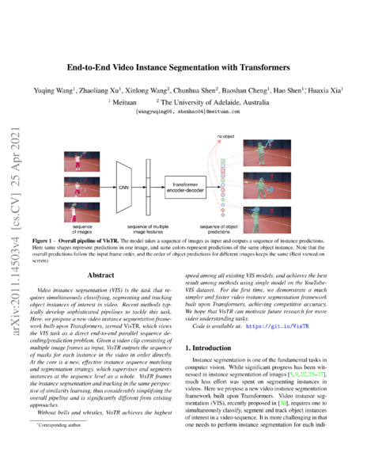End-to-end video instance segmentation with Transformers
\(\cdot\) Y. Wang, Z. Xu, X. Wang, C. Shen, B. Cheng, H. Shen, H. Xia.
\(\cdot\) Proc. IEEE Conference on Computer Vision and Pattern Recognition (CVPR’21), 2021.
\(\cdot\) arXivbibtexgoogle scholarsemantic scholarOral presentation.
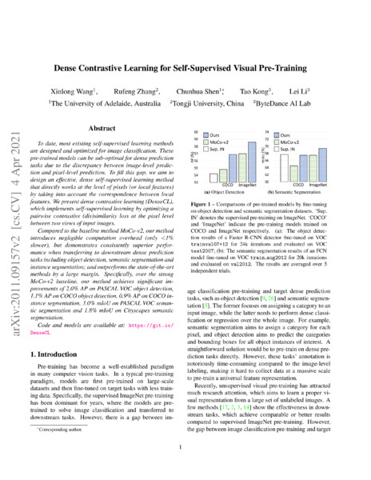Dense contrastive learning for self-supervised visual pre-training
\(\cdot\) X. Wang, R. Zhang, C. Shen, T. Kong, L. Li.
\(\cdot\) Proc. IEEE Conference on Computer Vision and Pattern Recognition (CVPR’21), 2021.
\(\cdot\) arXivbibtexgoogle scholarsemantic scholarproject webpageOral presentation.
 BoxInst: high-performance instance segmentation with box annotations
BoxInst: high-performance instance segmentation with box annotations
\(\cdot\) Z. Tian, C. Shen, X. Wang, H. Chen.
\(\cdot\) Proc. IEEE Conference on Computer Vision and Pattern Recognition (CVPR’21), 2021.
\(\cdot\) arXivbibtexgoogle scholarsemantic scholarproject webpageLearning spatial-semantic relationship for facial attribute recognition with limited labeled data
\(\cdot\) Y. Shu, Y. Yan, S. Chen, J. Xue, C. Shen, H. Wang.
\(\cdot\) Proc. IEEE Conference on Computer Vision and Pattern Recognition (CVPR’21), 2021.
\(\cdot\) bibtexgoogle scholarsemantic scholarFeature decomposition and reconstruction learning for effective facial expression recognition
\(\cdot\) D. Ruan, Y. Yan, S. Lai, Z. Chai, C. Shen, H. Wang.
\(\cdot\) Proc. IEEE Conference on Computer Vision and Pattern Recognition (CVPR’21), 2021.
\(\cdot\) bibtexgoogle scholarsemantic scholarFCPose: fully convolutional multi-person pose estimation with dynamic instance-aware convolutions
\(\cdot\) W. Mao, Z. Tian, X. Wang, C. Shen.
\(\cdot\) Proc. IEEE Conference on Computer Vision and Pattern Recognition (CVPR’21), 2021.
\(\cdot\) bibtexgoogle scholarsemantic scholarproject webpageGeneric perceptual loss for modelling structured output dependencies
\(\cdot\) Y. Liu, W. Yin, Y. Chen, H. Chen, C. Shen.
\(\cdot\) Proc. IEEE Conference on Computer Vision and Pattern Recognition (CVPR’21), 2021.
\(\cdot\) bibtexgoogle scholarsemantic scholarHCRF-Flow: scene flow from point clouds with continuous high-order CRFs and position-aware flow embedding
\(\cdot\) R. Li, G. Lin, T. He, F. Liu, C. Shen.
\(\cdot\) Proc. IEEE Conference on Computer Vision and Pattern Recognition (CVPR’21), 2021.
\(\cdot\) bibtexgoogle scholarsemantic scholarDyCo3D: robust instance segmentation of 3d point clouds through dynamic convolution
\(\cdot\) T. He, C. Shen, A. van den Hengel.
\(\cdot\) Proc. IEEE Conference on Computer Vision and Pattern Recognition (CVPR’21), 2021.
\(\cdot\) arXivbibtexgoogle scholarsemantic scholarproject webpage Graph attention tracking
Graph attention tracking
\(\cdot\) D. Guo, Y. Shao, Y. Cui, Z. Wang, L. Zhang, C. Shen.
\(\cdot\) Proc. IEEE Conference on Computer Vision and Pattern Recognition (CVPR’21), 2021.
\(\cdot\) arXivbibtexgoogle scholarsemantic scholarproject webpage Learning affinity-aware upsampling for deep image matting
Learning affinity-aware upsampling for deep image matting
\(\cdot\) Y. Dai, H. Lu, C. Shen.
\(\cdot\) Proc. IEEE Conference on Computer Vision and Pattern Recognition (CVPR’21), 2021.
\(\cdot\) arXivbibtexgoogle scholarsemantic scholar AQD: towards accurate quantized object detection
AQD: towards accurate quantized object detection
\(\cdot\) P. Chen, J. Liu, B. Zhuang, M. Tan, C. Shen.
\(\cdot\) Proc. IEEE Conference on Computer Vision and Pattern Recognition (CVPR’21), 2021.
\(\cdot\) arXivbibtexgoogle scholarsemantic scholarOral presentation.
Meta navigator: search for a good adaptation policy for few-shot learning
\(\cdot\) C. Zhang, H. Ding, G. Lin, R. Li, C. Wang, C. Shen.
\(\cdot\) Proc. IEEE International Conference on Computer Vision (ICCV’21), 2021.
\(\cdot\) arXivbibtexgoogle scholarsemantic scholarA simple baseline for semi-supervised semantic segmentation with strong data augmentation
\(\cdot\) J. Yuan, Y. Liu, C. Shen, Z. Wang, H. Li.
\(\cdot\) Proc. IEEE International Conference on Computer Vision (ICCV’21), 2021.
\(\cdot\) arXivbibtexgoogle scholarsemantic scholarBV-Person: a large-scale dataset for bird-view person re-identification
\(\cdot\) C. Yan, G. Pang, L. Wang, J. Jiao, X. Feng, C. Shen, J. Li.
\(\cdot\) Proc. IEEE International Conference on Computer Vision (ICCV’21), 2021.
\(\cdot\) bibtexgoogle scholarsemantic scholarOccluded person re-identification with single-scale global representations
\(\cdot\) C. Yan, G. Pang, J. Jiao, X. Bai, X. Feng, C. Shen.
\(\cdot\) Proc. IEEE International Conference on Computer Vision (ICCV’21), 2021.
\(\cdot\) bibtexgoogle scholarsemantic scholarOral presentation.
Channel-wise knowledge distillation for dense prediction
\(\cdot\) C. Shu, Y. Liu, J. Gao, L. Xu, C. Shen.
\(\cdot\) Proc. IEEE International Conference on Computer Vision (ICCV’21), 2021.
\(\cdot\) arXivbibtexgoogle scholarsemantic scholar FATNN: fast and accurate ternary neural networks
FATNN: fast and accurate ternary neural networks
\(\cdot\) P. Chen, B. Zhuang, C. Shen.
\(\cdot\) Proc. IEEE International Conference on Computer Vision (ICCV’21), 2021.
\(\cdot\) arXivbibtexgoogle scholarsemantic scholarFastFlowNet: a lightweight network for fast optical flow estimation
\(\cdot\) L. Kong, C. Shen, J. Yang.
\(\cdot\) Proc. International Conference on Robotics and Automation (ICRA’21), 2021.
\(\cdot\) arXivbibtexgoogle scholarsemantic scholarproject webpage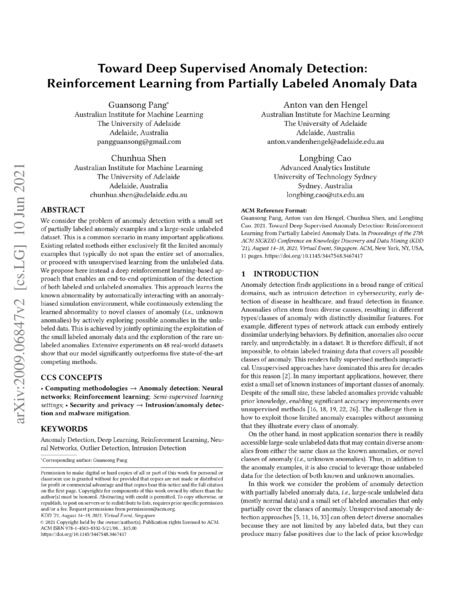Toward deep supervised anomaly detection: reinforcement learning from partially labeled anomaly data
\(\cdot\) G. Pang, A. van den Hengel, C. Shen, L. Cao.
\(\cdot\) Proc. ACM SIGKDD Conference on Knowledge Discovery and Data Mining (KDD’21), 2021.
\(\cdot\) arXivbibtexgoogle scholarsemantic scholarCoTr: efficient 3D medical image segmentation by bridging CNN and transformer
\(\cdot\) Y. Xie, J. Zhang, C. Shen, Y. Xia.
\(\cdot\) Proc. International Conference on Medical Image Computing and Computer Assisted Intervention (MICCAI’21), 2021.
\(\cdot\) bibtexgoogle scholarsemantic scholarproject webpageDynamic neural representational decoders for high-resolution semantic segmentation
\(\cdot\) B. Zhang, Y. Liu, Z. Tian, C. Shen.
\(\cdot\) Proc. Advances in Neural Information Processing Systems (NeurIPS’21), 2021.
\(\cdot\) arXivbibtexgoogle scholarsemantic scholarTwins: revisiting the design of spatial attention in vision transformers
\(\cdot\) X. Chu, Z. Tian, Y. Wang, B. Zhang, H. Ren, X. Wei, H. Xia, C. Shen.
\(\cdot\) Proc. Advances in Neural Information Processing Systems (NeurIPS’21), 2021.
\(\cdot\) arXivbibtexgoogle scholarsemantic scholarproject webpage
2020
Journal
 Deep learning for anomaly detection: a review
Deep learning for anomaly detection: a review
\(\cdot\) G. Pang, C. Shen, L. Cao, A. van den Hengel.
\(\cdot\) ACM Computing Surveys (ACMSurvey), 2020.
\(\cdot\) arXivbibtexgoogle scholarsemantic scholarTowards light-weight portrait matting via parameter sharing
\(\cdot\) Y. Dai, H. Lu, C. Shen.
\(\cdot\) Computer Graphics Forum (CGF), 2020.
\(\cdot\) bibtexgoogle scholarsemantic scholar Separating content from style using adversarial learning for recognizing text in the wild
Separating content from style using adversarial learning for recognizing text in the wild
\(\cdot\) C. Luo, Q. Lin, Y. Liu, L. Jin, C. Shen.
\(\cdot\) International Journal of Computer Vision (IJCV), 2020.
\(\cdot\) arXivbibtexgoogle scholarsemantic scholarTasselNetv2: in-field counting of wheat spikes with context-augmented local regression networks
\(\cdot\) H. Xiong, Z. Cao, H. Lu, S. Madec, L. Liu, C. Shen.
\(\cdot\) Plant Methods (PLME), 2020.
\(\cdot\) bibtexgoogle scholarsemantic scholar MobileFAN: transferring deep hidden representation for face alignment
MobileFAN: transferring deep hidden representation for face alignment
\(\cdot\) Y. Zhao, Y. Liu, C. Shen, Y. Gao, S. Xiong.
\(\cdot\) Pattern Recognition (PR), 2020.
\(\cdot\) arXivbibtexgoogle scholarsemantic scholar Part-guided attention learning for vehicle instance retrieval
Part-guided attention learning for vehicle instance retrieval
\(\cdot\) X. Zhang, R. Zhang, J. Cao, D. Gong, M. You, C. Shen.
\(\cdot\) IEEE Transactions on Intelligent Transportation Systems (T-ITS), 2020.
\(\cdot\) arXivbibtexgoogle scholarsemantic scholarA robust attentional framework for license plate recognition in the wild
\(\cdot\) L. Zhang, P. Wang, H. Li, Z. Li, C. Shen, Y. Zhang.
\(\cdot\) IEEE Transactions on Intelligent Transportation Systems (T-ITS), 2020.
\(\cdot\) bibtexgoogle scholarsemantic scholarReal-time high-performance semantic image segmentation of urban street scenes
\(\cdot\) G. Dong, Y. Yan, C. Shen, H. Wang.
\(\cdot\) IEEE Transactions on Intelligent Transportation Systems (T-ITS), 2020.
\(\cdot\) bibtexgoogle scholarsemantic scholarTowards effective deep embedding for zero-shot learning
\(\cdot\) L. Zhang, P. Wang, L. Liu, C. Shen, W. Wei, Y. Zhang, A. van den Hengel.
\(\cdot\) IEEE Transactions on Circuits and Systems for Video Technology (TCSVT), 2020.
\(\cdot\) bibtexgoogle scholarsemantic scholarNSSNet: scale-aware object counting with non-scale suppression
\(\cdot\) L. Liu, Z. Cao, H. Lu, H. Xiong, C. Shen.
\(\cdot\) IEEE Transactions on Circuits and Systems for Video Technology (TCSVT), 2020.
\(\cdot\) bibtexgoogle scholarsemantic scholar Viral pneumonia screening on chest x-ray images using confidence-aware anomaly detection
Viral pneumonia screening on chest x-ray images using confidence-aware anomaly detection
\(\cdot\) J. Zhang, Y. Xie, Z. Liao, G. Pang, J. Verjans, W. Li, Z. Sun, J. He, Y. Li, C. Shen, Y. Xia.
\(\cdot\) IEEE Transactions on Medical Imaging (TMI), 2020.
\(\cdot\) arXivbibtexgoogle scholarsemantic scholar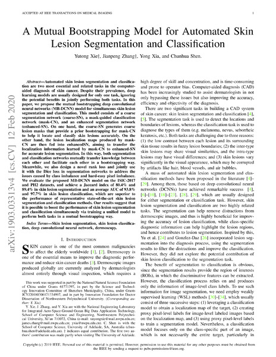A mutual bootstrapping model for automated skin lesion segmentation and classification
\(\cdot\) Y. Xie, J. Zhang, Y. Xia, C. Shen.
\(\cdot\) IEEE Transactions on Medical Imaging (TMI), 2020.
\(\cdot\) arXivbibtexgoogle scholarsemantic scholarSESV: accurate medical image segmentation by predicting and correcting errors
\(\cdot\) Y. Xie, J. Zhang, H. Lu, C. Shen, Y. Xia.
\(\cdot\) IEEE Transactions on Medical Imaging (TMI), 2020.
\(\cdot\) bibtexgoogle scholarsemantic scholarOPMP: an omni-directional pyramid mask proposal network for arbitrary-shape scene text detection
\(\cdot\) S. Zhang, Y. Liu, L. Jin, Z. Wei, C. Shen.
\(\cdot\) IEEE Transactions on Multimedia (TMM), 2020.
\(\cdot\) bibtexgoogle scholarsemantic scholarJoint deep learning of facial expression synthesis and recognition
\(\cdot\) Y. Yan, Y. Huang, S. Chen, C. Shen, H. Wang.
\(\cdot\) IEEE Transactions on Multimedia (TMM), 2020.
\(\cdot\) bibtexgoogle scholarsemantic scholarAccurate tensor completion via adaptive low-rank representation
\(\cdot\) L. Zhang, W. Wei, Q. Shi, C. Shen, A. van den Hengel, Y. Zhang.
\(\cdot\) IEEE Transactions on Neural Networks and Learning Systems (TNN), 2020.
\(\cdot\) bibtexgoogle scholarsemantic scholarDeep clustering with sample-assignment invariance prior
\(\cdot\) X. Peng, H. Zhu, J. Feng, C. Shen, H. Zhang, J. Zhou.
\(\cdot\) IEEE Transactions on Neural Networks and Learning Systems (TNN), 2020.
\(\cdot\) bibtexgoogle scholarsemantic scholar Learning deep gradient descent optimization for image deconvolution
Learning deep gradient descent optimization for image deconvolution
\(\cdot\) D. Gong, Z. Zhang, Q. Shi, A. van den Hengel, C. Shen, Y. Zhang.
\(\cdot\) IEEE Transactions on Neural Networks and Learning Systems (TNN), 2020.
\(\cdot\) arXivbibtexgoogle scholarsemantic scholar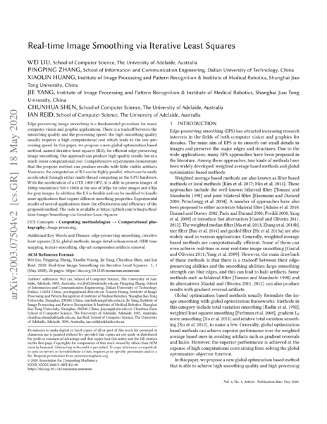Real-time image smoothing via iterative least squares
\(\cdot\) W. Liu, P. Zhang, X. Huang, J. Yang, C. Shen, I. Reid.
\(\cdot\) ACM Transactions on Graphics (TOG), 2020.
\(\cdot\) arXivlinkbibtexgoogle scholarsemantic scholarproject webpagePlenty is plague: fine-grained learning for visual question answering
\(\cdot\) Y. Zhou, R. Ji, J. Su, X. Sun, D. Meng, Y. Gao, C. Shen.
\(\cdot\) IEEE Transactions on Pattern Analysis and Machine Intelligence (TPAMI), 2020.
\(\cdot\) linkbibtexgoogle scholarsemantic scholar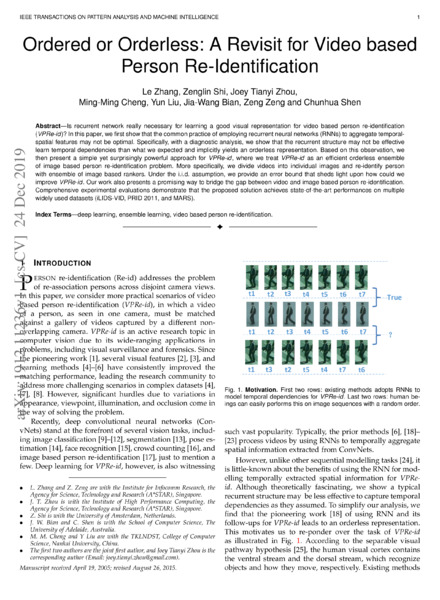Ordered or orderless: a revisit for video based person re-identification
\(\cdot\) L. Zhang, Z. Shi, J. Zhou, M. Cheng, Y. Liu, J. Bian, Z. Zeng, C. Shen.
\(\cdot\) IEEE Transactions on Pattern Analysis and Machine Intelligence (TPAMI), 2020.
\(\cdot\) arXivlinkbibtexgoogle scholarsemantic scholarproject webpage Index networks
Index networks
\(\cdot\) H. Lu, Y. Dai, C. Shen, S. Xu.
\(\cdot\) IEEE Transactions on Pattern Analysis and Machine Intelligence (TPAMI), 2020.
\(\cdot\) arXivlinkbibtexgoogle scholarsemantic scholarproject webpage Structured knowledge distillation for dense prediction
Structured knowledge distillation for dense prediction
\(\cdot\) Y. Liu, C. Shun, J. Wang, C. Shen.
\(\cdot\) IEEE Transactions on Pattern Analysis and Machine Intelligence (TPAMI), 2020.
\(\cdot\) arXivlinkbibtexgoogle scholarsemantic scholarproject webpage Adversarial learning of structure-aware fully convolutional networks for landmark localization
Adversarial learning of structure-aware fully convolutional networks for landmark localization
\(\cdot\) Y. Chen, C. Shen, H. Chen, X. Wei, L. Liu, J. Yang.
\(\cdot\) IEEE Transactions on Pattern Analysis and Machine Intelligence (TPAMI), 2020.
\(\cdot\) arXivlinkbibtexgoogle scholarsemantic scholar Improving generative adversarial networks with local coordinate coding
Improving generative adversarial networks with local coordinate coding
\(\cdot\) J. Cao, Y. Guo, Q. Wu, C. Shen, J. Huang, M. Tan.
\(\cdot\) IEEE Transactions on Pattern Analysis and Machine Intelligence (TPAMI), 2020.
\(\cdot\) arXivbibtexgoogle scholarsemantic scholarproject webpage
Conference
 Task-aware monocular depth estimation for 3D object detection
Task-aware monocular depth estimation for 3D object detection
\(\cdot\) X. Wang, W. Yin, T. Kong, Y. Jiang, L. Li, C. Shen.
\(\cdot\) Proc. AAAI Conference on Artificial Intelligence (AAAI’20), 2020.
\(\cdot\) arXivbibtexgoogle scholarsemantic scholar V-PROM: a benchmark for visual reasoning using visual progressive matrices
V-PROM: a benchmark for visual reasoning using visual progressive matrices
\(\cdot\) D. Teney, P. Wang, J. Cao, L. Liu, C. Shen, A. van den Hengel.
\(\cdot\) Proc. AAAI Conference on Artificial Intelligence (AAAI’20), 2020.
\(\cdot\) arXivbibtexgoogle scholarsemantic scholar Training quantized neural networks with a full-precision auxiliary module
Training quantized neural networks with a full-precision auxiliary module
\(\cdot\) B. Zhuang, L. Liu, M. Tan, C. Shen, I. Reid.
\(\cdot\) Proc. IEEE Conference on Computer Vision and Pattern Recognition (CVPR’20), 2020.
\(\cdot\) arXivbibtexgoogle scholarsemantic scholarOral presentation.
 Mask encoding for single shot instance segmentation
Mask encoding for single shot instance segmentation
\(\cdot\) R. Zhang, Z. Tian, C. Shen, M. You, Y. Yan.
\(\cdot\) Proc. IEEE Conference on Computer Vision and Pattern Recognition (CVPR’20), 2020.
\(\cdot\) arXivbibtexgoogle scholarsemantic scholarproject webpage Memory-efficient hierarchical neural architecture search for image denoising
Memory-efficient hierarchical neural architecture search for image denoising
\(\cdot\) H. Zhang, Y. Li, H. Chen, C. Shen.
\(\cdot\) Proc. IEEE Conference on Computer Vision and Pattern Recognition (CVPR’20), 2020.
\(\cdot\) arXivbibtexgoogle scholarsemantic scholar DeepEMD: few-shot image classification with differentiable earth mover's distance and structured classifiers
DeepEMD: few-shot image classification with differentiable earth mover's distance and structured classifiers
\(\cdot\) C. Zhang, Y. Cai, G. Lin, C. Shen.
\(\cdot\) Proc. IEEE Conference on Computer Vision and Pattern Recognition (CVPR’20), 2020.
\(\cdot\) arXivbibtexgoogle scholarsemantic scholarproject webpageOral presentation.
 Context prior for scene segmentation
Context prior for scene segmentation
\(\cdot\) C. Yu, J. Wang, C. Gao, G. Yu, C. Shen, N. Sang.
\(\cdot\) Proc. IEEE Conference on Computer Vision and Pattern Recognition (CVPR’20), 2020.
\(\cdot\) arXivbibtexgoogle scholarsemantic scholar PolarMask: single shot instance segmentation with polar representation
PolarMask: single shot instance segmentation with polar representation
\(\cdot\) E. Xie, P. Sun, X. Song, W. Wang, X. Liu, D. Liang, C. Shen, P. Luo.
\(\cdot\) Proc. IEEE Conference on Computer Vision and Pattern Recognition (CVPR’20), 2020.
\(\cdot\) arXivbibtexgoogle scholarsemantic scholarproject webpageOral presentation.
 On the general value of evidence, and bilingual scene-text visual question answering
On the general value of evidence, and bilingual scene-text visual question answering
\(\cdot\) X. Wang, Y. Liu, C. Shen, C. Ng, C. Luo, L. Jin, C. Chan, A. van den Hengel, L. Wang.
\(\cdot\) Proc. IEEE Conference on Computer Vision and Pattern Recognition (CVPR’20), 2020.
\(\cdot\) arXivbibtexgoogle scholarsemantic scholar NAS-FCOS: fast neural architecture search for object detection
NAS-FCOS: fast neural architecture search for object detection
\(\cdot\) N. Wang, Y. Gao, H. Chen, P. Wang, Z. Tian, C. Shen, Y. Zhang.
\(\cdot\) Proc. IEEE Conference on Computer Vision and Pattern Recognition (CVPR’20), 2020.
\(\cdot\) arXivbibtexgoogle scholarsemantic scholarproject webpage REVERIE: remote embodied visual referring expression in real indoor environments
REVERIE: remote embodied visual referring expression in real indoor environments
\(\cdot\) Y. Qi, Q. Wu, P. Anderson, X. Wang, W. Wang, C. Shen, A. van den Hengel.
\(\cdot\) Proc. IEEE Conference on Computer Vision and Pattern Recognition (CVPR’20), 2020.
\(\cdot\) arXivbibtexgoogle scholarsemantic scholarOral presentation.
 Self-trained deep ordinal regression for end-to-end video anomaly detection
Self-trained deep ordinal regression for end-to-end video anomaly detection
\(\cdot\) G. Pang, C. Yan, C. Shen, A. van den Hengel, X. Bai.
\(\cdot\) Proc. IEEE Conference on Computer Vision and Pattern Recognition (CVPR’20), 2020.
\(\cdot\) arXivbibtexgoogle scholarsemantic scholar ABCNet: arbitrarily-shaped scene text spotting with adaptive Bezier-curve network in real time
ABCNet: arbitrarily-shaped scene text spotting with adaptive Bezier-curve network in real time
\(\cdot\) Y. Liu, H. Chen, C. Shen, T. He, L. Jin, L. Wang.
\(\cdot\) Proc. IEEE Conference on Computer Vision and Pattern Recognition (CVPR’20), 2020.
\(\cdot\) arXivbibtexgoogle scholarsemantic scholarproject webpageOral presentation.
 BlendMask: top-down meets bottom-up for instance segmentation
BlendMask: top-down meets bottom-up for instance segmentation
\(\cdot\) H. Chen, K. Sun, Z. Tian, C. Shen, Y. Huang, Y. Yan.
\(\cdot\) Proc. IEEE Conference on Computer Vision and Pattern Recognition (CVPR’20), 2020.
\(\cdot\) arXivbibtexgoogle scholarsemantic scholarproject webpageOral presentation.
 Representative graph neural network
Representative graph neural network
\(\cdot\) C. Yu, Y. Liu, C. Gao, C. Shen, N. Sang.
\(\cdot\) Proc. European Conference on Computer Vision (ECCV’20), 2020.
\(\cdot\) arXivbibtexgoogle scholarsemantic scholarproject webpage Segmenting transparent objects in the wild
Segmenting transparent objects in the wild
\(\cdot\) E. Xie, W. Wang, W. Wang, M. Ding, C. Shen, P. Luo.
\(\cdot\) Proc. European Conference on Computer Vision (ECCV’20), 2020.
\(\cdot\) arXivbibtexgoogle scholarsemantic scholar SOLO: segmenting objects by locations
SOLO: segmenting objects by locations
\(\cdot\) X. Wang, T. Kong, C. Shen, Y. Jiang, L. Li.
\(\cdot\) Proc. European Conference on Computer Vision (ECCV’20), 2020.
\(\cdot\) arXivbibtexgoogle scholarsemantic scholarproject webpage Scene text image super-resolution in the wild
Scene text image super-resolution in the wild
\(\cdot\) W. Wang, E. Xie, X. Liu, W. Wang, D. Liang, C. Shen, X. Bai.
\(\cdot\) Proc. European Conference on Computer Vision (ECCV’20), 2020.
\(\cdot\) arXivbibtexgoogle scholarsemantic scholarAE TextSpotter: learning visual and linguistic representation for ambiguous text spotting
\(\cdot\) W. Wang, X. Liu, X. Ji, E. Xie, D. Liang, Z. Yang, T. Lu, C. Shen, P. Luo.
\(\cdot\) Proc. European Conference on Computer Vision (ECCV’20), 2020.
\(\cdot\) bibtexgoogle scholarsemantic scholarSoft expert reward learning for vision-and-language navigation
\(\cdot\) H. Wang, Q. Wu, C. Shen.
\(\cdot\) Proc. European Conference on Computer Vision (ECCV’20), 2020.
\(\cdot\) bibtexgoogle scholarsemantic scholar Conditional convolutions for instance segmentation
Conditional convolutions for instance segmentation
\(\cdot\) Z. Tian, C. Shen, H. Chen.
\(\cdot\) Proc. European Conference on Computer Vision (ECCV’20), 2020.
\(\cdot\) arXivbibtexgoogle scholarsemantic scholarproject webpageOral presentation.
 Efficient semantic video segmentation with per-frame inference
Efficient semantic video segmentation with per-frame inference
\(\cdot\) Y. Liu, C. Shen, C. Yu, J. Wang.
\(\cdot\) Proc. European Conference on Computer Vision (ECCV’20), 2020.
\(\cdot\) arXivbibtexgoogle scholarsemantic scholarproject webpage Weighing counts: sequential crowd counting by reinforcement learning
Weighing counts: sequential crowd counting by reinforcement learning
\(\cdot\) L. Liu, H. Lu, H. Zou, H. Xiong, Z. Cao, C. Shen.
\(\cdot\) Proc. European Conference on Computer Vision (ECCV’20), 2020.
\(\cdot\) arXivbibtexgoogle scholarsemantic scholarproject webpageInstance-aware embedding for point cloud instance segmentation
\(\cdot\) T. He, Y. Liu, C. Shen, X. Wang, C. Sun.
\(\cdot\) Proc. European Conference on Computer Vision (ECCV’20), 2020.
\(\cdot\) bibtexgoogle scholarsemantic scholarLearning and memorizing representative prototypes for 3D point cloud semantic and instance segmentation
\(\cdot\) T. He, D. Gong, Z. Tian, C. Shen.
\(\cdot\) Proc. European Conference on Computer Vision (ECCV’20), 2020.
\(\cdot\) bibtexgoogle scholarsemantic scholar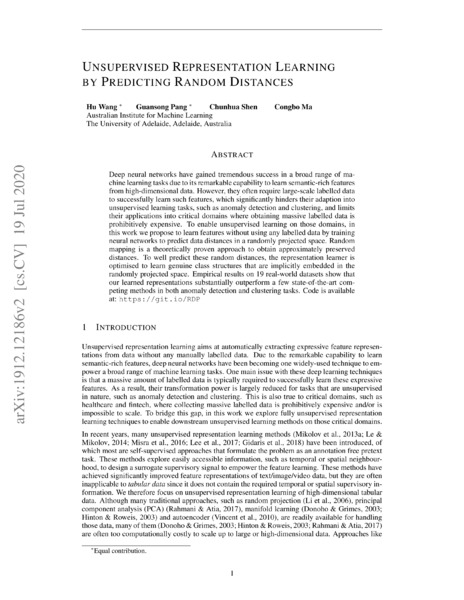Unsupervised representation learning by predicting random distances
\(\cdot\) H. Wang, G. Pang, C. Shen, C. Ma.
\(\cdot\) Proc. International Joint Conferences on Artificial Intelligence (IJCAI’20), 2020.
\(\cdot\) arXivbibtexgoogle scholarsemantic scholarPairwise relation learning for semi-supervised gland segmentation
\(\cdot\) Y. Xie, J. Zhang, Z. Liao, C. Shen, J. Verjans, Y. Xia.
\(\cdot\) Proc. International Conference on Medical Image Computing and Computer Assisted Intervention (MICCAI’20), 2020.
\(\cdot\) bibtexgoogle scholarsemantic scholar SOLOv2: dynamic and fast instance segmentation
SOLOv2: dynamic and fast instance segmentation
\(\cdot\) X. Wang, R. Zhang, T. Kong, L. Li, C. Shen.
\(\cdot\) Proc. Advances in Neural Information Processing Systems (NeurIPS’20), 2020.
\(\cdot\) arXivbibtexgoogle scholarsemantic scholarproject webpage
2019
Journal
 Adaptive importance learning for improving lightweight image super-resolution network
Adaptive importance learning for improving lightweight image super-resolution network
\(\cdot\) L. Zhang, P. Wang, C. Shen, L. Liu, W. Wei, Y. Zhang, A. van den Hengel.
\(\cdot\) International Journal of Computer Vision (IJCV), 2019.
\(\cdot\) arXivbibtexgoogle scholarsemantic scholarproject webpageAccurate imagery recovery using a multi-observation patch model
\(\cdot\) L. Zhang, W. Wei, Q. Shen, C. Shen, A. van den Hengel.
\(\cdot\) Information Sciences (IS), 2019.
\(\cdot\) bibtexgoogle scholarsemantic scholarHeritage image annotation via collective knowledge
\(\cdot\) J. Zhang, Q. Wu, J. Zhang, C. Shen, J. Lu, Q. Wu.
\(\cdot\) Pattern Recognition (PR), 2019.
\(\cdot\) bibtexgoogle scholarsemantic scholar Wider or deeper: revisiting the ResNet model for visual recognition
Wider or deeper: revisiting the ResNet model for visual recognition
\(\cdot\) Z. Wu, C. Shen, A. van den Hengel.
\(\cdot\) Pattern Recognition (PR), 2019.
\(\cdot\) arXivbibtexgoogle scholarsemantic scholarOrder-aware convolutional pooling for video based action recognition
\(\cdot\) P. Wang, L. Liu, C. Shen, H. Shen.
\(\cdot\) Pattern Recognition (PR), 2019.
\(\cdot\) bibtexgoogle scholarsemantic scholarStructural analysis of attributes for vehicle re-identification and retrieval
\(\cdot\) Y. Zhao, C. Shen, H. Wang, S. Chen.
\(\cdot\) IEEE Transactions on Intelligent Transportation Systems (T-ITS), 2019.
\(\cdot\) bibtexgoogle scholarsemantic scholarHuman detection aided by deeply learned semantic masks
\(\cdot\) X. Wang, C. Shen, H. Li, S. Xu.
\(\cdot\) IEEE Transactions on Circuits and Systems for Video Technology (TCSVT), 2019.
\(\cdot\) bibtexgoogle scholarsemantic scholarEmbedding bilateral filter in least squares for efficient edge-preserving image smoothing
\(\cdot\) W. Liu, P. Zhang, X. Chen, C. Shen, X. Huang, J. Yang.
\(\cdot\) IEEE Transactions on Circuits and Systems for Video Technology (TCSVT), 2019.
\(\cdot\) bibtexgoogle scholarsemantic scholarCounting objects by blockwise classification
\(\cdot\) L. Liu, H. Lu, H. Xiong, K. Xian, Z. Cao, C. Shen.
\(\cdot\) IEEE Transactions on Circuits and Systems for Video Technology (TCSVT), 2019.
\(\cdot\) bibtexgoogle scholarsemantic scholarHyperspectral classification based on lightweight 3D-CNN with transfer learning
\(\cdot\) H. Zhang, Y. Li, Y. Jiang, P. Wang, Q. Shen, C. Shen.
\(\cdot\) IEEE Transactions on Geoscience and Remote Sensing (TGRS), 2019.
\(\cdot\) bibtexgoogle scholarsemantic scholarSalient object detection with lossless feature reflection and weighted structural loss
\(\cdot\) P. Zhang, W. Liu, H. Lu, C. Shen.
\(\cdot\) IEEE Transactions on Image Processing (TIP), 2019.
\(\cdot\) bibtexgoogle scholarsemantic scholar Piecewise classifier mappings: learning fine-grained learners for novel categories with few examples
Piecewise classifier mappings: learning fine-grained learners for novel categories with few examples
\(\cdot\) X. Wei, P. Wang, L. Liu, C. Shen, J. Wu.
\(\cdot\) IEEE Transactions on Image Processing (TIP), 2019.
\(\cdot\) arXivbibtexgoogle scholarsemantic scholarMultiple instance learning with emerging novel class
\(\cdot\) X. Wei, H. Ye, X. Mu, J. Wu, C. Shen, Z. Zhou.
\(\cdot\) IEEE Transactions on Knowledge and Data Engineering (TKDE), 2019.
\(\cdot\) bibtexgoogle scholarsemantic scholarAttention residual learning for skin lesion classification
\(\cdot\) J. Zhang, Y. Xie, Y. Xia, C. Shen.
\(\cdot\) IEEE Transactions on Medical Imaging (TMI), 2019.
\(\cdot\) bibtexgoogle scholarsemantic scholar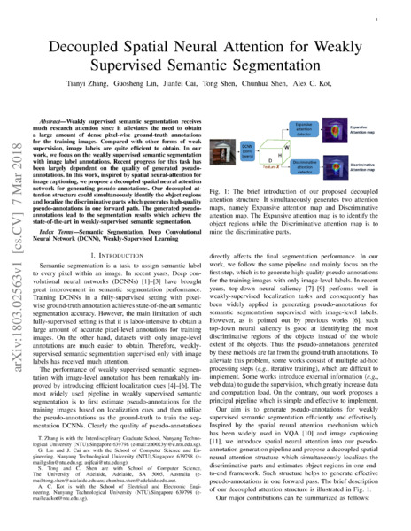Decoupled spatial neural attention for weakly supervised semantic segmentation
\(\cdot\) T. Zhang, G. Lin, J. Cai, T. Shen, C. Shen, A. Kot.
\(\cdot\) IEEE Transactions on Multimedia (TMM), 2019.
\(\cdot\) arXivbibtexgoogle scholarsemantic scholarRefineNet: multi-path refinement networks for dense prediction
\(\cdot\) G. Lin, F. Liu, A. Milan, C. Shen, I. Reid.
\(\cdot\) IEEE Transactions on Pattern Analysis and Machine Intelligence (TPAMI), 2019.
\(\cdot\) linkbibtexgoogle scholarsemantic scholarproject webpagePytorch code is here.
Conference
 Show, attend and read: a simple and strong baseline for irregular text recognition
Show, attend and read: a simple and strong baseline for irregular text recognition
\(\cdot\) H. Li, P. Wang, C. Shen, G. Zhang.
\(\cdot\) Proc. AAAI Conference on Artificial Intelligence (AAAI’19), 2019.
\(\cdot\) arXivbibtexgoogle scholarsemantic scholarDeep hashing by discriminating hard examples
\(\cdot\) C. Yan, G. Pang, X. Bai, C. Shen, J. Zhou, E. Hancock.
\(\cdot\) Proc. ACM International Conference on Multimedia (ACMMM’19), 2019.
\(\cdot\) bibtexgoogle scholarsemantic scholar Structured binary neural networks for accurate image classification and semantic segmentation
Structured binary neural networks for accurate image classification and semantic segmentation
\(\cdot\) B. Zhuang, C. Shen, M. Tan, L. Liu, I. Reid.
\(\cdot\) Proc. IEEE Conference on Computer Vision and Pattern Recognition (CVPR’19), 2019.
\(\cdot\) arXivbibtexgoogle scholarsemantic scholarproject webpage Mind your neighbours: image annotation with metadata neighbourhood graph co-attention networks
Mind your neighbours: image annotation with metadata neighbourhood graph co-attention networks
\(\cdot\) J. Zhang, Q. Wu, J. Zhang, C. Shen, J. Lu.
\(\cdot\) Proc. IEEE Conference on Computer Vision and Pattern Recognition (CVPR’19), 2019.
\(\cdot\) linkbibtexgoogle scholarsemantic scholar CANet: class-agnostic segmentation networks with iterative refinement and attentive few-shot learning
CANet: class-agnostic segmentation networks with iterative refinement and attentive few-shot learning
\(\cdot\) C. Zhang, G. Lin, F. Liu, R. Yao, C. Shen.
\(\cdot\) Proc. IEEE Conference on Computer Vision and Pattern Recognition (CVPR’19), 2019.
\(\cdot\) arXivbibtexgoogle scholarsemantic scholar Attention-guided network for ghost-free high dynamic range imaging
Attention-guided network for ghost-free high dynamic range imaging
\(\cdot\) Q. Yan, D. Gong, Q. Shi, A. van den Hengel, C. Shen, I. Reid, Y. Zhang.
\(\cdot\) Proc. IEEE Conference on Computer Vision and Pattern Recognition (CVPR’19), 2019.
\(\cdot\) arXivbibtexgoogle scholarsemantic scholar Associatively segmenting instances and semantics in point clouds
Associatively segmenting instances and semantics in point clouds
\(\cdot\) X. Wang, S. Liu, X. Shen, C. Shen, J. Jia.
\(\cdot\) Proc. IEEE Conference on Computer Vision and Pattern Recognition (CVPR’19), 2019.
\(\cdot\) arXivbibtexgoogle scholarsemantic scholar Neighbourhood watch: referring expression comprehension via language-guided graph attention networks
Neighbourhood watch: referring expression comprehension via language-guided graph attention networks
\(\cdot\) P. Wang, Q. Wu, J. Cao, C. Shen, L. Gao, A. vanden Hengel.
\(\cdot\) Proc. IEEE Conference on Computer Vision and Pattern Recognition (CVPR’19), 2019.
\(\cdot\) arXivbibtexgoogle scholarsemantic scholar Decoders matter for semantic segmentation: data-dependent decoding enables flexible feature aggregation
Decoders matter for semantic segmentation: data-dependent decoding enables flexible feature aggregation
\(\cdot\) Z. Tian, T. He, C. Shen, Y. Yan.
\(\cdot\) Proc. IEEE Conference on Computer Vision and Pattern Recognition (CVPR’19), 2019.
\(\cdot\) arXivbibtexgoogle scholarsemantic scholar Fast neural architecture search of compact semantic segmentation models via auxiliary cells
Fast neural architecture search of compact semantic segmentation models via auxiliary cells
\(\cdot\) V. Nekrasov, H. Chen, C. Shen, I. Reid.
\(\cdot\) Proc. IEEE Conference on Computer Vision and Pattern Recognition (CVPR’19), 2019.
\(\cdot\) arXivbibtexgoogle scholarsemantic scholar Visual question answering as reading comprehension
Visual question answering as reading comprehension
\(\cdot\) H. Li, P. Wang, C. Shen, A. van den Hengel.
\(\cdot\) Proc. IEEE Conference on Computer Vision and Pattern Recognition (CVPR’19), 2019.
\(\cdot\) arXivbibtexgoogle scholarsemantic scholar Knowledge adaptation for efficient semantic segmentation
Knowledge adaptation for efficient semantic segmentation
\(\cdot\) T. He, C. Shen, Z. Tian, D. Gong, C. Sun, Y. Yan.
\(\cdot\) Proc. IEEE Conference on Computer Vision and Pattern Recognition (CVPR’19), 2019.
\(\cdot\) arXivbibtexgoogle scholarsemantic scholar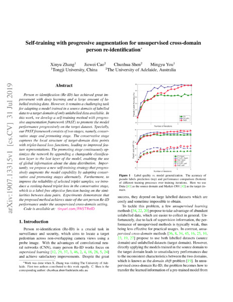Self-training with progressive augmentation for unsupervised cross-domain person re-identification
\(\cdot\) X. Zhang, J. Cao, C. Shen, M. You.
\(\cdot\) Proc. IEEE International Conference on Computer Vision (ICCV’19), 2019.
\(\cdot\) arXivbibtexgoogle scholarsemantic scholar Exploiting temporal consistency for real-time video depth estimation
Exploiting temporal consistency for real-time video depth estimation
\(\cdot\) H. Zhang, C. Shen, Y. Li, Y. Cao, Y. Liu, Y. Yan.
\(\cdot\) Proc. IEEE International Conference on Computer Vision (ICCV’19), 2019.
\(\cdot\) arXivbibtexgoogle scholarsemantic scholar Enforcing geometric constraints of virtual normal for depth prediction
Enforcing geometric constraints of virtual normal for depth prediction
\(\cdot\) W. Yin, Y. Liu, C. Shen, Y. Yan.
\(\cdot\) Proc. IEEE International Conference on Computer Vision (ICCV’19), 2019.
\(\cdot\) arXivbibtexgoogle scholarsemantic scholarproject webpageFrom open set to closed set: counting objects by spatial divide-and-conquer
\(\cdot\) H. Xiong, H. Lu, C. Liu, L. Liu, Z. Cao, C. Shen.
\(\cdot\) Proc. IEEE International Conference on Computer Vision (ICCV’19), 2019.
\(\cdot\) arXivbibtexgoogle scholarsemantic scholarproject webpageEfficient and accurate arbitrary-shaped text detection with pixel aggregation network
\(\cdot\) W. Wang, E. Xie, X. Song, Y. Zang, W. Wang, T. Lu, G. Yu, C. Shen.
\(\cdot\) Proc. IEEE International Conference on Computer Vision (ICCV’19), 2019.
\(\cdot\) bibtexgoogle scholarsemantic scholar FCOS: fully convolutional one-stage object detection
FCOS: fully convolutional one-stage object detection
\(\cdot\) Z. Tian, C. Shen, H. Chen, T. He.
\(\cdot\) Proc. IEEE International Conference on Computer Vision (ICCV’19), 2019.
\(\cdot\) arXivbibtexgoogle scholarsemantic scholarproject webpage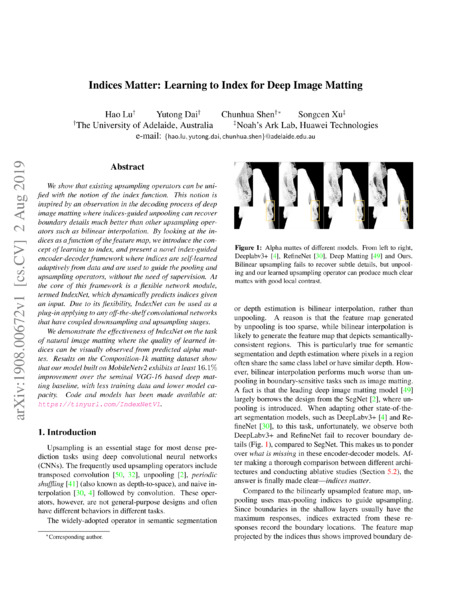Indices matter: learning to index for deep image matting
\(\cdot\) H. Lu, Y. Dai, C. Shen, S. Xu.
\(\cdot\) Proc. IEEE International Conference on Computer Vision (ICCV’19), 2019.
\(\cdot\) arXivbibtexgoogle scholarsemantic scholarReal-time joint semantic segmentation and depth estimation using asymmetric annotations
\(\cdot\) V. Nekrasov, T. Dharmasiri, A. Spek, T. Drummond, C. Shen, I. Reid.
\(\cdot\) Proc. International Conference on Robotics and Automation (ICRA’19), 2019.
\(\cdot\) bibtexgoogle scholarsemantic scholarLight-weight hybrid convolutional network for liver tumor segmentation
\(\cdot\) J. Zhang, Y. Xie, P. Zhang, H. Chen, Y. Xia, C. Shen.
\(\cdot\) Proc. International Joint Conference on Artificial Intelligence (IJCAI’19), 2019.
\(\cdot\) bibtexgoogle scholarsemantic scholarDeep anomaly detection with deviation networks
\(\cdot\) G. Pang, C. Shen, A. van den Hengel.
\(\cdot\) Proc. ACM SIGKDD Conference on Knowledge Discovery and Data Mining (KDD’19), 2019.
\(\cdot\) bibtexgoogle scholarsemantic scholarDeep segmentation-emendation model for gland instance segmentation
\(\cdot\) Y. Xie, H. Lu, J. Zhang, C. Shen, Y. Xia.
\(\cdot\) Proc. International Conference on Medical Image Computing and Computer Assisted Intervention (MICCAI’19), 2019.
\(\cdot\) bibtexgoogle scholarsemantic scholar Multi-marginal wasserstein GAN
Multi-marginal wasserstein GAN
\(\cdot\) J. Cao, L. Mo, Y. Zhang, K. Jia, C. Shen, M. Tan.
\(\cdot\) Proc. Advances in Neural Information Processing Systems (NeurIPS’19), 2019.
\(\cdot\) arXivbibtexgoogle scholarsemantic scholar Unsupervised scale-consistent depth and ego-motion learning from monocular video
Unsupervised scale-consistent depth and ego-motion learning from monocular video
\(\cdot\) J. Bian, Z. Li, N. Wang, H. Zhan, C. Shen, M. Cheng, I. Reid.
\(\cdot\) Proc. Advances in Neural Information Processing Systems (NeurIPS’19), 2019.
\(\cdot\) arXivbibtexgoogle scholarsemantic scholarproject webpage
2018
Journal
Cluster sparsity field: an internal hyperspectral imagery prior for reconstruction
\(\cdot\) L. Zhang, W. Wei, Y. Zhang, C. Shen, A. van den Hengel, Q. Shi.
\(\cdot\) International Journal of Computer Vision (IJCV), 2018.
\(\cdot\) pdfbibtexgoogle scholarsemantic scholar Reading car license plates using deep neural networks
Reading car license plates using deep neural networks
\(\cdot\) H. Li, P. Wang, M. You, C. Shen.
\(\cdot\) Image and Vision Computing (IVC), 2018.
\(\cdot\) arXivbibtexgoogle scholarsemantic scholar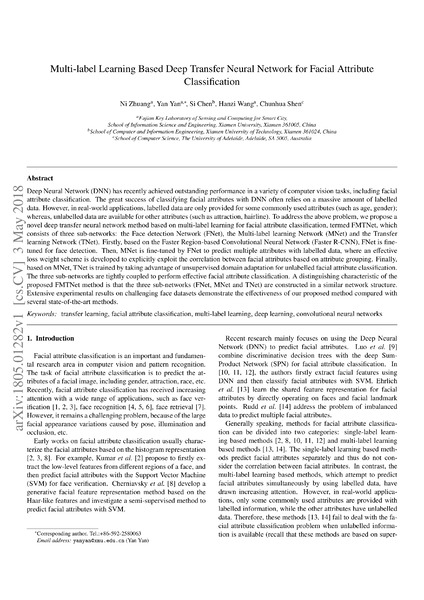Multi-label learning based deep transfer neural network for facial attribute classification
\(\cdot\) N. Zhuang, Y. Yan, S. Chen, H. Wang, C. Shen.
\(\cdot\) Pattern Recognition (PR), 2018.
\(\cdot\) arXivbibtexgoogle scholarsemantic scholar Unsupervised object discovery and co-localization by deep descriptor transforming
Unsupervised object discovery and co-localization by deep descriptor transforming
\(\cdot\) X. Wei, C. Zhang, J. Wu, C. Shen, Z. Zhou.
\(\cdot\) Pattern Recognition (PR), 2018.
\(\cdot\) arXivbibtexgoogle scholarsemantic scholarAn extended filtered channel framework for pedestrian detection
\(\cdot\) M. You, Y. Zhang, C. Shen, X. Zhang.
\(\cdot\) IEEE Transactions on Intelligent Transportation Systems (T-ITS), 2018.
\(\cdot\) bibtexgoogle scholarsemantic scholarTowards end-to-end car license plates detection and recognition with deep neural networks
\(\cdot\) H. Li, P. Wang, C. Shen.
\(\cdot\) IEEE Transactions on Intelligent Transportation Systems (T-ITS), 2018.
\(\cdot\) bibtexgoogle scholarsemantic scholarUnsupervised domain adaptation using robust class-wise matching
\(\cdot\) L. Zhang, P. Wang, W. Wei, H. Lu, C. Shen, A. van den Hengel, Y. Zhang.
\(\cdot\) IEEE Transactions on Circuits and Systems for Video Technology (TCSVT), 2018.
\(\cdot\) bibtexgoogle scholarsemantic scholarSemantics-aware visual object tracking
\(\cdot\) R. Yao, G. Lin, C. Shen, Y. Zhang, Q. Shi.
\(\cdot\) IEEE Transactions on Circuits and Systems for Video Technology (TCSVT), 2018.
\(\cdot\) bibtexgoogle scholarsemantic scholar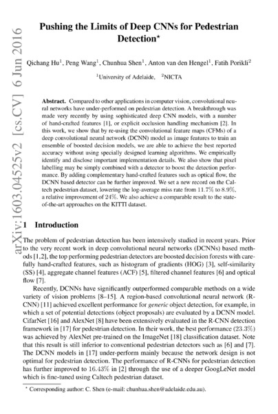Pushing the limits of deep CNNs for pedestrian detection
\(\cdot\) Q. Hu, P. Wang, C. Shen, A. van den Hengel, F. Porikli.
\(\cdot\) IEEE Transactions on Circuits and Systems for Video Technology (TCSVT), 2018.
\(\cdot\) arXivbibtexgoogle scholarsemantic scholarAn embarrassingly simple approach to visual domain adaptation
\(\cdot\) H. Lu, C. Shen, Z. Cao, Y. Xiao, A. van den Hengel.
\(\cdot\) IEEE Transactions on Image Processing (TIP), 2018.
\(\cdot\) bibtexgoogle scholarsemantic scholarproject webpage Multi-label image classification with regional latent semantic dependencies
Multi-label image classification with regional latent semantic dependencies
\(\cdot\) J. Zhang, Q. Wu, C. Shen, J. Zhang, J. Lu.
\(\cdot\) IEEE Transactions on Multimedia (TMM), 2018.
\(\cdot\) arXivbibtexgoogle scholarsemantic scholar Automatic image cropping for visual aesthetic enhancement using deep neural networks and cascaded regression
Automatic image cropping for visual aesthetic enhancement using deep neural networks and cascaded regression
\(\cdot\) G. Guo, H. Wang, C. Shen, Y. Yan, H. Liao.
\(\cdot\) IEEE Transactions on Multimedia (TMM), 2018.
\(\cdot\) arXivbibtexgoogle scholarsemantic scholar FVQA: fact-based visual question answering
FVQA: fact-based visual question answering
\(\cdot\) P. Wang, Q. Wu, C. Shen, A. Dick, A. van den Hengel.
\(\cdot\) IEEE Transactions on Pattern Analysis and Machine Intelligence (TPAMI), 2018.
\(\cdot\) arXivbibtexgoogle scholarsemantic scholarOrdinal constraint binary coding for approximate nearest neighbor search
\(\cdot\) H. Liu, R. Ji, J. Wang, C. Shen.
\(\cdot\) IEEE Transactions on Pattern Analysis and Machine Intelligence (TPAMI), 2018.
\(\cdot\) pdfbibtexgoogle scholarsemantic scholar
Conference
HCVRD: a benchmark for large-scale human-centered visual relationship detection
\(\cdot\) B. Zhuang, Q. Wu, C. Shen, I. Reid, A. van den Hengel.
\(\cdot\) Proc. AAAI Conference on Artificial Intelligence (AAAI’18), 2018.
\(\cdot\) bibtexgoogle scholarsemantic scholarKill two birds with one stone: weakly-supervised neural network for image annotation and tag refinement
\(\cdot\) J. Zhang, Q. Wu, J. Zhang, C. Shen, J. Lu.
\(\cdot\) Proc. AAAI Conference on Artificial Intelligence (AAAI’18), 2018.
\(\cdot\) bibtexgoogle scholarsemantic scholarCoarse-to-fine: a RNN-based hierarchical attention model for vehicle re-identification
\(\cdot\) X. Wei, C. Zhang, L. Liu, C. Shen, J. Wu.
\(\cdot\) Proc. Asian Conference on Computer Vision (ACCV’18), 2018.
\(\cdot\) bibtexgoogle scholarsemantic scholar Deep attention-based classification network for robust depth prediction
Deep attention-based classification network for robust depth prediction
\(\cdot\) R. Li, K. Xian, C. Shen, Z. Cao, H. Lu, L. Hang.
\(\cdot\) Proc. Asian Conference on Computer Vision (ACCV’18), 2018.
\(\cdot\) arXivbibtexgoogle scholarsemantic scholarLight-weight refinenet for real-time semantic segmentation
\(\cdot\) V. Nekrasov, C. Shen, I. Reid.
\(\cdot\) Proc. British Machine Vision Conference (BMVC’18), 2018.
\(\cdot\) bibtexgoogle scholarsemantic scholarproject webpageA hybrid probabilistic model for camera relocalization
\(\cdot\) M. Cai, C. Shen, I. Reid.
\(\cdot\) Proc. British Machine Vision Conference (BMVC’18), 2018.
\(\cdot\) bibtexgoogle scholarsemantic scholar Parallel attention: a unified framework for visual object discovery through dialogs and queries
Parallel attention: a unified framework for visual object discovery through dialogs and queries
\(\cdot\) B. Zhuang, Q. Wu, C. Shen, I. Reid, A. van den Hengel.
\(\cdot\) Proc. IEEE Conference on Computer Vision and Pattern Recognition (CVPR’18), 2018.
\(\cdot\) arXivbibtexgoogle scholarsemantic scholar Towards effective low-bitwidth convolutional neural networks
Towards effective low-bitwidth convolutional neural networks
\(\cdot\) B. Zhuang, C. Shen, M. Tan, L. Liu, I. Reid.
\(\cdot\) Proc. IEEE Conference on Computer Vision and Pattern Recognition (CVPR’18), 2018.
\(\cdot\) arXivbibtexgoogle scholarsemantic scholarMonocular relative depth perception with web stereo data supervision
\(\cdot\) K. Xian, C. Shen, Z. Cao, H. Lu, Y. Xiao, R. Li, Z. Luo.
\(\cdot\) Proc. IEEE Conference on Computer Vision and Pattern Recognition (CVPR’18), 2018.
\(\cdot\) bibtexgoogle scholarsemantic scholar Are you talking to me? reasoned visual dialog generation through adversarial learning
Are you talking to me? reasoned visual dialog generation through adversarial learning
\(\cdot\) Q. Wu, P. Wang, C. Shen, I. Reid, A. van den Hengel.
\(\cdot\) Proc. IEEE Conference on Computer Vision and Pattern Recognition (CVPR’18), 2018.
\(\cdot\) arXivbibtexgoogle scholarsemantic scholar Repulsion loss: detecting pedestrians in a crowd
Repulsion loss: detecting pedestrians in a crowd
\(\cdot\) X. Wang, T. Xiao, Y. Jiang, S. Shao, J. Sun, C. Shen.
\(\cdot\) Proc. IEEE Conference on Computer Vision and Pattern Recognition (CVPR’18), 2018.
\(\cdot\) arXivbibtexgoogle scholarsemantic scholarOthers have implemented our paper: Repulsion loss in SSD and Repulsion loss in RetinaNet.
 VITAL: visual tracking via adversarial learning
VITAL: visual tracking via adversarial learning
\(\cdot\) Y. Song, C. Ma, X. Wu, L. Gong, L. Bao, W. Zuo, C. Shen, R. Lau, M. Yang.
\(\cdot\) Proc. IEEE Conference on Computer Vision and Pattern Recognition (CVPR’18), 2018.
\(\cdot\) arXivbibtexgoogle scholarsemantic scholarproject webpageBootstrapping the performance of webly supervised semantic segmentation
\(\cdot\) T. Shen, G. Lin, C. Shen, I. Reid.
\(\cdot\) Proc. IEEE Conference on Computer Vision and Pattern Recognition (CVPR’18), 2018.
\(\cdot\) bibtexgoogle scholarsemantic scholarproject webpage Visual question answering with memory-augmented networks
Visual question answering with memory-augmented networks
\(\cdot\) C. Ma, C. Shen, A. Dick, Q. Wu, P. Wang, A. van den Hengel, I. Reid.
\(\cdot\) Proc. IEEE Conference on Computer Vision and Pattern Recognition (CVPR’18), 2018.
\(\cdot\) arXivbibtexgoogle scholarsemantic scholar An end-to-end textspotter with explicit alignment and attention
An end-to-end textspotter with explicit alignment and attention
\(\cdot\) T. He, Z. Tian, W. Huang, C. Shen, Y. Qiao, C. Sun.
\(\cdot\) Proc. IEEE Conference on Computer Vision and Pattern Recognition (CVPR’18), 2018.
\(\cdot\) arXivbibtexgoogle scholarsemantic scholarproject webpage FSRNet: end-to-end learning face super-resolution with facial priors
FSRNet: end-to-end learning face super-resolution with facial priors
\(\cdot\) Y. Chen, Y. Tai, X. Liu, C. Shen, J. Yang.
\(\cdot\) Proc. IEEE Conference on Computer Vision and Pattern Recognition (CVPR’18), 2018.
\(\cdot\) arXivbibtexgoogle scholarsemantic scholarproject webpage Goal-oriented visual question generation via intermediate rewards
Goal-oriented visual question generation via intermediate rewards
\(\cdot\) J. Zhang, Q. Wu, C. Shen, J. Zhang, J. Lu, A. van den Hengel.
\(\cdot\) Proc. European Conference on Computer Vision (ECCV’18), 2018.
\(\cdot\) arXivbibtexgoogle scholarsemantic scholar Learning to predict crisp boundaries
Learning to predict crisp boundaries
\(\cdot\) R. Deng, C. Shen, S. Liu, H. Wang, X. Liu.
\(\cdot\) Proc. European Conference on Computer Vision (ECCV’18), 2018.
\(\cdot\) arXivbibtexgoogle scholarsemantic scholar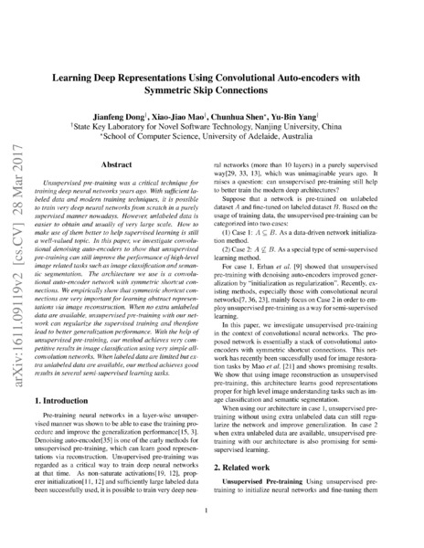Learning deep representations using convolutional auto-encoders with symmetric skip connections
\(\cdot\) L. Dong, Y. Gan, X. Mao, Y. Yang, C. Shen.
\(\cdot\) Proc. IEEE International Conference on Acoustics, Speech and Signal Processing (ICASSP’18), 2018.
\(\cdot\) arXivbibtexgoogle scholarsemantic scholar Adversarial learning with local coordinate coding
Adversarial learning with local coordinate coding
\(\cdot\) J. Cao, Y. Guo, Q. Wu, C. Shen, J. Huang, M. Tan.
\(\cdot\) Proc. International Conference on Machine Learning (ICML’18), 2018.
\(\cdot\) arXivbibtexgoogle scholarsemantic scholar Salient object detection by lossless feature reflection
Salient object detection by lossless feature reflection
\(\cdot\) P. Zhang, W. Liu, H. Lu, C. Shen.
\(\cdot\) Proc. International Joint Conference on Artificial Intelligence (IJCAI’18), 2018.
\(\cdot\) arXivbibtexgoogle scholarsemantic scholar
2017
Journal
 Visual question answering: a survey of methods and datasets
Visual question answering: a survey of methods and datasets
\(\cdot\) Q. Wu, D. Teney, P. Wang, C. Shen, A. Dick, A. van den Hengel.
\(\cdot\) Computer Vision and Image Understanding (CVIU), 2017.
\(\cdot\) arXivbibtexgoogle scholarsemantic scholar Structured learning of binary codes with column generation for optimizing ranking measures
Structured learning of binary codes with column generation for optimizing ranking measures
\(\cdot\) G. Lin, F. Liu, C. Shen, J. Wu, H. Shen.
\(\cdot\) International Journal of Computer Vision (IJCV), 2017.
\(\cdot\) arXivbibtexgoogle scholarsemantic scholarproject webpageRemoval of optically thick clouds from high-resolution satellite imagery using dictionary group learning and interdictionary nonlocal joint sparse coding
\(\cdot\) Y. Li, W. Li, C. Shen.
\(\cdot\) IEEE Journal of Selected Topics in Applied Earth Observations and Remote Sensing (JSTAEORS), 2017.
\(\cdot\) bibtexgoogle scholarsemantic scholar TasselNet: counting maize tassels in the wild via local counts regression network
TasselNet: counting maize tassels in the wild via local counts regression network
\(\cdot\) H. Lu, Z. Cao, Y. Xiao, B. Zhuang, C. Shen.
\(\cdot\) Plant Methods (PLME), 2017.
\(\cdot\) arXivbibtexgoogle scholarsemantic scholar Deep linear discriminant analysis on Fisher networks: a hybrid architecture for person re-identification
Deep linear discriminant analysis on Fisher networks: a hybrid architecture for person re-identification
\(\cdot\) L. Wu, C. Shen, A. van den Hengel.
\(\cdot\) Pattern Recognition (PR), 2017.
\(\cdot\) arXivbibtexgoogle scholarsemantic scholarMask-CNN: localizing parts and selecting descriptors for bird species categorization
\(\cdot\) X. Wei, C. Xie, J. Wu, C. Shen.
\(\cdot\) Pattern Recognition (PR), 2017.
\(\cdot\) bibtexgoogle scholarsemantic scholar Learning discriminative trajectorylet detector sets for accurate skeleton-based action recognition
Learning discriminative trajectorylet detector sets for accurate skeleton-based action recognition
\(\cdot\) R. Qiao, L. Liu, C. Shen, A. van den Hengel.
\(\cdot\) Pattern Recognition (PR), 2017.
\(\cdot\) arXivbibtexgoogle scholarsemantic scholarDeep CNNs with spatially weighted pooling for fine-grained car recognition
\(\cdot\) Q. Hu, H. Wang, T. Li, C. Shen.
\(\cdot\) IEEE Transactions on Intelligent Transportation Systems (T-ITS), 2017.
\(\cdot\) bibtexgoogle scholarsemantic scholar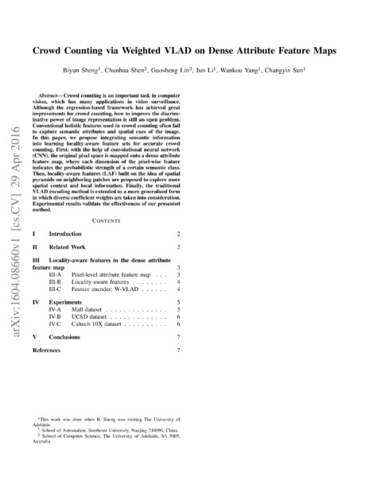Crowd counting via weighted VLAD on dense attribute feature maps
\(\cdot\) B. Sheng, C. Shen, G. Lin, J. Li, W. Yang, C. Sun.
\(\cdot\) IEEE Transactions on Circuits and Systems for Video Technology (TCSVT), 2017.
\(\cdot\) arXivbibtexgoogle scholarsemantic scholar Estimating depth from monocular images as classification using deep fully convolutional residual networks
Estimating depth from monocular images as classification using deep fully convolutional residual networks
\(\cdot\) Y. Cao, Z. Wu, C. Shen.
\(\cdot\) IEEE Transactions on Circuits and Systems for Video Technology (TCSVT), 2017.
\(\cdot\) arXivbibtexgoogle scholarsemantic scholar Discriminative training of deep fully-connected continuous CRF with task-specific loss
Discriminative training of deep fully-connected continuous CRF with task-specific loss
\(\cdot\) F. Liu, G. Lin, C. Shen.
\(\cdot\) IEEE Transactions on Image Processing (TIP), 2017.
\(\cdot\) arXivbibtexgoogle scholarsemantic scholar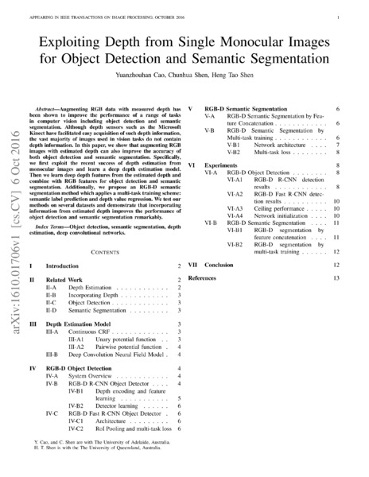Exploiting depth from single monocular images for object detection and semantic segmentation
\(\cdot\) Y. Cao, C. Shen, H. Shen.
\(\cdot\) IEEE Transactions on Image Processing (TIP), 2017.
\(\cdot\) arXivbibtexgoogle scholarsemantic scholar Structured learning of tree potentials in CRF for image segmentation
Structured learning of tree potentials in CRF for image segmentation
\(\cdot\) F. Liu, G. Lin, R. Qiao, C. Shen.
\(\cdot\) IEEE Transactions on Neural Networks and Learning Systems (TNN), 2017.
\(\cdot\) arXivbibtexgoogle scholarsemantic scholar Image captioning and visual question answering based on attributes and external knowledge
Image captioning and visual question answering based on attributes and external knowledge
\(\cdot\) Q. Wu, C. Shen, P. Wang, A. Dick, A. van den Hengel.
\(\cdot\) IEEE Transactions on Pattern Analysis and Machine Intelligence (TPAMI), 2017.
\(\cdot\) arXivbibtexgoogle scholarsemantic scholarCompositional model based Fisher vector coding for image classification
\(\cdot\) L. Liu, P. Wang, C. Shen, L. Wang, A. van den Hengel, C. Wang, H. Shen.
\(\cdot\) IEEE Transactions on Pattern Analysis and Machine Intelligence (TPAMI), 2017.
\(\cdot\) arXivbibtexgoogle scholarsemantic scholar Cross-convolutional-layer pooling for image recognition
Cross-convolutional-layer pooling for image recognition
\(\cdot\) L. Liu, C. Shen, A. van den Hengel.
\(\cdot\) IEEE Transactions on Pattern Analysis and Machine Intelligence (TPAMI), 2017.
\(\cdot\) arXivlinkbibtexgoogle scholarsemantic scholar Exploring context with deep structured models for semantic segmentation
Exploring context with deep structured models for semantic segmentation
\(\cdot\) G. Lin, C. Shen, A. van den Hengel, I. Reid.
\(\cdot\) IEEE Transactions on Pattern Analysis and Machine Intelligence (TPAMI), 2017.
\(\cdot\) arXivbibtexgoogle scholarsemantic scholar
Conference
Auxiliary tasks to improve trip hazard affordance detection
\(\cdot\) S. McMahon, T. Shen, N. Sunderhauf, I. Reid, C. Shen, M. Milford.
\(\cdot\) Proc. Australasian Conference on Robotics and Automation (ACRA’17), 2017.
\(\cdot\) bibtexgoogle scholarsemantic scholar Weakly supervised semantic segmentation based on co-segmentation
Weakly supervised semantic segmentation based on co-segmentation
\(\cdot\) T. Shen, G. Lin, L. Liu, C. Shen, I. Reid.
\(\cdot\) Proc. British Machine Vision Conference (BMVC’17), 2017.
\(\cdot\) arXivbibtexgoogle scholarsemantic scholarVisually aligned word embeddings for improving zero-shot learning
\(\cdot\) R. Qiao, L. Liu, C. Shen, A. van den Hengel.
\(\cdot\) Proc. British Machine Vision Conference (BMVC’17), 2017.
\(\cdot\) bibtexgoogle scholarsemantic scholar Attend in groups: a weakly-supervised deep learning framework for learning from web data
Attend in groups: a weakly-supervised deep learning framework for learning from web data
\(\cdot\) B. Zhuang, L. Liu, Y. Li, C. Shen, I. Reid.
\(\cdot\) Proc. IEEE Conference on Computer Vision and Pattern Recognition (CVPR’17), 2017.
\(\cdot\) arXivbibtexgoogle scholarsemantic scholar The VQA-machine: learning how to use existing vision algorithms to answer new questions
The VQA-machine: learning how to use existing vision algorithms to answer new questions
\(\cdot\) P. Wang, Q. Wu, C. Shen, A. van den Hengel.
\(\cdot\) Proc. IEEE Conference on Computer Vision and Pattern Recognition (CVPR’17), 2017.
\(\cdot\) arXivbibtexgoogle scholarsemantic scholar Multi-attention network for one shot learning
Multi-attention network for one shot learning
\(\cdot\) P. Wang, L. Liu, C. Shen, Z. Huang, A. van den Hengel, H. Shen.
\(\cdot\) Proc. IEEE Conference on Computer Vision and Pattern Recognition (CVPR’17), 2017.
\(\cdot\) pdfbibtexgoogle scholarsemantic scholar RefineNet: multi-path refinement networks for high-resolution semantic segmentation
RefineNet: multi-path refinement networks for high-resolution semantic segmentation
\(\cdot\) G. Lin, A. Milan, C. Shen, I. Reid.
\(\cdot\) Proc. IEEE Conference on Computer Vision and Pattern Recognition (CVPR’17), 2017.
\(\cdot\) arXivbibtexgoogle scholarsemantic scholarproject webpage Sequential person recognition in photo albums with a recurrent network
Sequential person recognition in photo albums with a recurrent network
\(\cdot\) Y. Li, G. Lin, B. Zhuang, L. Liu, C. Shen, A. van den Hengel.
\(\cdot\) Proc. IEEE Conference on Computer Vision and Pattern Recognition (CVPR’17), 2017.
\(\cdot\) arXivbibtexgoogle scholarsemantic scholar From motion blur to motion flow: a deep learning solution for removing heterogeneous motion blur
From motion blur to motion flow: a deep learning solution for removing heterogeneous motion blur
\(\cdot\) D. Gong, J. Yang, L. Liu, Y. Zhang, I. Reid, C. Shen, A. van den Hengel, Q. Shi.
\(\cdot\) Proc. IEEE Conference on Computer Vision and Pattern Recognition (CVPR’17), 2017.
\(\cdot\) arXivbibtexgoogle scholarsemantic scholar Towards context-aware interaction recognition
Towards context-aware interaction recognition
\(\cdot\) B. Zhuang, L. Liu, C. Shen, I. Reid.
\(\cdot\) Proc. IEEE International Conference on Computer Vision (ICCV’17), 2017.
\(\cdot\) arXivbibtexgoogle scholarsemantic scholarWhen unsupervised domain adaptation meets tensor representations
\(\cdot\) H. Lu, L. Zhang, Z. Cao, W. Wei, K. Xian, C. Shen, A. van den Hengel.
\(\cdot\) Proc. IEEE International Conference on Computer Vision (ICCV’17), 2017.
\(\cdot\) bibtexgoogle scholarsemantic scholar Semi-global weighted least squares in image filtering
Semi-global weighted least squares in image filtering
\(\cdot\) W. Liu, X. Chen, C. Shen, Z. Liu, J. Yang.
\(\cdot\) Proc. IEEE International Conference on Computer Vision (ICCV’17), 2017.
\(\cdot\) arXivbibtexgoogle scholarsemantic scholar Towards end-to-end text spotting with convolutional recurrent neural networks
Towards end-to-end text spotting with convolutional recurrent neural networks
\(\cdot\) H. Li, P. Wang, C. Shen.
\(\cdot\) Proc. IEEE International Conference on Computer Vision (ICCV’17), 2017.
\(\cdot\) arXivbibtexgoogle scholarsemantic scholar Adversarial PoseNet: a structure-aware convolutional network for human pose estimation
Adversarial PoseNet: a structure-aware convolutional network for human pose estimation
\(\cdot\) Y. Chen, C. Shen, X. Wei, L. Liu, J. Yang.
\(\cdot\) Proc. IEEE International Conference on Computer Vision (ICCV’17), 2017.
\(\cdot\) arXivbibtexgoogle scholarsemantic scholar Deep learning features at scale for visual place recognition
Deep learning features at scale for visual place recognition
\(\cdot\) Z. Chen, A. Jacobson, N. Sunderhauf, B. Upcroft, L. Liu, C. Shen, I. Reid, M. Milford.
\(\cdot\) Proc. IEEE International Conference on Robotics and Automation (ICRA’17), 2017.
\(\cdot\) arXivbibtexgoogle scholarsemantic scholar Deep descriptor transforming for image co-localization
Deep descriptor transforming for image co-localization
\(\cdot\) X. Wei, C. Zhang, Y. Li, C. Xie, J. Wu, C. Shen, Z. Zhou.
\(\cdot\) Proc. International Joint Conference on Artificial Intelligence (IJCAI’17), 2017.
\(\cdot\) arXivbibtexgoogle scholarsemantic scholar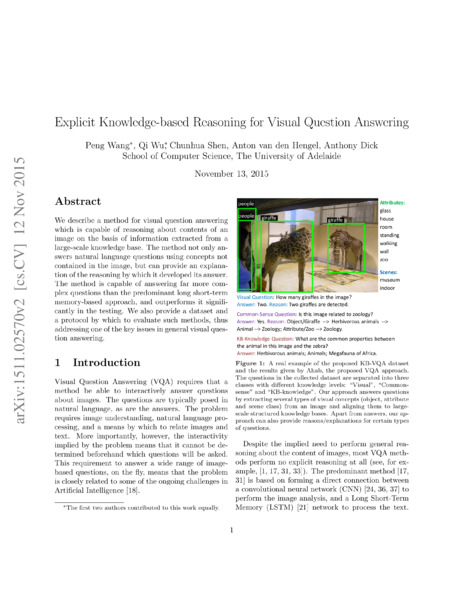Explicit knowledge-based reasoning for visual question answering
\(\cdot\) P. Wang, Q. Wu, C. Shen, A. van den Hengel, A. Dick.
\(\cdot\) Proc. International Joint Conference on Artificial Intelligence (IJCAI’17), 2017.
\(\cdot\) arXivbibtexgoogle scholarsemantic scholar Learning multi-level region consistency with dense multi-label networks for semantic segmentation
Learning multi-level region consistency with dense multi-label networks for semantic segmentation
\(\cdot\) T. Shen, G. Lin, C. Shen, I. Reid.
\(\cdot\) Proc. International Joint Conference on Artificial Intelligence (IJCAI’17), 2017.
\(\cdot\) arXivbibtexgoogle scholarsemantic scholar
2016
Journal
 Structured learning of metric ensembles with application to person re-identification
Structured learning of metric ensembles with application to person re-identification
\(\cdot\) S. Paisitkriangkrai, L. Wu, C. Shen, A. van den Hengel.
\(\cdot\) Computer Vision and Image Understanding (CVIU), 2016.
\(\cdot\) arXivbibtexgoogle scholarsemantic scholar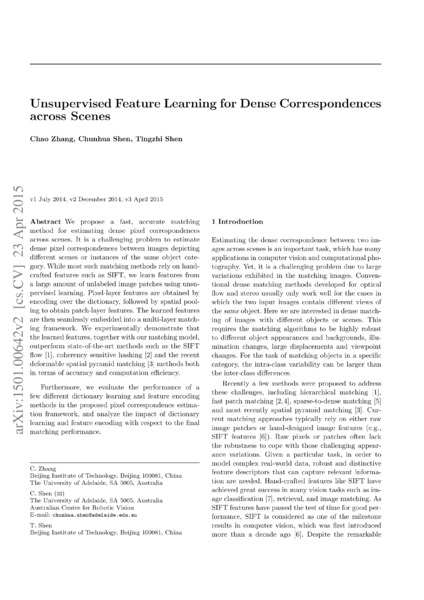Unsupervised feature learning for dense correspondences across scenes
\(\cdot\) C. Zhang, C. Shen, T. Shen.
\(\cdot\) International Journal of Computer Vision (IJCV), 2016.
\(\cdot\) arXivbibtexgoogle scholarsemantic scholarproject webpage Efficient semidefinite branch-and-cut for MAP-MRF inference
Efficient semidefinite branch-and-cut for MAP-MRF inference
\(\cdot\) P. Wang, C. Shen, A. van den Hengel, P. Torr.
\(\cdot\) International Journal of Computer Vision (IJCV), 2016.
\(\cdot\) arXivlinkbibtexgoogle scholarsemantic scholarMining mid-level visual patterns with deep CNN activations
\(\cdot\) Y. Li, L. Liu, C. Shen, A. van den Hengel.
\(\cdot\) International Journal of Computer Vision (IJCV), 2016.
\(\cdot\) arXivlinkbibtexgoogle scholarsemantic scholarproject webpage Online unsupervised feature learning for visual tracking
Online unsupervised feature learning for visual tracking
\(\cdot\) F. Liu, C. Shen, I. Reid, A. van den Hengel.
\(\cdot\) Image and Vision Computing (IVC), 2016.
\(\cdot\) arXivbibtexgoogle scholarsemantic scholarCanonical principal angles correlation analysis for two-view data
\(\cdot\) S. Wang, J. Lu, X. Gu, C. Shen, R. Xia, J. Yang.
\(\cdot\) Journal of Visual Communication and Image Representation (JVCIR), 2016.
\(\cdot\) linkbibtexgoogle scholarsemantic scholar Face image classification by pooling raw features
Face image classification by pooling raw features
\(\cdot\) F. Shen, C. Shen, X. Zhou, Y. Yang, H. Shen.
\(\cdot\) Pattern Recognition (PR), 2016.
\(\cdot\) arXivbibtexgoogle scholarsemantic scholarproject webpage Face recognition using linear representation ensembles
Face recognition using linear representation ensembles
\(\cdot\) H. Li, F. Shen, C. Shen, Y. Yang, Y. Gao.
\(\cdot\) Pattern Recognition (PR), 2016.
\(\cdot\) arXivlinkbibtexgoogle scholarsemantic scholarFast detection of multiple objects in traffic scenes with a common detection framework
\(\cdot\) Q. Hu, S. Paisitkriangkrai, C. Shen, A. van den Hengel, F. Porikli.
\(\cdot\) IEEE Transactions on Intelligent Transportation Systems (T-ITS), 2016.
\(\cdot\) bibtexgoogle scholarsemantic scholarPart-based robust tracking using online latent structured learning
\(\cdot\) R. Yao, Q. Shi, C. Shen, Y. Zhang, A. van den Hengel.
\(\cdot\) IEEE Transactions on Circuits and Systems for Video Technology (TCSVT), 2016.
\(\cdot\) linkbibtexgoogle scholarsemantic scholar Temporal pyramid pooling based convolutional neural network for action recognition
Temporal pyramid pooling based convolutional neural network for action recognition
\(\cdot\) P. Wang, Y. Cao, C. Shen, L. Liu, H. Shen.
\(\cdot\) IEEE Transactions on Circuits and Systems for Video Technology (TCSVT), 2016.
\(\cdot\) arXivbibtexgoogle scholarsemantic scholarDictionary learning for promoting structured sparsity in hyerpsectral compressive sensing
\(\cdot\) L. Zhang, W. Wei, Y. Zhang, C. Shen, A. van den Hengel, Q. Shi.
\(\cdot\) IEEE Transactions on Geoscience and Remote Sensing (TGRS), 2016.
\(\cdot\) bibtexgoogle scholarsemantic scholarScalable linear visual feature learning via online parallel nonnegative matrix factorization
\(\cdot\) X. Zhao, X. Li, Z. Zhang, C. Shen, L. Gao, X. Li.
\(\cdot\) IEEE Transactions on Neural Networks and Learning Systems (TNN), 2016.
\(\cdot\) linkbibtexgoogle scholarsemantic scholar Large-scale binary quadratic optimization using semidefinite relaxation and applications
Large-scale binary quadratic optimization using semidefinite relaxation and applications
\(\cdot\) P. Wang, C. Shen, A. van den Hengel, P. Torr.
\(\cdot\) IEEE Transactions on Pattern Analysis and Machine Intelligence (TPAMI), 2016.
\(\cdot\) arXivlinkbibtexgoogle scholarsemantic scholar Pedestrian detection with spatially pooled features and structured ensemble learning
Pedestrian detection with spatially pooled features and structured ensemble learning
\(\cdot\) S. Paisitkriangkrai, C. Shen, A. van den Hengel.
\(\cdot\) IEEE Transactions on Pattern Analysis and Machine Intelligence (TPAMI), 2016.
\(\cdot\) arXivlinkbibtexgoogle scholarsemantic scholarproject webpage A generalized probabilistic framework for compact codebook creation
A generalized probabilistic framework for compact codebook creation
\(\cdot\) L. Liu, L. Wang, C. Shen.
\(\cdot\) IEEE Transactions on Pattern Analysis and Machine Intelligence (TPAMI), 2016.
\(\cdot\) arXivlinkbibtexgoogle scholarsemantic scholar Learning depth from single monocular images using deep convolutional neural fields
Learning depth from single monocular images using deep convolutional neural fields
\(\cdot\) F. Liu, C. Shen, G. Lin, I. Reid.
\(\cdot\) IEEE Transactions on Pattern Analysis and Machine Intelligence (TPAMI), 2016.
\(\cdot\) arXivlinkbibtexgoogle scholarsemantic scholarproject webpage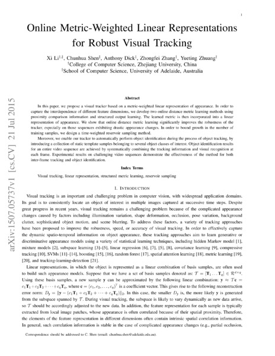Online metric-weighted linear representations for robust visual tracking
\(\cdot\) X. Li, C. Shen, A. Dick, Z. Zhang, Y. Zhuang.
\(\cdot\) IEEE Transactions on Pattern Analysis and Machine Intelligence (TPAMI), 2016.
\(\cdot\) arXivbibtexgoogle scholarsemantic scholar
Conference
 Fast training of triplet-based deep binary embedding networks
Fast training of triplet-based deep binary embedding networks
\(\cdot\) B. Zhuang, G. Lin, C. Shen, I. Reid.
\(\cdot\) Proc. IEEE Conference on Computer Vision and Pattern Recognition (CVPR’16), 2016.
\(\cdot\) arXivbibtexgoogle scholarsemantic scholarproject webpage Ask me anything: free-form visual question answering based on knowledge from external sources
Ask me anything: free-form visual question answering based on knowledge from external sources
\(\cdot\) Q. Wu, P. Wang, C. Shen, A. Dick, A. van den Hengel.
\(\cdot\) Proc. IEEE Conference on Computer Vision and Pattern Recognition (CVPR’16), 2016.
\(\cdot\) arXivbibtexgoogle scholarsemantic scholar What value do explicit high level concepts have in vision to language problems
What value do explicit high level concepts have in vision to language problems
\(\cdot\) Q. Wu, C. Shen, L. Liu, A. Dick, A. van den Hengel.
\(\cdot\) Proc. IEEE Conference on Computer Vision and Pattern Recognition (CVPR’16), 2016.
\(\cdot\) arXivbibtexgoogle scholarsemantic scholar What's wrong with that object? identifying irregular object from images by modelling the detection score distribution
What's wrong with that object? identifying irregular object from images by modelling the detection score distribution
\(\cdot\) P. Wang, L. Liu, C. Shen, Z. Huang, A. van den Hengel, H. Shen.
\(\cdot\) Proc. IEEE Conference on Computer Vision and Pattern Recognition (CVPR’16), 2016.
\(\cdot\) arXivbibtexgoogle scholarsemantic scholar Less is more: zero-shot learning from online textual documents with noise suppression
Less is more: zero-shot learning from online textual documents with noise suppression
\(\cdot\) R. Qiao, L. Liu, C. Shen, A. van den Hengel.
\(\cdot\) Proc. IEEE Conference on Computer Vision and Pattern Recognition (CVPR’16), 2016.
\(\cdot\) arXivbibtexgoogle scholarsemantic scholar Efficient piecewise training of deep structured models for semantic segmentation
Efficient piecewise training of deep structured models for semantic segmentation
\(\cdot\) G. Lin, C. Shen, A. van dan Hengel, I. Reid.
\(\cdot\) Proc. IEEE Conference on Computer Vision and Pattern Recognition (CVPR’16), 2016.
\(\cdot\) arXivbibtexgoogle scholarsemantic scholarCluster sparsity field for hyperspectral imagery denoising
\(\cdot\) L. Zhang, W. Wei, Y. Zhang, C. Shen, A. van den Hengel, Q. Shi.
\(\cdot\) Proc. European Conference on Computer Vision (ECCV’16), 2016.
\(\cdot\) bibtexgoogle scholarsemantic scholar Image co-localization by mimicking a good detector's confidence score distribution
Image co-localization by mimicking a good detector's confidence score distribution
\(\cdot\) Y. Li, L. Liu, C. Shen, A. van den Hengel.
\(\cdot\) Proc. European Conference on Computer Vision (ECCV’16), 2016.
\(\cdot\) arXivbibtexgoogle scholarsemantic scholar Image restoration using very deep fully convolutional encoder-decoder networks with symmetric skip connections
Image restoration using very deep fully convolutional encoder-decoder networks with symmetric skip connections
\(\cdot\) X. Mao, C. Shen, Y. Yang.
\(\cdot\) Proc. Advances in Neural Information Processing Systems (NeurIPS’16), 2016.
\(\cdot\) arXivlinkbibtexgoogle scholarsemantic scholarproject webpageOthers have implemented our paper.
2015
Journal
 Extrinsic methods for coding and dictionary learning on Grassmann manifolds
Extrinsic methods for coding and dictionary learning on Grassmann manifolds
\(\cdot\) M. Harandi, R. Hartley, C. Shen, B. Lovell, C. Sanderson.
\(\cdot\) International Journal of Computer Vision (IJCV), 2015.
\(\cdot\) arXivbibtexgoogle scholarsemantic scholarproject webpage CRF learning with CNN features for image segmentation
CRF learning with CNN features for image segmentation
\(\cdot\) F. Liu, G. Lin, C. Shen.
\(\cdot\) Pattern Recognition (PR), 2015.
\(\cdot\) arXivbibtexgoogle scholarsemantic scholar Hashing on nonlinear manifolds
Hashing on nonlinear manifolds
\(\cdot\) F. Shen, C. Shen, Q. Shi, A. van den Hengel, Z. Tang, H. Shen.
\(\cdot\) IEEE Transactions on Image Processing (TIP), 2015.
\(\cdot\) arXivbibtexgoogle scholarsemantic scholarproject webpage A computational model of the short-cut rule for 2D shape decomposition
A computational model of the short-cut rule for 2D shape decomposition
\(\cdot\) L. Luo, C. Shen, X. Liu, C. Zhang.
\(\cdot\) IEEE Transactions on Image Processing (TIP), 2015.
\(\cdot\) arXivbibtexgoogle scholarsemantic scholar Worst-case linear discriminant analysis as scalable semidefinite feasibility problems
Worst-case linear discriminant analysis as scalable semidefinite feasibility problems
\(\cdot\) H. Li, C. Shen, A. van den Hengel, Q. Shi.
\(\cdot\) IEEE Transactions on Image Processing (TIP), 2015.
\(\cdot\) arXivbibtexgoogle scholarsemantic scholarproject webpage Supervised hashing using graph cuts and boosted decision trees
Supervised hashing using graph cuts and boosted decision trees
\(\cdot\) G. Lin, C. Shen, A. van den Hengel.
\(\cdot\) IEEE Transactions on Pattern Analysis and Machine Intelligence (TPAMI), 2015.
\(\cdot\) arXivlinkbibtexgoogle scholarsemantic scholarproject webpage
Conference
 Efficient SDP inference for fully-connected CRFs based on low-rank decomposition
Efficient SDP inference for fully-connected CRFs based on low-rank decomposition
\(\cdot\) P. Wang, C. Shen, A. van den Hengel.
\(\cdot\) Proc. IEEE Conference on Computer Vision and Pattern Recognition (CVPR’15), 2015.
\(\cdot\) arXivbibtexgoogle scholarsemantic scholar Learning graph structure for multi-label image classification via clique generation
Learning graph structure for multi-label image classification via clique generation
\(\cdot\) M. Tan, Q. Shi, A. van den Hengel, C. Shen, J. Gao, F. Hu, Z. Zhang.
\(\cdot\) Proc. IEEE Conference on Computer Vision and Pattern Recognition (CVPR’15), 2015.
\(\cdot\) pdfbibtexgoogle scholarsemantic scholar Supervised discrete hashing
Supervised discrete hashing
\(\cdot\) F. Shen, C. Shen, W. Liu, H. Shen.
\(\cdot\) Proc. IEEE Conference on Computer Vision and Pattern Recognition (CVPR’15), 2015.
\(\cdot\) pdfbibtexgoogle scholarsemantic scholarproject webpage Learning to rank in person re-identification with metric ensembles
Learning to rank in person re-identification with metric ensembles
\(\cdot\) S. Paisitkriangkrai, C. Shen, A. van den Hengel.
\(\cdot\) Proc. IEEE Conference on Computer Vision and Pattern Recognition (CVPR’15), 2015.
\(\cdot\) arXivbibtexgoogle scholarsemantic scholar The treasure beneath convolutional layers: cross convolutional layer pooling for image classification
The treasure beneath convolutional layers: cross convolutional layer pooling for image classification
\(\cdot\) L. Liu, C. Shen, A. van den Hengel.
\(\cdot\) Proc. IEEE Conference on Computer Vision and Pattern Recognition (CVPR’15), 2015.
\(\cdot\) arXivbibtexgoogle scholarsemantic scholar Deep convolutional neural fields for depth estimation from a single image
Deep convolutional neural fields for depth estimation from a single image
\(\cdot\) F. Liu, C. Shen, G. Lin.
\(\cdot\) Proc. IEEE Conference on Computer Vision and Pattern Recognition (CVPR’15), 2015.
\(\cdot\) arXivbibtexgoogle scholarsemantic scholarproject webpage Mid-level deep pattern mining
Mid-level deep pattern mining
\(\cdot\) Y. Li, L. Liu, C. Shen, A. van den Hengel.
\(\cdot\) Proc. IEEE Conference on Computer Vision and Pattern Recognition (CVPR’15), 2015.
\(\cdot\) arXivbibtexgoogle scholarsemantic scholarproject webpage Depth and surface normal estimation from monocular images using regression on deep features and hierarchical CRFs
Depth and surface normal estimation from monocular images using regression on deep features and hierarchical CRFs
\(\cdot\) B. Li, C. Shen, Y. Dai, A. van den Hengel, M. He.
\(\cdot\) Proc. IEEE Conference on Computer Vision and Pattern Recognition (CVPR’15), 2015.
\(\cdot\) pdfbibtexgoogle scholarsemantic scholar Hyperspectral compressive sensing using manifold-structured sparsity prior
Hyperspectral compressive sensing using manifold-structured sparsity prior
\(\cdot\) L. Zhang, W. Wei, Y. Zhang, F. Li, C. Shen, Q. Shi.
\(\cdot\) Proc. IEEE International Conference on Computer Vision (ICCV’15), 2015.
\(\cdot\) pdfbibtexgoogle scholarsemantic scholar Deeply learning the messages in message passing inference
Deeply learning the messages in message passing inference
\(\cdot\) G. Lin, C. Shen, I. Reid, A. van den Hengel.
\(\cdot\) Proc. Advances in Neural Information Processing Systems (NeurIPS’15), 2015.
\(\cdot\) arXivpdfbibtexgoogle scholarsemantic scholar Sequence searching with deep-learnt depth for condition- and viewpoint-invariant route-based place recognition
Sequence searching with deep-learnt depth for condition- and viewpoint-invariant route-based place recognition
\(\cdot\) M. Milford, C. Shen, S. Lowry, N. Suenderhauf, S. Shirazi, G. Lin, F. Liu, E. Pepperell, C. Lerma, B. Upcroft, I. Reid.
\(\cdot\) Proc. 6th International Workshop on Computer Vision in Vehicle Technology, in conjunction with IEEE Conference on Computer Vision and Pattern Recognition (CVVT’15), 2015.
\(\cdot\) pdfbibtexgoogle scholarsemantic scholarBest paper award (Sponsored by NVIDIA).
2014
Journal
 Fast approximate \(l_\infty\) minimization: Speeding up robust regression
Fast approximate \(l_\infty\) minimization: Speeding up robust regression
\(\cdot\) F. Shen, C. Shen, R. Hill, A. van den Hengel, Z. Tang.
\(\cdot\) Computational Statistics and Data Analysis (CSDA), 2014.
\(\cdot\) arXivbibtexgoogle scholarsemantic scholar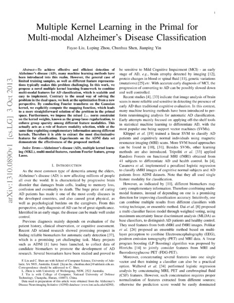Multiple kernel learning in the primal for multi-modal Alzheimer's disease classification
\(\cdot\) F. Liu, L. Zhou, C. Shen, J. Yin.
\(\cdot\) IEEE Journal of Biomedical and Health Informatics (JBHI), 2014.
\(\cdot\) arXivlinkbibtexgoogle scholarsemantic scholarOnline published at IEEE: 10 October 2013.
Multiple kernel clustering based on centered kernel alignment
\(\cdot\) Y. Lu, L. Wang, J. Lu, J. Yang, C. Shen.
\(\cdot\) Pattern Recognition (PR), 2014.
\(\cdot\) bibtexgoogle scholarsemantic scholar Efficient semidefinite spectral clustering via Lagrange duality
Efficient semidefinite spectral clustering via Lagrange duality
\(\cdot\) Y. Yan, C. Shen, H. Wang.
\(\cdot\) IEEE Transactions on Image Processing (TIP), 2014.
\(\cdot\) arXivbibtexgoogle scholarsemantic scholar Large-margin learning of compact binary image encodings
Large-margin learning of compact binary image encodings
\(\cdot\) S. Paisitkriangkrai, C. Shen, A. van den Hengel.
\(\cdot\) IEEE Transactions on Image Processing (TIP), 2014.
\(\cdot\) arXivbibtexgoogle scholarsemantic scholar Characterness: An indicator of text in the wild
Characterness: An indicator of text in the wild
\(\cdot\) Y. Li, W. Jia, C. Shen, A. van den Hengel.
\(\cdot\) IEEE Transactions on Image Processing (TIP), 2014.
\(\cdot\) arXivlinkbibtexgoogle scholarsemantic scholarproject webpage Context-aware hypergraph construction for robust spectral clustering
Context-aware hypergraph construction for robust spectral clustering
\(\cdot\) X. Li, W. Hu, C. Shen, A. Dick, Z. Zhang.
\(\cdot\) IEEE Transactions on Knowledge and Data Engineering (TKDE), 2014.
\(\cdot\) arXivlinkbibtexgoogle scholarsemantic scholar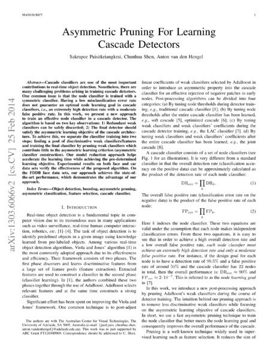Asymmetric pruning for learning cascade detectors
\(\cdot\) S. Paisitkriangkrai, C. Shen, A. van den Hengel.
\(\cdot\) IEEE Transactions on Multimedia (TMM), 2014.
\(\cdot\) arXivlinkbibtexgoogle scholarsemantic scholar Efficient dual approach to distance metric learning
Efficient dual approach to distance metric learning
\(\cdot\) C. Shen, J. Kim, F. Liu, L. Wang, A. van den Hengel.
\(\cdot\) IEEE Transactions on Neural Networks and Learning Systems (TNN), 2014.
\(\cdot\) arXivbibtexgoogle scholarsemantic scholar A scalable stage-wise approach to large-margin multi-class loss based boosting
A scalable stage-wise approach to large-margin multi-class loss based boosting
\(\cdot\) S. Paisitkriangkrai, C. Shen, A. van den Hengel.
\(\cdot\) IEEE Transactions on Neural Networks and Learning Systems (TNN), 2014.
\(\cdot\) arXivlinkpdfbibtexgoogle scholarsemantic scholarRandomBoost: Simplified multi-class boosting through randomization
\(\cdot\) S. Paisitkriangkrai, C. Shen, Q. Shi, A. van den Hengel.
\(\cdot\) IEEE Transactions on Neural Networks and Learning Systems (TNN), 2014.
\(\cdot\) arXivlinkbibtexgoogle scholarsemantic scholarA hierarchical word-merging algorithm with class separability measure
\(\cdot\) L. Wang, L. Zhou, C. Shen, L. Liu, H. Liu.
\(\cdot\) IEEE Transactions on Pattern Analysis and Machine Intelligence (TPAMI), 2014.
\(\cdot\) pdfbibtexgoogle scholarsemantic scholar StructBoost: Boosting methods for predicting structured output variables
StructBoost: Boosting methods for predicting structured output variables
\(\cdot\) C. Shen, G. Lin, A. van den Hengel.
\(\cdot\) IEEE Transactions on Pattern Analysis and Machine Intelligence (TPAMI), 2014.
\(\cdot\) arXivlinkpdfbibtexgoogle scholarsemantic scholar
Conference
 Fast supervised hashing with decision trees for high-dimensional data
Fast supervised hashing with decision trees for high-dimensional data
\(\cdot\) G. Lin, C. Shen, Q. Shi, A. van den Hengel, D. Suter.
\(\cdot\) Proc. IEEE Conference on Computer Vision and Pattern Recognition (CVPR’14), 2014.
\(\cdot\) arXivlinkbibtexgoogle scholarsemantic scholarproject webpage Strengthening the effectiveness of pedestrian detection with spatially pooled features
Strengthening the effectiveness of pedestrian detection with spatially pooled features
\(\cdot\) S. Paisitkriangkrai, C. Shen, A. van den Hengel.
\(\cdot\) Proc. European Conference on Computer Vision (ECCV’14), 2014.
\(\cdot\) arXivbibtexgoogle scholarsemantic scholarproject webpage Optimizing ranking measures for compact binary code learning
Optimizing ranking measures for compact binary code learning
\(\cdot\) G. Lin, C. Shen, J. Wu.
\(\cdot\) Proc. European Conference on Computer Vision (ECCV’14), 2014.
\(\cdot\) arXivbibtexgoogle scholarsemantic scholarproject webpage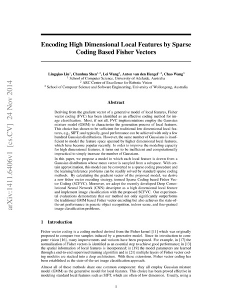Encoding high dimensional local features by sparse coding based Fisher vectors
\(\cdot\) L. Liu, C. Shen, L. Wang, A. van den Hengel, C. Wang.
\(\cdot\) Proc. Advances in Neural Information Processing Systems (NeurIPS’14), 2014.
\(\cdot\) arXivbibtexgoogle scholarsemantic scholar
2013
Journal
 Training effective node classifiers for cascade classification
Training effective node classifiers for cascade classification
\(\cdot\) C. Shen, P. Wang, S. Paisitkriangkrai, A. van den Hengel.
\(\cdot\) International Journal of Computer Vision (IJCV), 2013.
\(\cdot\) arXivlinkbibtexgoogle scholarsemantic scholarFully corrective boosting with arbitrary loss and regularization
\(\cdot\) C. Shen, H. Li, A. van den Hengel.
\(\cdot\) Neural Networks (NN), 2013.
\(\cdot\) pdfbibtexgoogle scholarsemantic scholarApproximate least trimmed sum of squares fitting and applications in image analysis
\(\cdot\) F. Shen, C. Shen, A. van den Hengel, Z. Tang.
\(\cdot\) IEEE Transactions on Image Processing (TIP), 2013.
\(\cdot\) linkpdfbibtexgoogle scholarsemantic scholarVisual tracking with spatio-temporal Dempster-Shafer information fusion
\(\cdot\) X. Li, A. Dick, C. Shen, Z. Zhang, A. van den Hengel, H. Wang.
\(\cdot\) IEEE Transactions on Image Processing (TIP), 2013.
\(\cdot\) pdfbibtexgoogle scholarsemantic scholarA survey of appearance models in visual object tracking
\(\cdot\) X. Li, W. Hu, C. Shen, Z. Zhang, A. Dick, A. van den Hengel.
\(\cdot\) ACM Transactions on Intelligent Systems and Technology (TIST), 2013.
\(\cdot\) arXivbibtexgoogle scholarsemantic scholarShape similarity analysis by self-tuning locally constrained mixed-diffusion
\(\cdot\) L. Luo, C. Shen, C. Zhang, A. van den Hengel.
\(\cdot\) IEEE Transactions on Multimedia (TMM), 2013.
\(\cdot\) pdfbibtexgoogle scholarsemantic scholar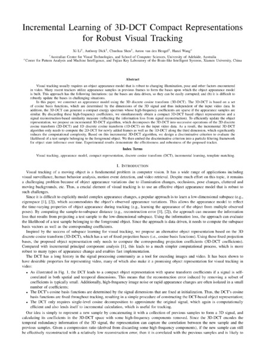Incremental learning of 3D-DCT compact representations for robust visual tracking
\(\cdot\) X. Li, A. Dick, C. Shen, A. van den Hengel, H. Wang.
\(\cdot\) IEEE Transactions on Pattern Analysis and Machine Intelligence (TPAMI), 2013.
\(\cdot\) arXivlinkpdfbibtexgoogle scholarsemantic scholarproject webpage
Conference
 Part-based visual tracking with online latent structural learning
Part-based visual tracking with online latent structural learning
\(\cdot\) R. Yao, Q. Shi, C. Shen, Y. Zhang, A. van den Hengel.
\(\cdot\) Proc. IEEE Conference on Computer Vision and Pattern Recognition (CVPR’13), 2013.
\(\cdot\) linkpdfbibtexgoogle scholarsemantic scholarproject webpage Bilinear programming for human activity recognition with unknown MRF graphs
Bilinear programming for human activity recognition with unknown MRF graphs
\(\cdot\) Z. Wang, Q. Shi, C. Shen, A. van den Hengel.
\(\cdot\) Proc. IEEE Conference on Computer Vision and Pattern Recognition (CVPR’13), 2013.
\(\cdot\) linkpdfbibtexgoogle scholarsemantic scholar A fast semidefinite approach to solving binary quadratic problems
A fast semidefinite approach to solving binary quadratic problems
\(\cdot\) P. Wang, C. Shen, A. van den Hengel.
\(\cdot\) Proc. IEEE Conference on Computer Vision and Pattern Recognition (CVPR’13), 2013.
\(\cdot\) arXivbibtexgoogle scholarsemantic scholarproject webpageOral presentation, 60 out of 1870 submissions.
 Inductive hashing on manifolds
Inductive hashing on manifolds
\(\cdot\) F. Shen, C. Shen, Q. Shi, A. van den Hengel, Z. Tang.
\(\cdot\) Proc. IEEE Conference on Computer Vision and Pattern Recognition (CVPR’13), 2013.
\(\cdot\) arXivbibtexgoogle scholarsemantic scholarproject webpage Learning compact binary codes for visual tracking
Learning compact binary codes for visual tracking
\(\cdot\) X. Li, C. Shen, A. Dick, A. van den Hengel.
\(\cdot\) Proc. IEEE Conference on Computer Vision and Pattern Recognition (CVPR’13), 2013.
\(\cdot\) linkpdfbibtexgoogle scholarsemantic scholar Dictionary learning and sparse coding on Grassmann manifolds: an extrinsic solution
Dictionary learning and sparse coding on Grassmann manifolds: an extrinsic solution
\(\cdot\) M. Harandi, C. Sanderson, C. Shen, B. Lovell.
\(\cdot\) Proc. IEEE International Conference on Computer Vision (ICCV’13), 2013.
\(\cdot\) arXivbibtexgoogle scholarsemantic scholarproject webpage Efficient pedestrian detection by directly optimizing the partial area under the ROC curve
Efficient pedestrian detection by directly optimizing the partial area under the ROC curve
\(\cdot\) S. Paisitkriangkrai, C. Shen, A. van den Hengel.
\(\cdot\) Proc. IEEE International Conference on Computer Vision (ICCV’13), 2013.
\(\cdot\) arXivpdfbibtexgoogle scholarsemantic scholar A general two-step approach to learning-based hashing
A general two-step approach to learning-based hashing
\(\cdot\) G. Lin, C. Shen, D. Suter, A. van den Hengel.
\(\cdot\) Proc. IEEE International Conference on Computer Vision (ICCV’13), 2013.
\(\cdot\) arXivbibtexgoogle scholarsemantic scholarproject webpage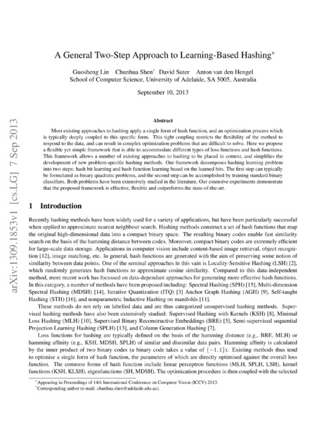Contextual hypergraph modeling for salient object detection
\(\cdot\) X. Li, Y. Li, C. Shen, A. Dick, A. van den Hengel.
\(\cdot\) Proc. IEEE International Conference on Computer Vision (ICCV’13), 2013.
\(\cdot\) arXivbibtexgoogle scholarsemantic scholarproject webpageExtended depth-of-field via focus stacking and graph cuts
\(\cdot\) C. Zhang, J. Bastian, C. Shen, A. van den Hengel, T. Shen.
\(\cdot\) Proc. IEEE Conference on Image Processing (ICIP’13), 2013.
\(\cdot\) bibtexgoogle scholarsemantic scholarApproximate constraint generation for efficient structured boosting
\(\cdot\) G. Lin, C. Shen, A. van den Hengel.
\(\cdot\) Proc. IEEE Conference on Image Processing (ICIP’13), 2013.
\(\cdot\) bibtexgoogle scholarsemantic scholarLeveraging surrounding context for scene text detection
\(\cdot\) Y. Li, C. Shen, W. Jia, A. van den Hengel.
\(\cdot\) Proc. IEEE Conference on Image Processing (ICIP’13), 2013.
\(\cdot\) bibtexgoogle scholarsemantic scholar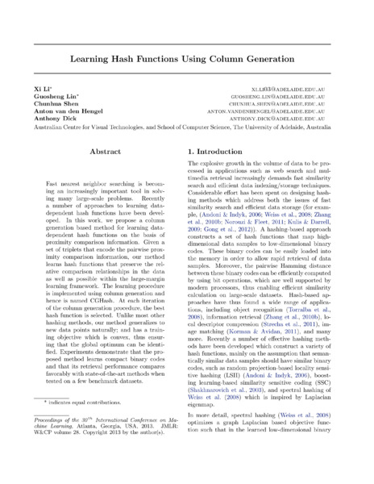Learning hash functions using column generation
\(\cdot\) X. Li, G. Lin, C. Shen, A. van den Hengel, A. Dick.
\(\cdot\) Proc. International Conference on Machine Learning (ICML’13), 2013.
\(\cdot\) arXivpdfbibtexgoogle scholarsemantic scholarproject webpageOral presentation.
2012
Journal
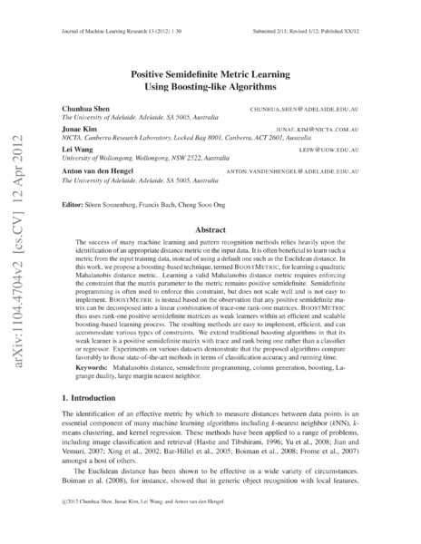Positive semidefinite metric learning using boosting-like algorithms
\(\cdot\) C. Shen, J. Kim, L. Wang, A. van den Hengel.
\(\cdot\) Journal of Machine Learning Research (JMLR), 2012.
\(\cdot\) arXivlinkbibtexgoogle scholarsemantic scholarproject webpageFast and robust object detection using asymmetric totally-corrective boosting
\(\cdot\) P. Wang, C. Shen, N. Barnes, H. Zheng.
\(\cdot\) IEEE Transactions on Neural Networks and Learning Systems (TNN), 2012.
\(\cdot\) pdfbibtexgoogle scholarsemantic scholarUBoost: Boosting with the Universum
\(\cdot\) C. Shen, P. Wang, F. Shen, H. Wang.
\(\cdot\) IEEE Transactions on Pattern Analysis and Machine Intelligence (TPAMI), 2012.
\(\cdot\) pdfbibtexgoogle scholarsemantic scholar
Conference
 Fast training of effective multi-class boosting using coordinate descent optimization
Fast training of effective multi-class boosting using coordinate descent optimization
\(\cdot\) G. Lin, C. Shen, A. van den Hengel, D. Suter.
\(\cdot\) Proc. Asian Conference on Computer Vision (ACCV’12), 2012.
\(\cdot\) arXivbibtexgoogle scholarsemantic scholarSharing features in multi-class boosting via group sparsity
\(\cdot\) S. Paisitkriangkrai, C. Shen, A. van den Hengel.
\(\cdot\) Proc. IEEE Conference on Computer Vision and Pattern Recognition (CVPR’12), 2012.
\(\cdot\) pdfbibtexgoogle scholarsemantic scholar Non-sparse linear representations for visual tracking with online reservoir metric learning
Non-sparse linear representations for visual tracking with online reservoir metric learning
\(\cdot\) X. Li, C. Shen, Q. Shi, A. Dick, A. van den Hengel.
\(\cdot\) Proc. IEEE Conference on Computer Vision and Pattern Recognition (CVPR’12), 2012.
\(\cdot\) arXivpdfbibtexgoogle scholarsemantic scholar Robust tracking with weighted online structured learning
Robust tracking with weighted online structured learning
\(\cdot\) R. Yao, Q. Shi, C. Shen, Y. Zhang, A. van den Hengel.
\(\cdot\) Proc. European Conference on Computer Vision (ECCV’12), 2012.
\(\cdot\) pdfbibtexgoogle scholarsemantic scholar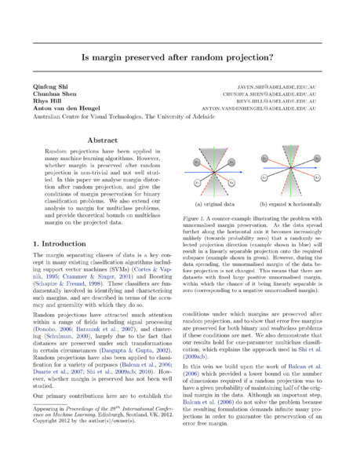Is margin preserved after random projection?
\(\cdot\) Q. Shi, C. Shen, R. Hill, A. van den Hengel.
\(\cdot\) Proc. International Conference on Machine Learning (ICML’12), 2012.
\(\cdot\) arXivlinkbibtexgoogle scholarsemantic scholarThis work provides an analysis of margin distortion under random projections, the conditions under which margins are preserved, and presents bounds on the margin distortion.
Other
Semidefinite programming (book chapter in: encyclopedia of computer vision, springer)
\(\cdot\) C. Shen, A. van den Hengel.
\(\cdot\) 2012.
\(\cdot\) bibtexgoogle scholarsemantic scholar
2011
Journal
 Efficiently learning a detection cascade with sparse eigenvectors
Efficiently learning a detection cascade with sparse eigenvectors
\(\cdot\) C. Shen, S. Paisitkriangkrai, J. Zhang.
\(\cdot\) IEEE Transactions on Image Processing (TIP), 2011.
\(\cdot\) arXivlinkbibtexgoogle scholarsemantic scholar Incremental training of a detector using online sparse eigen-decomposition
Incremental training of a detector using online sparse eigen-decomposition
\(\cdot\) S. Paisitkriangkrai, C. Shen, J. Zhang.
\(\cdot\) IEEE Transactions on Image Processing (TIP), 2011.
\(\cdot\) arXivlinkbibtexgoogle scholarsemantic scholar
Conference
Efficiently learning a distance metric for large margin nearest neighbor classification
\(\cdot\) K. Park, C. Shen, Z. Hao, J. Kim.
\(\cdot\) Proc. AAAI Conference on Artificial Intelligence (AAAI’11), 2011.
\(\cdot\) bibtexgoogle scholarsemantic scholarIs face recognition really a compressive sensing problem?
\(\cdot\) Q. Shi, A. Eriksson, A. van den Hengel, C. Shen.
\(\cdot\) Proc. IEEE Conference on Computer Vision and Pattern Recognition (CVPR’11), 2011.
\(\cdot\) pdfbibtexgoogle scholarsemantic scholar A scalable dual approach to semidefinite metric learning
A scalable dual approach to semidefinite metric learning
\(\cdot\) C. Shen, J. Kim, L. Wang.
\(\cdot\) Proc. IEEE Conference on Computer Vision and Pattern Recognition (CVPR’11), 2011.
\(\cdot\) pdfbibtexgoogle scholarsemantic scholarA direct formulation for totally-corrective multi-class boosting
\(\cdot\) C. Shen, Z. Hao.
\(\cdot\) Proc. IEEE Conference on Computer Vision and Pattern Recognition (CVPR’11), 2011.
\(\cdot\) pdfbibtexgoogle scholarsemantic scholarA generalized probabilistic framework for compact codebook creation
\(\cdot\) L. Liu, L. Wang, C. Shen.
\(\cdot\) Proc. IEEE Conference on Computer Vision and Pattern Recognition (CVPR’11), 2011.
\(\cdot\) pdfbibtexgoogle scholarsemantic scholarReal-time visual tracking using compressive sensing
\(\cdot\) H. Li, C. Shen, Q. Shi.
\(\cdot\) Proc. IEEE Conference on Computer Vision and Pattern Recognition (CVPR’11), 2011.
\(\cdot\) pdfbibtexgoogle scholarsemantic scholarLaplacian margin distribution boosting for learning from sparsely labeled data
\(\cdot\) T. Wang, X. He, C. Shen, N. Barnes.
\(\cdot\) Proc. International Conference on Digital Image Computing: Techniques and Applications (DICTA’11), 2011.
\(\cdot\) bibtexgoogle scholarsemantic scholarOn the optimality of sequential forward feature selection using class separability measure
\(\cdot\) L. Wang, C. Shen, R. Hartley.
\(\cdot\) Proc. International Conference on Digital Image Computing: Techniques and Applications (DICTA’11), 2011.
\(\cdot\) bibtexgoogle scholarsemantic scholar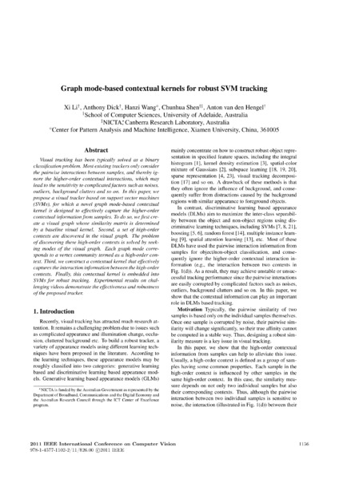Graph mode-based contextual kernels for robust SVM tracking
\(\cdot\) X. Li, A. Dick, H. Wang, C. Shen, A. van den Hengel.
\(\cdot\) Proc. IEEE International Conference on Computer Vision (ICCV’11), 2011.
\(\cdot\) pdfbibtexgoogle scholarsemantic scholar
2010
Journal
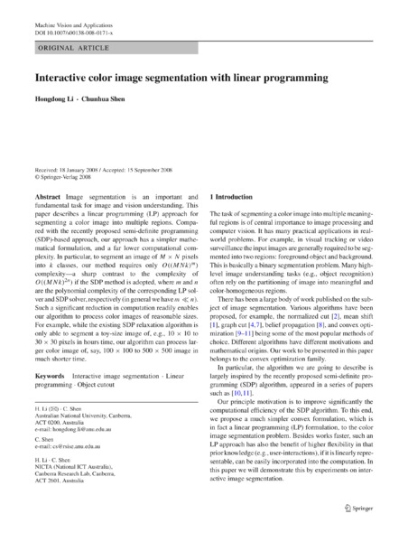Interactive color image segmentation with linear programming
\(\cdot\) H. Li, C. Shen.
\(\cdot\) Machine Vision and Applications (MVA), 2010.
\(\cdot\) linkpdfbibtexgoogle scholarsemantic scholar Generalized kernel-based visual tracking
Generalized kernel-based visual tracking
\(\cdot\) C. Shen, J. Kim, H. Wang.
\(\cdot\) IEEE Transactions on Circuits and Systems for Video Technology (TCSVT), 2010.
\(\cdot\) arXivlinkpdfbibtexgoogle scholarsemantic scholarproject webpageFeature selection with redundancy-constrained class separability
\(\cdot\) L. Zhou, L. Wang, C. Shen.
\(\cdot\) IEEE Transactions on Neural Networks (TNN), 2010.
\(\cdot\) linkbibtexgoogle scholarsemantic scholar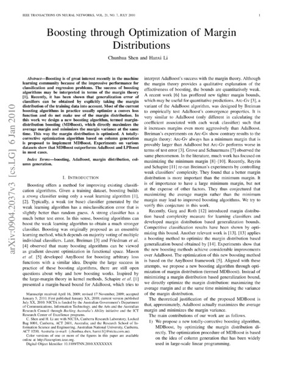Boosting through optimization of margin distributions
\(\cdot\) C. Shen, H. Li.
\(\cdot\) IEEE Transactions on Neural Networks (TNN), 2010.
\(\cdot\) arXivlinkbibtexgoogle scholarsemantic scholar Scalable large-margin Mahalanobis distance metric learning
Scalable large-margin Mahalanobis distance metric learning
\(\cdot\) C. Shen, J. Kim, L. Wang.
\(\cdot\) IEEE Transactions on Neural Networks (TNN), 2010.
\(\cdot\) arXivlinkbibtexgoogle scholarsemantic scholar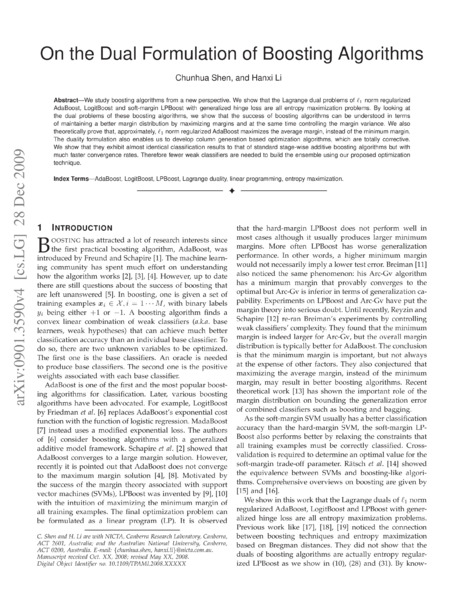On the dual formulation of boosting algorithms
\(\cdot\) C. Shen, H. Li.
\(\cdot\) IEEE Transactions on Pattern Analysis and Machine Intelligence (TPAMI), 2010.
\(\cdot\) arXivlinkbibtexgoogle scholarsemantic scholar
Conference
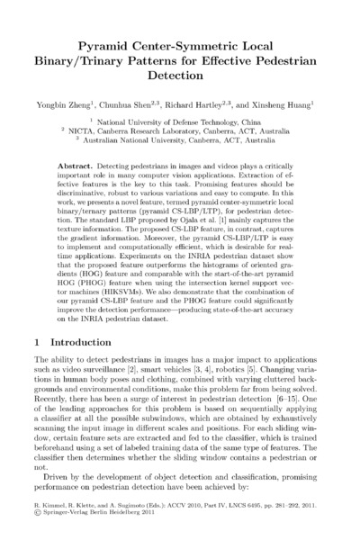Pyramid center-symmetric local binary, trinary patterns for effective pedestrian detection
\(\cdot\) Y. Zheng, C. Shen, R. Hartley, X. Huang.
\(\cdot\) Proc. Asian Conference on Computer Vision (ACCV’10), 2010.
\(\cdot\) pdfbibtexgoogle scholarsemantic scholarAsymmetric totally-corrective boosting for real-time object detection
\(\cdot\) P. Wang, C. Shen, N. Barnes, H. Zheng, Z. Ren.
\(\cdot\) Proc. Asian Conference on Computer Vision (ACCV’10), 2010.
\(\cdot\) bibtexgoogle scholarsemantic scholarOral presentation.
Face detection with effective feature extraction
\(\cdot\) S. Paisitkriangkrai, C. Shen, J. Zhang.
\(\cdot\) Proc. Asian Conference on Computer Vision (ACCV’10), 2010.
\(\cdot\) bibtexgoogle scholarsemantic scholarTotally-corrective multi-class boosting
\(\cdot\) Z. Hao, C. Shen, N. Barnes, B. Wang.
\(\cdot\) Proc. Asian Conference on Computer Vision (ACCV’10), 2010.
\(\cdot\) bibtexgoogle scholarsemantic scholar Rapid face recognition using hashing
Rapid face recognition using hashing
\(\cdot\) Q. Shi, H. Li, C. Shen.
\(\cdot\) Proc. IEEE Conference on Computer Vision and Pattern Recognition (CVPR’10), 2010.
\(\cdot\) pdfbibtexgoogle scholarsemantic scholarRobust face recognition via accurate face alignment and sparse representation
\(\cdot\) H. Li, P. Wang, C. Shen.
\(\cdot\) Proc. International Conference on on Digital Image Computing: Techniques and Applications (DICTA’10), 2010.
\(\cdot\) bibtexgoogle scholarsemantic scholar LACBoost and FisherBoost: optimally building cascade classifiers
LACBoost and FisherBoost: optimally building cascade classifiers
\(\cdot\) C. Shen, P. Wang, H. Li.
\(\cdot\) Proc. European Conference on Computer Vision (ECCV’10), 2010.
\(\cdot\) arXivlinkbibtexgoogle scholarsemantic scholarImproved human detection and classification in thermal images
\(\cdot\) W. Wang, J. Zhang, C. Shen.
\(\cdot\) Proc. IEEE International Conference on Image Processing (ICIP’10), 2010.
\(\cdot\) bibtexgoogle scholarsemantic scholarTraining a multi-exit cascade with linear asymmetric classification for efficient object detection
\(\cdot\) P. Wang, C. Shen, H. Zheng, Z. Ren.
\(\cdot\) Proc. IEEE International Conference on Image Processing (ICIP’10), 2010.
\(\cdot\) bibtexgoogle scholarsemantic scholarHippocampal shape classification using redundancy constrained feature selection
\(\cdot\) L. Zhou, L. Wang, C. Shen, N. Barnes.
\(\cdot\) Proc. International Conference on Medical Image Computing and Computer Assisted Intervention (MICCAI’10), 2010.
\(\cdot\) bibtexgoogle scholarsemantic scholar
Other
Proceedings of international conference on digital image computing: techniques and applications
\(\cdot\) J. Zhang, C. Shen, G. Geers, Q. Wu.
\(\cdot\) Editors, IEEE, 2010.
\(\cdot\) bibtexgoogle scholarsemantic scholar
2009
Conference
A variant of the trace quotient formulation for dimensionality reduction
\(\cdot\) P. Wang, C. Shen, H. Zheng, Z. Ren.
\(\cdot\) Proc. 9th Asian Conference on Computer Vision (ACCV’09), 2009.
\(\cdot\) bibtexgoogle scholarsemantic scholarA scalable algorithm for learning a Mahalanobis distance metric
\(\cdot\) J. Kim, C. Shen, L. Wang.
\(\cdot\) Proc. 9th Asian Conference on Computer Vision (ACCV’09), 2009.
\(\cdot\) bibtexgoogle scholarsemantic scholar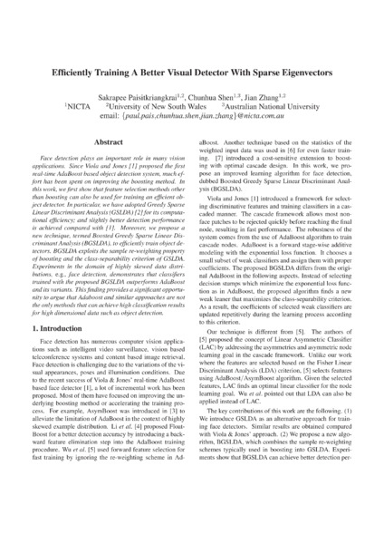Efficiently training a better visual detector with sparse eigenvectors
\(\cdot\) S. Paisitkriangkrai, C. Shen, J. Zhang.
\(\cdot\) Proc. IEEE Conference on Computer Vision and Pattern Recognition (CVPR’09), 2009.
\(\cdot\) arXivlinkbibtexgoogle scholarsemantic scholarA two-layer night-time vehicle detector
\(\cdot\) W. Wang, C. Shen, J. Zhang, S. Paisitkriangkrai.
\(\cdot\) Proc. International Conference on Digital Image Computing - Techniques and Applications (DICTA’09), 2009.
\(\cdot\) bibtexgoogle scholarsemantic scholarSmooth approximation of \(l_\infty\)-norm for multi-view geometry
\(\cdot\) Y. Dai, H. Li, M. He, C. Shen.
\(\cdot\) Proc. International Conference on Digital Image Computing - Techniques and Applications (DICTA’09), 2009.
\(\cdot\) bibtexgoogle scholarsemantic scholar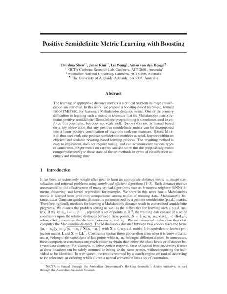Positive semidefinite metric learning with boosting
\(\cdot\) C. Shen, J. Kim, L. Wang, A. van den Hengel.
\(\cdot\) Proc. Advances in Neural Information Processing Systems (NeurIPS’09), 2009.
\(\cdot\) arXivpdfbibtexgoogle scholarsemantic scholarproject webpage
2008
Journal
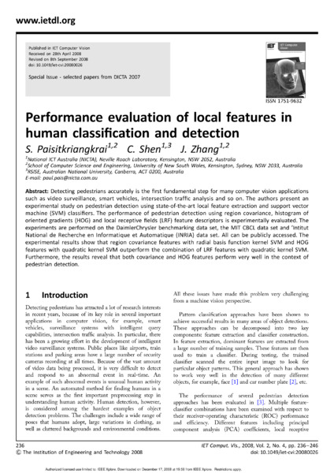Performance evaluation of local features in human classification and detection
\(\cdot\) S. Paisitkriangkrai, C. Shen, J. Zhang.
\(\cdot\) IET Computer Vision (IETCV), 2008.
\(\cdot\) linkpdfbibtexgoogle scholarsemantic scholarInvited submission, special issue of DICTA2007.
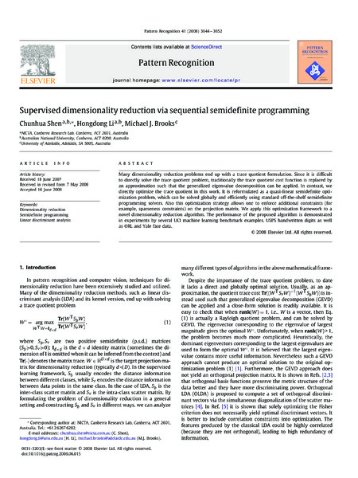Supervised dimensionality reduction via sequential semidefinite programming
\(\cdot\) C. Shen, H. Li, M. Brooks.
\(\cdot\) Pattern Recognition (PR), 2008.
\(\cdot\) linkpdfbibtexgoogle scholarsemantic scholar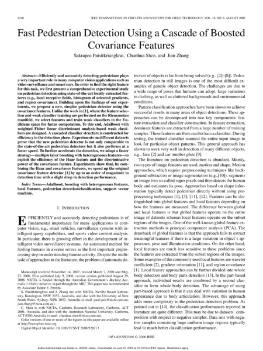Fast pedestrian detection using a cascade of boosted covariance features
\(\cdot\) S. Paisitkriangkrai, C. Shen, J. Zhang.
\(\cdot\) IEEE Transactions on Circuits and Systems for Video Technology (TCSVT), 2008.
\(\cdot\) linkpdfbibtexgoogle scholarsemantic scholar
Conference
Self-calibrating cameras using semidefinite programming
\(\cdot\) C. Shen, H. Li, M. Brooks.
\(\cdot\) Proc. International Conference on Digital Image Computing - Techniques and Applications (DICTA’08), 2008.
\(\cdot\) linkbibtexgoogle scholarsemantic scholarMulti-view human motion capture with an improved deformation skin model
\(\cdot\) Y. Lu, L. Wang, R. Hartley, H. Li, C. Shen.
\(\cdot\) Proc. International Conference on Digital Image Computing - Techniques and Applications (DICTA’08), 2008.
\(\cdot\) bibtexgoogle scholarsemantic scholarBoosting the minimum margin: LPBoost vs. AdaBoost
\(\cdot\) H. Li, C. Shen.
\(\cdot\) Proc. International Conference on Digital Image Computing - Techniques and Applications (DICTA’08), 2008.
\(\cdot\) bibtexgoogle scholarsemantic scholarLearning cascaded reduced-set SVMs using linear programming
\(\cdot\) J. Kim, C. Shen, L. Wang.
\(\cdot\) Proc. International Conference on Digital Image Computing - Techniques and Applications (DICTA’08), 2008.
\(\cdot\) bibtexgoogle scholarsemantic scholar A fast algorithm for creating a compact and discriminative visual codebook
A fast algorithm for creating a compact and discriminative visual codebook
\(\cdot\) L. Wang, L. Zhou, C. Shen.
\(\cdot\) Proc. European Conference on Computer Vision (ECCV’08), 2008.
\(\cdot\) linkpdfbibtexgoogle scholarsemantic scholarFace detection from few training examples
\(\cdot\) C. Shen, S. Paisitkriangkrai, J. Zhang.
\(\cdot\) Proc. IEEE International Conference on Image Processing (ICIP’08), 2008.
\(\cdot\) linkbibtexgoogle scholarsemantic scholar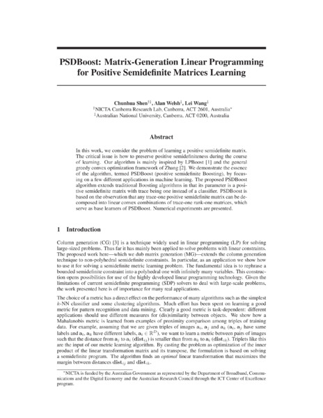PSDBoost: matrix-generation linear programming for positive semidefinite matrices learning
\(\cdot\) C. Shen, A. Welsh, L. Wang.
\(\cdot\) Proc. Advances in Neural Information Processing Systems (NeurIPS’08), 2008.
\(\cdot\) pdfbibtexgoogle scholarsemantic scholarReal-time pedestrian detection using a boosted multi-layer classifier
\(\cdot\) S. Paisitkriangkrai, C. Shen, J. Zhang.
\(\cdot\) Proc. 8th IEEE International Workshop on Visual Surveillance, in conjunction with European Conference on Computer Vision (ECCVW’08), 2008.
\(\cdot\) bibtexgoogle scholarsemantic scholar
2007
Journal
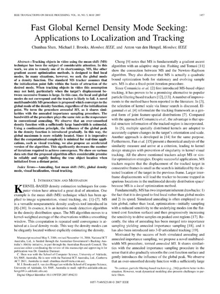Fast global kernel density mode seeking: applications to localization and tracking
\(\cdot\) C. Shen, M. Brooks, A. van den Hengel.
\(\cdot\) IEEE Transactions on Image Processing (TIP), 2007.
\(\cdot\) linkpdfbibtexgoogle scholarsemantic scholarAdaptive object tracking based on an effective appearance filter
\(\cdot\) H. Wang, D. Suter, K. Schindler, C. Shen.
\(\cdot\) IEEE Transactions on Pattern Analysis and Machine Intelligence (TPAMI), 2007.
\(\cdot\) linkpdfbibtexgoogle scholarsemantic scholarFeatured article of September issue 2007.
Conference
A convex programming approach to the trace quotient problem
\(\cdot\) C. Shen, H. Li, M. Brooks.
\(\cdot\) Proc. 8th Asian Conference on Computer Vision (ACCV’07), 2007.
\(\cdot\) linkbibtexgoogle scholarsemantic scholar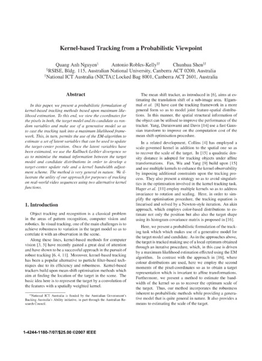Kernel-based tracking from a probabilistic viewpoint
\(\cdot\) Q. Nguyen, A. Robles-Kelly, C. Shen.
\(\cdot\) Proc. IEEE Conference on Computer Vision and Pattern Recognition (CVPR’07), 2007.
\(\cdot\) linkpdfbibtexgoogle scholarsemantic scholarFeature extraction using sequential semidefinite programming
\(\cdot\) C. Shen, H. Li, M. Brooks.
\(\cdot\) Proc. International Conference on Digital Image Computing - Techniques and Applications (DICTA’07), 2007.
\(\cdot\) linkbibtexgoogle scholarsemantic scholarAn experimental evaluation of local features for pedestrian classification
\(\cdot\) S. Paisitkriangkrai, C. Shen, J. Zhang.
\(\cdot\) Proc. International Conference on Digital Image Computing - Techniques and Applications (DICTA’07), 2007.
\(\cdot\) linkbibtexgoogle scholarsemantic scholarBest Paper Award.
Color image labelling using linear programming
\(\cdot\) H. Li, C. Shen, Z. Wen.
\(\cdot\) Proc. International Conference on Digital Image Computing - Techniques and Applications (DICTA’07), 2007.
\(\cdot\) linkbibtexgoogle scholarsemantic scholarObject-respecting colour image segmentation: an LP approach
\(\cdot\) H. Li, C. Shen.
\(\cdot\) Proc. IEEE International Conference on Image Processing (ICIP’07), 2007.
\(\cdot\) linkbibtexgoogle scholarsemantic scholar
2006
Conference
Classification-based likelihood functions for Bayesian tracking
\(\cdot\) C. Shen, H. Li, M. Brooks.
\(\cdot\) Proc. IEEE International Conference on Advanced Video and Signal based Surveillance (AVSS’06), 2006.
\(\cdot\) linkbibtexgoogle scholarsemantic scholarEnhanced kernel-based tracking for monochromatic and thermographic video
\(\cdot\) Q. Nguyen, A. Robles-Kelly, C. Shen.
\(\cdot\) Proc. IEEE International Conference on Advanced Video and Signal based Surveillance (AVSS’06), 2006.
\(\cdot\) linkbibtexgoogle scholarsemantic scholarAn LMI approach for reliable PTZ camera self-calibration
\(\cdot\) H. Li, C. Shen.
\(\cdot\) Proc. IEEE International Conference on Advanced Video and Signal based Surveillance (AVSS’06), 2006.
\(\cdot\) linkbibtexgoogle scholarsemantic scholar
2005
Conference
 Fast global kernel density mode seeking with application to localisation and tracking
Fast global kernel density mode seeking with application to localisation and tracking
\(\cdot\) C. Shen, M. Brooks, A. van den Hengel.
\(\cdot\) Proc. IEEE International Conference on Computer Vision (ICCV’05), 2005.
\(\cdot\) linkpdfbibtexgoogle scholarsemantic scholarOral presentation, 45 out of 1200 submissions.
Visual tracking via efficient kernel discriminant subspace learning
\(\cdot\) C. Shen, A. van den Hengel, M. Brooks.
\(\cdot\) Proc. IEEE International Conference on Image Processing (ICIP’05), 2005.
\(\cdot\) linkbibtexgoogle scholarsemantic scholarAugmented particle filtering for efficient visual tracking
\(\cdot\) C. Shen, M. Brooks, A. van den Hengel.
\(\cdot\) Proc. IEEE International Conference on Image Processing (ICIP’05), 2005.
\(\cdot\) linkbibtexgoogle scholarsemantic scholarAdaptive over-relaxed mean shift
\(\cdot\) C. Shen, M. Brooks.
\(\cdot\) Proc. 8th International Symposium on Signal Processing and Its Applications (ISSPA’05), 2005.
\(\cdot\) linkbibtexgoogle scholarsemantic scholarErrata: in figure 3 square marker and circle marker should be swapped.
2004
Journal
Active control of radiation from a piston set in a rigid sphere
\(\cdot\) Z. Lin, J. Lu, C. Shen, X. Qiu, B. Xu.
\(\cdot\) Journal of Acoustical Society of America (JASA), 2004.
\(\cdot\) linkpdfbibtexgoogle scholarsemantic scholar
Conference
Enhanced importance sampling: unscented auxiliary particle filtering for visual tracking
\(\cdot\) C. Shen, A. van den Hengel, A. Dick, M. Brooks.
\(\cdot\) Proc. Australian Joint Conference on Artificial Intelligence (AI’04), 2004.
\(\cdot\) linkbibtexgoogle scholarsemantic scholar2D articulated tracking with dynamic Bayesian networks
\(\cdot\) C. Shen, A. van den Hengel, A. Dick, M. Brooks.
\(\cdot\) Proc. International Conference on Computer and Information Technology (CIT’04), 2004.
\(\cdot\) linkbibtexgoogle scholarsemantic scholar
2003
Journal
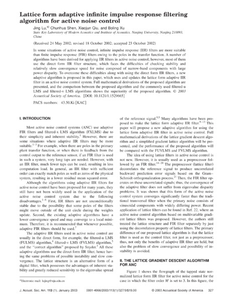Lattice form adaptive infinite impulse response filtering algorithm for active noise control
\(\cdot\) J. Lu, C. Shen, X. Qiu, B. Xu.
\(\cdot\) Journal of Acoustical Society of America (JASA), 2003.
\(\cdot\) linkpdfbibtexgoogle scholarsemantic scholar
Conference
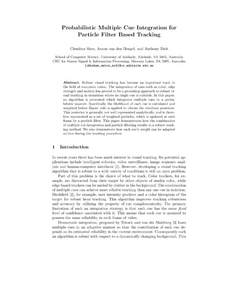Probabilistic multiple cue integration for particle filter based tracking
\(\cdot\) C. Shen, A. van den Hengel, A. Dick.
\(\cdot\) Proc. International Conference on Digital Image Computing - Techniques and Applications (DICTA’03), 2003.
\(\cdot\) pdfbibtexgoogle scholarsemantic scholarNominated for Best Student Paper Award.